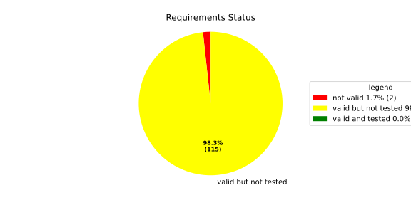
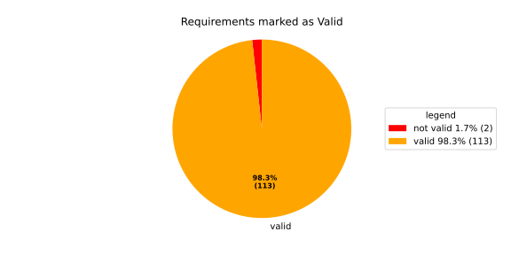
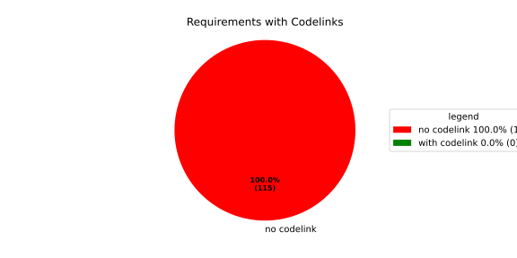

Component Requirements Statistics#
Overview#

In Detail#


No needs passed the filters
Failed Tests
Hint: This table should be empty. Before a PR can be merged all tests have to be successful.
No needs passed the filters
Skipped / Disabled Tests
No needs passed the filters
All passed Tests#
No needs passed the filters
Details About Testcases#
No needs passed the filters
No needs passed the filters
Test Log Files#
tests-report/score/health_monitor/src/rust/tests/test.log
exec ${PAGER:-/usr/bin/less} "$0" || exit 1
Executing tests from //score/health_monitor/src/rust:tests
-----------------------------------------------------------------------------
running 232 tests
test common::tests::duration_to_int_too_large - should panic ... ok
test common::tests::time_offset_diff_too_large - should panic ... ok
test common::tests::time_offset_valid ... ok
test common::tests::time_offset_wrong_order ... ok
test common::tests::time_range_from_interval_lower_too_large - should panic ... ok
test common::tests::time_range_from_interval_valid ... ok
test common::tests::time_range_new_valid ... ok
test common::tests::time_range_new_wrong_order - should panic ... ok
test deadline::common::tests::acquire_and_release_deadline ... ok
test deadline::common::tests::new_and_fields ... ok
test common::tests::duration_to_int_valid ... ok
test deadline::deadline_monitor::tests::deadline_failed_on_first_run_and_then_restarted_is_evaluated_as_error ... ok
test deadline::deadline_monitor::tests::deadline_outside_time_range_is_error_when_dropped_after_evaluate ... ok
test deadline::common::tests::concurrent_acquire ... ok
test deadline::deadline_monitor::tests::get_deadline_unknown_tag ... ok
test deadline::deadline_monitor::tests::start_stop_deadline_outside_ranges_is_evaluated_as_error ... ok
test deadline::deadline_monitor::tests::start_stop_deadline_outside_ranges_is_error_when_dropped_before_evaluate ... ok
test deadline::deadline_state::tests::as_u64_and_new ... ok
test deadline::deadline_state::tests::deadline_state_default_and_snapshot ... ok
test deadline::deadline_state::tests::deadline_state_update_none_returns_err ... ok
test deadline::deadline_state::tests::default_state ... ok
test deadline::deadline_state::tests::set_and_get_timestamp_ms ... ok
test deadline::deadline_state::tests::deadline_state_update_success ... ok
test deadline::deadline_state::tests::set_running ... ok
test deadline::deadline_state::tests::set_underrun ... ok
test deadline::ffi::tests::deadline_destroy_null_deadline ... ok
test deadline::ffi::tests::deadline_monitor_builder_add_deadline_invalid_range ... ok
test deadline::ffi::tests::deadline_monitor_builder_add_deadline_null_builder ... ok
test deadline::ffi::tests::deadline_monitor_builder_add_deadline_null_deadline_tag ... ok
test deadline::ffi::tests::deadline_monitor_builder_add_deadline_succeeds ... ok
test deadline::ffi::tests::deadline_monitor_builder_create_null_builder ... ok
test deadline::ffi::tests::deadline_monitor_builder_create_succeeds ... ok
test deadline::ffi::tests::deadline_monitor_builder_destroy_null_builder ... ok
test deadline::ffi::tests::deadline_monitor_destroy_null_monitor ... ok
test deadline::ffi::tests::deadline_monitor_get_deadline_null_deadline_handle ... ok
test deadline::ffi::tests::deadline_monitor_get_deadline_null_deadline_tag ... ok
test deadline::ffi::tests::deadline_monitor_get_deadline_null_monitor ... ok
test deadline::ffi::tests::deadline_monitor_get_deadline_unknown_deadline ... ok
test deadline::ffi::tests::deadline_monitor_get_deadline_succeeds ... ok
test deadline::ffi::tests::deadline_start_already_started ... ok
test deadline::ffi::tests::deadline_start_null_deadline ... ok
test deadline::ffi::tests::deadline_stop_null_deadline ... ok
test deadline::ffi::tests::deadline_start_succeeds ... ok
test deadline::ffi::tests::deadline_stop_succeeds ... ok
test ffi::tests::health_monitor_builder_add_deadline_monitor_null_deadline_monitor_builder ... ok
test ffi::tests::health_monitor_builder_add_deadline_monitor_null_hmon_builder ... ok
test ffi::tests::health_monitor_builder_add_deadline_monitor_null_monitor_tag ... ok
test ffi::tests::health_monitor_builder_add_deadline_monitor_succeeds ... ok
test ffi::tests::health_monitor_builder_add_heartbeat_monitor_null_hmon_builder ... ok
test ffi::tests::health_monitor_builder_add_heartbeat_monitor_null_heartbeat_monitor_builder ... ok
test ffi::tests::health_monitor_builder_add_heartbeat_monitor_null_monitor_tag ... ok
test ffi::tests::health_monitor_builder_add_heartbeat_monitor_succeeds ... ok
test ffi::tests::health_monitor_builder_add_logic_monitor_null_hmon_builder ... ok
test ffi::tests::health_monitor_builder_add_logic_monitor_null_logic_monitor_builder ... ok
test ffi::tests::health_monitor_builder_add_logic_monitor_null_monitor_tag ... ok
test ffi::tests::health_monitor_builder_add_logic_monitor_succeeds ... ok
test ffi::tests::health_monitor_builder_build_invalid_cycle_intervals ... ok
test ffi::tests::health_monitor_builder_build_no_monitors ... ok
test ffi::tests::health_monitor_builder_build_null_builder_handle ... ok
test ffi::tests::health_monitor_builder_build_null_monitor_handle ... ok
test ffi::tests::health_monitor_builder_build_succeeds ... ok
test ffi::tests::health_monitor_builder_build_thread_parameters ... ok
test ffi::tests::health_monitor_builder_build_valid_cycle_intervals_succeeds ... ok
test ffi::tests::health_monitor_builder_create_null_handle ... ok
test ffi::tests::health_monitor_builder_create_succeeds ... ok
test ffi::tests::health_monitor_builder_destroy_null_handle ... ok
test ffi::tests::health_monitor_destroy_null_hmon ... ok
test ffi::tests::health_monitor_get_deadline_monitor_already_taken ... ok
test ffi::tests::health_monitor_get_deadline_monitor_null_deadline_monitor ... ok
test ffi::tests::health_monitor_get_deadline_monitor_null_hmon ... ok
test ffi::tests::health_monitor_get_deadline_monitor_null_monitor_tag ... ok
test ffi::tests::health_monitor_get_deadline_monitor_succeeds ... ok
test ffi::tests::health_monitor_get_heartbeat_monitor_already_taken ... ok
test ffi::tests::health_monitor_get_heartbeat_monitor_null_heartbeat_monitor ... ok
test ffi::tests::health_monitor_get_heartbeat_monitor_null_monitor_tag ... ok
test ffi::tests::health_monitor_get_heartbeat_monitor_null_hmon ... ok
test ffi::tests::health_monitor_get_heartbeat_monitor_succeeds ... ok
test ffi::tests::health_monitor_get_logic_monitor_already_taken ... ok
test ffi::tests::health_monitor_get_logic_monitor_null_hmon ... ok
test ffi::tests::health_monitor_get_logic_monitor_null_logic_monitor ... ok
test ffi::tests::health_monitor_get_logic_monitor_null_monitor_tag ... ok
test ffi::tests::health_monitor_get_logic_monitor_succeeds ... ok
test ffi::tests::health_monitor_start_null_hmon ... ok
test ffi::tests::health_monitor_start_monitor_not_taken ... ok
test health_monitor::tests::health_monitor_builder_build_invalid_cycles ... ok
test health_monitor::tests::health_monitor_builder_build_no_monitors ... ok
test health_monitor::tests::health_monitor_builder_build_succeeds ... ok
test health_monitor::tests::health_monitor_builder_new_succeeds ... ok
test health_monitor::tests::health_monitor_get_deadline_monitor_available ... ok
test health_monitor::tests::health_monitor_get_deadline_monitor_invalid_state ... ok
test health_monitor::tests::health_monitor_get_deadline_monitor_taken ... ok
test health_monitor::tests::health_monitor_get_deadline_monitor_unknown ... ok
test health_monitor::tests::health_monitor_get_heartbeat_monitor_available ... ok
test health_monitor::tests::health_monitor_get_heartbeat_monitor_invalid_state ... ok
test health_monitor::tests::health_monitor_get_heartbeat_monitor_taken ... ok
test health_monitor::tests::health_monitor_get_heartbeat_monitor_unknown ... ok
test health_monitor::tests::health_monitor_get_logic_monitor_available ... ok
test health_monitor::tests::health_monitor_get_logic_monitor_invalid_state ... ok
[2026/06/01 13:07:08.7969051][7815][HMON][INFO] Monitoring thread started.
[2026/06/01 13:07:08.7969244][7815][HMON][INFO] Monitoring thread exiting.
test ffi::tests::health_monitor_start_succeeds ... ok
test health_monitor::tests::health_monitor_get_logic_monitor_taken ... ok
test health_monitor::tests::health_monitor_get_logic_monitor_unknown ... ok
[2026/06/01 13:07:08.7984349][7815][HMON][INFO] Monitoring thread started.
[2026/06/01 13:07:08.7984505][7815][HMON][INFO] Monitoring thread exiting.
test health_monitor::tests::health_monitor_start_monitors_not_taken - should panic ... ok
test health_monitor::tests::health_monitor_start_succeeds ... ok
test heartbeat::ffi::tests::heartbeat_monitor_builder_create_invalid_range ... ok
test heartbeat::ffi::tests::heartbeat_monitor_builder_create_null_builder ... ok
test heartbeat::ffi::tests::heartbeat_monitor_builder_create_succeeds ... ok
test heartbeat::ffi::tests::heartbeat_monitor_builder_destroy_null_builder ... ok
test heartbeat::ffi::tests::heartbeat_monitor_heartbeat_null_monitor ... ok
test heartbeat::ffi::tests::heartbeat_monitor_heartbeat_succeeds ... ok
test heartbeat::ffi::tests::heartbeat_monitor_destroy_null_monitor ... ok
test deadline::deadline_monitor::tests::monitor_with_multiple_running_deadlines ... ok
test heartbeat::heartbeat_monitor::tests::heartbeat_monitor_beat_early_evaluate_early ... ok
test heartbeat::heartbeat_monitor::tests::heartbeat_monitor_beat_early_evaluate_in_range ... ok
test heartbeat::heartbeat_monitor::tests::heartbeat_monitor_beat_in_range_evaluate_in_range ... ok
test heartbeat::heartbeat_monitor::tests::heartbeat_monitor_beat_early_evaluate_late ... ok
test heartbeat::heartbeat_monitor::tests::heartbeat_monitor_builder_build_invalid_internal_processing_cycle ... ok
test heartbeat::heartbeat_monitor::tests::heartbeat_monitor_builder_build_ok ... ok
test heartbeat::heartbeat_monitor::tests::heartbeat_monitor_beat_in_range_evaluate_late ... ok
test heartbeat::heartbeat_monitor::tests::heartbeat_monitor_beat_late_evaluate_late ... ok
test heartbeat::heartbeat_monitor::tests::heartbeat_monitor_cycle_early ... ok
test heartbeat::heartbeat_monitor::tests::heartbeat_monitor_multiple_beats_early_evaluate_early ... ok
test heartbeat::heartbeat_monitor::tests::heartbeat_monitor_cycle_in_range ... ok
test heartbeat::heartbeat_monitor::tests::heartbeat_monitor_multiple_beats_early_evaluate_in_range ... ok
test heartbeat::heartbeat_monitor::tests::heartbeat_monitor_multiple_beats_in_range_evaluate_in_range ... ok
test heartbeat::heartbeat_monitor::tests::heartbeat_monitor_cycle_late ... ok
test heartbeat::heartbeat_monitor::tests::heartbeat_monitor_multiple_beats_early_evaluate_late ... ok
test heartbeat::heartbeat_monitor::tests::heartbeat_monitor_no_beat_evaluate_early ... ok
test heartbeat::heartbeat_monitor::tests::heartbeat_monitor_no_beat_evaluate_in_range ... ok
test heartbeat::heartbeat_monitor::tests::heartbeat_monitor_multiple_beats_in_range_evaluate_late ... ok
test heartbeat::heartbeat_monitor::tests::heartbeat_monitor_multiple_beats_late_evaluate_late ... ok
test heartbeat::heartbeat_state::tests::snapshot_counter_increment ... ok
test heartbeat::heartbeat_state::tests::snapshot_default ... ok
test heartbeat::heartbeat_state::tests::snapshot_from_u64_max ... ok
test heartbeat::heartbeat_state::tests::snapshot_from_u64_valid ... ok
test heartbeat::heartbeat_state::tests::snapshot_from_u64_zero ... ok
test heartbeat::heartbeat_state::tests::snapshot_new_succeeds ... ok
test heartbeat::heartbeat_state::tests::snapshot_set_heartbeat_timestamp_out_of_range - should panic ... ok
test heartbeat::heartbeat_state::tests::snapshot_set_heartbeat_timestamp_valid ... ok
test heartbeat::heartbeat_state::tests::state_default ... ok
test heartbeat::heartbeat_state::tests::state_new ... ok
test heartbeat::heartbeat_state::tests::state_reset ... ok
test heartbeat::heartbeat_state::tests::state_snapshot ... ok
test heartbeat::heartbeat_state::tests::state_update_none ... ok
test heartbeat::heartbeat_state::tests::state_update_some ... ok
test logic::ffi::tests::logic_monitor_builder_add_state_null_allowed_states_many_elements ... ok
test logic::ffi::tests::logic_monitor_builder_add_state_null_allowed_states_zero_elements ... ok
test logic::ffi::tests::logic_monitor_builder_add_state_null_builder ... ok
test logic::ffi::tests::logic_monitor_builder_add_state_null_tag ... ok
test logic::ffi::tests::logic_monitor_builder_add_state_succeeds ... ok
test logic::ffi::tests::logic_monitor_builder_create_null_builder ... ok
test logic::ffi::tests::logic_monitor_builder_create_null_initial_state ... ok
test logic::ffi::tests::logic_monitor_builder_create_succeeds ... ok
test logic::ffi::tests::logic_monitor_builder_destroy_null_builder ... ok
test logic::ffi::tests::logic_monitor_destroy_null_monitor ... ok
test logic::ffi::tests::logic_monitor_state_fails ... ok
test logic::ffi::tests::logic_monitor_state_null_monitor ... ok
test logic::ffi::tests::logic_monitor_state_null_state ... ok
test logic::ffi::tests::logic_monitor_state_succeeds ... ok
test logic::ffi::tests::logic_monitor_transition_fails ... ok
test logic::ffi::tests::logic_monitor_transition_null_monitor ... ok
test logic::ffi::tests::logic_monitor_transition_null_target_state ... ok
test logic::ffi::tests::logic_monitor_transition_succeeds ... ok
test logic::logic_monitor::tests::logic_monitor_builder_build_no_states ... ok
test logic::logic_monitor::tests::logic_monitor_builder_build_succeeds ... ok
test logic::logic_monitor::tests::logic_monitor_builder_build_undefined_initial_state ... ok
test logic::logic_monitor::tests::logic_monitor_builder_build_undefined_target ... ok
test logic::logic_monitor::tests::logic_monitor_builder_new_succeeds ... ok
test logic::logic_monitor::tests::logic_monitor_evaluate_invalid_state ... ok
test logic::logic_monitor::tests::logic_monitor_evaluate_invalid_transition ... ok
test logic::logic_monitor::tests::logic_monitor_evaluate_succeeds ... ok
test logic::logic_monitor::tests::logic_monitor_state_indeterminate_current_state ... ok
test logic::logic_monitor::tests::logic_monitor_state_succeeds ... ok
test logic::logic_monitor::tests::logic_monitor_transition_indeterminate_current_state ... ok
test logic::logic_monitor::tests::logic_monitor_transition_invalid_transition ... ok
test logic::logic_monitor::tests::logic_monitor_transition_succeeds ... ok
test logic::logic_monitor::tests::logic_monitor_transition_unknown_node ... ok
test logic::logic_state::tests::snapshot_from_u64_max ... ok
test logic::logic_state::tests::snapshot_from_u64_valid ... ok
test logic::logic_state::tests::snapshot_from_u64_zero ... ok
test logic::logic_state::tests::snapshot_new_succeeds ... ok
test logic::logic_state::tests::snapshot_set_current_state_index_valid ... ok
test logic::logic_state::tests::snapshot_set_heartbeat_timestamp_out_of_range - should panic ... ok
test logic::logic_state::tests::snapshot_set_monitor_status_valid ... ok
test logic::logic_state::tests::state_new ... ok
test logic::logic_state::tests::state_snapshot ... ok
test logic::logic_state::tests::state_swap ... ok
test tag::tests::deadline_tag_debug ... ok
test tag::tests::deadline_tag_from_str ... ok
test tag::tests::deadline_tag_from_string ... ok
test tag::tests::deadline_tag_new ... ok
test tag::tests::deadline_tag_score_debug ... ok
test tag::tests::monitor_tag_debug ... ok
test tag::tests::monitor_tag_from_str ... ok
test tag::tests::monitor_tag_from_string ... ok
test tag::tests::monitor_tag_new ... ok
test tag::tests::monitor_tag_score_debug ... ok
test tag::tests::state_tag_debug ... ok
test tag::tests::state_tag_from_str ... ok
test tag::tests::state_tag_from_string ... ok
test tag::tests::state_tag_new ... ok
test tag::tests::state_tag_score_debug ... ok
test tag::tests::tag_debug ... ok
test tag::tests::tag_hash_is_eq ... ok
test tag::tests::tag_hash_is_ne ... ok
test tag::tests::tag_new ... ok
test tag::tests::tag_partial_eq_is_eq ... ok
test tag::tests::tag_partial_eq_is_ne ... ok
test tag::tests::tag_score_debug ... ok
test tag::tests::test_from_str ... ok
test tag::tests::test_from_string ... ok
test thread_ffi::tests::scheduler_policy_priority_max_null_priority ... ok
test thread_ffi::tests::scheduler_policy_priority_max_succeeds ... ok
test thread_ffi::tests::scheduler_policy_priority_min_null_priority ... ok
test thread_ffi::tests::scheduler_policy_priority_min_succeeds ... ok
test thread_ffi::tests::thread_parameters_affinity_null_affinity_many_elements ... ok
test thread_ffi::tests::thread_parameters_affinity_null_affinity_zero_elements ... ok
test thread_ffi::tests::thread_parameters_affinity_null_handle ... ok
test thread_ffi::tests::thread_parameters_affinity_succeeds ... ok
test thread_ffi::tests::thread_parameters_create_succeeds ... ok
test thread_ffi::tests::thread_parameters_destroy_null_handle ... ok
test thread_ffi::tests::thread_parameters_scheduler_parameters_invalid_priority ... ok
test thread_ffi::tests::thread_parameters_scheduler_parameters_null_handle ... ok
test thread_ffi::tests::thread_parameters_scheduler_parameters_succeeds ... ok
test thread_ffi::tests::thread_parameters_stack_size_null_handle ... ok
test thread_ffi::tests::thread_parameters_stack_size_succeeds ... ok
test worker::tests::monitoring_logic_report_alive_on_each_call_when_no_error ... ok
test heartbeat::heartbeat_monitor::tests::heartbeat_monitor_no_beat_evaluate_late ... ok
test worker::tests::monitoring_logic_report_error_when_deadline_failed ... ok
[2026/06/01 13:07:09.7562980][7815][HMON][INFO] Monitoring thread started.
test deadline::deadline_monitor::tests::start_stop_deadline_within_range_works ... ok
[2026/06/01 13:07:09.8167115][7815][HMON][WARN] Deadline (DeadlineTag(deadline_fast)) missed! Expected: 50, now: 60
[2026/06/01 13:07:09.8167394][7815][HMON][WARN] Deadline monitor with tag MonitorTag(deadline_monitor) reported error: TooLate.
[2026/06/01 13:07:09.8167466][7815][HMON][WARN] One or more monitors reported errors, skipping AliveAPI notification.
[2026/06/01 13:07:09.8167535][7815][HMON][INFO] Monitoring logic failed, stopping thread.
[2026/06/01 13:07:09.8167586][7815][HMON][INFO] Monitoring thread exiting.
test worker::tests::monitoring_logic_report_alive_respect_cycle ... ok
test worker::tests::unique_thread_runner_monitoring_works ... ok
test heartbeat::heartbeat_monitor::tests::heartbeat_monitor_timestamp_offset ... ok
test result: ok. 232 passed; 0 failed; 0 ignored; 0 measured; 0 filtered out; finished in 1.27s
tests-report/score/health_monitor/src/rust/loom_tests/test.log
exec ${PAGER:-/usr/bin/less} "$0" || exit 1
Executing tests from //score/health_monitor/src/rust:loom_tests
-----------------------------------------------------------------------------
running 3 tests
test heartbeat::heartbeat_monitor::loom_tests::heartbeat_monitor_heartbeat_evaluate_too_early ... ok
test heartbeat::heartbeat_monitor::loom_tests::heartbeat_monitor_heartbeat_evaluate_in_range ... ok
test heartbeat::heartbeat_monitor::loom_tests::heartbeat_monitor_heartbeat_evaluate_too_late ... ok
test result: ok. 3 passed; 0 failed; 0 ignored; 0 measured; 0 filtered out; finished in 0.70s
tests-report/score/health_monitor/src/cpp/cpp_integration_tests/test.log
exec ${PAGER:-/usr/bin/less} "$0" || exit 1
Executing tests from //score/health_monitor/src/cpp:cpp_integration_tests
-----------------------------------------------------------------------------
Running main() from gmock_main.cc
[==========] Running 1 test from 1 test suite.
[----------] Global test environment set-up.
[----------] 1 test from HealthMonitorTest
[ RUN ] HealthMonitorTest.Integrated
[2026/06/05 09:54:42.0717292][score/health_monitor/src/rust/deadline/deadline_monitor.rs:217][4986][HMON][ERROR] Deadline DeadlineTag(deadline_1) stopped too early by 100 ms
[2026/06/05 09:54:42.0717485][score/health_monitor/src/rust/worker.rs:121][4986][HMON][INFO] Monitoring thread started.
[2026/06/05 09:54:42.0717714][score/health_monitor/src/rust/worker.rs:139][4986][HMON][INFO] Monitoring thread exiting.
[ OK ] HealthMonitorTest.Integrated (3 ms)
[----------] 1 test from HealthMonitorTest (3 ms total)
[----------] Global test environment tear-down
[==========] 1 test from 1 test suite ran. (3 ms total)
[ PASSED ] 1 test.
tests-report/score/health_monitor/src/cpp/cpp_unit_tests/test.log
exec ${PAGER:-/usr/bin/less} "$0" || exit 1
Executing tests from //score/health_monitor/src/cpp:cpp_unit_tests
-----------------------------------------------------------------------------
Running main() from gmock_main.cc
[==========] Running 33 tests from 10 test suites.
[----------] Global test environment set-up.
[----------] 2 tests from DeadlineMonitorBuilderFixture
[ RUN ] DeadlineMonitorBuilderFixture.New_Succeeds
[ OK ] DeadlineMonitorBuilderFixture.New_Succeeds (0 ms)
[ RUN ] DeadlineMonitorBuilderFixture.AddDeadline_Succeeds
[ OK ] DeadlineMonitorBuilderFixture.AddDeadline_Succeeds (0 ms)
[----------] 2 tests from DeadlineMonitorBuilderFixture (0 ms total)
[----------] 2 tests from DeadlineMonitorFixture
[ RUN ] DeadlineMonitorFixture.GetDeadline_Succeeds
[ OK ] DeadlineMonitorFixture.GetDeadline_Succeeds (0 ms)
[ RUN ] DeadlineMonitorFixture.GetDeadline_Unknown
[ OK ] DeadlineMonitorFixture.GetDeadline_Unknown (0 ms)
[----------] 2 tests from DeadlineMonitorFixture (0 ms total)
[----------] 2 tests from DeadlineFixture
[ RUN ] DeadlineFixture.Start_Succeeds
[2026/06/05 09:54:43.4389358][score/health_monitor/src/rust/deadline/deadline_monitor.rs:217][5018][HMON][ERROR] Deadline DeadlineTag(deadline) stopped too early by 50 ms
[ OK ] DeadlineFixture.Start_Succeeds (0 ms)
[ RUN ] DeadlineFixture.Start_AlreadyRunning
[2026/06/05 09:54:43.4389870][score/health_monitor/src/rust/deadline/deadline_monitor.rs:217][5018][HMON][ERROR] Deadline DeadlineTag(deadline) stopped too early by 50 ms
[2026/06/05 09:54:43.4389935][score/health_monitor/src/rust/deadline/deadline_monitor.rs:172][5018][HMON][WARN] Trying to start deadline DeadlineTag(deadline) that already failed
[ OK ] DeadlineFixture.Start_AlreadyRunning (0 ms)
[----------] 2 tests from DeadlineFixture (0 ms total)
[----------] 4 tests from HealthMonitorBuilderFixture
[ RUN ] HealthMonitorBuilderFixture.New_Succeeds
[ OK ] HealthMonitorBuilderFixture.New_Succeeds (0 ms)
[ RUN ] HealthMonitorBuilderFixture.Build_Succeeds
[ OK ] HealthMonitorBuilderFixture.Build_Succeeds (0 ms)
[ RUN ] HealthMonitorBuilderFixture.Build_InvalidCycles
[2026/06/05 09:54:43.4390903][score/health_monitor/src/rust/health_monitor.rs:134][5018][HMON][ERROR] Supervisor API cycle duration (123 ms) must be a multiple of internal processing cycle interval (100 ms).
[ OK ] HealthMonitorBuilderFixture.Build_InvalidCycles (0 ms)
[ RUN ] HealthMonitorBuilderFixture.Build_NoMonitors
[2026/06/05 09:54:43.4391104][score/health_monitor/src/rust/health_monitor.rs:146][5018][HMON][ERROR] No monitors have been added. HealthMonitor cannot be created.
[ OK ] HealthMonitorBuilderFixture.Build_NoMonitors (0 ms)
[----------] 4 tests from HealthMonitorBuilderFixture (0 ms total)
[----------] 11 tests from HealthMonitor
[ RUN ] HealthMonitor.GetDeadlineMonitor_Available
[ OK ] HealthMonitor.GetDeadlineMonitor_Available (0 ms)
[ RUN ] HealthMonitor.GetDeadlineMonitor_Taken
[ OK ] HealthMonitor.GetDeadlineMonitor_Taken (0 ms)
[ RUN ] HealthMonitor.GetDeadlineMonitor_Unknown
[ OK ] HealthMonitor.GetDeadlineMonitor_Unknown (0 ms)
[ RUN ] HealthMonitor.GetHeartbeatMonitor_Available
[ OK ] HealthMonitor.GetHeartbeatMonitor_Available (0 ms)
[ RUN ] HealthMonitor.GetHeartbeatMonitor_Taken
[ OK ] HealthMonitor.GetHeartbeatMonitor_Taken (0 ms)
[ RUN ] HealthMonitor.GetHeartbeatMonitor_Unknown
[ OK ] HealthMonitor.GetHeartbeatMonitor_Unknown (0 ms)
[ RUN ] HealthMonitor.GetLogicMonitor_Available
[ OK ] HealthMonitor.GetLogicMonitor_Available (0 ms)
[ RUN ] HealthMonitor.GetLogicMonitor_Taken
[ OK ] HealthMonitor.GetLogicMonitor_Taken (0 ms)
[ RUN ] HealthMonitor.GetLogicMonitor_Unknown
[ OK ] HealthMonitor.GetLogicMonitor_Unknown (0 ms)
[ RUN ] HealthMonitor.Start_Succeeds
[2026/06/05 09:54:43.4393663][score/health_monitor/src/rust/worker.rs:121][5018][HMON][INFO] Monitoring thread started.
[2026/06/05 09:54:43.4393754][score/health_monitor/src/rust/worker.rs:139][5018][HMON][INFO] Monitoring thread exiting.
[ OK ] HealthMonitor.Start_Succeeds (0 ms)
[ RUN ] HealthMonitor.Start_MonitorsNotTaken
[2026/06/05 09:54:43.4400290][score/health_monitor/src/rust/health_monitor.rs:307][5023][HMON][ERROR] All monitors must be taken before starting HealthMonitor but MonitorTag(deadline_monitor) is not taken.
[ OK ] HealthMonitor.Start_MonitorsNotTaken (158 ms)
[----------] 11 tests from HealthMonitor (158 ms total)
[----------] 1 test from HeartbeatMonitorBuilder
[ RUN ] HeartbeatMonitorBuilder.New_Succeeds
[ OK ] HeartbeatMonitorBuilder.New_Succeeds (0 ms)
[----------] 1 test from HeartbeatMonitorBuilder (0 ms total)
[----------] 1 test from HeartbeatMonitor
[ RUN ] HeartbeatMonitor.Heartbeat_Succeeds
[ OK ] HeartbeatMonitor.Heartbeat_Succeeds (0 ms)
[----------] 1 test from HeartbeatMonitor (0 ms total)
[----------] 2 tests from LogicMonitorBuilderFixture
[ RUN ] LogicMonitorBuilderFixture.New_Succeeds
[ OK ] LogicMonitorBuilderFixture.New_Succeeds (0 ms)
[ RUN ] LogicMonitorBuilderFixture.AddState_Succeeds
[ OK ] LogicMonitorBuilderFixture.AddState_Succeeds (0 ms)
[----------] 2 tests from LogicMonitorBuilderFixture (0 ms total)
[----------] 5 tests from LogicMonitorFixture
[ RUN ] LogicMonitorFixture.Transition_Succeeds
[ OK ] LogicMonitorFixture.Transition_Succeeds (0 ms)
[ RUN ] LogicMonitorFixture.Transition_Unknown
[2026/06/05 09:54:43.5978984][score/health_monitor/src/rust/logic/logic_monitor.rs:265][5018][HMON][WARN] Requested state transition is invalid: StateTag(state1) -> StateTag(unknown)
[ OK ] LogicMonitorFixture.Transition_Unknown (0 ms)
[ RUN ] LogicMonitorFixture.Transition_Invalid
[2026/06/05 09:54:43.5979562][score/health_monitor/src/rust/logic/logic_monitor.rs:265][5018][HMON][WARN] Requested state transition is invalid: StateTag(state1) -> StateTag(unknown)
[2026/06/05 09:54:43.5979644][score/health_monitor/src/rust/logic/logic_monitor.rs:254][5018][HMON][WARN] Current logic monitor state cannot be determined
[ OK ] LogicMonitorFixture.Transition_Invalid (0 ms)
[ RUN ] LogicMonitorFixture.State_Succeeds
[ OK ] LogicMonitorFixture.State_Succeeds (0 ms)
[ RUN ] LogicMonitorFixture.State_Invalid
[2026/06/05 09:54:43.5980688][score/health_monitor/src/rust/logic/logic_monitor.rs:265][5018][HMON][WARN] Requested state transition is invalid: StateTag(state1) -> StateTag(unknown)
[2026/06/05 09:54:43.5980816][score/health_monitor/src/rust/logic/logic_monitor.rs:290][5018][HMON][WARN] Current logic monitor state cannot be determined
[ OK ] LogicMonitorFixture.State_Invalid (0 ms)
[----------] 5 tests from LogicMonitorFixture (0 ms total)
[----------] 3 tests from TimeRangeFixture
[ RUN ] TimeRangeFixture.New_Succeeds
[ OK ] TimeRangeFixture.New_Succeeds (0 ms)
[ RUN ] TimeRangeFixture.New_InvalidOrder
[ OK ] TimeRangeFixture.New_InvalidOrder (149 ms)
[ RUN ] TimeRangeFixture.MinMax
[ OK ] TimeRangeFixture.MinMax (0 ms)
[----------] 3 tests from TimeRangeFixture (149 ms total)
[----------] Global test environment tear-down
[==========] 33 tests from 10 test suites ran. (309 ms total)
[ PASSED ] 33 tests.
tests-report/score/launch_manager/exec_error_domain_UT/test.log
exec ${PAGER:-/usr/bin/less} "$0" || exit 1
Executing tests from //score/launch_manager:exec_error_domain_UT
-----------------------------------------------------------------------------
Running main() from gmock_main.cc
[==========] Running 3 tests from 1 test suite.
[----------] Global test environment set-up.
[----------] 3 tests from ExecErrorDomainTest
[ RUN ] ExecErrorDomainTest.AllKnownCodesReturnNonEmptyMessage
[ OK ] ExecErrorDomainTest.AllKnownCodesReturnNonEmptyMessage (0 ms)
[ RUN ] ExecErrorDomainTest.AllKnownCodesHaveDistinctMessages
[ OK ] ExecErrorDomainTest.AllKnownCodesHaveDistinctMessages (0 ms)
[ RUN ] ExecErrorDomainTest.UnknownCodeReturnsNonEmptyMessage
[ OK ] ExecErrorDomainTest.UnknownCodeReturnsNonEmptyMessage (0 ms)
[----------] 3 tests from ExecErrorDomainTest (0 ms total)
[----------] Global test environment tear-down
[==========] 3 tests from 1 test suite ran. (0 ms total)
[ PASSED ] 3 tests.
tests-report/score/launch_manager/daemon/src/process_state_client/process_state_client_ut/test.log
exec ${PAGER:-/usr/bin/less} "$0" || exit 1
Executing tests from //score/launch_manager/daemon/src/process_state_client:process_state_client_ut
-----------------------------------------------------------------------------
Running main() from gmock_main.cc
[==========] Running 4 tests from 1 test suite.
[----------] Global test environment set-up.
[----------] 4 tests from ProcessStateClient_UT
[ RUN ] ProcessStateClient_UT.ProcessStateClient_ConstructReceiver_Succeeds
[ OK ] ProcessStateClient_UT.ProcessStateClient_ConstructReceiver_Succeeds (0 ms)
[ RUN ] ProcessStateClient_UT.ProcessStateClient_QueueOneProcess_Succeeds
[ OK ] ProcessStateClient_UT.ProcessStateClient_QueueOneProcess_Succeeds (0 ms)
[ RUN ] ProcessStateClient_UT.ProcessStateClient_QueueMaxNumberOfProcesses_Succeeds
[ OK ] ProcessStateClient_UT.ProcessStateClient_QueueMaxNumberOfProcesses_Succeeds (8 ms)
[ RUN ] ProcessStateClient_UT.ProcessStateClient_QueueOneProcessTooMany_Fails
mw::log initialization error: Error No logging configuration files could be found. occurred with context information: Failed to load configuration files. Fallback to console logging.
2026/06/01 13:07:07.9227519 1538361 000 ECU1 NONE LM log error verbose 1 Failed to queue posix process
2026/06/01 13:07:07.9227520 1538363 000 ECU1 NONE LM log error verbose 1 ProcessStateReceiver::getNextChangedPosixProcess: Overflow occurred, will be reported as kCommunicationError
[ OK ] ProcessStateClient_UT.ProcessStateClient_QueueOneProcessTooMany_Fails (5 ms)
[----------] 4 tests from ProcessStateClient_UT (15 ms total)
[----------] Global test environment tear-down
[==========] 4 tests from 1 test suite ran. (15 ms total)
[ PASSED ] 4 tests.
tests-report/score/launch_manager/daemon/src/recovery_client/recovery_client_UT/test.log
exec ${PAGER:-/usr/bin/less} "$0" || exit 1
Executing tests from //score/launch_manager/daemon/src/recovery_client:recovery_client_UT
-----------------------------------------------------------------------------
Running main() from gmock_main.cc
[==========] Running 5 tests from 1 test suite.
[----------] Global test environment set-up.
[----------] 5 tests from RecoveryClientTest
[ RUN ] RecoveryClientTest.SendSingleRequest
[ OK ] RecoveryClientTest.SendSingleRequest (0 ms)
[ RUN ] RecoveryClientTest.GetNextRequest
[ OK ] RecoveryClientTest.GetNextRequest (0 ms)
[ RUN ] RecoveryClientTest.GetNextRequestEmpty
[ OK ] RecoveryClientTest.GetNextRequestEmpty (0 ms)
[ RUN ] RecoveryClientTest.RingBufferFull
[ OK ] RecoveryClientTest.RingBufferFull (0 ms)
[ RUN ] RecoveryClientTest.FIFOOrdering
[ OK ] RecoveryClientTest.FIFOOrdering (0 ms)
[----------] 5 tests from RecoveryClientTest (0 ms total)
[----------] Global test environment tear-down
[==========] 5 tests from 1 test suite ran. (0 ms total)
[ PASSED ] 5 tests.
tests-report/score/launch_manager/daemon/src/alive_monitor/details/MonitorImpl_UT/test.log
exec ${PAGER:-/usr/bin/less} "$0" || exit 1
Executing tests from //score/launch_manager/daemon/src/alive_monitor/details:MonitorImpl_UT
-----------------------------------------------------------------------------
Running main() from gmock_main.cc
[==========] Running 3 tests from 1 test suite.
[----------] Global test environment set-up.
[----------] 3 tests from MonitorImplTest
[ RUN ] MonitorImplTest.ThrowsWhenInterfacePathEnvVarIsNotSet
mw::log initialization error: Error No logging configuration files could be found. occurred with context information: Failed to load configuration files. Fallback to console logging.
2026/06/05 09:40:17.2417211 1457806 000 ECU1 NONE Sprv log error verbose 3 Failed to load interface path for Monitor ( test/instance )
[ OK ] MonitorImplTest.ThrowsWhenInterfacePathEnvVarIsNotSet (6 ms)
[ RUN ] MonitorImplTest.DoesNotThrowWhenInterfacePathEnvVarIsSet
2026/06/05 09:40:17.2417214 1457832 000 ECU1 NONE Sprv log error verbose 3 Connection to PHM daemon failed, for the Monitor ( test/instance )
[ OK ] MonitorImplTest.DoesNotThrowWhenInterfacePathEnvVarIsSet (0 ms)
[ RUN ] MonitorImplTest.ReportCheckpointSafeWhenNotConnected
2026/06/05 09:40:17.2417214 1457833 000 ECU1 NONE Sprv log error verbose 3 Connection to PHM daemon failed, for the Monitor ( test/instance )
[ OK ] MonitorImplTest.ReportCheckpointSafeWhenNotConnected (0 ms)
[----------] 3 tests from MonitorImplTest (8 ms total)
[----------] Global test environment tear-down
[==========] 3 tests from 1 test suite ran. (9 ms total)
[ PASSED ] 3 tests.
tests-report/score/launch_manager/daemon/src/alive_monitor/details/supervision/Alive_UT/test.log
exec ${PAGER:-/usr/bin/less} "$0" || exit 1
Executing tests from //score/launch_manager/daemon/src/alive_monitor/details/supervision:Alive_UT
-----------------------------------------------------------------------------
Running main() from gmock_main.cc
[==========] Running 9 tests from 1 test suite.
[----------] Global test environment set-up.
[----------] 9 tests from AliveSupervisionTest
[ RUN ] AliveSupervisionTest.AliveTransitionsOkToExpiredOnMissingHeartbeat
mw::log initialization error: Error No logging configuration files could be found. occurred with context information: Failed to load configuration files. Fallback to console logging.
2026/06/08 08:28:57.7337557 1559378 000 ECU1 NONE Sprv log warn verbose 13 Alive Supervision ( test_alive ) switched to EXPIRED , due to 0 reported alive indication(s) (expected >= 1 ). Failed supervision cycles: 0 / 0
[ OK ] AliveSupervisionTest.AliveTransitionsOkToExpiredOnMissingHeartbeat (4 ms)
[ RUN ] AliveSupervisionTest.AliveStaysOkWithCorrectHeartbeats
[ OK ] AliveSupervisionTest.AliveStaysOkWithCorrectHeartbeats (0 ms)
[ RUN ] AliveSupervisionTest.AliveReportsEnqueueFailureWhenRingBufferFull
2026/06/08 08:28:57.7337558 1559386 000 ECU1 NONE Sprv log warn verbose 13 Alive Supervision ( test_alive ) switched to EXPIRED , due to 0 reported alive indication(s) (expected >= 1 ). Failed supervision cycles: 0 / 0
2026/06/08 08:28:57.7337558 1559387 000 ECU1 NONE Sprv log error verbose 3 Failed to enqueue recovery request for alive supervision test_alive failure (ring buffer full)
[ OK ] AliveSupervisionTest.AliveReportsEnqueueFailureWhenRingBufferFull (0 ms)
[ RUN ] AliveSupervisionTest.AliveDebouncesThroughFailedBeforeExpired
2026/06/08 08:28:57.7337558 1559388 000 ECU1 NONE Sprv log warn verbose 13 Alive Supervision ( test_alive ) switched to FAILED , due to 0 reported alive indication(s) (expected >= 1 ). Failed supervision cycles: 1 / 1
2026/06/08 08:28:57.7337558 1559388 000 ECU1 NONE Sprv log warn verbose 13 Alive Supervision ( test_alive ) switched to EXPIRED , due to 0 reported alive indication(s) (expected >= 1 ). Failed supervision cycles: 2 / 1
[ OK ] AliveSupervisionTest.AliveDebouncesThroughFailedBeforeExpired (0 ms)
[ RUN ] AliveSupervisionTest.DeactivatesOnProcessSigterm
[ OK ] AliveSupervisionTest.DeactivatesOnProcessSigterm (0 ms)
[ RUN ] AliveSupervisionTest.DeactivatesOnProcessCrash
[ OK ] AliveSupervisionTest.DeactivatesOnProcessCrash (0 ms)
[ RUN ] AliveSupervisionTest.ReactivatesAfterCrash
[ OK ] AliveSupervisionTest.ReactivatesAfterCrash (0 ms)
[ RUN ] AliveSupervisionTest.IgnoresIrrelevantProcessStates
[ OK ] AliveSupervisionTest.IgnoresIrrelevantProcessStates (0 ms)
[ RUN ] AliveSupervisionTest.MaxIndicationViolationExpires
2026/06/08 08:28:57.7337558 1559393 000 ECU1 NONE Sprv log warn verbose 13 Alive Supervision ( test_alive ) switched to EXPIRED , due to 2 reported alive indication(s) (expected <= 1 ). Failed supervision cycles: 0 / 0
[ OK ] AliveSupervisionTest.MaxIndicationViolationExpires (0 ms)
[----------] 9 tests from AliveSupervisionTest (5 ms total)
[----------] Global test environment tear-down
[==========] 9 tests from 1 test suite ran. (6 ms total)
[ PASSED ] 9 tests.
tests-report/score/launch_manager/daemon/src/alive_monitor/details/ifappl/MonitorIfDaemon_UT/test.log
exec ${PAGER:-/usr/bin/less} "$0" || exit 1
Executing tests from //score/launch_manager/daemon/src/alive_monitor/details/ifappl:MonitorIfDaemon_UT
-----------------------------------------------------------------------------
Running main() from gmock_main.cc
[==========] Running 16 tests from 1 test suite.
[----------] Global test environment set-up.
[----------] 16 tests from MonitorIfDaemonTest
[ RUN ] MonitorIfDaemonTest.GetInterfaceName_ReturnsNameGivenAtConstruction
mw::log initialization error: Error No logging configuration files could be found. occurred with context information: Failed to load configuration files. Fallback to console logging.
[ OK ] MonitorIfDaemonTest.GetInterfaceName_ReturnsNameGivenAtConstruction (2 ms)
[ RUN ] MonitorIfDaemonTest.InitiallyInactive_CheckForNewData_DoesNotNotifyCheckpoint
[ OK ] MonitorIfDaemonTest.InitiallyInactive_CheckForNewData_DoesNotNotifyCheckpoint (0 ms)
[ RUN ] MonitorIfDaemonTest.ProcessOffBeforeActivation_RemainsInactive
[ OK ] MonitorIfDaemonTest.ProcessOffBeforeActivation_RemainsInactive (0 ms)
[ RUN ] MonitorIfDaemonTest.ProcessRunning_ActivatesMonitorOnNextCheckForNewData
[ OK ] MonitorIfDaemonTest.ProcessRunning_ActivatesMonitorOnNextCheckForNewData (0 ms)
[ RUN ] MonitorIfDaemonTest.ProcessStarting_AlsoActivatesMonitor
[ OK ] MonitorIfDaemonTest.ProcessStarting_AlsoActivatesMonitor (0 ms)
[ RUN ] MonitorIfDaemonTest.ProcessOff_DeactivatesMonitor_NoFurtherDataForwarded
[ OK ] MonitorIfDaemonTest.ProcessOff_DeactivatesMonitor_NoFurtherDataForwarded (0 ms)
[ RUN ] MonitorIfDaemonTest.Active_CheckpointDataForwarded
[ OK ] MonitorIfDaemonTest.Active_CheckpointDataForwarded (0 ms)
[ RUN ] MonitorIfDaemonTest.Active_FutureTimestamp_NotForwardedInCurrentCycle
[ OK ] MonitorIfDaemonTest.Active_FutureTimestamp_NotForwardedInCurrentCycle (0 ms)
[ RUN ] MonitorIfDaemonTest.Active_FutureTimestampCheckpoint_ConsumedInLaterCycle
[ OK ] MonitorIfDaemonTest.Active_FutureTimestampCheckpoint_ConsumedInLaterCycle (0 ms)
[ RUN ] MonitorIfDaemonTest.Active_NonMatchingCheckpointId_NotForwarded
[ OK ] MonitorIfDaemonTest.Active_NonMatchingCheckpointId_NotForwarded (0 ms)
[ RUN ] MonitorIfDaemonTest.Active_MultipleCheckpointsInOneCycle_AllForwarded
[ OK ] MonitorIfDaemonTest.Active_MultipleCheckpointsInOneCycle_AllForwarded (0 ms)
[ RUN ] MonitorIfDaemonTest.Active_TwoAttachedCheckpoints_RoutedByCheckpointId
[ OK ] MonitorIfDaemonTest.Active_TwoAttachedCheckpoints_RoutedByCheckpointId (0 ms)
[ RUN ] MonitorIfDaemonTest.Active_OverflowDetected_TransitionsToInactiveOverflow
2026/06/08 08:28:57.7337808 1561887 000 ECU1 NONE Sprv log warn verbose 3 MonitorInterface: Potential data loss of checkpoint ring buffer occurred. Instance: test_interface
[ OK ] MonitorIfDaemonTest.Active_OverflowDetected_TransitionsToInactiveOverflow (1 ms)
[ RUN ] MonitorIfDaemonTest.InactiveOverflow_NoProcessRestart_DoesNotRepeatNotification
2026/06/08 08:28:57.7337808 1561892 000 ECU1 NONE Sprv log warn verbose 3 MonitorInterface: Potential data loss of checkpoint ring buffer occurred. Instance: test_interface
[ OK ] MonitorIfDaemonTest.InactiveOverflow_NoProcessRestart_DoesNotRepeatNotification (0 ms)
[ RUN ] MonitorIfDaemonTest.InactiveOverflow_ProcessRestarts_PushesOverflowNotificationAgain
2026/06/08 08:28:57.7337809 1561895 000 ECU1 NONE Sprv log warn verbose 3 MonitorInterface: Potential data loss of checkpoint ring buffer occurred. Instance: test_interface
[ OK ] MonitorIfDaemonTest.InactiveOverflow_ProcessRestarts_PushesOverflowNotificationAgain (0 ms)
[ RUN ] MonitorIfDaemonTest.InactiveOverflow_ProcessRestartFlag_ClearedAfterNotification
2026/06/08 08:28:57.7337809 1561898 000 ECU1 NONE Sprv log warn verbose 3 MonitorInterface: Potential data loss of checkpoint ring buffer occurred. Instance: test_interface
[ OK ] MonitorIfDaemonTest.InactiveOverflow_ProcessRestartFlag_ClearedAfterNotification (0 ms)
[----------] 16 tests from MonitorIfDaemonTest (7 ms total)
[----------] Global test environment tear-down
[==========] 16 tests from 1 test suite ran. (7 ms total)
[ PASSED ] 16 tests.
tests-report/score/launch_manager/daemon/src/process_group_manager/details/safeprocessmap_UT/test.log
exec ${PAGER:-/usr/bin/less} "$0" || exit 1
Executing tests from //score/launch_manager/daemon/src/process_group_manager/details:safeprocessmap_UT
-----------------------------------------------------------------------------
Running main() from gmock_main.cc
[==========] Running 13 tests from 1 test suite.
[----------] Global test environment set-up.
[----------] 13 tests from SafeProcessMapTest
[ RUN ] SafeProcessMapTest.ConstructWithZeroCapacity
[ OK ] SafeProcessMapTest.ConstructWithZeroCapacity (0 ms)
[ RUN ] SafeProcessMapTest.FindTerminatedWithNegativePidReturnsInvalid
[ OK ] SafeProcessMapTest.FindTerminatedWithNegativePidReturnsInvalid (0 ms)
[ RUN ] SafeProcessMapTest.FindTerminatedInsertsEntryWhenPidNotPresent
[ OK ] SafeProcessMapTest.FindTerminatedInsertsEntryWhenPidNotPresent (0 ms)
[ RUN ] SafeProcessMapTest.FindTerminatedMatchesExistingInsertAndCallsCallback
[ OK ] SafeProcessMapTest.FindTerminatedMatchesExistingInsertAndCallsCallback (0 ms)
[ RUN ] SafeProcessMapTest.InsertIntoEmptyTreeReturnsZero
[ OK ] SafeProcessMapTest.InsertIntoEmptyTreeReturnsZero (0 ms)
[ RUN ] SafeProcessMapTest.InsertMatchesExistingFindTerminatedEntry
[ OK ] SafeProcessMapTest.InsertMatchesExistingFindTerminatedEntry (0 ms)
[ RUN ] SafeProcessMapTest.InsertMultipleNodesThenFindTerminatedRemovesAll
[ OK ] SafeProcessMapTest.InsertMultipleNodesThenFindTerminatedRemovesAll (7 ms)
[ RUN ] SafeProcessMapTest.InsertBeyondCapacityReturnsOutOfMemory
[ OK ] SafeProcessMapTest.InsertBeyondCapacityReturnsOutOfMemory (2 ms)
[ RUN ] SafeProcessMapTest.InsertSamePidTwiceYieldsUntilFindTerminatedResolves
[ OK ] SafeProcessMapTest.InsertSamePidTwiceYieldsUntilFindTerminatedResolves (11 ms)
[ RUN ] SafeProcessMapTest.FindTerminatedSamePidTwiceYieldsUntilInsertResolves
[ OK ] SafeProcessMapTest.FindTerminatedSamePidTwiceYieldsUntilInsertResolves (11 ms)
[ RUN ] SafeProcessMapTest.FindTerminatedWorksAtMaxTreeDepth
[ OK ] SafeProcessMapTest.FindTerminatedWorksAtMaxTreeDepth (0 ms)
[ RUN ] SafeProcessMapTest.ConcurrentInsertAndFindFromMultipleThreads
[ OK ] SafeProcessMapTest.ConcurrentInsertAndFindFromMultipleThreads (2575 ms)
[ RUN ] SafeProcessMapTest.ConcurrentFindAndInsertFromMultipleThreads
[ OK ] SafeProcessMapTest.ConcurrentFindAndInsertFromMultipleThreads (2210 ms)
[----------] 13 tests from SafeProcessMapTest (4821 ms total)
[----------] Global test environment tear-down
[==========] 13 tests from 1 test suite ran. (4821 ms total)
[ PASSED ] 13 tests.
tests-report/score/launch_manager/daemon/src/process_group_manager/details/oshandler_UT/test.log
exec ${PAGER:-/usr/bin/less} "$0" || exit 1
Executing tests from //score/launch_manager/daemon/src/process_group_manager/details:oshandler_UT
-----------------------------------------------------------------------------
Running main() from gmock_main.cc
[==========] Running 6 tests from 1 test suite.
[----------] Global test environment set-up.
[----------] 6 tests from OsHandlerTest
[ RUN ] OsHandlerTest.WaitReturnsProcessId_FindTerminatedIsCalled
[ OK ] OsHandlerTest.WaitReturnsProcessId_FindTerminatedIsCalled (102 ms)
[ RUN ] OsHandlerTest.WaitReturnsError_OsHandlerSleepsAndDoesNotCallFindTerminated
[ OK ] OsHandlerTest.WaitReturnsError_OsHandlerSleepsAndDoesNotCallFindTerminated (101 ms)
[ RUN ] OsHandlerTest.WaitReturnsZeroPid_OsHandlerSleepsAndDoesNotCallFindTerminated
[ OK ] OsHandlerTest.WaitReturnsZeroPid_OsHandlerSleepsAndDoesNotCallFindTerminated (104 ms)
[ RUN ] OsHandlerTest.WaitReturnsProcessIdBeforeRegistration_LaterRegistrationReceivesStoredTermination
[ OK ] OsHandlerTest.WaitReturnsProcessIdBeforeRegistration_LaterRegistrationReceivesStoredTermination (102 ms)
[ RUN ] OsHandlerTest.WaitReturnsUnknownPidWhenMapIsFull_OutOfResourcesPathDoesNotNotifyCallbacks
mw::log initialization error: Error No logging configuration files could be found. occurred with context information: Failed to load configuration files. Fallback to console logging.
2026/06/03 06:59:29.9969867 1115355 000 ECU1 NONE LM log error verbose 3 No more resources available to track process with PID 9999 (SafeProcessMap capacity exceeded).
[ OK ] OsHandlerTest.WaitReturnsUnknownPidWhenMapIsFull_OutOfResourcesPathDoesNotNotifyCallbacks (112 ms)
[ RUN ] OsHandlerTest.WaitReturnsErrorThenProcessId_HandlerRecoversAndInvokesCallback
[ OK ] OsHandlerTest.WaitReturnsErrorThenProcessId_HandlerRecoversAndInvokesCallback (202 ms)
[----------] 6 tests from OsHandlerTest (813 ms total)
[----------] Global test environment tear-down
[==========] 6 tests from 1 test suite ran. (814 ms total)
[ PASSED ] 6 tests.
tests-report/score/launch_manager/daemon/src/common/identifier_hash_UT/test.log
exec ${PAGER:-/usr/bin/less} "$0" || exit 1
Executing tests from //score/launch_manager/daemon/src/common:identifier_hash_UT
-----------------------------------------------------------------------------
Running main() from gmock_main.cc
[==========] Running 7 tests from 1 test suite.
[----------] Global test environment set-up.
[----------] 7 tests from IdentifierHashTest
[ RUN ] IdentifierHashTest.IdentifierHash_with_string_view_created
[ OK ] IdentifierHashTest.IdentifierHash_with_string_view_created (0 ms)
[ RUN ] IdentifierHashTest.IdentifierHash_with_string_created
[ OK ] IdentifierHashTest.IdentifierHash_with_string_created (0 ms)
[ RUN ] IdentifierHashTest.IdentifierHash_default_created
[ OK ] IdentifierHashTest.IdentifierHash_default_created (0 ms)
[ RUN ] IdentifierHashTest.IdentifierHash_invalid_hash_no_string_representation
[ OK ] IdentifierHashTest.IdentifierHash_invalid_hash_no_string_representation (0 ms)
[ RUN ] IdentifierHashTest.IdentifierHash_no_dangling_pointer_after_source_string_dies
[ OK ] IdentifierHashTest.IdentifierHash_no_dangling_pointer_after_source_string_dies (0 ms)
[ RUN ] IdentifierHashTest.IdentifierHash_EqualityOperators
[ OK ] IdentifierHashTest.IdentifierHash_EqualityOperators (0 ms)
[ RUN ] IdentifierHashTest.IdentifierHash_LessThanOperator
[ OK ] IdentifierHashTest.IdentifierHash_LessThanOperator (0 ms)
[----------] 7 tests from IdentifierHashTest (0 ms total)
[----------] Global test environment tear-down
[==========] 7 tests from 1 test suite ran. (0 ms total)
[ PASSED ] 7 tests.
tests-report/score/launch_manager/daemon/src/common/concurrency/mpmc_concurrent_queue_tsan_test/test.log
exec ${PAGER:-/usr/bin/less} "$0" || exit 1
Executing tests from //score/launch_manager/daemon/src/common/concurrency:mpmc_concurrent_queue_tsan_test
-----------------------------------------------------------------------------
Running main() from gmock_main.cc
[==========] Running 15 tests from 5 test suites.
[----------] Global test environment set-up.
[----------] 5 tests from MPMCConcurrentQueueTest_Basic
[ RUN ] MPMCConcurrentQueueTest_Basic.PushAndPopSingleItem
[ OK ] MPMCConcurrentQueueTest_Basic.PushAndPopSingleItem (0 ms)
[ RUN ] MPMCConcurrentQueueTest_Basic.PushAndPopPreservesOrder
[ OK ] MPMCConcurrentQueueTest_Basic.PushAndPopPreservesOrder (0 ms)
[ RUN ] MPMCConcurrentQueueTest_Basic.LvaluePushCopiesItem
[ OK ] MPMCConcurrentQueueTest_Basic.LvaluePushCopiesItem (0 ms)
[ RUN ] MPMCConcurrentQueueTest_Basic.RvaluePushWorksWithMoveOnlyType
[ OK ] MPMCConcurrentQueueTest_Basic.RvaluePushWorksWithMoveOnlyType (0 ms)
[ RUN ] MPMCConcurrentQueueTest_Basic.PopReturnsNulloptOnSemaphoreWaitFailure
[ OK ] MPMCConcurrentQueueTest_Basic.PopReturnsNulloptOnSemaphoreWaitFailure (20 ms)
[----------] 5 tests from MPMCConcurrentQueueTest_Basic (21 ms total)
[----------] 2 tests from MPMCConcurrentQueueTest_Timeout
[ RUN ] MPMCConcurrentQueueTest_Timeout.PushWithTimeoutSucceedsWhenSlotAvailable
[ OK ] MPMCConcurrentQueueTest_Timeout.PushWithTimeoutSucceedsWhenSlotAvailable (0 ms)
[ RUN ] MPMCConcurrentQueueTest_Timeout.PushWithTimeoutReturnsFalseWhenFull
[ OK ] MPMCConcurrentQueueTest_Timeout.PushWithTimeoutReturnsFalseWhenFull (20 ms)
[----------] 2 tests from MPMCConcurrentQueueTest_Timeout (20 ms total)
[----------] 3 tests from MPMCConcurrentQueueTest_Stop
[ RUN ] MPMCConcurrentQueueTest_Stop.PushReturnsFalseAfterStop
[ OK ] MPMCConcurrentQueueTest_Stop.PushReturnsFalseAfterStop (0 ms)
[ RUN ] MPMCConcurrentQueueTest_Stop.PopReturnsNulloptWhenStoppedAndEmpty
[ OK ] MPMCConcurrentQueueTest_Stop.PopReturnsNulloptWhenStoppedAndEmpty (0 ms)
[ RUN ] MPMCConcurrentQueueTest_Stop.ItemsAreDroppedAfterStop
[ OK ] MPMCConcurrentQueueTest_Stop.ItemsAreDroppedAfterStop (0 ms)
[----------] 3 tests from MPMCConcurrentQueueTest_Stop (0 ms total)
[----------] 4 tests from MPMCConcurrentQueueTest_Blocking
[ RUN ] MPMCConcurrentQueueTest_Blocking.PopBlocksUntilItemAvailable
[ OK ] MPMCConcurrentQueueTest_Blocking.PopBlocksUntilItemAvailable (0 ms)
[ RUN ] MPMCConcurrentQueueTest_Blocking.PushBlocksWhenFull
[ OK ] MPMCConcurrentQueueTest_Blocking.PushBlocksWhenFull (0 ms)
[ RUN ] MPMCConcurrentQueueTest_Blocking.StopUnblocksBlockedConsumer
[ OK ] MPMCConcurrentQueueTest_Blocking.StopUnblocksBlockedConsumer (0 ms)
[ RUN ] MPMCConcurrentQueueTest_Blocking.StopUnblocksBlockedProducer
[ OK ] MPMCConcurrentQueueTest_Blocking.StopUnblocksBlockedProducer (0 ms)
[----------] 4 tests from MPMCConcurrentQueueTest_Blocking (0 ms total)
[----------] 1 test from MPMCConcurrentQueueTest_MPMC
[ RUN ] MPMCConcurrentQueueTest_MPMC.AllItemsDelivered
[ OK ] MPMCConcurrentQueueTest_MPMC.AllItemsDelivered (1 ms)
[----------] 1 test from MPMCConcurrentQueueTest_MPMC (1 ms total)
[----------] Global test environment tear-down
[==========] 15 tests from 5 test suites ran. (45 ms total)
[ PASSED ] 15 tests.
tests-report/score/launch_manager/daemon/src/common/concurrency/mpmc_concurrent_queue_test/test.log
exec ${PAGER:-/usr/bin/less} "$0" || exit 1
Executing tests from //score/launch_manager/daemon/src/common/concurrency:mpmc_concurrent_queue_test
-----------------------------------------------------------------------------
Running main() from gmock_main.cc
[==========] Running 15 tests from 5 test suites.
[----------] Global test environment set-up.
[----------] 5 tests from MPMCConcurrentQueueTest_Basic
[ RUN ] MPMCConcurrentQueueTest_Basic.PushAndPopSingleItem
[ OK ] MPMCConcurrentQueueTest_Basic.PushAndPopSingleItem (0 ms)
[ RUN ] MPMCConcurrentQueueTest_Basic.PushAndPopPreservesOrder
[ OK ] MPMCConcurrentQueueTest_Basic.PushAndPopPreservesOrder (0 ms)
[ RUN ] MPMCConcurrentQueueTest_Basic.LvaluePushCopiesItem
[ OK ] MPMCConcurrentQueueTest_Basic.LvaluePushCopiesItem (0 ms)
[ RUN ] MPMCConcurrentQueueTest_Basic.RvaluePushWorksWithMoveOnlyType
[ OK ] MPMCConcurrentQueueTest_Basic.RvaluePushWorksWithMoveOnlyType (0 ms)
[ RUN ] MPMCConcurrentQueueTest_Basic.PopReturnsNulloptOnSemaphoreWaitFailure
[ OK ] MPMCConcurrentQueueTest_Basic.PopReturnsNulloptOnSemaphoreWaitFailure (20 ms)
[----------] 5 tests from MPMCConcurrentQueueTest_Basic (20 ms total)
[----------] 2 tests from MPMCConcurrentQueueTest_Timeout
[ RUN ] MPMCConcurrentQueueTest_Timeout.PushWithTimeoutSucceedsWhenSlotAvailable
[ OK ] MPMCConcurrentQueueTest_Timeout.PushWithTimeoutSucceedsWhenSlotAvailable (0 ms)
[ RUN ] MPMCConcurrentQueueTest_Timeout.PushWithTimeoutReturnsFalseWhenFull
[ OK ] MPMCConcurrentQueueTest_Timeout.PushWithTimeoutReturnsFalseWhenFull (20 ms)
[----------] 2 tests from MPMCConcurrentQueueTest_Timeout (20 ms total)
[----------] 3 tests from MPMCConcurrentQueueTest_Stop
[ RUN ] MPMCConcurrentQueueTest_Stop.PushReturnsFalseAfterStop
[ OK ] MPMCConcurrentQueueTest_Stop.PushReturnsFalseAfterStop (0 ms)
[ RUN ] MPMCConcurrentQueueTest_Stop.PopReturnsNulloptWhenStoppedAndEmpty
[ OK ] MPMCConcurrentQueueTest_Stop.PopReturnsNulloptWhenStoppedAndEmpty (0 ms)
[ RUN ] MPMCConcurrentQueueTest_Stop.ItemsAreDroppedAfterStop
[ OK ] MPMCConcurrentQueueTest_Stop.ItemsAreDroppedAfterStop (0 ms)
[----------] 3 tests from MPMCConcurrentQueueTest_Stop (0 ms total)
[----------] 4 tests from MPMCConcurrentQueueTest_Blocking
[ RUN ] MPMCConcurrentQueueTest_Blocking.PopBlocksUntilItemAvailable
[ OK ] MPMCConcurrentQueueTest_Blocking.PopBlocksUntilItemAvailable (0 ms)
[ RUN ] MPMCConcurrentQueueTest_Blocking.PushBlocksWhenFull
[ OK ] MPMCConcurrentQueueTest_Blocking.PushBlocksWhenFull (0 ms)
[ RUN ] MPMCConcurrentQueueTest_Blocking.StopUnblocksBlockedConsumer
[ OK ] MPMCConcurrentQueueTest_Blocking.StopUnblocksBlockedConsumer (0 ms)
[ RUN ] MPMCConcurrentQueueTest_Blocking.StopUnblocksBlockedProducer
[ OK ] MPMCConcurrentQueueTest_Blocking.StopUnblocksBlockedProducer (0 ms)
[----------] 4 tests from MPMCConcurrentQueueTest_Blocking (0 ms total)
[----------] 1 test from MPMCConcurrentQueueTest_MPMC
[ RUN ] MPMCConcurrentQueueTest_MPMC.AllItemsDelivered
[ OK ] MPMCConcurrentQueueTest_MPMC.AllItemsDelivered (0 ms)
[----------] 1 test from MPMCConcurrentQueueTest_MPMC (0 ms total)
[----------] Global test environment tear-down
[==========] 15 tests from 5 test suites ran. (42 ms total)
[ PASSED ] 15 tests.
tests-report/tests/integration/smoke/smoke/test.log
exec ${PAGER:-/usr/bin/less} "$0" || exit 1
Executing tests from //tests/integration/smoke:smoke
-----------------------------------------------------------------------------
============================= test session starts ==============================
platform linux -- Python 3.12.12, pytest-9.0.3, pluggy-1.5.0
rootdir: /home/runner/.bazel/sandbox/processwrapper-sandbox/891/execroot/_main/bazel-out/k8-fastbuild/bin/tests/integration/smoke/smoke.runfiles/score_itf+
configfile: pytest.ini
collected 1 item
../score_itf+::test_smoke
-------------------------------- live log setup --------------------------------
[2026-06-08 08:29:13.701] [INFO] [score.itf.plugins.docker] Executing custom image bootstrap command: tests/utils/environments/x86_64-linux/x86_64-linux.sh
[2026-06-08 08:29:13.795] [DEBUG] [docker.utils.config] Trying paths: ['/home/runner/.docker/config.json', '/home/runner/.dockercfg']
[2026-06-08 08:29:13.796] [DEBUG] [docker.utils.config] Found file at path: /home/runner/.docker/config.json
[2026-06-08 08:29:13.796] [DEBUG] [docker.auth] Found 'auths' section
[2026-06-08 08:29:13.796] [DEBUG] [docker.auth] Found entry (registry='https://index.docker.io/v1/', username='githubactions')
[2026-06-08 08:29:13.804] [DEBUG] [urllib3.connectionpool] http://localhost:None "GET /version HTTP/1.1" 200 823
[2026-06-08 08:29:13.831] [DEBUG] [urllib3.connectionpool] http://localhost:None "POST /v1.48/containers/create HTTP/1.1" 201 88
[2026-06-08 08:29:13.833] [DEBUG] [urllib3.connectionpool] http://localhost:None "GET /v1.48/containers/3f6c1cea584912c60d0a50d752ef1532d911e3b4c8dbe2b6d217e1b150d1f2e0/json HTTP/1.1" 200 None
[2026-06-08 08:29:13.931] [DEBUG] [urllib3.connectionpool] http://localhost:None "POST /v1.48/containers/3f6c1cea584912c60d0a50d752ef1532d911e3b4c8dbe2b6d217e1b150d1f2e0/start HTTP/1.1" 204 0
[2026-06-08 08:29:13.932] [DEBUG] [docker.utils.config] Trying paths: ['/home/runner/.docker/config.json', '/home/runner/.dockercfg']
[2026-06-08 08:29:13.932] [DEBUG] [docker.utils.config] Found file at path: /home/runner/.docker/config.json
[2026-06-08 08:29:13.932] [DEBUG] [docker.auth] Found 'auths' section
[2026-06-08 08:29:13.932] [DEBUG] [docker.auth] Found entry (registry='https://index.docker.io/v1/', username='githubactions')
[2026-06-08 08:29:13.938] [DEBUG] [urllib3.connectionpool] http://localhost:None "GET /version HTTP/1.1" 200 823
[2026-06-08 08:29:14.100] [INFO] [tests.utils.testing_utils.setup_test] Test case setup finished
-------------------------------- live log call ---------------------------------
[2026-06-08 08:29:14.309] [INFO] [launch_manager] 2026/06/08 08:29:14.7354305 1726866 000 ECU1 LM LM log debug verbose 1 Launch Manager Started !!!!
[2026-06-08 08:29:14.309] [INFO] [launch_manager] 2026/06/08 08:29:14.7354306 1726869 000 ECU1 LM LM log debug verbose 1 Loading LCM Configurations...
[2026-06-08 08:29:14.309] [INFO] [launch_manager] 2026/06/08 08:29:14.7354306 1726871 000 ECU1 LM LM log debug verbose 1 ECUCFG_ENV_VAR_ROOTFOLDER set successfully
[2026-06-08 08:29:14.310] [INFO] [launch_manager] 2026/06/08 08:29:14.7354306 1726872 000 ECU1 LM LM log debug verbose 5 FlatBufferParser::getModeGroupPgName: MainPG ( IdentifierHash: 18079021346025578134 )
[2026-06-08 08:29:14.310] [INFO] [launch_manager] 2026/06/08 08:29:14.7354307 1726876 000 ECU1 LM LM log debug verbose 5 FlatBufferParser::getModeGroupPgStateName: MainPG/Startup ( IdentifierHash: 10504605499600661529 )
[2026-06-08 08:29:14.310] [INFO] [launch_manager] 2026/06/08 08:29:14.7354307 1726877 000 ECU1 LM LM log debug verbose 5 FlatBufferParser::getModeGroupPgStateName: MainPG/Running ( IdentifierHash: 15039935902284124227 )
[2026-06-08 08:29:14.310] [INFO] [launch_manager] 2026/06/08 08:29:14.7354307 1726878 000 ECU1 LM LM log debug verbose 5 FlatBufferParser::getModeGroupPgStateName: MainPG/Off ( IdentifierHash: 15281793077830264047 )
[2026-06-08 08:29:14.310] [INFO] [launch_manager] 2026/06/08 08:29:14.7354307 1726879 000 ECU1 LM LM log debug verbose 5 FlatBufferParser::getModeGroupPgStateName: MainPG/fallback_run_target ( IdentifierHash: 4059409696722237352 )
[2026-06-08 08:29:14.310] [INFO] [launch_manager] 2026/06/08 08:29:14.7354307 1726880 000 ECU1 LM LM log debug verbose 4 parseProcessConfigurations: Process index: 0 executable_path_: /tmp/tests/smoke/control_daemon_mock
[2026-06-08 08:29:14.310] [INFO] [launch_manager] 2026/06/08 08:29:14.7354307 1726881 000 ECU1 LM LM log debug verbose 3 Process control_daemon is Reporting execution state
[2026-06-08 08:29:14.310] [INFO] [launch_manager] 2026/06/08 08:29:14.7354307 1726882 000 ECU1 LM LM log debug verbose 1 Process is STATE_MANAGEMENT function Cluster Affiliation
[2026-06-08 08:29:14.310] [INFO] [launch_manager] 2026/06/08 08:29:14.7354307 1726883 000 ECU1 LM LM log debug verbose 3 Process control_daemon is NOT Self terminating
[2026-06-08 08:29:14.310] [INFO] [launch_manager] 2026/06/08 08:29:14.7354307 1726883 000 ECU1 LM LM log debug verbose 4 ParseProcessProcessGroup: id:::pg_name_: MainPG , pg_state_name_: MainPG/Startup
[2026-06-08 08:29:14.310] [INFO] [launch_manager] 2026/06/08 08:29:14.7354307 1726884 000 ECU1 LM LM log debug verbose 4 ParseProcessProcessGroup: id:::pg_name_: MainPG , pg_state_name_: MainPG/Running
[2026-06-08 08:29:14.310] [INFO] [launch_manager] 2026/06/08 08:29:14.7354308 1726885 000 ECU1 LM LM log debug verbose 4 parseProcessConfigurations: Process index: 1 executable_path_: /tmp/tests/smoke/gtest_process
[2026-06-08 08:29:14.310] [INFO] [launch_manager] 2026/06/08 08:29:14.7354308 1726886 000 ECU1 LM LM log debug verbose 3 Process gtest_process is Reporting execution state
[2026-06-08 08:29:14.310] [INFO] [launch_manager] 2026/06/08 08:29:14.7354308 1726887 000 ECU1 LM LM log debug verbose 1 Process is NOT associated with any function Cluster Affiliation
[2026-06-08 08:29:14.310] [INFO] [launch_manager] 2026/06/08 08:29:14.7354308 1726888 000 ECU1 LM LM log debug verbose 3 Process gtest_process is NOT Self terminating
[2026-06-08 08:29:14.310] [INFO] [launch_manager] 2026/06/08 08:29:14.7354308 1726888 000 ECU1 LM LM log debug verbose 4 ParseProcessProcessGroup: id:::pg_name_: MainPG , pg_state_name_: MainPG/Running
[2026-06-08 08:29:14.311] [INFO] [launch_manager] 2026/06/08 08:29:14.7354308 1726889 000 ECU1 LM LM log debug verbose 3 Loading SWCL Nr. 0 Succeeded
[2026-06-08 08:29:14.311] [INFO] [launch_manager] 2026/06/08 08:29:14.7354308 1726891 000 ECU1 LM LM log debug verbose 2 1 process group(s)
[2026-06-08 08:29:14.311] [INFO] [launch_manager] 2026/06/08 08:29:14.7354308 1726891 000 ECU1 LM LM log debug verbose 3 Creating graph with 2 nodes
[2026-06-08 08:29:14.311] [INFO] [launch_manager] 2026/06/08 08:29:14.7354308 1726892 000 ECU1 LM LM log debug verbose 1 Process groups initialized successfully
[2026-06-08 08:29:14.311] [INFO] [launch_manager] 2026/06/08 08:29:14.7354308 1726893 000 ECU1 LM LM log debug verbose 1 Process Group initialization done
[2026-06-08 08:29:14.311] [INFO] [launch_manager] 2026/06/08 08:29:14.7354308 1726893 000 ECU1 LM LM log debug verbose 3 Creating Safe Process Map with 2 entries
[2026-06-08 08:29:14.311] [INFO] [launch_manager] 2026/06/08 08:29:14.7354308 1726894 000 ECU1 LM LM log debug verbose 2 Creating job queue with capacity 1024
[2026-06-08 08:29:14.311] [INFO] [launch_manager] 2026/06/08 08:29:14.7354309 1726895 000 ECU1 LM LM log debug verbose 1
[2026-06-08 08:29:14.314] [INFO] [launch_manager] Creating worker threads...
[2026-06-08 08:29:14.319] [INFO] [launch_manager] 2026/06/08 08:29:14.7354312 1726934 000 ECU1 LM LM log debug verbose 7
[2026-06-08 08:29:14.319] [INFO] [launch_manager] Process group index 0 (with name MainPG ) has 2 processes
[2026-06-08 08:29:14.319] [INFO] [launch_manager] 2026/06/08 08:29:14.7354313 1726938 000 ECU1 LM LM log debug verbose 2
[2026-06-08 08:29:14.320] [INFO] [launch_manager] Creating process node with id: 0
[2026-06-08 08:29:14.320] [INFO] [launch_manager] 2026/06/08 08:29:14.7354313 1726943 000 ECU1 LM LM log debug verbose 5
[2026-06-08 08:29:14.320] [INFO] [launch_manager] Process 0 has 0 start dependencies
[2026-06-08 08:29:14.339] [INFO] [launch_manager] 2026/06/08 08:29:14.7354329 1727100 000 ECU1 LM LM log debug verbose 2 Creating process node with id: 1
[2026-06-08 08:29:14.339] [INFO] [launch_manager] 2026/06/08 08:29:14.7354329 1727101 000 ECU1 LM LM log debug verbose 5 Process 1 has 0 start dependencies
[2026-06-08 08:29:14.339] [INFO] [launch_manager] 2026/06/08 08:29:14.7354329 1727105 000 ECU1 LM LM log debug verbose 3 Created 2 process nodes
[2026-06-08 08:29:14.339] [INFO] [launch_manager] 2026/06/08 08:29:14.7354329 1727105 000 ECU1 LM LM log debug verbose 2 Creating successor lists for process group MainPG
[2026-06-08 08:29:14.339] [INFO] [launch_manager] 2026/06/08 08:29:14.7354330 1727105 000 ECU1 LM LM log debug verbose 1 Graphs initialized
[2026-06-08 08:29:14.339] [INFO] [launch_manager] 2026/06/08 08:29:14.7354330 1727110 000 ECU1 LM Fcty log info verbose 2 Factory for FlatCfg MachineConfig: Loading of HM Machine Configuration succeeded.
[2026-06-08 08:29:14.340] [INFO] [launch_manager] 2026/06/08 08:29:14.7354330 1727110 000 ECU1 LM Fcty log debug verbose 3 Factory for FlatCfg MachineConfig: Alive Supervision buffer size: 100
[2026-06-08 08:29:14.340] [INFO] [launch_manager] 2026/06/08 08:29:14.7354330 1727110 000 ECU1 LM Fcty log debug verbose 3 Factory for FlatCfg MachineConfig: Monitor buffer size: 512
[2026-06-08 08:29:14.340] [INFO] [launch_manager] 2026/06/08 08:29:14.7354330 1727115 000 ECU1 LM Fcty log debug verbose 4 Factory for FlatCfg MachineConfig: Periodicity: 50000000 ns
[2026-06-08 08:29:14.340] [INFO] [launch_manager] 2026/06/08 08:29:14.7354331 1727115 000 ECU1 LM Fcty log debug verbose 3 Factory for FlatCfg MachineConfig: Configured watchdogs: 0
[2026-06-08 08:29:14.340] [INFO] [launch_manager] 2026/06/08 08:29:14.7354331 1727115 000 ECU1 LM Fcty log warn verbose 2 Factory for FlatCfg MachineConfig: No watchdog configured
[2026-06-08 08:29:14.340] [INFO] [launch_manager] 2026/06/08 08:29:14.7354331 1727120 000 ECU1 LM Fcty log debug verbose 2 Software Cluster Handler starts constructing workers: MainCluster
[2026-06-08 08:29:14.340] [INFO] [launch_manager] 2026/06/08 08:29:14.7354331 1727125 000 ECU1 LM Fcty log debug verbose 3 Factory for FlatCfg AR24-11: Successfully created Process States: control_daemon
[2026-06-08 08:29:14.340] [INFO] [launch_manager] 2026/06/08 08:29:14.7354331 1727125 000 ECU1 LM Fcty log debug verbose 3 Factory for FlatCfg AR24-11: Number of constructed Process States: 1
[2026-06-08 08:29:14.340] [INFO] [launch_manager] 2026/06/08 08:29:14.7354332 1727130 000 ECU1 LM Fcty log debug verbose 3 Factory for FlatCfg AR24-11: Successfully created Monitor interface IPC with path: lifecycle_health_control_daemon
[2026-06-08 08:29:14.340] [INFO] [launch_manager] 2026/06/08 08:29:14.7354333 1727137 000 ECU1 LM Fcty log debug verbose 3 Factory for FlatCfg AR24-11: Number of constructed Monitor interface IPCs: 1
[2026-06-08 08:29:14.340] [INFO] [launch_manager] 2026/06/08 08:29:14.7354333 1727138 000 ECU1 LM Fcty log debug verbose 3 Factory for FlatCfg AR24-11: Successfully created MonitorInterface: /lifecycle_health_control_daemon
[2026-06-08 08:29:14.340] [INFO] [launch_manager] 2026/06/08 08:29:14.7354333 1727138 000 ECU1 LM Fcty log debug verbose 3 Factory for FlatCfg AR24-11: Number of constructed Monitor interfaces: 1
[2026-06-08 08:29:14.340] [INFO] [launch_manager] 2026/06/08 08:29:14.7354333 1727144 000 ECU1 LM Fcty log debug verbose 3 Factory for FlatCfg AR24-11: Successfully created supervision checkpoint: control_daemon_checkpoint
[2026-06-08 08:29:14.340] [INFO] [launch_manager] 2026/06/08 08:29:14.7354333 1727144 000 ECU1 LM Fcty log debug verbose 3 Factory for FlatCfg AR24-11: Number of constructed supervision checkpoints: 1
[2026-06-08 08:29:14.340] [INFO] [launch_manager] 2026/06/08 08:29:14.7354333 1727145 000 ECU1 LM Fcty log debug verbose 3 Factory for FlatCfg AR24-11: Successfully created alive supervision worker object: control_daemon_alive_supervision
[2026-06-08 08:29:14.341] [INFO] [launch_manager] 2026/06/08 08:29:14.7354333 1727145 000 ECU1 LM Fcty log debug verbose 3 Factory for FlatCfg AR24-11: Number of constructed alive supervisions: 1
[2026-06-08 08:29:14.341] [INFO] [launch_manager] 2026/06/08 08:29:14.7354334 1727145 000 ECU1 LM Fcty log info verbose 2 Phm Daemon: The (configured) periodicity in [ns] is set to: 50000000
[2026-06-08 08:29:14.341] [INFO] [launch_manager] 2026/06/08 08:29:14.7354334 1727145 000 ECU1 LM Fcty log debug verbose 2 Phm Daemon: The accuracy of the monotonic system clock in [ns] is: 1
[2026-06-08 08:29:14.341] [INFO] [launch_manager] 2026/06/08 08:29:14.7354334 1727145 000 ECU1 LM Fcty log debug verbose 3 HealthMonitor: Initialization took 3 ms
[2026-06-08 08:29:14.341] [INFO] [launch_manager] 2026/06/08 08:29:14.7354335 1727158 000 ECU1 LM LM log info verbose 1 LCM started successfully
[2026-06-08 08:29:14.341] [INFO] [launch_manager] 2026/06/08 08:29:14.7354335 1727159 000 ECU1 LM LM log debug verbose 3 clock() at run(): 39.917000 ms
[2026-06-08 08:29:14.341] [INFO] [launch_manager] 2026/06/08 08:29:14.7354335 1727160 000 ECU1 LM LM log debug verbose 1 =============STARTING MAINPG STARTUP STATE============
[2026-06-08 08:29:14.341] [INFO] [launch_manager] 2026/06/08 08:29:14.7354335 1727161 000 ECU1 LM LM log debug verbose 9 Graph::setState changes from kSuccess to kInTransition for PG 0 ( MainPG )
[2026-06-08 08:29:14.341] [INFO] [launch_manager] 2026/06/08 08:29:14.7354335 1727162 000 ECU1 LM LM log debug verbose 2 Stop Dependencies: 0
[2026-06-08 08:29:14.342] [INFO] [launch_manager] 2026/06/08 08:29:14.7354336 1727171 000 ECU1 LM LM log debug verbose 2 Stop Dependencies: 0
[2026-06-08 08:29:14.342] [INFO] [launch_manager] 2026/06/08 08:29:14.7354336 1727171 000 ECU1 LM LM log debug verbose 2 Start Dependencies: 0
[2026-06-08 08:29:14.342] [INFO] [launch_manager] 2026/06/08 08:29:14.7354336 1727172 000 ECU1 LM LM log debug verbose 2 Start Dependencies: 0
[2026-06-08 08:29:14.342] [INFO] [launch_manager] 2026/06/08 08:29:14.7354341 1727217 000 ECU1 LM LM log debug verbose 6 Starting process 0 ( control_daemon ) from executable /tmp/tests/smoke/control_daemon_mock
[2026-06-08 08:29:14.342] [INFO] [launch_manager] 2026/06/08 08:29:14.7354341 1727219 000 ECU1 LM LM log debug verbose 3
[2026-06-08 08:29:14.351] [INFO] [launch_manager] Initialize the control client for control_daemon process
[2026-06-08 08:29:14.352] [INFO] [launch_manager] 2026/06/08 08:29:14.7354351 1727324 000 ECU1 LM LM log debug verbose 1
[2026-06-08 08:29:14.353] [INFO] [launch_manager] ControlClientChannel initialized
[2026-06-08 08:29:14.359] [INFO] [launch_manager] 2026/06/08 08:29:14.7354359 1727401 000 ECU1 LM LM log debug verbose 4
[2026-06-08 08:29:14.360] [INFO] [launch_manager] startProcess pid 75 received for process: control_daemon
[2026-06-08 08:29:14.362] [INFO] [launch_manager] 2026/06/08 08:29:14.7354359 1727404 000 ECU1 LM LM log debug verbose 1
[2026-06-08 08:29:14.362] [INFO] [launch_manager] ControlClientChannel obtained from sync.
[2026-06-08 08:29:14.371] [INFO] [launch_manager] [==========] Running 1 test from 1 test suite.
[2026-06-08 08:29:14.371] [INFO] [launch_manager] [----------] Global test environment set-up.
[2026-06-08 08:29:14.371] [INFO] [launch_manager] [----------] 1 test from Smoke
[2026-06-08 08:29:14.371] [INFO] [launch_manager] [ RUN ] Smoke.Daemon
[2026-06-08 08:29:14.372] [INFO] [launch_manager] [ STEP ] Control daemon report kRunning
[2026-06-08 08:29:14.375] [INFO] [launch_manager] [ END STEP ] Control daemon report kRunning
[2026-06-08 08:29:14.376] [INFO] [launch_manager] [ STEP ] Activate RunTarget Running
[2026-06-08 08:29:14.376] [INFO] [launch_manager] 2026/06/08 08:29:14.7354376 1727569 000 ECU1 LM LM log debug verbose 1
[2026-06-08 08:29:14.376] [INFO] [launch_manager] Request sent. Waiting for acknowledgment...
[2026-06-08 08:29:14.377] [INFO] [launch_manager] 2026/06/08 08:29:14.7354376 1727574 000 ECU1 LM LM log debug verbose 8
[2026-06-08 08:29:14.377] [INFO] [launch_manager] ProcessGroupManager::ControlClientHandler: got request kSetStateRequest ( 16 ) re state MainPG/Running of PG MainPG
[2026-06-08 08:29:14.377] [INFO] [launch_manager] 2026/06/08 08:29:14.7354377 1727575 000 ECU1 LM LM log debug verbose 6 Pending state for process group MainPG changed from to MainPG/Running
[2026-06-08 08:29:14.377] [INFO] [launch_manager] 2026/06/08 08:29:14.7354377 1727576 000 ECU1 LM LM log debug verbose 9 Graph::setState changes from kInTransition to kCancelled for PG 0 ( MainPG )
[2026-06-08 08:29:14.377] [INFO] [launch_manager] 2026/06/08 08:29:14.7354377 1727577 000 ECU1 LM LM log debug verbose 1 Control Client handler nudged
[2026-06-08 08:29:14.377] [INFO] [launch_manager] 2026/06/08 08:29:14.7354377 1727578 000 ECU1 LM LM log debug verbose 1
[2026-06-08 08:29:14.377] [INFO] [launch_manager] 2026/06/08 08:29:14.7354377 1727579 000 ECU1 LM LM log debug verbose 1 Request acknowledged.
[2026-06-08 08:29:14.377] [INFO] [launch_manager] Request acknowledged.
[2026-06-08 08:29:14.378] [INFO] [launch_manager] 2026/06/08 08:29:14.7354377 1727580 000 ECU1 LM LM log debug verbose 8 Got kRunning for pid 75 ( control_daemon ) process 0 of group MainPG
[2026-06-08 08:29:14.378] [INFO] [launch_manager] 2026/06/08 08:29:14.7354377 1727581 000 ECU1 LM LM log debug verbose 7 startProcess for MainPG process 0 ( control_daemon ) done
[2026-06-08 08:29:14.378] [INFO] [launch_manager] 2026/06/08 08:29:14.7354377 1727582 000 ECU1 LM LM log debug verbose 1 Control Client handler nudged
[2026-06-08 08:29:14.378] [INFO] [launch_manager] 2026/06/08 08:29:14.7354377 1727583 000 ECU1 LM LM log fatal verbose 3 clock() at failed initial state transition: 42.399000 ms
[2026-06-08 08:29:14.378] [INFO] [launch_manager] 2026/06/08 08:29:14.7354377 1727584 000 ECU1 LM LM log debug verbose 9 Graph::setState changes from kCancelled to kUndefinedState for PG 0 ( MainPG )
[2026-06-08 08:29:14.378] [INFO] [launch_manager] 2026/06/08 08:29:14.7354377 1727585 000 ECU1 LM LM log debug verbose 1 Control Client handler nudged
[2026-06-08 08:29:14.379] [INFO] [launch_manager] 2026/06/08 08:29:14.7354379 1727602 000 ECU1 LM LM log debug verbose 6 Pending state for process group MainPG changed from MainPG/Running to
[2026-06-08 08:29:14.380] [INFO] [launch_manager] 2026/06/08 08:29:14.7354379 1727602 000 ECU1 LM LM log debug verbose 4 Start transition to MainPG/Running for PG MainPG
[2026-06-08 08:29:14.380] [INFO] [launch_manager] 2026/06/08 08:29:14.7354379 1727602 000 ECU1 LM LM log debug verbose 9 Graph::setState changes from kUndefinedState to kInTransition for PG 0 ( MainPG )
[2026-06-08 08:29:14.380] [INFO] [launch_manager] 2026/06/08 08:29:14.7354379 1727602 000 ECU1 LM LM log debug verbose 2 Stop Dependencies: 0
[2026-06-08 08:29:14.380] [INFO] [launch_manager] 2026/06/08 08:29:14.7354379 1727603 000 ECU1 LM LM log debug verbose 2 Stop Dependencies: 0
[2026-06-08 08:29:14.380] [INFO] [launch_manager] 2026/06/08 08:29:14.7354379 1727603 000 ECU1 LM LM log debug verbose 2 Start Dependencies: 0
[2026-06-08 08:29:14.380] [INFO] [launch_manager] 2026/06/08 08:29:14.7354379 1727603 000 ECU1 LM LM log debug verbose 2 Start Dependencies: 0
[2026-06-08 08:29:14.380] [INFO] [launch_manager] 2026/06/08 08:29:14.7354379 1727604 000 ECU1 LM LM log debug verbose 6 Starting process 1 ( gtest_process ) from executable /tmp/tests/smoke/gtest_process
[2026-06-08 08:29:14.380] [INFO] [launch_manager] 2026/06/08 08:29:14.7354380 1727610 000 ECU1 LM LM log debug verbose 4 startProcess pid 77 received for process: gtest_process
[2026-06-08 08:29:14.382] [INFO] [launch_manager] [==========] Running 1 test from 1 test suite.
[2026-06-08 08:29:14.382] [INFO] [launch_manager] [----------] Global test environment set-up.
[2026-06-08 08:29:14.383] [INFO] [launch_manager] [----------] 1 test from Smoke
[2026-06-08 08:29:14.383] [INFO] [launch_manager] [ RUN ] Smoke.Process
[2026-06-08 08:29:14.384] [INFO] [launch_manager] 2026/06/08 08:29:14.7354384 1727647 000 ECU1 LM Sprv log debug verbose 6 Process with Id control_daemon changed state PG MainPG/Startup PS 1
[2026-06-08 08:29:14.384] [INFO] [launch_manager] 2026/06/08 08:29:14.7354384 1727648 000 ECU1 LM Sprv log debug verbose 6 Process with Id control_daemon changed state PG MainPG/Startup PS 2
[2026-06-08 08:29:14.385] [INFO] [launch_manager] 2026/06/08 08:29:14.7354384 1727648 000 ECU1 LM Sprv log debug verbose 6 Process with Id gtest_process changed state PG MainPG/Running PS 1
[2026-06-08 08:29:14.385] [INFO] [launch_manager] 2026/06/08 08:29:14.7354384 1727648 000 ECU1 LM Sprv log info verbose 3 Alive Supervision ( control_daemon_alive_supervision ) switched to OK.
[2026-06-08 08:29:14.385] [INFO] [launch_manager] [ OK ] Smoke.Process (2 ms)
[2026-06-08 08:29:14.386] [INFO] [launch_manager] [----------] 1 test from Smoke (2 ms total)
[2026-06-08 08:29:14.386] [INFO] [launch_manager] [----------] Global test environment tear-down
[2026-06-08 08:29:14.386] [INFO] [launch_manager] [==========] 1 test from 1 test suite ran. (2 ms total)
[2026-06-08 08:29:14.386] [INFO] [launch_manager] [ PASSED ] 1 test.
[2026-06-08 08:29:14.386] [INFO] [launch_manager] 2026/06/08 08:29:14.7354385 1727660 000 ECU1 LM LM log debug verbose 8 Got kRunning for pid 77 ( gtest_process ) process 1 of group MainPG
[2026-06-08 08:29:14.387] [INFO] [launch_manager] 2026/06/08 08:29:14.7354385 1727661 000 ECU1 LM LM log debug verbose 7 startProcess for MainPG process 1 ( gtest_process ) done
[2026-06-08 08:29:14.387] [INFO] [launch_manager] 2026/06/08 08:29:14.7354385 1727661 000 ECU1 LM LM log debug verbose 9 Graph::setState changes from kInTransition to kSuccess for PG 0 ( MainPG )
[2026-06-08 08:29:14.387] [INFO] [launch_manager] 2026/06/08 08:29:14.7354385 1727662 000 ECU1 LM LM log info verbose 7 Completed the request for PG MainPG to State MainPG/Running in 8 ms
[2026-06-08 08:29:14.387] [INFO] [launch_manager] 2026/06/08 08:29:14.7354385 1727662 000 ECU1 LM LM log debug verbose 1 Control Client handler nudged
[2026-06-08 08:29:14.392] [INFO] [launch_manager] 2026/06/08 08:29:14.7354392 1727731 000 ECU1 LM LM log debug verbose 8
[2026-06-08 08:29:14.393] [INFO] [launch_manager] ProcessGroupManager::ControlClientHandler: Sending kSetStateSuccess ( 20 ) re state MainPG/Running of PG MainPG
[2026-06-08 08:29:14.393] [INFO] [launch_manager] 2026/06/08 08:29:14.7354393 1727740 000 ECU1 LM LM log debug verbose 1
[2026-06-08 08:29:14.393] [INFO] [launch_manager] Response sent.
[2026-06-08 08:29:14.406] [DEBUG] [tests.utils.testing_utils.run_until_file_deployed] Waiting for /tmp/tests/test_end
[2026-06-08 08:29:14.436] [INFO] [launch_manager] 2026/06/08 08:29:14.7354434 1728151 000 ECU1 LM Sprv log debug verbose 6
[2026-06-08 08:29:14.436] [INFO] [launch_manager] Process with Id gtest_process changed state PG MainPG/Running PS 2
[2026-06-08 08:29:14.473] [INFO] [launch_manager] 2026/06/08 08:29:14.7354472 1728531 000 ECU1 LM LM log debug verbose 1
[2026-06-08 08:29:14.474] [INFO] [launch_manager] Response retrieved.
[2026-06-08 08:29:14.474] [INFO] [launch_manager] [ END STEP ] Activate RunTarget Running
[2026-06-08 08:29:14.474] [INFO] [launch_manager] [ STEP ] Activate RunTarget Startup
[2026-06-08 08:29:14.476] [INFO] [launch_manager] 2026/06/08 08:29:14.7354473 1728536 000 ECU1 LM LM log debug verbose 1 Request sent. Waiting for acknowledgment...
[2026-06-08 08:29:14.476] [INFO] [launch_manager] 2026/06/08 08:29:14.7354473 1728543 000 ECU1 LM LM log debug verbose 8 ProcessGroupManager::ControlClientHandler: got request kSetStateRequest ( 16 ) re state MainPG/Startup of PG MainPG
[2026-06-08 08:29:14.476] [INFO] [launch_manager] 2026/06/08 08:29:14.7354473 1728544 000 ECU1 LM LM log debug verbose 6 Pending state for process group MainPG changed from to MainPG/Startup
[2026-06-08 08:29:14.477] [INFO] [launch_manager] 2026/06/08 08:29:14.7354473 1728544 000 ECU1 LM LM log debug verbose 1 Request acknowledged.
[2026-06-08 08:29:14.477] [INFO] [launch_manager] 2026/06/08 08:29:14.7354473 1728544 000 ECU1 LM LM log debug verbose 6 Pending state for process group MainPG changed from MainPG/Startup to
[2026-06-08 08:29:14.477] [INFO] [launch_manager] 2026/06/08 08:29:14.7354473 1728545 000 ECU1 LM LM log debug verbose 4 Start transition to MainPG/Startup for PG MainPG
[2026-06-08 08:29:14.477] [INFO] [launch_manager] 2026/06/08 08:29:14.7354473 1728545 000 ECU1 LM LM log debug verbose 9 Graph::setState changes from kSuccess to kInTransition for PG 0 ( MainPG )
[2026-06-08 08:29:14.477] [INFO] [launch_manager] 2026/06/08 08:29:14.7354474 1728545 000 ECU1 LM LM log debug verbose 2 Stop Dependencies: 0
[2026-06-08 08:29:14.477] [INFO] [launch_manager] 2026/06/08 08:29:14.7354474 1728545 000 ECU1 LM LM log debug verbose 2 Stop Dependencies: 0
[2026-06-08 08:29:14.477] [INFO] [launch_manager] 2026/06/08 08:29:14.7354474 1728547 000 ECU1 LM LM log debug verbose 5 terminating process 1 ( gtest_process )
[2026-06-08 08:29:14.477] [INFO] [launch_manager] 2026/06/08 08:29:14.7354474 1728547 000 ECU1 LM LM log debug verbose 9 Requesting termination of process 1 of MainPG pid 77 ( gtest_process )
[2026-06-08 08:29:14.477] [INFO] [launch_manager] 2026/06/08 08:29:14.7354474 1728547 000 ECU1 LM LM log debug verbose 2 Request termination received for 77
[2026-06-08 08:29:14.477] [INFO] [launch_manager] 2026/06/08 08:29:14.7354474 1728548 000 ECU1 LM LM log debug verbose 1
[2026-06-08 08:29:14.478] [INFO] [launch_manager] Request acknowledged.
[2026-06-08 08:29:14.478] [INFO] [launch_manager] 2026/06/08 08:29:14.7354474 1728553 000 ECU1 LM LM log debug verbose 12
[2026-06-08 08:29:14.478] [INFO] [launch_manager] Child process 1 of MainPG pid 77 ( gtest_process ) for node True terminated with status 0
[2026-06-08 08:29:14.478] [INFO] [launch_manager] 2026/06/08 08:29:14.7354476 1728569 000 ECU1 LM LM log debug verbose 5 Queuing jobs after regular termination of process wait 1 ( gtest_process )
[2026-06-08 08:29:14.478] [INFO] [launch_manager] 2026/06/08 08:29:14.7354476 1728569 000 ECU1 LM LM log debug verbose 7 terminateProcess for MainPG process 1 ( gtest_process ) done
[2026-06-08 08:29:14.478] [INFO] [launch_manager] 2026/06/08 08:29:14.7354476 1728570 000 ECU1 LM LM log debug verbose 2 Start Dependencies: 0
[2026-06-08 08:29:14.478] [INFO] [launch_manager] 2026/06/08 08:29:14.7354476 1728570 000 ECU1 LM LM log debug verbose 2 Start Dependencies: 0
[2026-06-08 08:29:14.478] [INFO] [launch_manager] 2026/06/08 08:29:14.7354476 1728571 000 ECU1 LM LM log debug verbose 9 Graph::setState changes from kInTransition to kSuccess for PG 0 ( MainPG )
[2026-06-08 08:29:14.480] [INFO] [launch_manager] 2026/06/08 08:29:14.7354476 1728571 000 ECU1 LM LM log info verbose 7 Completed the request for PG MainPG to State MainPG/Startup in 2 ms
[2026-06-08 08:29:14.480] [INFO] [launch_manager] 2026/06/08 08:29:14.7354476 1728571 000 ECU1 LM LM log debug verbose 1 Control Client handler nudged
[2026-06-08 08:29:14.480] [INFO] [launch_manager] 2026/06/08 08:29:14.7354478 1728588 000 ECU1 LM LM log debug verbose 8 ProcessGroupManager::ControlClientHandler: Sending kSetStateSuccess ( 20 ) re state MainPG/Startup of PG MainPG
[2026-06-08 08:29:14.480] [INFO] [launch_manager] 2026/06/08 08:29:14.7354478 1728588 000 ECU1 LM LM log debug verbose 1 Response sent.
[2026-06-08 08:29:14.484] [INFO] [launch_manager] 2026/06/08 08:29:14.7354484 1728647 000 ECU1 LM Sprv log debug verbose 6 Process with Id gtest_process changed state PG MainPG/Startup PS 3
[2026-06-08 08:29:14.484] [INFO] [launch_manager] 2026/06/08 08:29:14.7354484 1728648 000 ECU1 LM Sprv log debug verbose 6 Process with Id gtest_process changed state PG MainPG/Startup PS 4
[2026-06-08 08:29:14.573] [INFO] [launch_manager] 2026/06/08 08:29:14.7354573 1729536 000 ECU1 LM LM log debug verbose 1 Response retrieved.
[2026-06-08 08:29:14.573] [INFO] [launch_manager] [ END STEP ] Activate RunTarget Startup
[2026-06-08 08:29:14.573] [INFO] [launch_manager] [ STEP ] Activate RunTarget Off
[2026-06-08 08:29:14.574] [INFO] [launch_manager] 2026/06/08 08:29:14.7354573 1729539 000 ECU1 LM LM log debug verbose 1 Request sent. Waiting for acknowledgment...
[2026-06-08 08:29:14.574] [INFO] [launch_manager] 2026/06/08 08:29:14.7354574 1729548 000 ECU1 LM LM log debug verbose 8
[2026-06-08 08:29:14.574] [INFO] [launch_manager] ProcessGroupManager::ControlClientHandler: got request kSetStateRequest ( 16 ) re state MainPG/Off of PG MainPG
[2026-06-08 08:29:14.575] [INFO] [launch_manager] 2026/06/08 08:29:14.7354574 1729554 000 ECU1 LM LM log debug verbose 6
[2026-06-08 08:29:14.575] [INFO] [launch_manager] Pending state for process group MainPG changed from to MainPG/Off
[2026-06-08 08:29:14.575] [INFO] [launch_manager] 2026/06/08 08:29:14.7354575 1729559 000 ECU1 LM LM log debug verbose 1
[2026-06-08 08:29:14.575] [INFO] [launch_manager] 2026/06/08 08:29:14.7354575 1729562 000 ECU1 LM LM log debug verbose 1
[2026-06-08 08:29:14.575] [INFO] [launch_manager] Request acknowledged.
[2026-06-08 08:29:14.576] [INFO] [launch_manager] [ END STEP ] Activate RunTarget Off
[2026-06-08 08:29:14.576] [INFO] [launch_manager] Request acknowledged.
[2026-06-08 08:29:14.576] [INFO] [launch_manager] 2026/06/08 08:29:14.7354576 1729569 000 ECU1 LM LM log debug verbose 6
[2026-06-08 08:29:14.576] [INFO] [launch_manager] Pending state for process group MainPG changed from MainPG/Off to
[2026-06-08 08:29:14.577] [INFO] [launch_manager] 2026/06/08 08:29:14.7354577 1729576 000 ECU1 LM LM log debug verbose 4
[2026-06-08 08:29:14.577] [INFO] [launch_manager] Start transition to MainPG/Off for PG MainPG
[2026-06-08 08:29:14.577] [INFO] [launch_manager] 2026/06/08 08:29:14.7354577 1729582 000 ECU1 LM LM log debug verbose 9
[2026-06-08 08:29:14.578] [INFO] [launch_manager] Graph::setState changes from kSuccess to kInTransition for PG 0 ( MainPG )
[2026-06-08 08:29:14.578] [INFO] [launch_manager] 2026/06/08 08:29:14.7354578 1729588 000 ECU1 LM LM log debug verbose 2
[2026-06-08 08:29:14.578] [INFO] [launch_manager] Stop Dependencies: 0
[2026-06-08 08:29:14.579] [INFO] [launch_manager] 2026/06/08 08:29:14.7354578 1729595 000 ECU1 LM LM log debug verbose 2
[2026-06-08 08:29:14.579] [INFO] [launch_manager] Stop Dependencies: 0
[2026-06-08 08:29:14.579] [INFO] [launch_manager] 2026/06/08 08:29:14.7354579 1729601 000 ECU1 LM LM log debug verbose 5 terminating process 0 ( control_daemon )
[2026-06-08 08:29:14.580] [INFO] [launch_manager] 2026/06/08 08:29:14.7354579 1729602 000 ECU1 LM LM log debug verbose 9 Requesting termination of process 0 of MainPG pid 75 ( control_daemon )
[2026-06-08 08:29:14.580] [INFO] [launch_manager] 2026/06/08 08:29:14.7354579 1729602 000 ECU1 LM LM log debug verbose 2 Request termination received for 75
[2026-06-08 08:29:14.584] [INFO] [launch_manager] 2026/06/08 08:29:14.7354584 1729647 000 ECU1 LM Sprv log debug verbose 6 Process with Id control_daemon changed state PG MainPG/Off PS 3
[2026-06-08 08:29:14.584] [INFO] [launch_manager] 2026/06/08 08:29:14.7354584 1729648 000 ECU1 LM Sprv log debug verbose 3 Alive Supervision ( control_daemon_alive_supervision ) switched to DEACTIVATED.
[2026-06-08 08:29:14.674] [INFO] [launch_manager] [ OK ] Smoke.Daemon (302 ms)
[2026-06-08 08:29:14.674] [INFO] [launch_manager] [----------] 1 test from Smoke (302 ms total)
[2026-06-08 08:29:14.674] [INFO] [launch_manager] [----------] Global test environment tear-down
[2026-06-08 08:29:14.674] [INFO] [launch_manager] [==========] 1 test from 1 test suite ran. (303 ms total)
[2026-06-08 08:29:14.675] [INFO] [launch_manager] [ PASSED ] 1 test.
[2026-06-08 08:29:14.675] [INFO] [launch_manager] 2026/06/08 08:29:14.7354675 1730557 000 ECU1 LM LM log debug verbose 12 Child process 0 of MainPG pid 75 ( control_daemon ) for node True terminated with status 0
[2026-06-08 08:29:14.677] [INFO] [launch_manager] 2026/06/08 08:29:14.7354676 1730573 000 ECU1 LM LM log debug verbose 5 Queuing jobs after regular termination of process wait 0 ( control_daemon )
[2026-06-08 08:29:14.677] [INFO] [launch_manager] 2026/06/08 08:29:14.7354676 1730574 000 ECU1 LM LM log debug verbose 7 terminateProcess for MainPG process 0 ( control_daemon ) done
[2026-06-08 08:29:14.677] [INFO] [launch_manager] 2026/06/08 08:29:14.7354676 1730574 000 ECU1 LM LM log debug verbose 2 Start Dependencies: 0
[2026-06-08 08:29:14.677] [INFO] [launch_manager] 2026/06/08 08:29:14.7354676 1730574 000 ECU1 LM LM log debug verbose 2 Start Dependencies: 0
[2026-06-08 08:29:14.677] [INFO] [launch_manager] 2026/06/08 08:29:14.7354676 1730574 000 ECU1 LM LM log debug verbose 9 Graph::setState changes from kInTransition to kSuccess for PG 0 ( MainPG )
[2026-06-08 08:29:14.677] [INFO] [launch_manager] 2026/06/08 08:29:14.7354676 1730574 000 ECU1 LM LM log info verbose 7 Completed the request for PG MainPG to State MainPG/Off in 101 ms
[2026-06-08 08:29:14.677] [INFO] [launch_manager] 2026/06/08 08:29:14.7354676 1730574 000 ECU1 LM LM log debug verbose 1 Control Client handler nudged
[2026-06-08 08:29:14.685] [INFO] [launch_manager] 2026/06/08 08:29:14.7354684 1730647 000 ECU1 LM Sprv log debug verbose 6 Process with Id control_daemon changed state PG MainPG/Off PS 4
[2026-06-08 08:29:15.106] [INFO] [launch_manager] 2026/06/08 08:29:15.7355106 1734869 000 ECU1 LM LM log debug verbose 1 Cancel all process group transitions
[2026-06-08 08:29:15.106] [INFO] [launch_manager] 2026/06/08 08:29:15.7355106 1734869 000 ECU1 LM LM log debug verbose 9 Graph::setState changes from kSuccess to kUndefinedState for PG 0 ( MainPG )
[2026-06-08 08:29:15.107] [INFO] [launch_manager] 2026/06/08 08:29:15.7355106 1734869 000 ECU1 LM LM log debug verbose 1 Wait for process group cancellations
[2026-06-08 08:29:15.107] [INFO] [launch_manager] 2026/06/08 08:29:15.7355106 1734870 000 ECU1 LM LM log debug verbose 1 Start transitioning process groups to Off state
[2026-06-08 08:29:15.107] [INFO] [launch_manager] 2026/06/08 08:29:15.7355106 1734870 000 ECU1 LM LM log debug verbose 9 Graph::setState changes from kUndefinedState to kInTransition for PG 0 ( MainPG )
[2026-06-08 08:29:15.107] [INFO] [launch_manager] 2026/06/08 08:29:15.7355106 1734870 000 ECU1 LM LM log debug verbose 2 Stop Dependencies: 0
[2026-06-08 08:29:15.107] [INFO] [launch_manager] 2026/06/08 08:29:15.7355106 1734872 000 ECU1 LM LM log debug verbose 2 Stop Dependencies: 0
[2026-06-08 08:29:15.107] [INFO] [launch_manager] 2026/06/08 08:29:15.7355106 1734872 000 ECU1 LM LM log debug verbose 2 Start Dependencies: 0
[2026-06-08 08:29:15.107] [INFO] [launch_manager] 2026/06/08 08:29:15.7355106 1734872 000 ECU1 LM LM log debug verbose 2 Start Dependencies: 0
[2026-06-08 08:29:15.107] [INFO] [launch_manager] 2026/06/08 08:29:15.7355106 1734873 000 ECU1 LM LM log debug verbose 9 Graph::setState changes from kInTransition to kSuccess for PG 0 ( MainPG )
[2026-06-08 08:29:15.107] [INFO] [launch_manager] 2026/06/08 08:29:15.7355106 1734873 000 ECU1 LM LM log info verbose 7 Completed the request for PG MainPG to State MainPG/Off in 0 ms
[2026-06-08 08:29:15.107] [INFO] [launch_manager] 2026/06/08 08:29:15.7355106 1734873 000 ECU1 LM LM log debug verbose 1 Control Client handler nudged
[2026-06-08 08:29:15.107] [INFO] [launch_manager] 2026/06/08 08:29:15.7355106 1734873 000 ECU1 LM LM log debug verbose 1 Wait for all process groups to complete the transition
[2026-06-08 08:29:15.177] [INFO] [launch_manager] 2026/06/08 08:29:15.7355176 1735575 000 ECU1 LM LM log debug verbose 1 LCM run successfully
[2026-06-08 08:29:15.184] [INFO] [launch_manager] 2026/06/08 08:29:15.7355184 1735647 000 ECU1 LM Fcty log info verbose 1 Phm Daemon: Received termination request - shutting down
[2026-06-08 08:29:15.185] [INFO] [launch_manager] 2026/06/08 08:29:15.7355185 1735661 000 ECU1 LM LM log debug verbose 1 Graph destroyed
[2026-06-08 08:29:15.185] [INFO] [launch_manager] 2026/06/08 08:29:15.7355185 1735662 000 ECU1 LM LM log info verbose 2 Launch Manager completed with exit code value: 0
PASSED [100%]
- generated xml file: /home/runner/.bazel/sandbox/processwrapper-sandbox/891/execroot/_main/bazel-out/k8-fastbuild/testlogs/tests/integration/smoke/smoke/test.xml -
============================== 1 passed in 2.13s ===============================
tests-report/tests/integration/process_launch_args/process_launch_args/test.log
exec ${PAGER:-/usr/bin/less} "$0" || exit 1
Executing tests from //tests/integration/process_launch_args:process_launch_args
-----------------------------------------------------------------------------
============================= test session starts ==============================
platform linux -- Python 3.12.12, pytest-9.0.3, pluggy-1.5.0
rootdir: /home/runner/.bazel/sandbox/processwrapper-sandbox/879/execroot/_main/bazel-out/k8-fastbuild/bin/tests/integration/process_launch_args/process_launch_args.runfiles/score_itf+
configfile: pytest.ini
collected 1 item
../score_itf+::test_process_launch_args
-------------------------------- live log setup --------------------------------
[2026-06-08 08:29:02.170] [INFO] [score.itf.plugins.docker] Executing custom image bootstrap command: tests/utils/environments/x86_64-linux/x86_64-linux.sh
[2026-06-08 08:29:07.546] [DEBUG] [docker.utils.config] Trying paths: ['/home/runner/.docker/config.json', '/home/runner/.dockercfg']
[2026-06-08 08:29:07.546] [DEBUG] [docker.utils.config] Found file at path: /home/runner/.docker/config.json
[2026-06-08 08:29:07.546] [DEBUG] [docker.auth] Found 'auths' section
[2026-06-08 08:29:07.546] [DEBUG] [docker.auth] Found entry (registry='https://index.docker.io/v1/', username='githubactions')
[2026-06-08 08:29:07.560] [DEBUG] [urllib3.connectionpool] http://localhost:None "GET /version HTTP/1.1" 200 823
[2026-06-08 08:29:07.584] [DEBUG] [urllib3.connectionpool] http://localhost:None "POST /v1.48/containers/create HTTP/1.1" 201 88
[2026-06-08 08:29:07.586] [DEBUG] [urllib3.connectionpool] http://localhost:None "GET /v1.48/containers/6f6fcdab769050d7c881f29204ac2812834a296e75ee5715460227a8d3df433c/json HTTP/1.1" 200 None
[2026-06-08 08:29:07.861] [DEBUG] [urllib3.connectionpool] http://localhost:None "POST /v1.48/containers/6f6fcdab769050d7c881f29204ac2812834a296e75ee5715460227a8d3df433c/start HTTP/1.1" 204 0
[2026-06-08 08:29:07.862] [DEBUG] [docker.utils.config] Trying paths: ['/home/runner/.docker/config.json', '/home/runner/.dockercfg']
[2026-06-08 08:29:07.862] [DEBUG] [docker.utils.config] Found file at path: /home/runner/.docker/config.json
[2026-06-08 08:29:07.862] [DEBUG] [docker.auth] Found 'auths' section
[2026-06-08 08:29:07.862] [DEBUG] [docker.auth] Found entry (registry='https://index.docker.io/v1/', username='githubactions')
[2026-06-08 08:29:07.871] [DEBUG] [urllib3.connectionpool] http://localhost:None "GET /version HTTP/1.1" 200 823
[2026-06-08 08:29:08.074] [INFO] [tests.utils.testing_utils.setup_test] Test case setup finished
-------------------------------- live log call ---------------------------------
[2026-06-08 08:29:08.210] [INFO] [launch_manager] 2026/06/08 08:29:08.7348208 1665892 000 ECU1 LM LM log debug verbose 1 Launch Manager Started !!!!
[2026-06-08 08:29:08.210] [INFO] [launch_manager] 2026/06/08 08:29:08.7348208 1665895 000 ECU1 LM LM log debug verbose 1 Loading LCM Configurations...
[2026-06-08 08:29:08.210] [INFO] [launch_manager] 2026/06/08 08:29:08.7348209 1665895 000 ECU1 LM LM log debug verbose 1 ECUCFG_ENV_VAR_ROOTFOLDER set successfully
[2026-06-08 08:29:08.210] [INFO] [launch_manager] 2026/06/08 08:29:08.7348209 1665896 000 ECU1 LM LM log debug verbose 5 FlatBufferParser::getModeGroupPgName: MainPG ( IdentifierHash: 18079021346025578134 )
[2026-06-08 08:29:08.211] [INFO] [launch_manager] 2026/06/08 08:29:08.7348209 1665897 000 ECU1 LM LM log debug verbose 5 FlatBufferParser::getModeGroupPgStateName: MainPG/Startup ( IdentifierHash: 10504605499600661529 )
[2026-06-08 08:29:08.211] [INFO] [launch_manager] 2026/06/08 08:29:08.7348209 1665897 000 ECU1 LM LM log debug verbose 5 FlatBufferParser::getModeGroupPgStateName: MainPG/fallback_run_target ( IdentifierHash: 4059409696722237352 )
[2026-06-08 08:29:08.211] [INFO] [launch_manager] 2026/06/08 08:29:08.7348209 1665899 000 ECU1 LM LM log debug verbose 4 parseProcessConfigurations: Process index: 0 executable_path_: /tmp/tests/process_launch_args/process_initial
[2026-06-08 08:29:08.211] [INFO] [launch_manager] 2026/06/08 08:29:08.7348209 1665899 000 ECU1 LM LM log debug verbose 3 Process component_initial is Reporting execution state
[2026-06-08 08:29:08.211] [INFO] [launch_manager] 2026/06/08 08:29:08.7348209 1665900 000 ECU1 LM LM log debug verbose 1 Process is NOT associated with any function Cluster Affiliation
[2026-06-08 08:29:08.211] [INFO] [launch_manager] 2026/06/08 08:29:08.7348209 1665901 000 ECU1 LM LM log debug verbose 3 Process component_initial is Self terminating
[2026-06-08 08:29:08.211] [INFO] [launch_manager] 2026/06/08 08:29:08.7348209 1665901 000 ECU1 LM LM log debug verbose 4 ParseProcessProcessGroup: id:::pg_name_: MainPG , pg_state_name_: MainPG/Startup
[2026-06-08 08:29:08.211] [INFO] [launch_manager] 2026/06/08 08:29:08.7348209 1665902 000 ECU1 LM LM log debug verbose 3 Loading SWCL Nr. 0 Succeeded
[2026-06-08 08:29:08.212] [INFO] [launch_manager] 2026/06/08 08:29:08.7348209 1665903 000 ECU1 LM LM log debug verbose 2 1 process group(s)
[2026-06-08 08:29:08.212] [INFO] [launch_manager] 2026/06/08 08:29:08.7348209 1665903 000 ECU1 LM LM log debug verbose 3 Creating graph with 1 nodes
[2026-06-08 08:29:08.212] [INFO] [launch_manager] 2026/06/08 08:29:08.7348209 1665904 000 ECU1 LM LM log debug verbose 1 Process groups initialized successfully
[2026-06-08 08:29:08.212] [INFO] [launch_manager] 2026/06/08 08:29:08.7348209 1665905 000 ECU1 LM LM log debug verbose 1 Process Group initialization done
[2026-06-08 08:29:08.212] [INFO] [launch_manager] 2026/06/08 08:29:08.7348210 1665905 000 ECU1 LM LM log debug verbose 3 Creating Safe Process Map with 1 entries
[2026-06-08 08:29:08.212] [INFO] [launch_manager] 2026/06/08 08:29:08.7348210 1665906 000 ECU1 LM LM log debug verbose 2 Creating job queue with capacity 1024
[2026-06-08 08:29:08.212] [INFO] [launch_manager] 2026/06/08 08:29:08.7348210 1665907 000 ECU1 LM LM log debug verbose 1 Creating worker threads...
[2026-06-08 08:29:08.213] [INFO] [launch_manager] 2026/06/08 08:29:08.7348211 1665922 000 ECU1 LM LM log debug verbose 7 Process group index 0 (with name MainPG ) has 1 processes
[2026-06-08 08:29:08.214] [INFO] [launch_manager] 2026/06/08 08:29:08.7348211 1665923 000 ECU1 LM LM log debug verbose 2 Creating process node with id: 0
[2026-06-08 08:29:08.215] [INFO] [launch_manager] 2026/06/08 08:29:08.7348211 1665924 000 ECU1 LM LM log debug verbose 5 Process 0 has 0 start dependencies
[2026-06-08 08:29:08.215] [INFO] [launch_manager] 2026/06/08 08:29:08.7348211 1665924 000 ECU1 LM LM log debug verbose 3 Created 1 process nodes
[2026-06-08 08:29:08.215] [INFO] [launch_manager] 2026/06/08 08:29:08.7348212 1665925 000 ECU1 LM LM log debug verbose 2 Creating successor lists for process group MainPG
[2026-06-08 08:29:08.215] [INFO] [launch_manager] 2026/06/08 08:29:08.7348212 1665926 000 ECU1 LM LM log debug verbose 1 Graphs initialized
[2026-06-08 08:29:08.215] [INFO] [launch_manager] 2026/06/08 08:29:08.7348212 1665927 000 ECU1 LM Fcty log info verbose 2 Factory for FlatCfg MachineConfig: Loading of HM Machine Configuration succeeded.
[2026-06-08 08:29:08.215] [INFO] [launch_manager] 2026/06/08 08:29:08.7348212 1665928 000 ECU1 LM Fcty log debug verbose 3 Factory for FlatCfg MachineConfig: Alive Supervision buffer size: 100
[2026-06-08 08:29:08.215] [INFO] [launch_manager] 2026/06/08 08:29:08.7348212 1665929 000 ECU1 LM Fcty log debug verbose 3 Factory for FlatCfg MachineConfig: Monitor buffer size: 512
[2026-06-08 08:29:08.215] [INFO] [launch_manager] 2026/06/08 08:29:08.7348212 1665929 000 ECU1 LM Fcty log debug verbose 4 Factory for FlatCfg MachineConfig: Periodicity: 50000000 ns
[2026-06-08 08:29:08.215] [INFO] [launch_manager] 2026/06/08 08:29:08.7348212 1665930 000 ECU1 LM Fcty log debug verbose 3 Factory for FlatCfg MachineConfig: Configured watchdogs: 0
[2026-06-08 08:29:08.215] [INFO] [launch_manager] 2026/06/08 08:29:08.7348212 1665931 000 ECU1 LM Fcty log warn verbose 2 Factory for FlatCfg MachineConfig: No watchdog configured
[2026-06-08 08:29:08.215] [INFO] [launch_manager] 2026/06/08 08:29:08.7348212 1665932 000 ECU1 LM Fcty log debug verbose 2 Software Cluster Handler starts constructing workers: MainCluster
[2026-06-08 08:29:08.219] [INFO] [launch_manager] 2026/06/08 08:29:08.7348212 1665933 000 ECU1 LM Fcty log debug verbose 3 Factory for FlatCfg AR24-11: Number of constructed Process States: 0
[2026-06-08 08:29:08.219] [INFO] [launch_manager] 2026/06/08 08:29:08.7348212 1665933 000 ECU1 LM Fcty log debug verbose 3 Factory for FlatCfg AR24-11: Number of constructed Monitor interface IPCs: 0
[2026-06-08 08:29:08.219] [INFO] [launch_manager] 2026/06/08 08:29:08.7348212 1665934 000 ECU1 LM Fcty log debug verbose 3 Factory for FlatCfg AR24-11: Number of constructed Monitor interfaces: 0
[2026-06-08 08:29:08.219] [INFO] [launch_manager] 2026/06/08 08:29:08.7348212 1665934 000 ECU1 LM Fcty log debug verbose 3 Factory for FlatCfg AR24-11: Number of constructed supervision checkpoints: 0
[2026-06-08 08:29:08.219] [INFO] [launch_manager] 2026/06/08 08:29:08.7348212 1665935 000 ECU1 LM Fcty log debug verbose 3 Factory for FlatCfg AR24-11: Number of constructed alive supervisions: 0
[2026-06-08 08:29:08.219] [INFO] [launch_manager] 2026/06/08 08:29:08.7348213 1665935 000 ECU1 LM Fcty log info verbose 2 Phm Daemon: The (configured) periodicity in [ns] is set to: 50000000
[2026-06-08 08:29:08.219] [INFO] [launch_manager] 2026/06/08 08:29:08.7348213 1665936 000 ECU1 LM Fcty log debug verbose 2
[2026-06-08 08:29:08.220] [INFO] [launch_manager] Phm Daemon: The accuracy of the monotonic system clock in [ns] is: 1
[2026-06-08 08:29:08.220] [INFO] [launch_manager] 2026/06/08 08:29:08.7348213 1665937 000 ECU1 LM Fcty log debug verbose 3 HealthMonitor: Initialization took 0 ms
[2026-06-08 08:29:08.220] [INFO] [launch_manager] 2026/06/08 08:29:08.7348213 1665937 000 ECU1 LM LM log info verbose 1
[2026-06-08 08:29:08.220] [INFO] [launch_manager] LCM started successfully
[2026-06-08 08:29:08.220] [INFO] [launch_manager] 2026/06/08 08:29:08.7348213 1665938 000 ECU1 LM LM log debug verbose 3 clock() at run(): 38.331000 ms
[2026-06-08 08:29:08.220] [INFO] [launch_manager] 2026/06/08 08:29:08.7348213 1665939 000 ECU1 LM LM log debug verbose 1 =============STARTING MAINPG STARTUP STATE============
[2026-06-08 08:29:08.220] [INFO] [launch_manager] 2026/06/08 08:29:08.7348213 1665940 000 ECU1 LM LM log debug verbose 9
[2026-06-08 08:29:08.220] [INFO] [launch_manager] Graph::setState changes from kSuccess to kInTransition for PG 0 ( MainPG )
[2026-06-08 08:29:08.222] [INFO] [launch_manager] 2026/06/08 08:29:08.7348213 1665941 000 ECU1 LM LM log debug verbose 2
[2026-06-08 08:29:08.222] [INFO] [launch_manager] Stop Dependencies: 0
[2026-06-08 08:29:08.223] [INFO] [launch_manager] 2026/06/08 08:29:08.7348213 1665942 000 ECU1 LM LM log debug verbose 2 Start Dependencies: 0
[2026-06-08 08:29:08.223] [INFO] [launch_manager] 2026/06/08 08:29:08.7348213 1665943 000 ECU1 LM LM log debug verbose 6 Starting process 0 ( component_initial ) from executable /tmp/tests/process_launch_args/process_initial
[2026-06-08 08:29:08.223] [INFO] [launch_manager] 2026/06/08 08:29:08.7348214 1665948 000 ECU1 LM LM log debug verbose 4
[2026-06-08 08:29:08.223] [INFO] [launch_manager] startProcess pid 70 received for process: component_initial
[2026-06-08 08:29:08.223] [INFO] [launch_manager] [==========] Running 1 test from 1 test suite.
[2026-06-08 08:29:08.223] [INFO] [launch_manager] [----------] Global test environment set-up.
[2026-06-08 08:29:08.223] [INFO] [launch_manager] [----------] 1 test from ProcessLaunchArgs
[2026-06-08 08:29:08.223] [INFO] [launch_manager] [ RUN ] ProcessLaunchArgs.ProcessInitial
[2026-06-08 08:29:08.223] [INFO] [launch_manager] [ STEP ] Report kRunning
[2026-06-08 08:29:08.223] [INFO] [launch_manager] [ END STEP ] Report kRunning
[2026-06-08 08:29:08.224] [INFO] [launch_manager] [ STEP ] Check args
[2026-06-08 08:29:08.224] [INFO] [launch_manager] [ END STEP ] Check args
[2026-06-08 08:29:08.224] [INFO] [launch_manager] [ OK ] ProcessLaunchArgs.ProcessInitial (2 ms)
[2026-06-08 08:29:08.224] [INFO] [launch_manager] [----------] 1 test from ProcessLaunchArgs (2 ms total)
[2026-06-08 08:29:08.224] [INFO] [launch_manager] [----------] Global test environment tear-down
[2026-06-08 08:29:08.224] [INFO] [launch_manager] [==========] 1 test from 1 test suite ran. (2 ms total)
[2026-06-08 08:29:08.224] [INFO] [launch_manager] [ PASSED ] 1 test.
[2026-06-08 08:29:08.224] [INFO] [launch_manager] 2026/06/08 08:29:08.7348219 1666002 000 ECU1 LM LM log debug verbose 8 Got kRunning for pid 70 ( component_initial ) process 0 of group MainPG
[2026-06-08 08:29:08.224] [INFO] [launch_manager] 2026/06/08 08:29:08.7348220 1666008 000 ECU1 LM LM log debug verbose 7 startProcess for MainPG process 0 ( component_initial ) done
[2026-06-08 08:29:08.224] [INFO] [launch_manager] 2026/06/08 08:29:08.7348220 1666009 000 ECU1 LM LM log debug verbose 1 Control Client handler nudged
[2026-06-08 08:29:08.224] [INFO] [launch_manager] 2026/06/08 08:29:08.7348220 1666010 000 ECU1 LM LM log debug verbose 3 clock() at successful initial state transition: 39.380000 ms
[2026-06-08 08:29:08.225] [INFO] [launch_manager] 2026/06/08 08:29:08.7348220 1666011 000 ECU1 LM LM log debug verbose 9
[2026-06-08 08:29:08.225] [INFO] [launch_manager] Graph::setState changes from kInTransition to kSuccess for PG 0 ( MainPG )
[2026-06-08 08:29:08.225] [INFO] [launch_manager] 2026/06/08 08:29:08.7348220 1666012 000 ECU1 LM LM log info verbose 7 Completed the request for PG MainPG to State MainPG/Startup in 7 ms
[2026-06-08 08:29:08.225] [INFO] [launch_manager] 2026/06/08 08:29:08.7348220 1666013 000 ECU1 LM LM log debug verbose 1 Control Client handler nudged
[2026-06-08 08:29:08.270] [INFO] [launch_manager] 2026/06/08 08:29:08.7348263 1666438 000 ECU1 LM Sprv log debug verbose 6 Process with Id component_initial changed state PG MainPG/Startup PS 1
[2026-06-08 08:29:08.270] [INFO] [launch_manager] 2026/06/08 08:29:08.7348263 1666439 000 ECU1 LM Sprv log debug verbose 6 Process with Id component_initial changed state PG MainPG/Startup PS 2
[2026-06-08 08:29:08.322] [INFO] [launch_manager] 2026/06/08 08:29:08.7348313 1666941 000 ECU1 LM LM log debug verbose 12 Child process 0 of MainPG pid 70 ( component_initial ) for node True terminated with status 0
[2026-06-08 08:29:08.363] [INFO] [launch_manager] 2026/06/08 08:29:08.7348363 1667441 000 ECU1 LM Sprv log debug verbose 6 Process with Id component_initial changed state PG MainPG/Startup PS 4
[2026-06-08 08:29:08.440] [INFO] [launch_manager] 2026/06/08 08:29:08.7348440 1668212 000 ECU1 LM LM log debug verbose 1 Cancel all process group transitions
[2026-06-08 08:29:08.441] [INFO] [launch_manager] 2026/06/08 08:29:08.7348440 1668213 000 ECU1 LM LM log debug verbose 9 Graph::setState changes from kSuccess to kUndefinedState for PG 0 ( MainPG )
[2026-06-08 08:29:08.441] [INFO] [launch_manager] 2026/06/08 08:29:08.7348440 1668213 000 ECU1 LM LM log debug verbose 1 Wait for process group cancellations
[2026-06-08 08:29:08.441] [INFO] [launch_manager] 2026/06/08 08:29:08.7348440 1668213 000 ECU1 LM LM log debug verbose 1
[2026-06-08 08:29:08.441] [INFO] [launch_manager] Start transitioning process groups to Off state
[2026-06-08 08:29:08.441] [INFO] [launch_manager] 2026/06/08 08:29:08.7348440 1668214 000 ECU1 LM LM log debug verbose 9 Graph::setState changes from kUndefinedState to kInTransition for PG 0 ( MainPG )
[2026-06-08 08:29:08.441] [INFO] [launch_manager] 2026/06/08 08:29:08.7348440 1668214 000 ECU1 LM LM log debug verbose 2 Stop Dependencies: 0
[2026-06-08 08:29:08.441] [INFO] [launch_manager] 2026/06/08 08:29:08.7348440 1668214 000 ECU1 LM LM log debug verbose 2 Start Dependencies: 0
[2026-06-08 08:29:08.441] [INFO] [launch_manager] 2026/06/08 08:29:08.7348440 1668214 000 ECU1 LM LM log debug verbose 9 Graph::setState changes from kInTransition to kSuccess for PG 0 ( MainPG )
[2026-06-08 08:29:08.441] [INFO] [launch_manager] 2026/06/08 08:29:08.7348440 1668215 000 ECU1 LM LM log info verbose 7 Completed the request for PG MainPG to State Off in 0 ms
[2026-06-08 08:29:08.441] [INFO] [launch_manager] 2026/06/08 08:29:08.7348440 1668215 000 ECU1 LM LM log debug verbose 1 Control Client handler nudged
[2026-06-08 08:29:08.441] [INFO] [launch_manager] 2026/06/08 08:29:08.7348441 1668215 000 ECU1 LM LM log debug verbose 1 Wait for all process groups to complete the transition
[2026-06-08 08:29:08.514] [INFO] [launch_manager] 2026/06/08 08:29:08.7348513 1668944 000 ECU1 LM LM log debug verbose 1 LCM run successfully
[2026-06-08 08:29:08.563] [INFO] [launch_manager] 2026/06/08 08:29:08.7348563 1669438 000 ECU1 LM Fcty log info verbose 1 Phm Daemon: Received termination request - shutting down
[2026-06-08 08:29:08.564] [INFO] [launch_manager] 2026/06/08 08:29:08.7348564 1669452 000 ECU1 LM LM log debug verbose 1 Graph destroyed
[2026-06-08 08:29:08.565] [INFO] [launch_manager] 2026/06/08 08:29:08.7348564 1669452 000 ECU1 LM LM log info verbose 2 Launch Manager completed with exit code value: 0
PASSED [100%]
- generated xml file: /home/runner/.bazel/sandbox/processwrapper-sandbox/879/execroot/_main/bazel-out/k8-fastbuild/testlogs/tests/integration/process_launch_args/process_launch_args/test.xml -
============================== 1 passed in 7.23s ===============================
tests-report/tests/integration/crash_on_startup/crash_on_startup/test.log
exec ${PAGER:-/usr/bin/less} "$0" || exit 1
Executing tests from //tests/integration/crash_on_startup:crash_on_startup
-----------------------------------------------------------------------------
============================= test session starts ==============================
platform linux -- Python 3.12.12, pytest-9.0.3, pluggy-1.5.0
rootdir: /home/runner/.bazel/sandbox/processwrapper-sandbox/888/execroot/_main/bazel-out/k8-fastbuild/bin/tests/integration/crash_on_startup/crash_on_startup.runfiles/score_itf+
configfile: pytest.ini
collected 1 item
../score_itf+::test_crash_on_startup
-------------------------------- live log setup --------------------------------
[2026-06-08 08:29:03.169] [INFO] [score.itf.plugins.docker] Executing custom image bootstrap command: tests/utils/environments/x86_64-linux/x86_64-linux.sh
[2026-06-08 08:29:07.546] [DEBUG] [docker.utils.config] Trying paths: ['/home/runner/.docker/config.json', '/home/runner/.dockercfg']
[2026-06-08 08:29:07.546] [DEBUG] [docker.utils.config] Found file at path: /home/runner/.docker/config.json
[2026-06-08 08:29:07.546] [DEBUG] [docker.auth] Found 'auths' section
[2026-06-08 08:29:07.546] [DEBUG] [docker.auth] Found entry (registry='https://index.docker.io/v1/', username='githubactions')
[2026-06-08 08:29:07.562] [DEBUG] [urllib3.connectionpool] http://localhost:None "GET /version HTTP/1.1" 200 823
[2026-06-08 08:29:07.584] [DEBUG] [urllib3.connectionpool] http://localhost:None "POST /v1.48/containers/create HTTP/1.1" 201 88
[2026-06-08 08:29:07.586] [DEBUG] [urllib3.connectionpool] http://localhost:None "GET /v1.48/containers/352afa86edbfb6ebfde518a68b1d8790430ec9426a23935c642ff6e65827a347/json HTTP/1.1" 200 None
[2026-06-08 08:29:07.882] [DEBUG] [urllib3.connectionpool] http://localhost:None "POST /v1.48/containers/352afa86edbfb6ebfde518a68b1d8790430ec9426a23935c642ff6e65827a347/start HTTP/1.1" 204 0
[2026-06-08 08:29:07.883] [DEBUG] [docker.utils.config] Trying paths: ['/home/runner/.docker/config.json', '/home/runner/.dockercfg']
[2026-06-08 08:29:07.883] [DEBUG] [docker.utils.config] Found file at path: /home/runner/.docker/config.json
[2026-06-08 08:29:07.883] [DEBUG] [docker.auth] Found 'auths' section
[2026-06-08 08:29:07.883] [DEBUG] [docker.auth] Found entry (registry='https://index.docker.io/v1/', username='githubactions')
[2026-06-08 08:29:07.900] [DEBUG] [urllib3.connectionpool] http://localhost:None "GET /version HTTP/1.1" 200 823
[2026-06-08 08:29:08.109] [INFO] [tests.utils.testing_utils.setup_test] Test case setup finished
-------------------------------- live log call ---------------------------------
[2026-06-08 08:29:08.240] [INFO] [launch_manager] 2026/06/08 08:29:08.7348236 1666170 000 ECU1 LM LM log debug verbose 1 Launch Manager Started !!!!
[2026-06-08 08:29:08.243] [INFO] [launch_manager] 2026/06/08 08:29:08.7348236 1666174 000 ECU1 LM LM log debug verbose 1
[2026-06-08 08:29:08.244] [INFO] [launch_manager] Loading LCM Configurations...
[2026-06-08 08:29:08.244] [INFO] [launch_manager] 2026/06/08 08:29:08.7348237 1666175 000 ECU1 LM LM log debug verbose 1 ECUCFG_ENV_VAR_ROOTFOLDER set successfully
[2026-06-08 08:29:08.244] [INFO] [launch_manager] 2026/06/08 08:29:08.7348237 1666176 000 ECU1 LM LM log debug verbose 5 FlatBufferParser::getModeGroupPgName: MainPG ( IdentifierHash: 18079021346025578134 )
[2026-06-08 08:29:08.244] [INFO] [launch_manager] 2026/06/08 08:29:08.7348237 1666177 000 ECU1 LM LM log debug verbose 5 FlatBufferParser::getModeGroupPgStateName: MainPG/Startup ( IdentifierHash: 10504605499600661529 )
[2026-06-08 08:29:08.246] [INFO] [launch_manager] 2026/06/08 08:29:08.7348237 1666177 000 ECU1 LM LM log debug verbose 5 FlatBufferParser::getModeGroupPgStateName: MainPG/run_target_crash_on_startup_twice ( IdentifierHash: 16083544560338850016 )
[2026-06-08 08:29:08.246] [INFO] [launch_manager] 2026/06/08 08:29:08.7348237 1666177 000 ECU1 LM LM log debug verbose 5 FlatBufferParser::getModeGroupPgStateName: MainPG/run_target_crash_on_startup_always ( IdentifierHash: 12093248490838190123 )
[2026-06-08 08:29:08.246] [INFO] [launch_manager] 2026/06/08 08:29:08.7348237 1666177 000 ECU1 LM LM log debug verbose 5 FlatBufferParser::getModeGroupPgStateName: MainPG/Off ( IdentifierHash: 15281793077830264047 )
[2026-06-08 08:29:08.246] [INFO] [launch_manager] 2026/06/08 08:29:08.7348237 1666178 000 ECU1 LM LM log debug verbose 5 FlatBufferParser::getModeGroupPgStateName: MainPG/fallback_run_target ( IdentifierHash: 4059409696722237352 )
[2026-06-08 08:29:08.246] [INFO] [launch_manager] 2026/06/08 08:29:08.7348237 1666178 000 ECU1 LM LM log debug verbose 4 parseProcessConfigurations: Process index: 0 executable_path_: /tmp/tests/crash_on_startup/control_client_mock
[2026-06-08 08:29:08.246] [INFO] [launch_manager] 2026/06/08 08:29:08.7348237 1666179 000 ECU1 LM LM log debug verbose 3 Process control_client_mock is Reporting execution state
[2026-06-08 08:29:08.246] [INFO] [launch_manager] 2026/06/08 08:29:08.7348237 1666179 000 ECU1 LM LM log debug verbose 1 Process is STATE_MANAGEMENT function Cluster Affiliation
[2026-06-08 08:29:08.246] [INFO] [launch_manager] 2026/06/08 08:29:08.7348237 1666179 000 ECU1 LM LM log debug verbose 3 Process control_client_mock is NOT Self terminating
[2026-06-08 08:29:08.246] [INFO] [launch_manager] 2026/06/08 08:29:08.7348237 1666179 000 ECU1 LM LM log debug verbose 4 ParseProcessProcessGroup: id:::pg_name_: MainPG , pg_state_name_: MainPG/Startup
[2026-06-08 08:29:08.247] [INFO] [launch_manager] 2026/06/08 08:29:08.7348237 1666180 000 ECU1 LM LM log debug verbose 4 ParseProcessProcessGroup: id:::pg_name_: MainPG , pg_state_name_: MainPG/run_target_crash_on_startup_twice
[2026-06-08 08:29:08.247] [INFO] [launch_manager] 2026/06/08 08:29:08.7348237 1666180 000 ECU1 LM LM log debug verbose 4 ParseProcessProcessGroup: id:::pg_name_: MainPG , pg_state_name_: MainPG/run_target_crash_on_startup_always
[2026-06-08 08:29:08.247] [INFO] [launch_manager] 2026/06/08 08:29:08.7348237 1666180 000 ECU1 LM LM log debug verbose 4 ParseProcessProcessGroup: id:::pg_name_: MainPG , pg_state_name_: MainPG/fallback_run_target
[2026-06-08 08:29:08.247] [INFO] [launch_manager] 2026/06/08 08:29:08.7348237 1666181 000 ECU1 LM LM log debug verbose 4 parseProcessConfigurations: Process index: 1 executable_path_: /tmp/tests/crash_on_startup/process_crashing_on_startup_twice
[2026-06-08 08:29:08.247] [INFO] [launch_manager] 2026/06/08 08:29:08.7348237 1666181 000 ECU1 LM LM log debug verbose 3 Process process_crashing_on_startup_twice is Reporting execution state
[2026-06-08 08:29:08.247] [INFO] [launch_manager] 2026/06/08 08:29:08.7348237 1666181 000 ECU1 LM LM log debug verbose 1 Process is NOT associated with any function Cluster Affiliation
[2026-06-08 08:29:08.247] [INFO] [launch_manager] 2026/06/08 08:29:08.7348237 1666182 000 ECU1 LM LM log debug verbose 3 Process process_crashing_on_startup_twice is NOT Self terminating
[2026-06-08 08:29:08.252] [INFO] [launch_manager] 2026/06/08 08:29:08.7348237 1666182 000 ECU1 LM LM log debug verbose 4 ParseProcessProcessGroup: id:::pg_name_: MainPG , pg_state_name_: MainPG/run_target_crash_on_startup_twice
[2026-06-08 08:29:08.252] [INFO] [launch_manager] 2026/06/08 08:29:08.7348237 1666182 000 ECU1 LM LM log debug verbose 4 parseProcessConfigurations: Process index: 2 executable_path_: /tmp/tests/crash_on_startup/process_crashing_on_startup_always
[2026-06-08 08:29:08.252] [INFO] [launch_manager] 2026/06/08 08:29:08.7348237 1666183 000 ECU1 LM LM log debug verbose 3 Process process_crashing_on_startup_always is Reporting execution state
[2026-06-08 08:29:08.252] [INFO] [launch_manager] 2026/06/08 08:29:08.7348237 1666183 000 ECU1 LM LM log debug verbose 1 Process is NOT associated with any function Cluster Affiliation
[2026-06-08 08:29:08.252] [INFO] [launch_manager] 2026/06/08 08:29:08.7348237 1666183 000 ECU1 LM LM log debug verbose 3 Process process_crashing_on_startup_always is NOT Self terminating
[2026-06-08 08:29:08.252] [INFO] [launch_manager] 2026/06/08 08:29:08.7348237 1666183 000 ECU1 LM LM log debug verbose 4 ParseProcessProcessGroup: id:::pg_name_: MainPG , pg_state_name_: MainPG/run_target_crash_on_startup_always
[2026-06-08 08:29:08.253] [INFO] [launch_manager] 2026/06/08 08:29:08.7348237 1666184 000 ECU1 LM LM log debug verbose 4 parseProcessConfigurations: Process index: 3 executable_path_: /tmp/tests/crash_on_startup/verification_process
[2026-06-08 08:29:08.253] [INFO] [launch_manager] 2026/06/08 08:29:08.7348237 1666184 000 ECU1 LM LM log debug verbose 3 Process verification_component is NOT Reporting execution state
[2026-06-08 08:29:08.253] [INFO] [launch_manager] 2026/06/08 08:29:08.7348237 1666184 000 ECU1 LM LM log debug verbose 1 Process is NOT associated with any function Cluster Affiliation
[2026-06-08 08:29:08.253] [INFO] [launch_manager] 2026/06/08 08:29:08.7348237 1666185 000 ECU1 LM LM log debug verbose 3 Process verification_component is Self terminating
[2026-06-08 08:29:08.253] [INFO] [launch_manager] 2026/06/08 08:29:08.7348238 1666185 000 ECU1 LM LM log debug verbose 4 ParseProcessProcessGroup: id:::pg_name_: MainPG , pg_state_name_: MainPG/fallback_run_target
[2026-06-08 08:29:08.253] [INFO] [launch_manager] 2026/06/08 08:29:08.7348238 1666185 000 ECU1 LM LM log debug verbose 3 Loading SWCL Nr. 0 Succeeded
[2026-06-08 08:29:08.253] [INFO] [launch_manager] 2026/06/08 08:29:08.7348238 1666185 000 ECU1 LM LM log debug verbose 2 1 process group(s)
[2026-06-08 08:29:08.254] [INFO] [launch_manager] 2026/06/08 08:29:08.7348238 1666186 000 ECU1 LM LM log debug verbose 3 Creating graph with 4 nodes
[2026-06-08 08:29:08.254] [INFO] [launch_manager] 2026/06/08 08:29:08.7348238 1666186 000 ECU1 LM LM log debug verbose 1 Process groups initialized successfully
[2026-06-08 08:29:08.254] [INFO] [launch_manager] 2026/06/08 08:29:08.7348238 1666186 000 ECU1 LM LM log debug verbose 1 Process Group initialization done
[2026-06-08 08:29:08.254] [INFO] [launch_manager] 2026/06/08 08:29:08.7348238 1666186 000 ECU1 LM LM log debug verbose 3 Creating Safe Process Map with 4 entries
[2026-06-08 08:29:08.254] [INFO] [launch_manager] 2026/06/08 08:29:08.7348238 1666186 000 ECU1 LM LM log debug verbose 2 Creating job queue with capacity 1024
[2026-06-08 08:29:08.254] [INFO] [launch_manager] 2026/06/08 08:29:08.7348238 1666187 000 ECU1 LM LM log debug verbose 1 Creating worker threads...
[2026-06-08 08:29:08.255] [INFO] [launch_manager] 2026/06/08 08:29:08.7348241 1666219 000 ECU1 LM LM log debug verbose 7
[2026-06-08 08:29:08.255] [INFO] [launch_manager] Process group index 0 (with name MainPG ) has 4 processes
[2026-06-08 08:29:08.255] [INFO] [launch_manager] 2026/06/08 08:29:08.7348241 1666221 000 ECU1 LM LM log debug verbose 2 Creating process node with id: 0
[2026-06-08 08:29:08.255] [INFO] [launch_manager] 2026/06/08 08:29:08.7348241 1666222 000 ECU1 LM LM log debug verbose 5
[2026-06-08 08:29:08.256] [INFO] [launch_manager] Process 0 has 0 start dependencies
[2026-06-08 08:29:08.257] [INFO] [launch_manager] 2026/06/08 08:29:08.7348241 1666223 000 ECU1 LM LM log debug verbose 2
[2026-06-08 08:29:08.257] [INFO] [launch_manager] Creating process node with id: 1
[2026-06-08 08:29:08.257] [INFO] [launch_manager] 2026/06/08 08:29:08.7348241 1666224 000 ECU1 LM LM log debug verbose 5
[2026-06-08 08:29:08.257] [INFO] [launch_manager] Process 1 has 0 start dependencies
[2026-06-08 08:29:08.257] [INFO] [launch_manager] 2026/06/08 08:29:08.7348242 1666226 000 ECU1 LM LM log debug verbose 2
[2026-06-08 08:29:08.258] [INFO] [launch_manager] Creating process node with id: 2
[2026-06-08 08:29:08.258] [INFO] [launch_manager] 2026/06/08 08:29:08.7348242 1666227 000 ECU1 LM LM log debug verbose 5 Process 2 has 0 start dependencies
[2026-06-08 08:29:08.258] [INFO] [launch_manager] 2026/06/08 08:29:08.7348242 1666227 000 ECU1 LM LM log debug verbose 2 Creating process node with id: 3
[2026-06-08 08:29:08.258] [INFO] [launch_manager] 2026/06/08 08:29:08.7348242 1666228 000 ECU1 LM LM log debug verbose 5 Process 3 has 0 start dependencies
[2026-06-08 08:29:08.258] [INFO] [launch_manager] 2026/06/08 08:29:08.7348242 1666228 000 ECU1 LM LM log debug verbose 3 Created 4 process nodes
[2026-06-08 08:29:08.258] [INFO] [launch_manager] 2026/06/08 08:29:08.7348242 1666228 000 ECU1 LM LM log debug verbose 2 Creating successor lists for process group MainPG
[2026-06-08 08:29:08.258] [INFO] [launch_manager] 2026/06/08 08:29:08.7348242 1666229 000 ECU1 LM LM log debug verbose 1 Graphs initialized
[2026-06-08 08:29:08.259] [INFO] [launch_manager] 2026/06/08 08:29:08.7348242 1666231 000 ECU1 LM Fcty log info verbose 2 Factory for FlatCfg MachineConfig: Loading of HM Machine Configuration succeeded.
[2026-06-08 08:29:08.259] [INFO] [launch_manager] 2026/06/08 08:29:08.7348242 1666231 000 ECU1 LM Fcty log debug verbose 3 Factory for FlatCfg MachineConfig: Alive Supervision buffer size: 100
[2026-06-08 08:29:08.259] [INFO] [launch_manager] 2026/06/08 08:29:08.7348242 1666232 000 ECU1 LM Fcty log debug verbose 3
[2026-06-08 08:29:08.259] [INFO] [launch_manager] Factory for FlatCfg MachineConfig: Monitor buffer size: 512
[2026-06-08 08:29:08.259] [INFO] [launch_manager] 2026/06/08 08:29:08.7348243 1666238 000 ECU1 LM Fcty log debug verbose 4
[2026-06-08 08:29:08.259] [INFO] [launch_manager] Factory for FlatCfg MachineConfig: Periodicity: 50000000 ns
[2026-06-08 08:29:08.259] [INFO] [launch_manager] 2026/06/08 08:29:08.7348243 1666242 000 ECU1 LM Fcty log debug verbose 3
[2026-06-08 08:29:08.260] [INFO] [launch_manager] Factory for FlatCfg MachineConfig: Configured watchdogs: 0
[2026-06-08 08:29:08.260] [INFO] [launch_manager] 2026/06/08 08:29:08.7348244 1666245 000 ECU1 LM Fcty log warn verbose 2 Factory for FlatCfg MachineConfig: No watchdog configured
[2026-06-08 08:29:08.260] [INFO] [launch_manager] 2026/06/08 08:29:08.7348244 1666247 000 ECU1 LM Fcty log debug verbose 2
[2026-06-08 08:29:08.260] [INFO] [launch_manager] Software Cluster Handler starts constructing workers: MainCluster
[2026-06-08 08:29:08.260] [INFO] [launch_manager] 2026/06/08 08:29:08.7348244 1666253 000 ECU1 LM Fcty log debug verbose 3 Factory for FlatCfg AR24-11: Successfully created Process States: control_client_mock
[2026-06-08 08:29:08.260] [INFO] [launch_manager] 2026/06/08 08:29:08.7348244 1666253 000 ECU1 LM Fcty log debug verbose 3 Factory for FlatCfg AR24-11: Number of constructed Process States: 1
[2026-06-08 08:29:08.260] [INFO] [launch_manager] 2026/06/08 08:29:08.7348244 1666255 000 ECU1 LM Fcty log debug verbose 3 Factory for FlatCfg AR24-11: Successfully created Monitor interface IPC with path: lifecycle_health_control_client_mock
[2026-06-08 08:29:08.260] [INFO] [launch_manager] 2026/06/08 08:29:08.7348245 1666255 000 ECU1 LM Fcty log debug verbose 3 Factory for FlatCfg AR24-11: Number of constructed Monitor interface IPCs: 1
[2026-06-08 08:29:08.260] [INFO] [launch_manager] 2026/06/08 08:29:08.7348245 1666255 000 ECU1 LM Fcty log debug verbose 3 Factory for FlatCfg AR24-11: Successfully created MonitorInterface: /lifecycle_health_control_client_mock
[2026-06-08 08:29:08.260] [INFO] [launch_manager] 2026/06/08 08:29:08.7348245 1666260 000 ECU1 LM Fcty log debug verbose 3 Factory for FlatCfg AR24-11: Number of constructed Monitor interfaces: 1
[2026-06-08 08:29:08.260] [INFO] [launch_manager] 2026/06/08 08:29:08.7348245 1666260 000 ECU1 LM Fcty log debug verbose 3 Factory for FlatCfg AR24-11: Successfully created supervision checkpoint: control_client_mock_checkpoint
[2026-06-08 08:29:08.261] [INFO] [launch_manager] 2026/06/08 08:29:08.7348245 1666261 000 ECU1 LM Fcty log debug verbose 3 Factory for FlatCfg AR24-11: Number of constructed supervision checkpoints: 1
[2026-06-08 08:29:08.261] [INFO] [launch_manager] 2026/06/08 08:29:08.7348245 1666262 000 ECU1 LM Fcty log debug verbose 3 Factory for FlatCfg AR24-11: Successfully created alive supervision worker object: control_client_mock_alive_supervision
[2026-06-08 08:29:08.261] [INFO] [launch_manager] 2026/06/08 08:29:08.7348245 1666262 000 ECU1 LM Fcty log debug verbose 3 Factory for FlatCfg AR24-11: Number of constructed alive supervisions: 1
[2026-06-08 08:29:08.261] [INFO] [launch_manager] 2026/06/08 08:29:08.7348245 1666263 000 ECU1 LM Fcty log info verbose 2 Phm Daemon: The (configured) periodicity in [ns] is set to: 50000000
[2026-06-08 08:29:08.261] [INFO] [launch_manager] 2026/06/08 08:29:08.7348245 1666263 000 ECU1 LM Fcty log debug verbose 2 Phm Daemon: The accuracy of the monotonic system clock in [ns] is: 1
[2026-06-08 08:29:08.261] [INFO] [launch_manager] 2026/06/08 08:29:08.7348246 1666270 000 ECU1 LM Fcty log debug verbose 3 HealthMonitor: Initialization took 3 ms
[2026-06-08 08:29:08.261] [INFO] [launch_manager] 2026/06/08 08:29:08.7348246 1666272 000 ECU1 LM LM log info verbose 1 LCM started successfully
[2026-06-08 08:29:08.262] [INFO] [launch_manager] 2026/06/08 08:29:08.7348246 1666280 000 ECU1 LM LM log debug verbose 3 clock() at run(): 39.941000 ms
[2026-06-08 08:29:08.262] [INFO] [launch_manager] 2026/06/08 08:29:08.7348247 1666281 000 ECU1 LM LM log debug verbose 1 =============STARTING MAINPG STARTUP STATE============
[2026-06-08 08:29:08.262] [INFO] [launch_manager] 2026/06/08 08:29:08.7348247 1666282 000 ECU1 LM LM log debug verbose 9 Graph::setState changes from kSuccess to kInTransition for PG 0 ( MainPG )
[2026-06-08 08:29:08.262] [INFO] [launch_manager] 2026/06/08 08:29:08.7348247 1666282 000 ECU1 LM LM log debug verbose 2 Stop Dependencies: 0
[2026-06-08 08:29:08.262] [INFO] [launch_manager] 2026/06/08 08:29:08.7348247 1666282 000 ECU1 LM LM log debug verbose 2 Stop Dependencies: 0
[2026-06-08 08:29:08.262] [INFO] [launch_manager] 2026/06/08 08:29:08.7348247 1666283 000 ECU1 LM LM log debug verbose 2 Stop Dependencies: 0
[2026-06-08 08:29:08.262] [INFO] [launch_manager] 2026/06/08 08:29:08.7348247 1666283 000 ECU1 LM LM log debug verbose 2 Stop Dependencies: 0
[2026-06-08 08:29:08.262] [INFO] [launch_manager] 2026/06/08 08:29:08.7348247 1666283 000 ECU1 LM LM log debug verbose 2 Start Dependencies: 0
[2026-06-08 08:29:08.262] [INFO] [launch_manager] 2026/06/08 08:29:08.7348248 1666288 000 ECU1 LM LM log debug verbose 2
[2026-06-08 08:29:08.262] [INFO] [launch_manager] Start Dependencies: 0
[2026-06-08 08:29:08.262] [INFO] [launch_manager] 2026/06/08 08:29:08.7348248 1666290 000 ECU1 LM LM log debug verbose 2 Start Dependencies: 0
[2026-06-08 08:29:08.262] [INFO] [launch_manager] 2026/06/08 08:29:08.7348248 1666290 000 ECU1 LM LM log debug verbose 2 Start Dependencies: 0
[2026-06-08 08:29:08.263] [INFO] [launch_manager] 2026/06/08 08:29:08.7348250 1666311 000 ECU1 LM LM log debug verbose 6 Starting process 0 ( control_client_mock ) from executable /tmp/tests/crash_on_startup/control_client_mock
[2026-06-08 08:29:08.263] [INFO] [launch_manager] 2026/06/08 08:29:08.7348250 1666312 000 ECU1 LM LM log debug verbose 3 Initialize the control client for control_client_mock process
[2026-06-08 08:29:08.263] [INFO] [launch_manager] 2026/06/08 08:29:08.7348250 1666312 000 ECU1 LM LM log debug verbose 1 ControlClientChannel initialized
[2026-06-08 08:29:08.263] [INFO] [launch_manager] 2026/06/08 08:29:08.7348251 1666317 000 ECU1 LM LM log debug verbose 4 startProcess pid 66 received for process: control_client_mock
[2026-06-08 08:29:08.263] [INFO] [launch_manager] 2026/06/08 08:29:08.7348251 1666317 000 ECU1 LM LM log debug verbose 1 ControlClientChannel obtained from sync.
[2026-06-08 08:29:08.263] [INFO] [launch_manager] [==========] Running 1 test from 1 test suite.
[2026-06-08 08:29:08.263] [INFO] [launch_manager] [----------] Global test environment set-up.
[2026-06-08 08:29:08.264] [INFO] [launch_manager] [----------] 1 test from CrashOnStartup
[2026-06-08 08:29:08.264] [INFO] [launch_manager] [ RUN ] CrashOnStartup.ControlClientMock
[2026-06-08 08:29:08.264] [INFO] [launch_manager] [ STEP ] Report kRunning
[2026-06-08 08:29:08.264] [INFO] [launch_manager] [ END STEP ] Report kRunning
[2026-06-08 08:29:08.264] [INFO] [launch_manager] [ STEP ] Launch process crashing on startup twice
[2026-06-08 08:29:08.264] [INFO] [launch_manager] 2026/06/08 08:29:08.7348264 1666447 000 ECU1 LM LM log debug verbose 1 Request sent. Waiting for acknowledgment...
[2026-06-08 08:29:08.265] [INFO] [launch_manager] 2026/06/08 08:29:08.7348265 1666461 000 ECU1 LM LM log debug verbose 8 ProcessGroupManager::ControlClientHandler: got request kSetStateRequest ( 16 ) re state MainPG/run_target_crash_on_startup_twice of PG MainPG
[2026-06-08 08:29:08.266] [INFO] [launch_manager] 2026/06/08 08:29:08.7348265 1666462 000 ECU1 LM LM log debug verbose 6 Pending state for process group MainPG changed from to MainPG/run_target_crash_on_startup_twice
[2026-06-08 08:29:08.266] [INFO] [launch_manager] 2026/06/08 08:29:08.7348265 1666462 000 ECU1 LM LM log debug verbose 9 Graph::setState changes from kInTransition to kCancelled for PG 0 ( MainPG )
[2026-06-08 08:29:08.266] [INFO] [launch_manager] 2026/06/08 08:29:08.7348265 1666468 000 ECU1 LM LM log debug verbose 1
[2026-06-08 08:29:08.266] [INFO] [launch_manager] Control Client handler nudged
[2026-06-08 08:29:08.266] [INFO] [launch_manager] 2026/06/08 08:29:08.7348266 1666473 000 ECU1 LM LM log debug verbose 8
[2026-06-08 08:29:08.267] [INFO] [launch_manager] Got kRunning for pid 66 ( control_client_mock ) process 0 of group MainPG
[2026-06-08 08:29:08.267] [INFO] [launch_manager] 2026/06/08 08:29:08.7348267 1666478 000 ECU1 LM LM log debug verbose 7
[2026-06-08 08:29:08.267] [INFO] [launch_manager] startProcess for MainPG process 0 ( control_client_mock ) done
[2026-06-08 08:29:08.267] [INFO] [launch_manager] 2026/06/08 08:29:08.7348267 1666481 000 ECU1 LM LM log debug verbose 1 Request acknowledged.
[2026-06-08 08:29:08.268] [INFO] [launch_manager] 2026/06/08 08:29:08.7348268 1666486 000 ECU1 LM LM log debug verbose 1
[2026-06-08 08:29:08.268] [INFO] [launch_manager] Request acknowledged.
[2026-06-08 08:29:08.268] [INFO] [launch_manager] 2026/06/08 08:29:08.7348268 1666491 000 ECU1 LM LM log debug verbose 1
[2026-06-08 08:29:08.269] [INFO] [launch_manager] Control Client handler nudged
[2026-06-08 08:29:08.269] [INFO] [launch_manager] 2026/06/08 08:29:08.7348269 1666497 000 ECU1 LM LM log fatal verbose 3
[2026-06-08 08:29:08.269] [INFO] [launch_manager] clock() at failed initial state transition: 41.780000 ms
[2026-06-08 08:29:08.269] [INFO] [launch_manager] 2026/06/08 08:29:08.7348269 1666503 000 ECU1 LM LM log debug verbose 9
[2026-06-08 08:29:08.270] [INFO] [launch_manager] Graph::setState changes from kCancelled to kUndefinedState for PG 0 ( MainPG )
[2026-06-08 08:29:08.270] [INFO] [launch_manager] 2026/06/08 08:29:08.7348270 1666506 000 ECU1 LM LM log debug verbose 1 Control Client handler nudged
[2026-06-08 08:29:08.271] [INFO] [launch_manager] 2026/06/08 08:29:08.7348271 1666517 000 ECU1 LM LM log debug verbose 6 Pending state for process group MainPG changed from MainPG/run_target_crash_on_startup_twice to
[2026-06-08 08:29:08.271] [INFO] [launch_manager] 2026/06/08 08:29:08.7348271 1666517 000 ECU1 LM LM log debug verbose 4 Start transition to MainPG/run_target_crash_on_startup_twice for PG MainPG
[2026-06-08 08:29:08.271] [INFO] [launch_manager] 2026/06/08 08:29:08.7348271 1666517 000 ECU1 LM LM log debug verbose 9 Graph::setState changes from kUndefinedState to kInTransition for PG 0 ( MainPG )
[2026-06-08 08:29:08.271] [INFO] [launch_manager] 2026/06/08 08:29:08.7348271 1666517 000 ECU1 LM LM log debug verbose 2 Stop Dependencies: 0
[2026-06-08 08:29:08.271] [INFO] [launch_manager] 2026/06/08 08:29:08.7348271 1666518 000 ECU1 LM LM log debug verbose 2 Stop Dependencies: 0
[2026-06-08 08:29:08.272] [INFO] [launch_manager] 2026/06/08 08:29:08.7348271 1666518 000 ECU1 LM LM log debug verbose 2 Stop Dependencies: 0
[2026-06-08 08:29:08.272] [INFO] [launch_manager] 2026/06/08 08:29:08.7348271 1666518 000 ECU1 LM LM log debug verbose 2 Stop Dependencies: 0
[2026-06-08 08:29:08.272] [INFO] [launch_manager] 2026/06/08 08:29:08.7348271 1666518 000 ECU1 LM LM log debug verbose 2 Start Dependencies: 0
[2026-06-08 08:29:08.272] [INFO] [launch_manager] 2026/06/08 08:29:08.7348271 1666518 000 ECU1 LM LM log debug verbose 2 Start Dependencies: 0
[2026-06-08 08:29:08.272] [INFO] [launch_manager] 2026/06/08 08:29:08.7348271 1666519 000 ECU1 LM LM log debug verbose 2 Start Dependencies: 0
[2026-06-08 08:29:08.272] [INFO] [launch_manager] 2026/06/08 08:29:08.7348271 1666519 000 ECU1 LM LM log debug verbose 2 Start Dependencies: 0
[2026-06-08 08:29:08.272] [INFO] [launch_manager] 2026/06/08 08:29:08.7348272 1666532 000 ECU1 LM LM log debug verbose 6
[2026-06-08 08:29:08.273] [INFO] [launch_manager] Starting process 1 ( process_crashing_on_startup_twice ) from executable /tmp/tests/crash_on_startup/process_crashing_on_startup_twice
[2026-06-08 08:29:08.273] [INFO] [launch_manager] 2026/06/08 08:29:08.7348273 1666543 000 ECU1 LM LM log debug verbose 4
[2026-06-08 08:29:08.274] [INFO] [launch_manager] startProcess pid 68 received for process: process_crashing_on_startup_twice
[2026-06-08 08:29:08.276] [INFO] [launch_manager] Process crashing on startup...
[2026-06-08 08:29:08.303] [INFO] [launch_manager] 2026/06/08 08:29:08.7348299 1666797 000 ECU1 LM Sprv log debug verbose 6 Process with Id control_client_mock changed state PG MainPG/Startup PS 1
[2026-06-08 08:29:08.305] [INFO] [launch_manager] 2026/06/08 08:29:08.7348299 1666798 000 ECU1 LM Sprv log debug verbose 6 Process with Id control_client_mock changed state PG MainPG/Startup PS 2
[2026-06-08 08:29:08.306] [INFO] [launch_manager] 2026/06/08 08:29:08.7348299 1666798 000 ECU1 LM Sprv log debug verbose 6 Process with Id process_crashing_on_startup_twice changed state PG MainPG/run_target_crash_on_startup_twice PS 1
[2026-06-08 08:29:08.307] [INFO] [launch_manager] 2026/06/08 08:29:08.7348299 1666798 000 ECU1 LM Sprv log info verbose 3 Alive Supervision ( control_client_mock_alive_supervision ) switched to OK.
[2026-06-08 08:29:08.352] [DEBUG] [tests.utils.testing_utils.run_until_file_deployed] Waiting for /tmp/tests/test_end
[2026-06-08 08:29:08.420] [INFO] [launch_manager] 2026/06/08 08:29:08.7348420 1668007 000 ECU1 LM LM log debug verbose 12 Child process 1 of MainPG pid 68 ( process_crashing_on_startup_twice ) for node True terminated with status 134
[2026-06-08 08:29:08.420] [INFO] [launch_manager] 2026/06/08 08:29:08.7348420 1668007 000 ECU1 LM LM log warn verbose 7 unexpected termination of process 1 pid 68 ( process_crashing_on_startup_twice )
[2026-06-08 08:29:08.447] [INFO] [launch_manager] 2026/06/08 08:29:08.7348446 1668272 000 ECU1 LM Sprv log debug verbose 6 Process with Id process_crashing_on_startup_twice changed state PG MainPG/run_target_crash_on_startup_twice PS 4
[2026-06-08 08:29:08.525] [INFO] [launch_manager] 2026/06/08 08:29:08.7348525 1669058 000 ECU1 LM LM log warn verbose 5 Got kRunning timeout for process 1 ( process_crashing_on_startup_twice )
[2026-06-08 08:29:08.525] [INFO] [launch_manager] 2026/06/08 08:29:08.7348525 1669058 000 ECU1 LM LM log debug verbose 5 terminating process 1 ( process_crashing_on_startup_twice )
[2026-06-08 08:29:08.526] [INFO] [launch_manager] 2026/06/08 08:29:08.7348525 1669059 000 ECU1 LM LM log debug verbose 7 terminateProcess for MainPG process 1 ( process_crashing_on_startup_twice ) done
[2026-06-08 08:29:08.526] [INFO] [launch_manager] 2026/06/08 08:29:08.7348526 1669067 000 ECU1 LM LM log debug verbose 4 startProcess pid 75 received for process: process_crashing_on_startup_twice
[2026-06-08 08:29:08.528] [INFO] [launch_manager] Process crashing on startup...
[2026-06-08 08:29:08.546] [INFO] [launch_manager] 2026/06/08 08:29:08.7348546 1669272 000 ECU1 LM Sprv log debug verbose 6 Process with Id process_crashing_on_startup_twice changed state PG MainPG/run_target_crash_on_startup_twice PS 1
[2026-06-08 08:29:08.623] [INFO] [launch_manager] 2026/06/08 08:29:08.7348623 1670037 000 ECU1 LM LM log debug verbose 12
[2026-06-08 08:29:08.624] [INFO] [launch_manager] Child process 1 of MainPG pid 75 ( process_crashing_on_startup_twice ) for node True terminated with status 134
[2026-06-08 08:29:08.624] [INFO] [launch_manager] 2026/06/08 08:29:08.7348623 1670043 000 ECU1 LM LM log warn verbose 7 unexpected termination of process 1 pid 75 ( process_crashing_on_startup_twice )
[2026-06-08 08:29:08.646] [INFO] [launch_manager] 2026/06/08 08:29:08.7348646 1670271 000 ECU1 LM Sprv log debug verbose 6 Process with Id process_crashing_on_startup_twice changed state PG MainPG/run_target_crash_on_startup_twice PS 4
[2026-06-08 08:29:08.727] [INFO] [launch_manager] 2026/06/08 08:29:08.7348727 1671082 000 ECU1 LM LM log warn verbose 5 Got kRunning timeout for process 1 ( process_crashing_on_startup_twice )
[2026-06-08 08:29:08.728] [INFO] [launch_manager] 2026/06/08 08:29:08.7348727 1671082 000 ECU1 LM LM log debug verbose 5 terminating process 1 ( process_crashing_on_startup_twice )
[2026-06-08 08:29:08.728] [INFO] [launch_manager] 2026/06/08 08:29:08.7348727 1671082 000 ECU1 LM LM log debug verbose 7 terminateProcess for MainPG process 1 ( process_crashing_on_startup_twice ) done
[2026-06-08 08:29:08.728] [INFO] [launch_manager] 2026/06/08 08:29:08.7348728 1671089 000 ECU1 LM LM log debug verbose 4 startProcess pid 76 received for process: process_crashing_on_startup_twice
[2026-06-08 08:29:08.730] [INFO] [launch_manager] Process starting successfully...
[2026-06-08 08:29:08.730] [INFO] [launch_manager] [==========] Running 1 test from 1 test suite.
[2026-06-08 08:29:08.730] [INFO] [launch_manager] [----------] Global test environment set-up.
[2026-06-08 08:29:08.730] [INFO] [launch_manager] [----------] 1 test from CrashOnStartup
[2026-06-08 08:29:08.730] [INFO] [launch_manager] [ RUN ] CrashOnStartup.ProcessCrashingOnStartupTwice
[2026-06-08 08:29:08.731] [INFO] [launch_manager] [ STEP ] Report kRunning
[2026-06-08 08:29:08.732] [INFO] [launch_manager] [ END STEP ] Report kRunning
[2026-06-08 08:29:08.732] [INFO] [launch_manager] [ OK ] CrashOnStartup.ProcessCrashingOnStartupTwice (2 ms)
[2026-06-08 08:29:08.732] [INFO] [launch_manager] [----------] 1 test from CrashOnStartup (2 ms total)
[2026-06-08 08:29:08.732] [INFO] [launch_manager] [----------] Global test environment tear-down
[2026-06-08 08:29:08.733] [INFO] [launch_manager] [==========] 1 test from 1 test suite ran. (2 ms total)
[2026-06-08 08:29:08.733] [INFO] [launch_manager] [ PASSED ] 1 test.
[2026-06-08 08:29:08.733] [INFO] [launch_manager] 2026/06/08 08:29:08.7348733 1671137 000 ECU1 LM LM log debug verbose 8 Got kRunning for pid 76 ( process_crashing_on_startup_twice ) process 1 of group MainPG
[2026-06-08 08:29:08.733] [INFO] [launch_manager] 2026/06/08 08:29:08.7348733 1671138 000 ECU1 LM LM log debug verbose 7 startProcess for MainPG process 1 ( process_crashing_on_startup_twice ) done
[2026-06-08 08:29:08.733] [INFO] [launch_manager] 2026/06/08 08:29:08.7348733 1671138 000 ECU1 LM LM log debug verbose 9 Graph::setState changes from kInTransition to kSuccess for PG 0 ( MainPG )
[2026-06-08 08:29:08.733] [INFO] [launch_manager] 2026/06/08 08:29:08.7348733 1671138 000 ECU1 LM LM log info verbose 7 Completed the request for PG MainPG to State MainPG/run_target_crash_on_startup_twice in 467 ms
[2026-06-08 08:29:08.733] [INFO] [launch_manager] 2026/06/08 08:29:08.7348733 1671138 000 ECU1 LM LM log debug verbose 1 Control Client handler nudged
[2026-06-08 08:29:08.735] [INFO] [launch_manager] 2026/06/08 08:29:08.7348735 1671159 000 ECU1 LM LM log debug verbose 8 ProcessGroupManager::ControlClientHandler: Sending kSetStateSuccess ( 20 ) re state MainPG/run_target_crash_on_startup_twice of PG MainPG
[2026-06-08 08:29:08.735] [INFO] [launch_manager] 2026/06/08 08:29:08.7348735 1671160 000 ECU1 LM LM log debug verbose 1 Response sent.
[2026-06-08 08:29:08.746] [INFO] [launch_manager] 2026/06/08 08:29:08.7348746 1671271 000 ECU1 LM Sprv log debug verbose 6 Process with Id process_crashing_on_startup_twice changed state PG MainPG/run_target_crash_on_startup_twice PS 1
[2026-06-08 08:29:08.747] [INFO] [launch_manager] 2026/06/08 08:29:08.7348746 1671272 000 ECU1 LM Sprv log debug verbose 6 Process with Id process_crashing_on_startup_twice changed state PG MainPG/run_target_crash_on_startup_twice PS 2
[2026-06-08 08:29:08.762] [INFO] [launch_manager] 2026/06/08 08:29:08.7348762 1671428 000 ECU1 LM LM log debug verbose 1 Response retrieved.
[2026-06-08 08:29:08.762] [INFO] [launch_manager] [ END STEP ] Launch process crashing on startup twice
[2026-06-08 08:29:08.763] [INFO] [launch_manager] [ STEP ] Verify fallback run target was not activated, i.e. process eventually started successfully
[2026-06-08 08:29:08.763] [INFO] [launch_manager] [ END STEP ] Verify fallback run target was not activated, i.e. process eventually started successfully
[2026-06-08 08:29:08.763] [INFO] [launch_manager] [ STEP ] Attempt to launch process crashing on startup always
[2026-06-08 08:29:08.763] [INFO] [launch_manager] 2026/06/08 08:29:08.7348762 1671429 000 ECU1 LM LM log debug verbose 1 Request sent. Waiting for acknowledgment...
[2026-06-08 08:29:08.763] [INFO] [launch_manager] 2026/06/08 08:29:08.7348763 1671441 000 ECU1 LM LM log debug verbose 8 ProcessGroupManager::ControlClientHandler: got request kSetStateRequest ( 16 ) re state MainPG/run_target_crash_on_startup_always of PG MainPG
[2026-06-08 08:29:08.764] [INFO] [launch_manager] 2026/06/08 08:29:08.7348763 1671441 000 ECU1 LM LM log debug verbose 6 Pending state for process group MainPG changed from to MainPG/run_target_crash_on_startup_always
[2026-06-08 08:29:08.764] [INFO] [launch_manager] 2026/06/08 08:29:08.7348763 1671442 000 ECU1 LM LM log debug verbose 1 Request acknowledged.
[2026-06-08 08:29:08.764] [INFO] [launch_manager] 2026/06/08 08:29:08.7348763 1671442 000 ECU1 LM LM log debug verbose 6 Pending state for process group MainPG changed from MainPG/run_target_crash_on_startup_always to
[2026-06-08 08:29:08.764] [INFO] [launch_manager] 2026/06/08 08:29:08.7348763 1671442 000 ECU1 LM LM log debug verbose 4
[2026-06-08 08:29:08.764] [INFO] [launch_manager] Start transition to MainPG/run_target_crash_on_startup_always for PG MainPG
[2026-06-08 08:29:08.765] [INFO] [launch_manager] 2026/06/08 08:29:08.7348763 1671443 000 ECU1 LM LM log debug verbose 9
[2026-06-08 08:29:08.765] [INFO] [launch_manager] Graph::setState changes from kSuccess to kInTransition for PG 0 ( MainPG )
[2026-06-08 08:29:08.765] [INFO] [launch_manager] 2026/06/08 08:29:08.7348763 1671443 000 ECU1 LM LM log debug verbose 2 Stop Dependencies: 0
[2026-06-08 08:29:08.765] [INFO] [launch_manager] 2026/06/08 08:29:08.7348763 1671444 000 ECU1 LM LM log debug verbose 2 Stop Dependencies: 0
[2026-06-08 08:29:08.765] [INFO] [launch_manager] 2026/06/08 08:29:08.7348763 1671444 000 ECU1 LM LM log debug verbose 2 Stop Dependencies: 0
[2026-06-08 08:29:08.765] [INFO] [launch_manager] 2026/06/08 08:29:08.7348763 1671444 000 ECU1 LM LM log debug verbose 2 Stop Dependencies: 0
[2026-06-08 08:29:08.765] [INFO] [launch_manager] 2026/06/08 08:29:08.7348764 1671446 000 ECU1 LM LM log debug verbose 5 terminating process 1 ( process_crashing_on_startup_twice )
[2026-06-08 08:29:08.765] [INFO] [launch_manager] 2026/06/08 08:29:08.7348764 1671446 000 ECU1 LM LM log debug verbose 9 Requesting termination of process 1 of MainPG pid 76 ( process_crashing_on_startup_twice )
[2026-06-08 08:29:08.765] [INFO] [launch_manager] 2026/06/08 08:29:08.7348764 1671447 000 ECU1 LM LM log debug verbose 2 Request termination received for 76
[2026-06-08 08:29:08.765] [INFO] [launch_manager] 2026/06/08 08:29:08.7348764 1671452 000 ECU1 LM LM log debug verbose 12 Child process 1 of MainPG pid 76 ( process_crashing_on_startup_twice ) for node True terminated with status 0
[2026-06-08 08:29:08.765] [INFO] [launch_manager] 2026/06/08 08:29:08.7348764 1671453 000 ECU1 LM LM log debug verbose 1 Request acknowledged.
[2026-06-08 08:29:08.766] [INFO] [launch_manager] 2026/06/08 08:29:08.7348766 1671468 000 ECU1 LM LM log debug verbose 5 Queuing jobs after regular termination of process wait 1 ( process_crashing_on_startup_twice )
[2026-06-08 08:29:08.766] [INFO] [launch_manager] 2026/06/08 08:29:08.7348766 1671468 000 ECU1 LM LM log debug verbose 7 terminateProcess for MainPG process 1 ( process_crashing_on_startup_twice ) done
[2026-06-08 08:29:08.766] [INFO] [launch_manager] 2026/06/08 08:29:08.7348766 1671469 000 ECU1 LM LM log debug verbose 2 Start Dependencies: 0
[2026-06-08 08:29:08.766] [INFO] [launch_manager] 2026/06/08 08:29:08.7348766 1671469 000 ECU1 LM LM log debug verbose 2 Start Dependencies: 0
[2026-06-08 08:29:08.767] [INFO] [launch_manager] 2026/06/08 08:29:08.7348766 1671469 000 ECU1 LM LM log debug verbose 2 Start Dependencies: 0
[2026-06-08 08:29:08.767] [INFO] [launch_manager] 2026/06/08 08:29:08.7348766 1671470 000 ECU1 LM LM log debug verbose 2
[2026-06-08 08:29:08.767] [INFO] [launch_manager] Start Dependencies: 0
[2026-06-08 08:29:08.767] [INFO] [launch_manager] 2026/06/08 08:29:08.7348766 1671471 000 ECU1 LM LM log debug verbose 6 Starting process 2 ( process_crashing_on_startup_always ) from executable /tmp/tests/crash_on_startup/process_crashing_on_startup_always
[2026-06-08 08:29:08.767] [INFO] [launch_manager] 2026/06/08 08:29:08.7348767 1671478 000 ECU1 LM LM log debug verbose 4
[2026-06-08 08:29:08.768] [INFO] [launch_manager] startProcess pid 77 received for process: process_crashing_on_startup_always
[2026-06-08 08:29:08.769] [INFO] [launch_manager] Process crashing on startup (always)...
[2026-06-08 08:29:08.797] [INFO] [launch_manager] 2026/06/08 08:29:08.7348796 1671772 000 ECU1 LM Sprv log debug verbose 6 Process with Id process_crashing_on_startup_twice changed state PG MainPG/run_target_crash_on_startup_always PS 3
[2026-06-08 08:29:08.797] [INFO] [launch_manager] 2026/06/08 08:29:08.7348796 1671774 000 ECU1 LM Sprv log debug verbose 6
[2026-06-08 08:29:08.797] [INFO] [launch_manager] Process with Id process_crashing_on_startup_twice changed state PG MainPG/run_target_crash_on_startup_always PS 4
[2026-06-08 08:29:08.798] [INFO] [launch_manager] 2026/06/08 08:29:08.7348797 1671777 000 ECU1 LM Sprv log debug verbose 6
[2026-06-08 08:29:08.798] [INFO] [launch_manager] Process with Id process_crashing_on_startup_always changed state PG MainPG/run_target_crash_on_startup_always PS 1
[2026-06-08 08:29:08.868] [INFO] [launch_manager] 2026/06/08 08:29:08.7348867 1672483 000 ECU1 LM LM log debug verbose 12 Child process 2 of MainPG pid 77 ( process_crashing_on_startup_always ) for node True terminated with status 134
[2026-06-08 08:29:08.868] [INFO] [launch_manager] 2026/06/08 08:29:08.7348867 1672483 000 ECU1 LM LM log warn verbose 7 unexpected termination of process 2 pid 77 ( process_crashing_on_startup_always )
[2026-06-08 08:29:08.909] [INFO] [launch_manager] 2026/06/08 08:29:08.7348897 1672780 000 ECU1 LM Sprv log debug verbose 6 Process with Id process_crashing_on_startup_always changed state PG MainPG/run_target_crash_on_startup_always PS 4
[2026-06-08 08:29:08.930] [DEBUG] [tests.utils.testing_utils.run_until_file_deployed] Waiting for /tmp/tests/test_end
[2026-06-08 08:29:08.980] [INFO] [launch_manager] 2026/06/08 08:29:08.7348979 1673602 000 ECU1 LM LM log warn verbose 5 Got kRunning timeout for process 2 ( process_crashing_on_startup_always )
[2026-06-08 08:29:08.980] [INFO] [launch_manager] 2026/06/08 08:29:08.7348979 1673602 000 ECU1 LM LM log debug verbose 5 terminating process 2 ( process_crashing_on_startup_always )
[2026-06-08 08:29:08.980] [INFO] [launch_manager] 2026/06/08 08:29:08.7348979 1673602 000 ECU1 LM LM log debug verbose 7 terminateProcess for MainPG process 2 ( process_crashing_on_startup_always ) done
[2026-06-08 08:29:08.981] [INFO] [launch_manager] 2026/06/08 08:29:08.7348980 1673609 000 ECU1 LM LM log debug verbose 4 startProcess pid 84 received for process: process_crashing_on_startup_always
[2026-06-08 08:29:08.982] [INFO] [launch_manager] Process crashing on startup (always)...
[2026-06-08 08:29:09.003] [INFO] [launch_manager] 2026/06/08 08:29:09.7349003 1673841 000 ECU1 LM Sprv log debug verbose 6 Process with Id process_crashing_on_startup_always changed state PG MainPG/run_target_crash_on_startup_always PS 1
[2026-06-08 08:29:09.120] [INFO] [launch_manager] 2026/06/08 08:29:09.7349111 1674919 000 ECU1 LM LM log debug verbose 12 Child process 2 of MainPG pid 84 ( process_crashing_on_startup_always ) for node True terminated with status 134
[2026-06-08 08:29:09.120] [INFO] [launch_manager] 2026/06/08 08:29:09.7349111 1674919 000 ECU1 LM LM log warn verbose 7 unexpected termination of process 2 pid 84 ( process_crashing_on_startup_always )
[2026-06-08 08:29:09.146] [INFO] [launch_manager] 2026/06/08 08:29:09.7349146 1675272 000 ECU1 LM Sprv log debug verbose 6 Process with Id process_crashing_on_startup_always changed state PG MainPG/run_target_crash_on_startup_always PS 4
[2026-06-08 08:29:09.227] [INFO] [launch_manager] 2026/06/08 08:29:09.7349226 1676072 000 ECU1 LM LM log warn verbose 5 Got kRunning timeout for process 2 ( process_crashing_on_startup_always )
[2026-06-08 08:29:09.278] [INFO] [launch_manager] 2026/06/08 08:29:09.7349226 1676072 000 ECU1 LM LM log debug verbose 5 terminating process 2 ( process_crashing_on_startup_always )
[2026-06-08 08:29:09.278] [INFO] [launch_manager] 2026/06/08 08:29:09.7349226 1676072 000 ECU1 LM LM log debug verbose 7 terminateProcess for MainPG process 2 ( process_crashing_on_startup_always ) done
[2026-06-08 08:29:09.278] [INFO] [launch_manager] 2026/06/08 08:29:09.7349227 1676079 000 ECU1 LM LM log debug verbose 4 startProcess pid 85 received for process: process_crashing_on_startup_always
[2026-06-08 08:29:09.278] [INFO] [launch_manager] Process crashing on startup (always)...
[2026-06-08 08:29:09.278] [INFO] [launch_manager] 2026/06/08 08:29:09.7349246 1676272 000 ECU1 LM Sprv log debug verbose 6 Process with Id process_crashing_on_startup_always changed state PG MainPG/run_target_crash_on_startup_always PS 1
[2026-06-08 08:29:09.432] [INFO] [launch_manager] 2026/06/08 08:29:09.7349431 1678121 000 ECU1 LM LM log debug verbose 12 Child process 2 of MainPG pid 85 ( process_crashing_on_startup_always ) for node True terminated with status 134
[2026-06-08 08:29:09.432] [INFO] [launch_manager] 2026/06/08 08:29:09.7349431 1678122 000 ECU1 LM LM log warn verbose 7 unexpected termination of process 2 pid 85 ( process_crashing_on_startup_always )
[2026-06-08 08:29:09.447] [INFO] [launch_manager] 2026/06/08 08:29:09.7349446 1678272 000 ECU1 LM Sprv log debug verbose 6 Process with Id process_crashing_on_startup_always changed state PG MainPG/run_target_crash_on_startup_always PS 4
[2026-06-08 08:29:09.502] [DEBUG] [tests.utils.testing_utils.run_until_file_deployed] Waiting for /tmp/tests/test_end
[2026-06-08 08:29:09.553] [INFO] [launch_manager] 2026/06/08 08:29:09.7349552 1679333 000 ECU1 LM LM log warn verbose 5 Got kRunning timeout for process 2 ( process_crashing_on_startup_always )
[2026-06-08 08:29:09.553] [INFO] [launch_manager] 2026/06/08 08:29:09.7349552 1679334 000 ECU1 LM LM log debug verbose 5 terminating process 2 ( process_crashing_on_startup_always )
[2026-06-08 08:29:09.553] [INFO] [launch_manager] 2026/06/08 08:29:09.7349552 1679334 000 ECU1 LM LM log debug verbose 7 terminateProcess for MainPG process 2 ( process_crashing_on_startup_always ) done
[2026-06-08 08:29:09.553] [INFO] [launch_manager] 2026/06/08 08:29:09.7349552 1679334 000 ECU1 LM LM log debug verbose 9 Graph::setState changes from kInTransition to kAborting for PG 0 ( MainPG )
[2026-06-08 08:29:09.553] [INFO] [launch_manager] 2026/06/08 08:29:09.7349553 1679335 000 ECU1 LM LM log debug verbose 7 startProcess for MainPG process 2 ( process_crashing_on_startup_always ) done
[2026-06-08 08:29:09.553] [INFO] [launch_manager] 2026/06/08 08:29:09.7349553 1679335 000 ECU1 LM LM log debug verbose 9 Graph::setState changes from kAborting to kUndefinedState for PG 0 ( MainPG )
[2026-06-08 08:29:09.553] [INFO] [launch_manager] 2026/06/08 08:29:09.7349553 1679335 000 ECU1 LM LM log debug verbose 1 Control Client handler nudged
[2026-06-08 08:29:09.554] [INFO] [launch_manager] 2026/06/08 08:29:09.7349554 1679354 000 ECU1 LM LM log debug verbose 8
[2026-06-08 08:29:09.555] [INFO] [launch_manager] ProcessGroupManager::ControlClientHandler: Sending kFailedUnexpectedTerminationOnEnter ( 23 ) re state MainPG/run_target_crash_on_startup_always of PG MainPG
[2026-06-08 08:29:09.555] [INFO] [launch_manager] 2026/06/08 08:29:09.7349554 1679355 000 ECU1 LM LM log debug verbose 1 Response sent.
[2026-06-08 08:29:09.555] [INFO] [launch_manager] 2026/06/08 08:29:09.7349555 1679356 000 ECU1 LM LM log warn verbose 3
[2026-06-08 08:29:09.555] [INFO] [launch_manager] Problem discovered in PG MainPG Activating Recovery state.
[2026-06-08 08:29:09.555] [INFO] [launch_manager] 2026/06/08 08:29:09.7349555 1679357 000 ECU1 LM LM log debug verbose 9 Graph::setState changes from kUndefinedState to kInTransition for PG 0 ( MainPG )
[2026-06-08 08:29:09.555] [INFO] [launch_manager] 2026/06/08 08:29:09.7349555 1679358 000 ECU1 LM LM log debug verbose 2 Stop Dependencies: 0
[2026-06-08 08:29:09.555] [INFO] [launch_manager] 2026/06/08 08:29:09.7349555 1679359 000 ECU1 LM LM log debug verbose 2 Stop Dependencies: 0
[2026-06-08 08:29:09.556] [INFO] [launch_manager] 2026/06/08 08:29:09.7349555 1679360 000 ECU1 LM LM log debug verbose 2
[2026-06-08 08:29:09.556] [INFO] [launch_manager] Stop Dependencies: 0
[2026-06-08 08:29:09.556] [INFO] [launch_manager] 2026/06/08 08:29:09.7349555 1679361 000 ECU1 LM LM log debug verbose 2 Stop Dependencies: 0
[2026-06-08 08:29:09.556] [INFO] [launch_manager] 2026/06/08 08:29:09.7349555 1679362 000 ECU1 LM LM log debug verbose 2 Start Dependencies: 0
[2026-06-08 08:29:09.556] [INFO] [launch_manager] 2026/06/08 08:29:09.7349555 1679363 000 ECU1 LM LM log debug verbose 2 Start Dependencies: 0
[2026-06-08 08:29:09.556] [INFO] [launch_manager] 2026/06/08 08:29:09.7349555 1679364 000 ECU1 LM LM log debug verbose 2 Start Dependencies: 0
[2026-06-08 08:29:09.556] [INFO] [launch_manager] 2026/06/08 08:29:09.7349556 1679365 000 ECU1 LM LM log debug verbose 2 Start Dependencies: 0
[2026-06-08 08:29:09.559] [INFO] [launch_manager] 2026/06/08 08:29:09.7349556 1679367 000 ECU1 LM LM log debug verbose 6 Starting process 3 ( verification_component ) from executable /tmp/tests/crash_on_startup/verification_process
[2026-06-08 08:29:09.559] [INFO] [launch_manager] 2026/06/08 08:29:09.7349556 1679374 000 ECU1 LM LM log debug verbose 4 startProcess pid 92 received for process: verification_component
[2026-06-08 08:29:09.559] [INFO] [launch_manager] 2026/06/08 08:29:09.7349556 1679375 000 ECU1 LM LM log debug verbose 8 Considered kRunning for Non Reporting Process pid 92 ( verification_component ) process 3 of group MainPG
[2026-06-08 08:29:09.559] [INFO] [launch_manager] 2026/06/08 08:29:09.7349557 1679375 000 ECU1 LM LM log debug verbose 7 startProcess for MainPG process 3 ( verification_component ) done
[2026-06-08 08:29:09.559] [INFO] [launch_manager] 2026/06/08 08:29:09.7349557 1679375 000 ECU1 LM LM log debug verbose 9 Graph::setState changes from kInTransition to kSuccess for PG 0 ( MainPG )
[2026-06-08 08:29:09.559] [INFO] [launch_manager] 2026/06/08 08:29:09.7349557 1679376 000 ECU1 LM LM log info verbose 7 Completed the request for PG MainPG to State MainPG/fallback_run_target in 1 ms
[2026-06-08 08:29:09.559] [INFO] [launch_manager] 2026/06/08 08:29:09.7349557 1679376 000 ECU1 LM LM log debug verbose 1 Control Client handler nudged
[2026-06-08 08:29:09.559] [INFO] [launch_manager] 2026/06/08 08:29:09.7349558 1679389 000 ECU1 LM LM log debug verbose 8
[2026-06-08 08:29:09.559] [INFO] [launch_manager] ProcessGroupManager::ControlClientHandler: Sending kSetStateSuccess ( 20 ) re state MainPG/fallback_run_target of PG MainPG
[2026-06-08 08:29:09.560] [INFO] [launch_manager] 2026/06/08 08:29:09.7349558 1679391 000 ECU1 LM LM log debug verbose 1
[2026-06-08 08:29:09.560] [INFO] [launch_manager] Failed to send response: response is not empty.
[2026-06-08 08:29:09.560] [INFO] [launch_manager] 2026/06/08 08:29:09.7349558 1679393 000 ECU1 LM LM log debug verbose 1
[2026-06-08 08:29:09.560] [INFO] [launch_manager] Control Client handler nudged
[2026-06-08 08:29:09.560] [INFO] [launch_manager] 2026/06/08 08:29:09.7349559 1679395 000 ECU1 LM LM log debug verbose 8 ProcessGroupManager::ControlClientHandler: Sending kSetStateSuccess ( 20 ) re state MainPG/fallback_run_target of PG MainPG
[2026-06-08 08:29:09.560] [INFO] [launch_manager] 2026/06/08 08:29:09.7349559 1679397 000 ECU1 LM LM log debug verbose 12 Child process 3 of MainPG pid 92 ( verification_component ) for node True terminated with status 0
[2026-06-08 08:29:09.560] [INFO] [launch_manager] 2026/06/08 08:29:09.7349559 1679398 000 ECU1 LM LM log debug verbose 1 Failed to send response: response is not empty.
[2026-06-08 08:29:09.561] [INFO] [launch_manager] 2026/06/08 08:29:09.7349559 1679399 000 ECU1 LM LM log debug verbose 1 Control Client handler nudged
[2026-06-08 08:29:09.561] [INFO] [launch_manager] 2026/06/08 08:29:09.7349559 1679401 000 ECU1 LM LM log debug verbose 8 ProcessGroupManager::ControlClientHandler: Sending kSetStateSuccess ( 20 ) re state MainPG/fallback_run_target of PG MainPG
[2026-06-08 08:29:09.561] [INFO] [launch_manager] 2026/06/08 08:29:09.7349559 1679402 000 ECU1 LM LM log debug verbose 1 Failed to send response: response is not empty.
[2026-06-08 08:29:09.561] [INFO] [launch_manager] 2026/06/08 08:29:09.7349559 1679403 000 ECU1 LM LM log debug verbose 1 Control Client handler nudged
[2026-06-08 08:29:09.561] [INFO] [launch_manager] 2026/06/08 08:29:09.7349559 1679404 000 ECU1 LM LM log debug verbose 8 ProcessGroupManager::ControlClientHandler: Sending kSetStateSuccess ( 20 ) re state MainPG/fallback_run_target of PG MainPG
[2026-06-08 08:29:09.561] [INFO] [launch_manager] 2026/06/08 08:29:09.7349560 1679405 000 ECU1 LM LM log debug verbose 1 Failed to send response: response is not empty.
[2026-06-08 08:29:09.561] [INFO] [launch_manager] 2026/06/08 08:29:09.7349560 1679406 000 ECU1 LM LM log debug verbose 1 Control Client handler nudged
[2026-06-08 08:29:09.561] [INFO] [launch_manager] 2026/06/08 08:29:09.7349560 1679407 000 ECU1 LM LM log debug verbose 8 ProcessGroupManager::ControlClientHandler: Sending kSetStateSuccess ( 20 ) re state MainPG/fallback_run_target of PG MainPG
[2026-06-08 08:29:09.561] [INFO] [launch_manager] 2026/06/08 08:29:09.7349560 1679408 000 ECU1 LM LM log debug verbose 1 Failed to send response: response is not empty.
[2026-06-08 08:29:09.561] [INFO] [launch_manager] 2026/06/08 08:29:09.7349560 1679409 000 ECU1 LM LM log debug verbose 1 Control Client handler nudged
[2026-06-08 08:29:09.561] [INFO] [launch_manager] 2026/06/08 08:29:09.7349560 1679411 000 ECU1 LM LM log debug verbose 8 ProcessGroupManager::ControlClientHandler: Sending kSetStateSuccess ( 20 ) re state MainPG/fallback_run_target of PG MainPG
[2026-06-08 08:29:09.561] [INFO] [launch_manager] 2026/06/08 08:29:09.7349560 1679412 000 ECU1 LM LM log debug verbose 1 Failed to send response: response is not empty.
[2026-06-08 08:29:09.561] [INFO] [launch_manager] 2026/06/08 08:29:09.7349560 1679413 000 ECU1 LM LM log debug verbose 1 Control Client handler nudged
[2026-06-08 08:29:09.562] [INFO] [launch_manager] 2026/06/08 08:29:09.7349560 1679414 000 ECU1 LM LM log debug verbose 8
[2026-06-08 08:29:09.594] [INFO] [launch_manager] ProcessGroupManager::ControlClientHandler: Sending kSetStateSuccess ( 20 ) re state MainPG/fallback_run_target of PG MainPG
[2026-06-08 08:29:09.594] [INFO] [launch_manager] 2026/06/08 08:29:09.7349562 1679431 000 ECU1 LM LM log debug verbose 1 Failed to send response: response is not empty.
[2026-06-08 08:29:09.594] [INFO] [launch_manager] 2026/06/08 08:29:09.7349562 1679431 000 ECU1 LM LM log debug verbose 1 Control Client handler nudged
[2026-06-08 08:29:09.594] [INFO] [launch_manager] 2026/06/08 08:29:09.7349562 1679432 000 ECU1 LM LM log debug verbose 8 ProcessGroupManager::ControlClientHandler: Sending kSetStateSuccess ( 20 ) re state MainPG/fallback_run_target of PG MainPG
[2026-06-08 08:29:09.594] [INFO] [launch_manager] 2026/06/08 08:29:09.7349562 1679433 000 ECU1 LM LM log debug verbose 1 Failed to send response: response is not empty.
[2026-06-08 08:29:09.594] [INFO] [launch_manager] 2026/06/08 08:29:09.7349562 1679434 000 ECU1 LM LM log debug verbose 1 Control Client handler nudged
[2026-06-08 08:29:09.594] [INFO] [launch_manager] 2026/06/08 08:29:09.7349563 1679435 000 ECU1 LM LM log debug verbose 8 ProcessGroupManager::ControlClientHandler: Sending kSetStateSuccess ( 20 ) re state MainPG/fallback_run_target of PG MainPG
[2026-06-08 08:29:09.594] [INFO] [launch_manager] 2026/06/08 08:29:09.7349563 1679436 000 ECU1 LM LM log debug verbose 1 Failed to send response: response is not empty.
[2026-06-08 08:29:09.594] [INFO] [launch_manager] 2026/06/08 08:29:09.7349563 1679437 000 ECU1 LM LM log debug verbose 1 Control Client handler nudged
[2026-06-08 08:29:09.595] [INFO] [launch_manager] 2026/06/08 08:29:09.7349563 1679438 000 ECU1 LM LM log debug verbose 8 ProcessGroupManager::ControlClientHandler: Sending kSetStateSuccess ( 20 ) re state MainPG/fallback_run_target of PG MainPG
[2026-06-08 08:29:09.595] [INFO] [launch_manager] 2026/06/08 08:29:09.7349563 1679439 000 ECU1 LM LM log debug verbose 1 Failed to send response: response is not empty.
[2026-06-08 08:29:09.595] [INFO] [launch_manager] 2026/06/08 08:29:09.7349563 1679440 000 ECU1 LM LM log debug verbose 1 Control Client handler nudged
[2026-06-08 08:29:09.595] [INFO] [launch_manager] 2026/06/08 08:29:09.7349563 1679441 000 ECU1 LM LM log debug verbose 8 ProcessGroupManager::ControlClientHandler: Sending kSetStateSuccess ( 20 ) re state MainPG/fallback_run_target of PG MainPG
[2026-06-08 08:29:09.595] [INFO] [launch_manager] 2026/06/08 08:29:09.7349563 1679442 000 ECU1 LM LM log debug verbose 1 Failed to send response: response is not empty.
[2026-06-08 08:29:09.595] [INFO] [launch_manager] 2026/06/08 08:29:09.7349563 1679443 000 ECU1 LM LM log debug verbose 1 Control Client handler nudged
[2026-06-08 08:29:09.595] [INFO] [launch_manager] 2026/06/08 08:29:09.7349563 1679444 000 ECU1 LM LM log debug verbose 8 ProcessGroupManager::ControlClientHandler: Sending kSetStateSuccess ( 20 ) re state MainPG/fallback_run_target of PG MainPG
[2026-06-08 08:29:09.595] [INFO] [launch_manager] 2026/06/08 08:29:09.7349563 1679445 000 ECU1 LM LM log debug verbose 1 Failed to send response: response is not empty.
[2026-06-08 08:29:09.595] [INFO] [launch_manager] 2026/06/08 08:29:09.7349564 1679446 000 ECU1 LM LM log debug verbose 1 Control Client handler nudged
[2026-06-08 08:29:09.595] [INFO] [launch_manager] 2026/06/08 08:29:09.7349564 1679446 000 ECU1 LM LM log debug verbose 8 ProcessGroupManager::ControlClientHandler: Sending kSetStateSuccess ( 20 ) re state MainPG/fallback_run_target of PG MainPG
[2026-06-08 08:29:09.595] [INFO] [launch_manager] 2026/06/08 08:29:09.7349564 1679447 000 ECU1 LM LM log debug verbose 1 Failed to send response: response is not empty.
[2026-06-08 08:29:09.595] [INFO] [launch_manager] 2026/06/08 08:29:09.7349564 1679448 000 ECU1 LM LM log debug verbose 1 Control Client handler nudged
[2026-06-08 08:29:09.595] [INFO] [launch_manager] 2026/06/08 08:29:09.7349564 1679449 000 ECU1 LM LM log debug verbose 8 ProcessGroupManager::ControlClientHandler: Sending kSetStateSuccess ( 20 ) re state MainPG/fallback_run_target of PG MainPG
[2026-06-08 08:29:09.596] [INFO] [launch_manager] 2026/06/08 08:29:09.7349564 1679450 000 ECU1 LM LM log debug verbose 1 Failed to send response: response is not empty.
[2026-06-08 08:29:09.596] [INFO] [launch_manager] 2026/06/08 08:29:09.7349564 1679451 000 ECU1 LM LM log debug verbose 1 Control Client handler nudged
[2026-06-08 08:29:09.596] [INFO] [launch_manager] 2026/06/08 08:29:09.7349564 1679452 000 ECU1 LM LM log debug verbose 8 ProcessGroupManager::ControlClientHandler: Sending kSetStateSuccess ( 20 ) re state MainPG/fallback_run_target of PG MainPG
[2026-06-08 08:29:09.596] [INFO] [launch_manager] 2026/06/08 08:29:09.7349564 1679454 000 ECU1 LM LM log debug verbose 1 Failed to send response: response is not empty.
[2026-06-08 08:29:09.596] [INFO] [launch_manager] 2026/06/08 08:29:09.7349564 1679455 000 ECU1 LM LM log debug verbose 1 Control Client handler nudged
[2026-06-08 08:29:09.596] [INFO] [launch_manager] 2026/06/08 08:29:09.7349565 1679456 000 ECU1 LM LM log debug verbose 8 ProcessGroupManager::ControlClientHandler: Sending kSetStateSuccess ( 20 ) re state MainPG/fallback_run_target of PG MainPG
[2026-06-08 08:29:09.596] [INFO] [launch_manager] 2026/06/08 08:29:09.7349565 1679457 000 ECU1 LM LM log debug verbose 1 Failed to send response: response is not empty.
[2026-06-08 08:29:09.596] [INFO] [launch_manager] 2026/06/08 08:29:09.7349565 1679458 000 ECU1 LM LM log debug verbose 1 Control Client handler nudged
[2026-06-08 08:29:09.598] [INFO] [launch_manager] 2026/06/08 08:29:09.7349565 1679459 000 ECU1 LM LM log debug verbose 8 ProcessGroupManager::ControlClientHandler: Sending kSetStateSuccess ( 20 ) re state MainPG/fallback_run_target of PG MainPG
[2026-06-08 08:29:09.598] [INFO] [launch_manager] 2026/06/08 08:29:09.7349565 1679460 000 ECU1 LM LM log debug verbose 1 Failed to send response: response is not empty.
[2026-06-08 08:29:09.599] [INFO] [launch_manager] 2026/06/08 08:29:09.7349565 1679461 000 ECU1 LM LM log debug verbose 1 Control Client handler nudged
[2026-06-08 08:29:09.599] [INFO] [launch_manager] 2026/06/08 08:29:09.7349565 1679462 000 ECU1 LM LM log debug verbose 8 ProcessGroupManager::ControlClientHandler: Sending kSetStateSuccess ( 20 ) re state MainPG/fallback_run_target of PG MainPG
[2026-06-08 08:29:09.599] [INFO] [launch_manager] 2026/06/08 08:29:09.7349565 1679463 000 ECU1 LM LM log debug verbose 1 Failed to send response: response is not empty.
[2026-06-08 08:29:09.599] [INFO] [launch_manager] 2026/06/08 08:29:09.7349565 1679463 000 ECU1 LM LM log debug verbose 1 Control Client handler nudged
[2026-06-08 08:29:09.599] [INFO] [launch_manager] 2026/06/08 08:29:09.7349565 1679464 000 ECU1 LM LM log debug verbose 8 ProcessGroupManager::ControlClientHandler: Sending kSetStateSuccess ( 20 ) re state MainPG/fallback_run_target of PG MainPG
[2026-06-08 08:29:09.599] [INFO] [launch_manager] 2026/06/08 08:29:09.7349566 1679465 000 ECU1 LM LM log debug verbose 1 Failed to send response: response is not empty.
[2026-06-08 08:29:09.599] [INFO] [launch_manager] 2026/06/08 08:29:09.7349566 1679466 000 ECU1 LM LM log debug verbose 1 Control Client handler nudged
[2026-06-08 08:29:09.599] [INFO] [launch_manager] 2026/06/08 08:29:09.7349566 1679468 000 ECU1 LM LM log debug verbose 8 ProcessGroupManager::ControlClientHandler: Sending kSetStateSuccess ( 20 ) re state MainPG/fallback_run_target of PG MainPG
[2026-06-08 08:29:09.599] [INFO] [launch_manager] 2026/06/08 08:29:09.7349566 1679469 000 ECU1 LM LM log debug verbose 1 Failed to send response: response is not empty.
[2026-06-08 08:29:09.599] [INFO] [launch_manager] 2026/06/08 08:29:09.7349566 1679469 000 ECU1 LM LM log debug verbose 1 Control Client handler nudged
[2026-06-08 08:29:09.599] [INFO] [launch_manager] 2026/06/08 08:29:09.7349566 1679471 000 ECU1 LM LM log debug verbose 8 ProcessGroupManager::ControlClientHandler: Sending kSetStateSuccess ( 20 ) re state MainPG/fallback_run_target of PG MainPG
[2026-06-08 08:29:09.599] [INFO] [launch_manager] 2026/06/08 08:29:09.7349566 1679472 000 ECU1 LM LM log debug verbose 1 Failed to send response: response is not empty.
[2026-06-08 08:29:09.600] [INFO] [launch_manager] 2026/06/08 08:29:09.7349566 1679472 000 ECU1 LM LM log debug verbose 1 Control Client handler nudged
[2026-06-08 08:29:09.600] [INFO] [launch_manager] 2026/06/08 08:29:09.7349566 1679473 000 ECU1 LM LM log debug verbose 8 ProcessGroupManager::ControlClientHandler: Sending kSetStateSuccess ( 20 ) re state MainPG/fallback_run_target of PG MainPG
[2026-06-08 08:29:09.600] [INFO] [launch_manager] 2026/06/08 08:29:09.7349566 1679474 000 ECU1 LM LM log debug verbose 1 Failed to send response: response is not empty.
[2026-06-08 08:29:09.600] [INFO] [launch_manager] 2026/06/08 08:29:09.7349567 1679475 000 ECU1 LM LM log debug verbose 1 Control Client handler nudged
[2026-06-08 08:29:09.600] [INFO] [launch_manager] 2026/06/08 08:29:09.7349567 1679476 000 ECU1 LM LM log debug verbose 8 ProcessGroupManager::ControlClientHandler: Sending kSetStateSuccess ( 20 ) re state MainPG/fallback_run_target of PG MainPG
[2026-06-08 08:29:09.600] [INFO] [launch_manager] 2026/06/08 08:29:09.7349567 1679477 000 ECU1 LM LM log debug verbose 1 Failed to send response: response is not empty.
[2026-06-08 08:29:09.600] [INFO] [launch_manager] 2026/06/08 08:29:09.7349567 1679477 000 ECU1 LM LM log debug verbose 1 Control Client handler nudged
[2026-06-08 08:29:09.600] [INFO] [launch_manager] 2026/06/08 08:29:09.7349567 1679478 000 ECU1 LM LM log debug verbose 8 ProcessGroupManager::ControlClientHandler: Sending kSetStateSuccess ( 20 ) re state MainPG/fallback_run_target of PG MainPG
[2026-06-08 08:29:09.600] [INFO] [launch_manager] 2026/06/08 08:29:09.7349567 1679480 000 ECU1 LM LM log debug verbose 1 Failed to send response: response is not empty.
[2026-06-08 08:29:09.600] [INFO] [launch_manager] 2026/06/08 08:29:09.7349567 1679481 000 ECU1 LM LM log debug verbose 1 Control Client handler nudged
[2026-06-08 08:29:09.600] [INFO] [launch_manager] 2026/06/08 08:29:09.7349567 1679483 000 ECU1 LM LM log debug verbose 8 ProcessGroupManager::ControlClientHandler: Sending kSetStateSuccess ( 20 ) re state MainPG/fallback_run_target of PG MainPG
[2026-06-08 08:29:09.600] [INFO] [launch_manager] 2026/06/08 08:29:09.7349567 1679484 000 ECU1 LM LM log debug verbose 1 Failed to send response: response is not empty.
[2026-06-08 08:29:09.600] [INFO] [launch_manager] 2026/06/08 08:29:09.7349568 1679486 000 ECU1 LM LM log debug verbose 1 Control Client handler nudged
[2026-06-08 08:29:09.601] [INFO] [launch_manager] 2026/06/08 08:29:09.7349568 1679487 000 ECU1 LM LM log debug verbose 8 ProcessGroupManager::ControlClientHandler: Sending kSetStateSuccess ( 20 ) re state MainPG/fallback_run_target of PG MainPG
[2026-06-08 08:29:09.601] [INFO] [launch_manager] 2026/06/08 08:29:09.7349569 1679500 000 ECU1 LM LM log debug verbose 1 Failed to send response: response is not empty.
[2026-06-08 08:29:09.601] [INFO] [launch_manager] 2026/06/08 08:29:09.7349569 1679501 000 ECU1 LM LM log debug verbose 1 Control Client handler nudged
[2026-06-08 08:29:09.601] [INFO] [launch_manager] 2026/06/08 08:29:09.7349569 1679502 000 ECU1 LM LM log debug verbose 8 ProcessGroupManager::ControlClientHandler: Sending kSetStateSuccess ( 20 ) re state MainPG/fallback_run_target of PG MainPG
[2026-06-08 08:29:09.601] [INFO] [launch_manager] 2026/06/08 08:29:09.7349569 1679503 000 ECU1 LM LM log debug verbose 1 Failed to send response: response is not empty.
[2026-06-08 08:29:09.601] [INFO] [launch_manager] 2026/06/08 08:29:09.7349569 1679503 000 ECU1 LM LM log debug verbose 1 Control Client handler nudged
[2026-06-08 08:29:09.601] [INFO] [launch_manager] 2026/06/08 08:29:09.7349569 1679504 000 ECU1 LM LM log debug verbose 8 ProcessGroupManager::ControlClientHandler: Sending kSetStateSuccess ( 20 ) re state MainPG/fallback_run_target of PG MainPG
[2026-06-08 08:29:09.601] [INFO] [launch_manager] 2026/06/08 08:29:09.7349570 1679505 000 ECU1 LM LM log debug verbose 1 Failed to send response: response is not empty.
[2026-06-08 08:29:09.601] [INFO] [launch_manager] 2026/06/08 08:29:09.7349570 1679506 000 ECU1 LM LM log debug verbose 1 Control Client handler nudged
[2026-06-08 08:29:09.601] [INFO] [launch_manager] 2026/06/08 08:29:09.7349570 1679507 000 ECU1 LM LM log debug verbose 8 ProcessGroupManager::ControlClientHandler: Sending kSetStateSuccess ( 20 ) re state MainPG/fallback_run_target of PG MainPG
[2026-06-08 08:29:09.602] [INFO] [launch_manager] 2026/06/08 08:29:09.7349570 1679508 000 ECU1 LM LM log debug verbose 1 Failed to send response: response is not empty.
[2026-06-08 08:29:09.602] [INFO] [launch_manager] 2026/06/08 08:29:09.7349570 1679509 000 ECU1 LM LM log debug verbose 1 Control Client handler nudged
[2026-06-08 08:29:09.602] [INFO] [launch_manager] 2026/06/08 08:29:09.7349570 1679510 000 ECU1 LM LM log debug verbose 8 ProcessGroupManager::ControlClientHandler: Sending kSetStateSuccess ( 20 ) re state MainPG/fallback_run_target of PG MainPG
[2026-06-08 08:29:09.602] [INFO] [launch_manager] 2026/06/08 08:29:09.7349570 1679511 000 ECU1 LM LM log debug verbose 1 Failed to send response: response is not empty.
[2026-06-08 08:29:09.602] [INFO] [launch_manager] 2026/06/08 08:29:09.7349570 1679511 000 ECU1 LM LM log debug verbose 1 Control Client handler nudged
[2026-06-08 08:29:09.602] [INFO] [launch_manager] 2026/06/08 08:29:09.7349570 1679512 000 ECU1 LM LM log debug verbose 8 ProcessGroupManager::ControlClientHandler: Sending kSetStateSuccess ( 20 ) re state MainPG/fallback_run_target of PG MainPG
[2026-06-08 08:29:09.602] [INFO] [launch_manager] 2026/06/08 08:29:09.7349570 1679513 000 ECU1 LM LM log debug verbose 1 Failed to send response: response is not empty.
[2026-06-08 08:29:09.602] [INFO] [launch_manager] 2026/06/08 08:29:09.7349570 1679514 000 ECU1 LM LM log debug verbose 1 Control Client handler nudged
[2026-06-08 08:29:09.602] [INFO] [launch_manager] 2026/06/08 08:29:09.7349571 1679515 000 ECU1 LM LM log debug verbose 8 ProcessGroupManager::ControlClientHandler: Sending kSetStateSuccess ( 20 ) re state MainPG/fallback_run_target of PG MainPG
[2026-06-08 08:29:09.602] [INFO] [launch_manager] 2026/06/08 08:29:09.7349571 1679516 000 ECU1 LM LM log debug verbose 1 Failed to send response: response is not empty.
[2026-06-08 08:29:09.602] [INFO] [launch_manager] 2026/06/08 08:29:09.7349571 1679517 000 ECU1 LM LM log debug verbose 1 Control Client handler nudged
[2026-06-08 08:29:09.602] [INFO] [launch_manager] 2026/06/08 08:29:09.7349571 1679518 000 ECU1 LM LM log debug verbose 8 ProcessGroupManager::ControlClientHandler: Sending kSetStateSuccess ( 20 ) re state MainPG/fallback_run_target of PG MainPG
[2026-06-08 08:29:09.602] [INFO] [launch_manager] 2026/06/08 08:29:09.7349571 1679519 000 ECU1 LM LM log debug verbose 1 Failed to send response: response is not empty.
[2026-06-08 08:29:09.603] [INFO] [launch_manager] 2026/06/08 08:29:09.7349571 1679520 000 ECU1 LM LM log debug verbose 1 Control Client handler nudged
[2026-06-08 08:29:09.603] [INFO] [launch_manager] 2026/06/08 08:29:09.7349571 1679521 000 ECU1 LM LM log debug verbose 8 ProcessGroupManager::ControlClientHandler: Sending kSetStateSuccess ( 20 ) re state MainPG/fallback_run_target of PG MainPG
[2026-06-08 08:29:09.603] [INFO] [launch_manager] 2026/06/08 08:29:09.7349571 1679522 000 ECU1 LM LM log debug verbose 1 Failed to send response: response is not empty.
[2026-06-08 08:29:09.603] [INFO] [launch_manager] 2026/06/08 08:29:09.7349571 1679522 000 ECU1 LM LM log debug verbose 1 Control Client handler nudged
[2026-06-08 08:29:09.603] [INFO] [launch_manager] 2026/06/08 08:29:09.7349571 1679523 000 ECU1 LM LM log debug verbose 8 ProcessGroupManager::ControlClientHandler: Sending kSetStateSuccess ( 20 ) re state MainPG/fallback_run_target of PG MainPG
[2026-06-08 08:29:09.603] [INFO] [launch_manager] 2026/06/08 08:29:09.7349571 1679524 000 ECU1 LM LM log debug verbose 1 Failed to send response: response is not empty.
[2026-06-08 08:29:09.603] [INFO] [launch_manager] 2026/06/08 08:29:09.7349571 1679525 000 ECU1 LM LM log debug verbose 1 Control Client handler nudged
[2026-06-08 08:29:09.603] [INFO] [launch_manager] 2026/06/08 08:29:09.7349572 1679526 000 ECU1 LM LM log debug verbose 8 ProcessGroupManager::ControlClientHandler: Sending kSetStateSuccess ( 20 ) re state MainPG/fallback_run_target of PG MainPG
[2026-06-08 08:29:09.605] [INFO] [launch_manager] 2026/06/08 08:29:09.7349572 1679527 000 ECU1 LM LM log debug verbose 1 Failed to send response: response is not empty.
[2026-06-08 08:29:09.605] [INFO] [launch_manager] 2026/06/08 08:29:09.7349572 1679528 000 ECU1 LM LM log debug verbose 1 Control Client handler nudged
[2026-06-08 08:29:09.606] [INFO] [launch_manager] 2026/06/08 08:29:09.7349572 1679528 000 ECU1 LM LM log debug verbose 8 ProcessGroupManager::ControlClientHandler: Sending kSetStateSuccess ( 20 ) re state MainPG/fallback_run_target of PG MainPG
[2026-06-08 08:29:09.606] [INFO] [launch_manager] 2026/06/08 08:29:09.7349572 1679529 000 ECU1 LM LM log debug verbose 1 Failed to send response: response is not empty.
[2026-06-08 08:29:09.606] [INFO] [launch_manager] 2026/06/08 08:29:09.7349572 1679530 000 ECU1 LM LM log debug verbose 1 Control Client handler nudged
[2026-06-08 08:29:09.606] [INFO] [launch_manager] 2026/06/08 08:29:09.7349572 1679531 000 ECU1 LM LM log debug verbose 8 ProcessGroupManager::ControlClientHandler: Sending kSetStateSuccess ( 20 ) re state MainPG/fallback_run_target of PG MainPG
[2026-06-08 08:29:09.606] [INFO] [launch_manager] 2026/06/08 08:29:09.7349572 1679532 000 ECU1 LM LM log debug verbose 1 Failed to send response: response is not empty.
[2026-06-08 08:29:09.606] [INFO] [launch_manager] 2026/06/08 08:29:09.7349572 1679533 000 ECU1 LM LM log debug verbose 1 Control Client handler nudged
[2026-06-08 08:29:09.606] [INFO] [launch_manager] 2026/06/08 08:29:09.7349572 1679534 000 ECU1 LM LM log debug verbose 8 ProcessGroupManager::ControlClientHandler: Sending kSetStateSuccess ( 20 ) re state MainPG/fallback_run_target of PG MainPG
[2026-06-08 08:29:09.606] [INFO] [launch_manager] 2026/06/08 08:29:09.7349573 1679535 000 ECU1 LM LM log debug verbose 1 Failed to send response: response is not empty.
[2026-06-08 08:29:09.606] [INFO] [launch_manager] 2026/06/08 08:29:09.7349573 1679537 000 ECU1 LM LM log debug verbose 1 Control Client handler nudged
[2026-06-08 08:29:09.606] [INFO] [launch_manager] 2026/06/08 08:29:09.7349573 1679538 000 ECU1 LM LM log debug verbose 8 ProcessGroupManager::ControlClientHandler: Sending kSetStateSuccess ( 20 ) re state MainPG/fallback_run_target of PG MainPG
[2026-06-08 08:29:09.606] [INFO] [launch_manager] 2026/06/08 08:29:09.7349575 1679561 000 ECU1 LM LM log debug verbose 1 Failed to send response: response is not empty.
[2026-06-08 08:29:09.606] [INFO] [launch_manager] 2026/06/08 08:29:09.7349575 1679562 000 ECU1 LM LM log debug verbose 1 Control Client handler nudged
[2026-06-08 08:29:09.606] [INFO] [launch_manager] 2026/06/08 08:29:09.7349575 1679563 000 ECU1 LM LM log debug verbose 8 ProcessGroupManager::ControlClientHandler: Sending kSetStateSuccess ( 20 ) re state MainPG/fallback_run_target of PG MainPG
[2026-06-08 08:29:09.606] [INFO] [launch_manager] 2026/06/08 08:29:09.7349575 1679563 000 ECU1 LM LM log debug verbose 1 Failed to send response: response is not empty.
[2026-06-08 08:29:09.608] [INFO] [launch_manager] 2026/06/08 08:29:09.7349575 1679564 000 ECU1 LM LM log debug verbose 1 Control Client handler nudged
[2026-06-08 08:29:09.608] [INFO] [launch_manager] 2026/06/08 08:29:09.7349576 1679565 000 ECU1 LM LM log debug verbose 8 ProcessGroupManager::ControlClientHandler: Sending kSetStateSuccess ( 20 ) re state MainPG/fallback_run_target of PG MainPG
[2026-06-08 08:29:09.608] [INFO] [launch_manager] 2026/06/08 08:29:09.7349576 1679566 000 ECU1 LM LM log debug verbose 1 Failed to send response: response is not empty.
[2026-06-08 08:29:09.608] [INFO] [launch_manager] 2026/06/08 08:29:09.7349576 1679567 000 ECU1 LM LM log debug verbose 1 Control Client handler nudged
[2026-06-08 08:29:09.608] [INFO] [launch_manager] 2026/06/08 08:29:09.7349576 1679568 000 ECU1 LM LM log debug verbose 8 ProcessGroupManager::ControlClientHandler: Sending kSetStateSuccess ( 20 ) re state MainPG/fallback_run_target of PG MainPG
[2026-06-08 08:29:09.608] [INFO] [launch_manager] 2026/06/08 08:29:09.7349576 1679569 000 ECU1 LM LM log debug verbose 1 Failed to send response: response is not empty.
[2026-06-08 08:29:09.608] [INFO] [launch_manager] 2026/06/08 08:29:09.7349576 1679569 000 ECU1 LM LM log debug verbose 1 Control Client handler nudged
[2026-06-08 08:29:09.608] [INFO] [launch_manager] 2026/06/08 08:29:09.7349576 1679570 000 ECU1 LM LM log debug verbose 8 ProcessGroupManager::ControlClientHandler: Sending kSetStateSuccess ( 20 ) re state MainPG/fallback_run_target of PG MainPG
[2026-06-08 08:29:09.608] [INFO] [launch_manager] 2026/06/08 08:29:09.7349576 1679571 000 ECU1 LM LM log debug verbose 1 Failed to send response: response is not empty.
[2026-06-08 08:29:09.608] [INFO] [launch_manager] 2026/06/08 08:29:09.7349576 1679572 000 ECU1 LM LM log debug verbose 1 Control Client handler nudged
[2026-06-08 08:29:09.608] [INFO] [launch_manager] 2026/06/08 08:29:09.7349576 1679573 000 ECU1 LM LM log debug verbose 8 ProcessGroupManager::ControlClientHandler: Sending kSetStateSuccess ( 20 ) re state MainPG/fallback_run_target of PG MainPG
[2026-06-08 08:29:09.608] [INFO] [launch_manager] 2026/06/08 08:29:09.7349576 1679574 000 ECU1 LM LM log debug verbose 1 Failed to send response: response is not empty.
[2026-06-08 08:29:09.608] [INFO] [launch_manager] 2026/06/08 08:29:09.7349576 1679574 000 ECU1 LM LM log debug verbose 1 Control Client handler nudged
[2026-06-08 08:29:09.608] [INFO] [launch_manager] 2026/06/08 08:29:09.7349577 1679575 000 ECU1 LM LM log debug verbose 8 ProcessGroupManager::ControlClientHandler: Sending kSetStateSuccess ( 20 ) re state MainPG/fallback_run_target of PG MainPG
[2026-06-08 08:29:09.609] [INFO] [launch_manager] 2026/06/08 08:29:09.7349577 1679576 000 ECU1 LM LM log debug verbose 1 Failed to send response: response is not empty.
[2026-06-08 08:29:09.609] [INFO] [launch_manager] 2026/06/08 08:29:09.7349577 1679577 000 ECU1 LM LM log debug verbose 1 Control Client handler nudged
[2026-06-08 08:29:09.609] [INFO] [launch_manager] 2026/06/08 08:29:09.7349577 1679578 000 ECU1 LM LM log debug verbose 8 ProcessGroupManager::ControlClientHandler: Sending kSetStateSuccess ( 20 ) re state MainPG/fallback_run_target of PG MainPG
[2026-06-08 08:29:09.609] [INFO] [launch_manager] 2026/06/08 08:29:09.7349577 1679578 000 ECU1 LM LM log debug verbose 1 Failed to send response: response is not empty.
[2026-06-08 08:29:09.609] [INFO] [launch_manager] 2026/06/08 08:29:09.7349577 1679579 000 ECU1 LM LM log debug verbose 1 Control Client handler nudged
[2026-06-08 08:29:09.609] [INFO] [launch_manager] 2026/06/08 08:29:09.7349577 1679580 000 ECU1 LM LM log debug verbose 8 ProcessGroupManager::ControlClientHandler: Sending kSetStateSuccess ( 20 ) re state MainPG/fallback_run_target of PG MainPG
[2026-06-08 08:29:09.609] [INFO] [launch_manager] 2026/06/08 08:29:09.7349577 1679581 000 ECU1 LM LM log debug verbose 1 Failed to send response: response is not empty.
[2026-06-08 08:29:09.609] [INFO] [launch_manager] 2026/06/08 08:29:09.7349577 1679582 000 ECU1 LM LM log debug verbose 1 Control Client handler nudged
[2026-06-08 08:29:09.609] [INFO] [launch_manager] 2026/06/08 08:29:09.7349577 1679583 000 ECU1 LM LM log debug verbose 8 ProcessGroupManager::ControlClientHandler: Sending kSetStateSuccess ( 20 ) re state MainPG/fallback_run_target of PG MainPG
[2026-06-08 08:29:09.609] [INFO] [launch_manager] 2026/06/08 08:29:09.7349577 1679583 000 ECU1 LM LM log debug verbose 1 Failed to send response: response is not empty.
[2026-06-08 08:29:09.609] [INFO] [launch_manager] 2026/06/08 08:29:09.7349577 1679584 000 ECU1 LM LM log debug verbose 1 Control Client handler nudged
[2026-06-08 08:29:09.609] [INFO] [launch_manager] 2026/06/08 08:29:09.7349577 1679585 000 ECU1 LM LM log debug verbose 8 ProcessGroupManager::ControlClientHandler: Sending kSetStateSuccess ( 20 ) re state MainPG/fallback_run_target of PG MainPG
[2026-06-08 08:29:09.609] [INFO] [launch_manager] 2026/06/08 08:29:09.7349578 1679586 000 ECU1 LM LM log debug verbose 1 Failed to send response: response is not empty.
[2026-06-08 08:29:09.609] [INFO] [launch_manager] 2026/06/08 08:29:09.7349578 1679586 000 ECU1 LM LM log debug verbose 1 Control Client handler nudged
[2026-06-08 08:29:09.609] [INFO] [launch_manager] 2026/06/08 08:29:09.7349578 1679587 000 ECU1 LM LM log debug verbose 8 ProcessGroupManager::ControlClientHandler: Sending kSetStateSuccess ( 20 ) re state MainPG/fallback_run_target of PG MainPG
[2026-06-08 08:29:09.610] [INFO] [launch_manager] 2026/06/08 08:29:09.7349578 1679588 000 ECU1 LM LM log debug verbose 1 Failed to send response: response is not empty.
[2026-06-08 08:29:09.610] [INFO] [launch_manager] 2026/06/08 08:29:09.7349578 1679589 000 ECU1 LM LM log debug verbose 1 Control Client handler nudged
[2026-06-08 08:29:09.610] [INFO] [launch_manager] 2026/06/08 08:29:09.7349578 1679590 000 ECU1 LM LM log debug verbose 8 ProcessGroupManager::ControlClientHandler: Sending kSetStateSuccess ( 20 ) re state MainPG/fallback_run_target of PG MainPG
[2026-06-08 08:29:09.610] [INFO] [launch_manager] 2026/06/08 08:29:09.7349578 1679591 000 ECU1 LM LM log debug verbose 1 Failed to send response: response is not empty.
[2026-06-08 08:29:09.611] [INFO] [launch_manager] 2026/06/08 08:29:09.7349578 1679591 000 ECU1 LM LM log debug verbose 1 Control Client handler nudged
[2026-06-08 08:29:09.611] [INFO] [launch_manager] 2026/06/08 08:29:09.7349578 1679592 000 ECU1 LM LM log debug verbose 8 ProcessGroupManager::ControlClientHandler: Sending kSetStateSuccess ( 20 ) re state MainPG/fallback_run_target of PG MainPG
[2026-06-08 08:29:09.611] [INFO] [launch_manager] 2026/06/08 08:29:09.7349578 1679593 000 ECU1 LM LM log debug verbose 1 Failed to send response: response is not empty.
[2026-06-08 08:29:09.611] [INFO] [launch_manager] 2026/06/08 08:29:09.7349578 1679594 000 ECU1 LM LM log debug verbose 1 Control Client handler nudged
[2026-06-08 08:29:09.611] [INFO] [launch_manager] 2026/06/08 08:29:09.7349578 1679595 000 ECU1 LM LM log debug verbose 8 ProcessGroupManager::ControlClientHandler: Sending kSetStateSuccess ( 20 ) re state MainPG/fallback_run_target of PG MainPG
[2026-06-08 08:29:09.611] [INFO] [launch_manager] 2026/06/08 08:29:09.7349579 1679596 000 ECU1 LM LM log debug verbose 1 Failed to send response: response is not empty.
[2026-06-08 08:29:09.611] [INFO] [launch_manager] 2026/06/08 08:29:09.7349579 1679596 000 ECU1 LM LM log debug verbose 1 Control Client handler nudged
[2026-06-08 08:29:09.611] [INFO] [launch_manager] 2026/06/08 08:29:09.7349579 1679597 000 ECU1 LM LM log debug verbose 8 ProcessGroupManager::ControlClientHandler: Sending kSetStateSuccess ( 20 ) re state MainPG/fallback_run_target of PG MainPG
[2026-06-08 08:29:09.611] [INFO] [launch_manager] 2026/06/08 08:29:09.7349579 1679598 000 ECU1 LM LM log debug verbose 1 Failed to send response: response is not empty.
[2026-06-08 08:29:09.611] [INFO] [launch_manager] 2026/06/08 08:29:09.7349579 1679598 000 ECU1 LM LM log debug verbose 1 Control Client handler nudged
[2026-06-08 08:29:09.612] [INFO] [launch_manager] 2026/06/08 08:29:09.7349579 1679599 000 ECU1 LM LM log debug verbose 8 ProcessGroupManager::ControlClientHandler: Sending kSetStateSuccess ( 20 ) re state MainPG/fallback_run_target of PG MainPG
[2026-06-08 08:29:09.612] [INFO] [launch_manager] 2026/06/08 08:29:09.7349579 1679600 000 ECU1 LM LM log debug verbose 1 Failed to send response: response is not empty.
[2026-06-08 08:29:09.612] [INFO] [launch_manager] 2026/06/08 08:29:09.7349579 1679601 000 ECU1 LM LM log debug verbose 1 Control Client handler nudged
[2026-06-08 08:29:09.612] [INFO] [launch_manager] 2026/06/08 08:29:09.7349579 1679602 000 ECU1 LM LM log debug verbose 8 ProcessGroupManager::ControlClientHandler: Sending kSetStateSuccess ( 20 ) re state MainPG/fallback_run_target of PG MainPG
[2026-06-08 08:29:09.612] [INFO] [launch_manager] 2026/06/08 08:29:09.7349579 1679603 000 ECU1 LM LM log debug verbose 1 Failed to send response: response is not empty.
[2026-06-08 08:29:09.612] [INFO] [launch_manager] 2026/06/08 08:29:09.7349579 1679604 000 ECU1 LM LM log debug verbose 1 Control Client handler nudged
[2026-06-08 08:29:09.612] [INFO] [launch_manager] 2026/06/08 08:29:09.7349579 1679604 000 ECU1 LM LM log debug verbose 8 ProcessGroupManager::ControlClientHandler: Sending kSetStateSuccess ( 20 ) re state MainPG/fallback_run_target of PG MainPG
[2026-06-08 08:29:09.612] [INFO] [launch_manager] 2026/06/08 08:29:09.7349580 1679605 000 ECU1 LM LM log debug verbose 1 Failed to send response: response is not empty.
[2026-06-08 08:29:09.612] [INFO] [launch_manager] 2026/06/08 08:29:09.7349580 1679606 000 ECU1 LM LM log debug verbose 1 Control Client handler nudged
[2026-06-08 08:29:09.612] [INFO] [launch_manager] 2026/06/08 08:29:09.7349580 1679607 000 ECU1 LM LM log debug verbose 8 ProcessGroupManager::ControlClientHandler: Sending kSetStateSuccess ( 20 ) re state MainPG/fallback_run_target of PG MainPG
[2026-06-08 08:29:09.612] [INFO] [launch_manager] 2026/06/08 08:29:09.7349580 1679608 000 ECU1 LM LM log debug verbose 1 Failed to send response: response is not empty.
[2026-06-08 08:29:09.612] [INFO] [launch_manager] 2026/06/08 08:29:09.7349580 1679608 000 ECU1 LM LM log debug verbose 1 Control Client handler nudged
[2026-06-08 08:29:09.613] [INFO] [launch_manager] 2026/06/08 08:29:09.7349580 1679609 000 ECU1 LM LM log debug verbose 8 ProcessGroupManager::ControlClientHandler: Sending kSetStateSuccess ( 20 ) re state MainPG/fallback_run_target of PG MainPG
[2026-06-08 08:29:09.613] [INFO] [launch_manager] 2026/06/08 08:29:09.7349580 1679610 000 ECU1 LM LM log debug verbose 1 Failed to send response: response is not empty.
[2026-06-08 08:29:09.613] [INFO] [launch_manager] 2026/06/08 08:29:09.7349580 1679611 000 ECU1 LM LM log debug verbose 1 Control Client handler nudged
[2026-06-08 08:29:09.613] [INFO] [launch_manager] 2026/06/08 08:29:09.7349580 1679612 000 ECU1 LM LM log debug verbose 8 ProcessGroupManager::ControlClientHandler: Sending kSetStateSuccess ( 20 ) re state MainPG/fallback_run_target of PG MainPG
[2026-06-08 08:29:09.613] [INFO] [launch_manager] 2026/06/08 08:29:09.7349580 1679613 000 ECU1 LM LM log debug verbose 1 Failed to send response: response is not empty.
[2026-06-08 08:29:09.613] [INFO] [launch_manager] 2026/06/08 08:29:09.7349580 1679614 000 ECU1 LM LM log debug verbose 1 Control Client handler nudged
[2026-06-08 08:29:09.613] [INFO] [launch_manager] 2026/06/08 08:29:09.7349581 1679621 000 ECU1 LM LM log debug verbose 8 ProcessGroupManager::ControlClientHandler: Sending kSetStateSuccess ( 20 ) re state MainPG/fallback_run_target of PG MainPG
[2026-06-08 08:29:09.613] [INFO] [launch_manager] 2026/06/08 08:29:09.7349581 1679622 000 ECU1 LM LM log debug verbose 1 Failed to send response: response is not empty.
[2026-06-08 08:29:09.613] [INFO] [launch_manager] 2026/06/08 08:29:09.7349581 1679622 000 ECU1 LM LM log debug verbose 1 Control Client handler nudged
[2026-06-08 08:29:09.613] [INFO] [launch_manager] 2026/06/08 08:29:09.7349581 1679623 000 ECU1 LM LM log debug verbose 8 ProcessGroupManager::ControlClientHandler: Sending kSetStateSuccess ( 20 ) re state MainPG/fallback_run_target of PG MainPG
[2026-06-08 08:29:09.613] [INFO] [launch_manager] 2026/06/08 08:29:09.7349581 1679624 000 ECU1 LM LM log debug verbose 1 Failed to send response: response is not empty.
[2026-06-08 08:29:09.613] [INFO] [launch_manager] 2026/06/08 08:29:09.7349581 1679625 000 ECU1 LM LM log debug verbose 1 Control Client handler nudged
[2026-06-08 08:29:09.613] [INFO] [launch_manager] 2026/06/08 08:29:09.7349582 1679625 000 ECU1 LM LM log debug verbose 8 ProcessGroupManager::ControlClientHandler: Sending kSetStateSuccess ( 20 ) re state MainPG/fallback_run_target of PG MainPG
[2026-06-08 08:29:09.613] [INFO] [launch_manager] 2026/06/08 08:29:09.7349582 1679626 000 ECU1 LM LM log debug verbose 1 Failed to send response: response is not empty.
[2026-06-08 08:29:09.613] [INFO] [launch_manager] 2026/06/08 08:29:09.7349582 1679627 000 ECU1 LM LM log debug verbose 1 Control Client handler nudged
[2026-06-08 08:29:09.613] [INFO] [launch_manager] 2026/06/08 08:29:09.7349582 1679627 000 ECU1 LM LM log debug verbose 8 ProcessGroupManager::ControlClientHandler: Sending kSetStateSuccess ( 20 ) re state MainPG/fallback_run_target of PG MainPG
[2026-06-08 08:29:09.613] [INFO] [launch_manager] 2026/06/08 08:29:09.7349582 1679628 000 ECU1 LM LM log debug verbose 1 Failed to send response: response is not empty.
[2026-06-08 08:29:09.614] [INFO] [launch_manager] 2026/06/08 08:29:09.7349582 1679629 000 ECU1 LM LM log debug verbose 1 Control Client handler nudged
[2026-06-08 08:29:09.614] [INFO] [launch_manager] 2026/06/08 08:29:09.7349582 1679629 000 ECU1 LM LM log debug verbose 8 ProcessGroupManager::ControlClientHandler: Sending kSetStateSuccess ( 20 ) re state MainPG/fallback_run_target of PG MainPG
[2026-06-08 08:29:09.614] [INFO] [launch_manager] 2026/06/08 08:29:09.7349582 1679630 000 ECU1 LM LM log debug verbose 1 Failed to send response: response is not empty.
[2026-06-08 08:29:09.614] [INFO] [launch_manager] 2026/06/08 08:29:09.7349582 1679631 000 ECU1 LM LM log debug verbose 1 Control Client handler nudged
[2026-06-08 08:29:09.614] [INFO] [launch_manager] 2026/06/08 08:29:09.7349582 1679632 000 ECU1 LM LM log debug verbose 8 ProcessGroupManager::ControlClientHandler: Sending kSetStateSuccess ( 20 ) re state MainPG/fallback_run_target of PG MainPG
[2026-06-08 08:29:09.614] [INFO] [launch_manager] 2026/06/08 08:29:09.7349582 1679633 000 ECU1 LM LM log debug verbose 1 Failed to send response: response is not empty.
[2026-06-08 08:29:09.614] [INFO] [launch_manager] 2026/06/08 08:29:09.7349582 1679633 000 ECU1 LM LM log debug verbose 1 Control Client handler nudged
[2026-06-08 08:29:09.614] [INFO] [launch_manager] 2026/06/08 08:29:09.7349582 1679634 000 ECU1 LM LM log debug verbose 8 ProcessGroupManager::ControlClientHandler: Sending kSetStateSuccess ( 20 ) re state MainPG/fallback_run_target of PG MainPG
[2026-06-08 08:29:09.614] [INFO] [launch_manager] 2026/06/08 08:29:09.7349582 1679635 000 ECU1 LM LM log debug verbose 1 Failed to send response: response is not empty.
[2026-06-08 08:29:09.615] [INFO] [launch_manager] 2026/06/08 08:29:09.7349583 1679635 000 ECU1 LM LM log debug verbose 1 Control Client handler nudged
[2026-06-08 08:29:09.615] [INFO] [launch_manager] 2026/06/08 08:29:09.7349583 1679636 000 ECU1 LM LM log debug verbose 8 ProcessGroupManager::ControlClientHandler: Sending kSetStateSuccess ( 20 ) re state MainPG/fallback_run_target of PG MainPG
[2026-06-08 08:29:09.615] [INFO] [launch_manager] 2026/06/08 08:29:09.7349583 1679637 000 ECU1 LM LM log debug verbose 1 Failed to send response: response is not empty.
[2026-06-08 08:29:09.615] [INFO] [launch_manager] 2026/06/08 08:29:09.7349583 1679638 000 ECU1 LM LM log debug verbose 1 Control Client handler nudged
[2026-06-08 08:29:09.615] [INFO] [launch_manager] 2026/06/08 08:29:09.7349583 1679638 000 ECU1 LM LM log debug verbose 8 ProcessGroupManager::ControlClientHandler: Sending kSetStateSuccess ( 20 ) re state MainPG/fallback_run_target of PG MainPG
[2026-06-08 08:29:09.615] [INFO] [launch_manager] 2026/06/08 08:29:09.7349583 1679639 000 ECU1 LM LM log debug verbose 1 Failed to send response: response is not empty.
[2026-06-08 08:29:09.616] [INFO] [launch_manager] 2026/06/08 08:29:09.7349583 1679640 000 ECU1 LM LM log debug verbose 1 Control Client handler nudged
[2026-06-08 08:29:09.616] [INFO] [launch_manager] 2026/06/08 08:29:09.7349583 1679641 000 ECU1 LM LM log debug verbose 8 ProcessGroupManager::ControlClientHandler: Sending kSetStateSuccess ( 20 ) re state MainPG/fallback_run_target of PG MainPG
[2026-06-08 08:29:09.616] [INFO] [launch_manager] 2026/06/08 08:29:09.7349583 1679643 000 ECU1 LM LM log debug verbose 1 Failed to send response: response is not empty.
[2026-06-08 08:29:09.617] [INFO] [launch_manager] 2026/06/08 08:29:09.7349583 1679643 000 ECU1 LM LM log debug verbose 1 Control Client handler nudged
[2026-06-08 08:29:09.617] [INFO] [launch_manager] 2026/06/08 08:29:09.7349583 1679644 000 ECU1 LM LM log debug verbose 8 ProcessGroupManager::ControlClientHandler: Sending kSetStateSuccess ( 20 ) re state MainPG/fallback_run_target of PG MainPG
[2026-06-08 08:29:09.618] [INFO] [launch_manager] 2026/06/08 08:29:09.7349584 1679646 000 ECU1 LM LM log debug verbose 1 Failed to send response: response is not empty.
[2026-06-08 08:29:09.618] [INFO] [launch_manager] 2026/06/08 08:29:09.7349584 1679647 000 ECU1 LM LM log debug verbose 1 Control Client handler nudged
[2026-06-08 08:29:09.618] [INFO] [launch_manager] 2026/06/08 08:29:09.7349584 1679648 000 ECU1 LM LM log debug verbose 8 ProcessGroupManager::ControlClientHandler: Sending kSetStateSuccess ( 20 ) re state MainPG/fallback_run_target of PG MainPG
[2026-06-08 08:29:09.619] [INFO] [launch_manager] 2026/06/08 08:29:09.7349584 1679649 000 ECU1 LM LM log debug verbose 1 Failed to send response: response is not empty.
[2026-06-08 08:29:09.619] [INFO] [launch_manager] 2026/06/08 08:29:09.7349584 1679651 000 ECU1 LM LM log debug verbose 1 Control Client handler nudged
[2026-06-08 08:29:09.619] [INFO] [launch_manager] 2026/06/08 08:29:09.7349584 1679651 000 ECU1 LM LM log debug verbose 8 ProcessGroupManager::ControlClientHandler: Sending kSetStateSuccess ( 20 ) re state MainPG/fallback_run_target of PG MainPG
[2026-06-08 08:29:09.619] [INFO] [launch_manager] 2026/06/08 08:29:09.7349584 1679652 000 ECU1 LM LM log debug verbose 1 Failed to send response: response is not empty.
[2026-06-08 08:29:09.620] [INFO] [launch_manager] 2026/06/08 08:29:09.7349584 1679653 000 ECU1 LM LM log debug verbose 1 Control Client handler nudged
[2026-06-08 08:29:09.620] [INFO] [launch_manager] 2026/06/08 08:29:09.7349584 1679654 000 ECU1 LM LM log debug verbose 8 ProcessGroupManager::ControlClientHandler: Sending kSetStateSuccess ( 20 ) re state MainPG/fallback_run_target of PG MainPG
[2026-06-08 08:29:09.620] [INFO] [launch_manager] 2026/06/08 08:29:09.7349584 1679654 000 ECU1 LM LM log debug verbose 1 Failed to send response: response is not empty.
[2026-06-08 08:29:09.620] [INFO] [launch_manager] 2026/06/08 08:29:09.7349585 1679655 000 ECU1 LM LM log debug verbose 1 Control Client handler nudged
[2026-06-08 08:29:09.620] [INFO] [launch_manager] 2026/06/08 08:29:09.7349585 1679656 000 ECU1 LM LM log debug verbose 8 ProcessGroupManager::ControlClientHandler: Sending kSetStateSuccess ( 20 ) re state MainPG/fallback_run_target of PG MainPG
[2026-06-08 08:29:09.620] [INFO] [launch_manager] 2026/06/08 08:29:09.7349585 1679657 000 ECU1 LM LM log debug verbose 1 Failed to send response: response is not empty.
[2026-06-08 08:29:09.620] [INFO] [launch_manager] 2026/06/08 08:29:09.7349585 1679658 000 ECU1 LM LM log debug verbose 1 Control Client handler nudged
[2026-06-08 08:29:09.620] [INFO] [launch_manager] 2026/06/08 08:29:09.7349585 1679658 000 ECU1 LM LM log debug verbose 8 ProcessGroupManager::ControlClientHandler: Sending kSetStateSuccess ( 20 ) re state MainPG/fallback_run_target of PG MainPG
[2026-06-08 08:29:09.621] [INFO] [launch_manager] 2026/06/08 08:29:09.7349585 1679659 000 ECU1 LM LM log debug verbose 1 Failed to send response: response is not empty.
[2026-06-08 08:29:09.621] [INFO] [launch_manager] 2026/06/08 08:29:09.7349585 1679660 000 ECU1 LM LM log debug verbose 1 Control Client handler nudged
[2026-06-08 08:29:09.622] [INFO] [launch_manager] 2026/06/08 08:29:09.7349585 1679661 000 ECU1 LM LM log debug verbose 8 ProcessGroupManager::ControlClientHandler: Sending kSetStateSuccess ( 20 ) re state MainPG/fallback_run_target of PG MainPG
[2026-06-08 08:29:09.622] [INFO] [launch_manager] 2026/06/08 08:29:09.7349585 1679662 000 ECU1 LM LM log debug verbose 1 Failed to send response: response is not empty.
[2026-06-08 08:29:09.622] [INFO] [launch_manager] 2026/06/08 08:29:09.7349585 1679662 000 ECU1 LM LM log debug verbose 1 Control Client handler nudged
[2026-06-08 08:29:09.623] [INFO] [launch_manager] 2026/06/08 08:29:09.7349585 1679663 000 ECU1 LM LM log debug verbose 8 ProcessGroupManager::ControlClientHandler: Sending kSetStateSuccess ( 20 ) re state MainPG/fallback_run_target of PG MainPG
[2026-06-08 08:29:09.623] [INFO] [launch_manager] 2026/06/08 08:29:09.7349585 1679664 000 ECU1 LM LM log debug verbose 1 Failed to send response: response is not empty.
[2026-06-08 08:29:09.624] [INFO] [launch_manager] 2026/06/08 08:29:09.7349585 1679664 000 ECU1 LM LM log debug verbose 1 Control Client handler nudged
[2026-06-08 08:29:09.624] [INFO] [launch_manager] 2026/06/08 08:29:09.7349586 1679665 000 ECU1 LM LM log debug verbose 8 ProcessGroupManager::ControlClientHandler: Sending kSetStateSuccess ( 20 ) re state MainPG/fallback_run_target of PG MainPG
[2026-06-08 08:29:09.624] [INFO] [launch_manager] 2026/06/08 08:29:09.7349586 1679666 000 ECU1 LM LM log debug verbose 1 Failed to send response: response is not empty.
[2026-06-08 08:29:09.624] [INFO] [launch_manager] 2026/06/08 08:29:09.7349586 1679667 000 ECU1 LM LM log debug verbose 1 Control Client handler nudged
[2026-06-08 08:29:09.625] [INFO] [launch_manager] 2026/06/08 08:29:09.7349586 1679668 000 ECU1 LM LM log debug verbose 8 ProcessGroupManager::ControlClientHandler: Sending kSetStateSuccess ( 20 ) re state MainPG/fallback_run_target of PG MainPG
[2026-06-08 08:29:09.625] [INFO] [launch_manager] 2026/06/08 08:29:09.7349586 1679669 000 ECU1 LM LM log debug verbose 1 Failed to send response: response is not empty.
[2026-06-08 08:29:09.625] [INFO] [launch_manager] 2026/06/08 08:29:09.7349586 1679669 000 ECU1 LM LM log debug verbose 1 Control Client handler nudged
[2026-06-08 08:29:09.625] [INFO] [launch_manager] 2026/06/08 08:29:09.7349586 1679670 000 ECU1 LM LM log debug verbose 8 ProcessGroupManager::ControlClientHandler: Sending kSetStateSuccess ( 20 ) re state MainPG/fallback_run_target of PG MainPG
[2026-06-08 08:29:09.626] [INFO] [launch_manager] 2026/06/08 08:29:09.7349586 1679671 000 ECU1 LM LM log debug verbose 1 Failed to send response: response is not empty.
[2026-06-08 08:29:09.626] [INFO] [launch_manager] 2026/06/08 08:29:09.7349586 1679672 000 ECU1 LM LM log debug verbose 1 Control Client handler nudged
[2026-06-08 08:29:09.626] [INFO] [launch_manager] 2026/06/08 08:29:09.7349586 1679673 000 ECU1 LM LM log debug verbose 8 ProcessGroupManager::ControlClientHandler: Sending kSetStateSuccess ( 20 ) re state MainPG/fallback_run_target of PG MainPG
[2026-06-08 08:29:09.626] [INFO] [launch_manager] 2026/06/08 08:29:09.7349586 1679674 000 ECU1 LM LM log debug verbose 1 Failed to send response: response is not empty.
[2026-06-08 08:29:09.626] [INFO] [launch_manager] 2026/06/08 08:29:09.7349586 1679674 000 ECU1 LM LM log debug verbose 1 Control Client handler nudged
[2026-06-08 08:29:09.627] [INFO] [launch_manager] 2026/06/08 08:29:09.7349587 1679681 000 ECU1 LM LM log debug verbose 8 ProcessGroupManager::ControlClientHandler: Sending kSetStateSuccess ( 20 ) re state MainPG/fallback_run_target of PG MainPG
[2026-06-08 08:29:09.628] [INFO] [launch_manager] 2026/06/08 08:29:09.7349587 1679682 000 ECU1 LM LM log debug verbose 1 Failed to send response: response is not empty.
[2026-06-08 08:29:09.628] [INFO] [launch_manager] 2026/06/08 08:29:09.7349587 1679682 000 ECU1 LM LM log debug verbose 1 Control Client handler nudged
[2026-06-08 08:29:09.628] [INFO] [launch_manager] 2026/06/08 08:29:09.7349587 1679683 000 ECU1 LM LM log debug verbose 8 ProcessGroupManager::ControlClientHandler: Sending kSetStateSuccess ( 20 ) re state MainPG/fallback_run_target of PG MainPG
[2026-06-08 08:29:09.628] [INFO] [launch_manager] 2026/06/08 08:29:09.7349587 1679684 000
[2026-06-08 08:29:09.629] [INFO] [launch_manager] ECU1 LM LM log debug verbose 1 Failed to send response: response is not empty.
[2026-06-08 08:29:09.629] [INFO] [launch_manager] 2026/06/08 08:29:09.7349587 1679685 000 ECU1 LM LM log debug verbose 1 Control Client handler nudged
[2026-06-08 08:29:09.630] [INFO] [launch_manager] 2026/06/08 08:29:09.7349588 1679686 000 ECU1 LM LM log debug verbose 8 ProcessGroupManager::ControlClientHandler: Sending kSetStateSuccess ( 20 ) re state MainPG/fallback_run_target of PG MainPG
[2026-06-08 08:29:09.630] [INFO] [launch_manager] 2026/06/08 08:29:09.7349588 1679686 000 ECU1 LM LM log debug verbose 1 Failed to send response: response is not empty.
[2026-06-08 08:29:09.630] [INFO] [launch_manager] 2026/06/08 08:29:09.7349588 1679687 000 ECU1 LM LM log debug verbose 1 Control Client handler nudged
[2026-06-08 08:29:09.630] [INFO] [launch_manager] 2026/06/08 08:29:09.7349588 1679688 000 ECU1 LM LM log debug verbose 8 ProcessGroupManager::ControlClientHandler: Sending kSetStateSuccess ( 20 ) re state MainPG/fallback_run_target of PG MainPG
[2026-06-08 08:29:09.630] [INFO] [launch_manager] 2026/06/08 08:29:09.7349588 1679689 000 ECU1 LM LM log debug verbose 1 Failed to send response: response is not empty.
[2026-06-08 08:29:09.630] [INFO] [launch_manager] 2026/06/08 08:29:09.7349588 1679689 000 ECU1 LM LM log debug verbose 1 Control Client handler nudged
[2026-06-08 08:29:09.631] [INFO] [launch_manager] 2026/06/08 08:29:09.7349588 1679692 000 ECU1 LM LM log debug verbose 8 ProcessGroupManager::ControlClientHandler: Sending kSetStateSuccess ( 20 ) re state MainPG/fallback_run_target of PG MainPG
[2026-06-08 08:29:09.632] [INFO] [launch_manager] 2026/06/08 08:29:09.7349588 1679692 000 ECU1 LM LM log debug verbose 1 Failed to send response: response is not empty.
[2026-06-08 08:29:09.632] [INFO] [launch_manager] 2026/06/08 08:29:09.7349589 1679700 000 ECU1 LM LM log debug verbose 1 Control Client handler nudged
[2026-06-08 08:29:09.632] [INFO] [launch_manager] 2026/06/08 08:29:09.7349589 1679701 000 ECU1 LM LM log debug verbose 8 2026/06/08 08:29:09.7349589 1679702 000 ECU1 LM LM log debug verbose 1 Response retrieved.
[2026-06-08 08:29:09.632] [INFO] [launch_manager] ProcessGroupManager::ControlClientHandler: Sending kSetStateSuccess ( 20 ) re state MainPG/fallback_run_target of PG MainPG
[2026-06-08 08:29:09.632] [INFO] [launch_manager] 2026/06/08 08:29:09.7349589 1679702 000 ECU1 LM LM log debug verbose 1 Response sent.
[2026-06-08 08:29:09.632] [INFO] [launch_manager] [ END STEP ] Attempt to launch process crashing on startup always
[2026-06-08 08:29:09.692] [INFO] [launch_manager] 2026/06/08 08:29:09.7349691 1680725 000 ECU1 LM LM log debug verbose 1 Response retrieved.
[2026-06-08 08:29:10.088] [DEBUG] [tests.utils.testing_utils.run_until_file_deployed] Waiting for /tmp/tests/test_end
[2026-06-08 08:29:10.602] [INFO] [launch_manager] [ STEP ] Verify fallback run target was activated
[2026-06-08 08:29:10.602] [INFO] [launch_manager] [ END STEP ] Verify fallback run target was activated
[2026-06-08 08:29:10.603] [INFO] [launch_manager] [ STEP ] Activate RunTarget Off
[2026-06-08 08:29:10.603] [INFO] [launch_manager] 2026/06/08 08:29:10.7350595 1689761 000 ECU1 LM LM log debug verbose 1 Request sent. Waiting for acknowledgment...
[2026-06-08 08:29:10.603] [INFO] [launch_manager] 2026/06/08 08:29:10.7350596 1689774 000 ECU1 LM LM log debug verbose 8 ProcessGroupManager::ControlClientHandler: got request kSetStateRequest ( 16 ) re state MainPG/Off of PG MainPG
[2026-06-08 08:29:10.603] [INFO] [launch_manager] 2026/06/08 08:29:10.7350596 1689774 000 ECU1 LM LM log debug verbose 6 Pending state for process group MainPG changed from to MainPG/Off
[2026-06-08 08:29:10.603] [INFO] [launch_manager] 2026/06/08 08:29:10.7350596 1689774 000 ECU1 LM LM log debug verbose 1 Request acknowledged.
[2026-06-08 08:29:10.605] [INFO] [launch_manager] 2026/06/08 08:29:10.7350596 1689775 000 ECU1 LM LM log debug verbose 6 Pending state for process group MainPG changed from MainPG/Off to
[2026-06-08 08:29:10.605] [INFO] [launch_manager] 2026/06/08 08:29:10.7350597 1689775 000 ECU1 LM LM log debug verbose 4 Start transition to MainPG/Off for PG MainPG
[2026-06-08 08:29:10.605] [INFO] [launch_manager] 2026/06/08 08:29:10.7350597 1689775 000 ECU1 LM LM log debug verbose 9 Graph::setState changes from kSuccess to kInTransition for PG 0 ( MainPG )
[2026-06-08 08:29:10.605] [INFO] [launch_manager] 2026/06/08 08:29:10.7350597 1689775 000 ECU1 LM LM log debug verbose 2 Stop Dependencies: 0
[2026-06-08 08:29:10.605] [INFO] [launch_manager] 2026/06/08 08:29:10.7350597 1689776 000 ECU1 LM LM log debug verbose 2 Stop Dependencies: 0
[2026-06-08 08:29:10.605] [INFO] [launch_manager] 2026/06/08 08:29:10.7350597 1689776 000 ECU1 LM LM log debug verbose 2 Stop Dependencies: 0
[2026-06-08 08:29:10.605] [INFO] [launch_manager] 2026/06/08 08:29:10.7350597 1689776 000 ECU1 LM LM log debug verbose 2 Stop Dependencies: 0
[2026-06-08 08:29:10.612] [INFO] [launch_manager] 2026/06/08 08:29:10.7350602 1689832 000 ECU1 LM LM log debug verbose 5 terminating process 0 ( control_client_mock )
[2026-06-08 08:29:10.612] [INFO] [launch_manager] 2026/06/08 08:29:10.7350602 1689833 000 ECU1 LM LM log debug verbose 9 Requesting termination of process 0 of MainPG pid 66 ( control_client_mock )
[2026-06-08 08:29:10.612] [INFO] [launch_manager] 2026/06/08 08:29:10.7350602 1689833 000 ECU1 LM LM log debug verbose 2 Request termination received for 66
[2026-06-08 08:29:10.613] [INFO] [launch_manager] 2026/06/08 08:29:10.7350602 1689834 000 ECU1 LM LM log debug verbose 1 Request acknowledged.
[2026-06-08 08:29:10.613] [INFO] [launch_manager] [ END STEP ] Activate RunTarget Off
[2026-06-08 08:29:10.647] [INFO] [launch_manager] 2026/06/08 08:29:10.7350646 1690271 000 ECU1 LM Sprv log debug verbose 6 Process with Id control_client_mock changed state PG MainPG/Off PS 3
[2026-06-08 08:29:10.647] [INFO] [launch_manager] 2026/06/08 08:29:10.7350646 1690272 000 ECU1 LM Sprv log debug verbose 3 Alive Supervision ( control_client_mock_alive_supervision ) switched to DEACTIVATED.
[2026-06-08 08:29:10.678] [DEBUG] [tests.utils.testing_utils.run_until_file_deployed] Waiting for /tmp/tests/test_end
[2026-06-08 08:29:10.703] [INFO] [launch_manager] [ OK ] CrashOnStartup.ControlClientMock (2439 ms)
[2026-06-08 08:29:10.704] [INFO] [launch_manager] [----------] 1 test from CrashOnStartup (2440 ms total)
[2026-06-08 08:29:10.704] [INFO] [launch_manager] [----------] Global test environment tear-down
[2026-06-08 08:29:10.704] [INFO] [launch_manager] [==========] 1 test from 1 test suite ran. (2443 ms total)
[2026-06-08 08:29:10.704] [INFO] [launch_manager] [ PASSED ] 1 test.
[2026-06-08 08:29:10.704] [INFO] [launch_manager] 2026/06/08 08:29:10.7350697 1690778 000 ECU1 LM LM log debug verbose 12 Child process 0 of MainPG pid 66 ( control_client_mock ) for node True terminated with status 0
[2026-06-08 08:29:10.704] [INFO] [launch_manager] 2026/06/08 08:29:10.7350698 1690794 000 ECU1 LM LM log debug verbose 5 Queuing jobs after regular termination of process wait 0 ( control_client_mock )
[2026-06-08 08:29:10.704] [INFO] [launch_manager] 2026/06/08 08:29:10.7350698 1690794 000 ECU1 LM LM log debug verbose 7 terminateProcess for MainPG process 0 ( control_client_mock ) done
[2026-06-08 08:29:10.704] [INFO] [launch_manager] 2026/06/08 08:29:10.7350698 1690794 000 ECU1 LM LM log debug verbose 2 Start Dependencies: 0
[2026-06-08 08:29:10.704] [INFO] [launch_manager] 2026/06/08 08:29:10.7350698 1690795 000 ECU1 LM LM log debug verbose 2 Start Dependencies: 0
[2026-06-08 08:29:10.704] [INFO] [launch_manager] 2026/06/08 08:29:10.7350698 1690795 000 ECU1 LM LM log debug verbose 2 Start Dependencies: 0
[2026-06-08 08:29:10.704] [INFO] [launch_manager] 2026/06/08 08:29:10.7350699 1690795 000 ECU1 LM LM log debug verbose 2 Start Dependencies: 0
[2026-06-08 08:29:10.704] [INFO] [launch_manager] 2026/06/08 08:29:10.7350699 1690795 000 ECU1 LM LM log debug verbose 9 Graph::setState changes from kInTransition to kSuccess for PG 0 ( MainPG )
[2026-06-08 08:29:10.704] [INFO] [launch_manager] 2026/06/08 08:29:10.7350699 1690795 000 ECU1 LM LM log info verbose 7 Completed the request for PG MainPG to State MainPG/Off in 102 ms
[2026-06-08 08:29:10.704] [INFO] [launch_manager] 2026/06/08 08:29:10.7350699 1690796 000 ECU1 LM LM log debug verbose 1 Control Client handler nudged
[2026-06-08 08:29:10.749] [INFO] [launch_manager] 2026/06/08 08:29:10.7350746 1691272 000 ECU1 LM Sprv log debug verbose 6 Process with Id control_client_mock changed state PG MainPG/Off PS 4
[2026-06-08 08:29:11.375] [INFO] [launch_manager] 2026/06/08 08:29:11.7351374 1697550 000 ECU1 LM LM log debug verbose 1 Cancel all process group transitions
[2026-06-08 08:29:11.375] [INFO] [launch_manager] 2026/06/08 08:29:11.7351374 1697550 000 ECU1 LM LM log debug verbose 9 Graph::setState changes from kSuccess to kUndefinedState for PG 0 ( MainPG )
[2026-06-08 08:29:11.375] [INFO] [launch_manager] 2026/06/08 08:29:11.7351374 1697550 000 ECU1 LM LM log debug verbose 1 Wait for process group cancellations
[2026-06-08 08:29:11.375] [INFO] [launch_manager] 2026/06/08 08:29:11.7351374 1697551 000 ECU1 LM LM log debug verbose 1 Start transitioning process groups to Off state
[2026-06-08 08:29:11.375] [INFO] [launch_manager] 2026/06/08 08:29:11.7351374 1697551 000 ECU1 LM LM log debug verbose 9 Graph::setState changes from kUndefinedState to kInTransition for PG 0 ( MainPG )
[2026-06-08 08:29:11.375] [INFO] [launch_manager] 2026/06/08 08:29:11.7351374 1697551 000 ECU1 LM LM log debug verbose 2 Stop Dependencies: 0
[2026-06-08 08:29:11.376] [INFO] [launch_manager] 2026/06/08 08:29:11.7351374 1697551 000 ECU1 LM LM log debug verbose 2 Stop Dependencies: 0
[2026-06-08 08:29:11.376] [INFO] [launch_manager] 2026/06/08 08:29:11.7351374 1697551 000 ECU1 LM LM log debug verbose 2
[2026-06-08 08:29:11.376] [INFO] [launch_manager] Stop Dependencies: 0
[2026-06-08 08:29:11.376] [INFO] [launch_manager] 2026/06/08 08:29:11.7351374 1697552 000 ECU1 LM LM log debug verbose 2 Stop Dependencies: 0
[2026-06-08 08:29:11.376] [INFO] [launch_manager] 2026/06/08 08:29:11.7351374 1697552 000 ECU1 LM LM log debug verbose 2 Start Dependencies: 0
[2026-06-08 08:29:11.376] [INFO] [launch_manager] 2026/06/08 08:29:11.7351374 1697553 000 ECU1 LM LM log debug verbose 2 Start Dependencies: 0
[2026-06-08 08:29:11.376] [INFO] [launch_manager] 2026/06/08 08:29:11.7351374 1697553 000 ECU1 LM LM log debug verbose 2 Start Dependencies: 0
[2026-06-08 08:29:11.376] [INFO] [launch_manager] 2026/06/08 08:29:11.7351374 1697553 000 ECU1 LM LM log debug verbose 2 Start Dependencies: 0
[2026-06-08 08:29:11.376] [INFO] [launch_manager] 2026/06/08 08:29:11.7351374 1697553 000 ECU1 LM LM log debug verbose 9 Graph::setState changes from kInTransition to kSuccess for PG 0 ( MainPG )
[2026-06-08 08:29:11.376] [INFO] [launch_manager] 2026/06/08 08:29:11.7351374 1697554 000 ECU1 LM LM log info verbose 7 Completed the request for PG MainPG to State MainPG/Off in 0 ms
[2026-06-08 08:29:11.376] [INFO] [launch_manager] 2026/06/08 08:29:11.7351374 1697554 000 ECU1 LM LM log debug verbose 1 Control Client handler nudged
[2026-06-08 08:29:11.377] [INFO] [launch_manager] 2026/06/08 08:29:11.7351374 1697554 000 ECU1 LM LM log debug verbose 1 Wait for all process groups to complete the transition
[2026-06-08 08:29:11.398] [INFO] [launch_manager] 2026/06/08 08:29:11.7351398 1697787 000 ECU1 LM LM log debug verbose 1
[2026-06-08 08:29:11.399] [INFO] [launch_manager] LCM run successfully
[2026-06-08 08:29:11.447] [INFO] [launch_manager] 2026/06/08 08:29:11.7351446 1698272 000 ECU1 LM Fcty log info verbose 1
[2026-06-08 08:29:11.448] [INFO] [launch_manager] Phm Daemon: Received termination request - shutting down
[2026-06-08 08:29:11.452] [INFO] [launch_manager] 2026/06/08 08:29:11.7351451 1698318 000 ECU1 LM LM log debug verbose 1 Graph destroyed
[2026-06-08 08:29:11.452] [INFO] [launch_manager] 2026/06/08 08:29:11.7351451 1698319 000 ECU1 LM LM log info verbose 2 Launch Manager completed with exit code value: 0
PASSED [100%]
- generated xml file: /home/runner/.bazel/sandbox/processwrapper-sandbox/888/execroot/_main/bazel-out/k8-fastbuild/testlogs/tests/integration/crash_on_startup/crash_on_startup/test.xml -
============================== 1 passed in 9.08s ===============================
tests-report/tests/integration/process_crash_monitoring/process_crash_monitoring/test.log
exec ${PAGER:-/usr/bin/less} "$0" || exit 1
Executing tests from //tests/integration/process_crash_monitoring:process_crash_monitoring
-----------------------------------------------------------------------------
============================= test session starts ==============================
platform linux -- Python 3.12.12, pytest-9.0.3, pluggy-1.5.0
rootdir: /home/runner/.bazel/sandbox/processwrapper-sandbox/889/execroot/_main/bazel-out/k8-fastbuild/bin/tests/integration/process_crash_monitoring/process_crash_monitoring.runfiles/score_itf+
configfile: pytest.ini
collected 1 item
../score_itf+::test_process_crash_monitoring
-------------------------------- live log setup --------------------------------
[2026-06-08 08:29:12.244] [INFO] [score.itf.plugins.docker] Executing custom image bootstrap command: tests/utils/environments/x86_64-linux/x86_64-linux.sh
[2026-06-08 08:29:12.536] [DEBUG] [docker.utils.config] Trying paths: ['/home/runner/.docker/config.json', '/home/runner/.dockercfg']
[2026-06-08 08:29:12.536] [DEBUG] [docker.utils.config] Found file at path: /home/runner/.docker/config.json
[2026-06-08 08:29:12.536] [DEBUG] [docker.auth] Found 'auths' section
[2026-06-08 08:29:12.537] [DEBUG] [docker.auth] Found entry (registry='https://index.docker.io/v1/', username='githubactions')
[2026-06-08 08:29:12.557] [DEBUG] [urllib3.connectionpool] http://localhost:None "GET /version HTTP/1.1" 200 823
[2026-06-08 08:29:12.584] [DEBUG] [urllib3.connectionpool] http://localhost:None "POST /v1.48/containers/create HTTP/1.1" 201 88
[2026-06-08 08:29:12.587] [DEBUG] [urllib3.connectionpool] http://localhost:None "GET /v1.48/containers/1db022bbbdd565cf68593f9b1bfc6b712af02042983b5afa8bc755beba0ac34e/json HTTP/1.1" 200 None
[2026-06-08 08:29:12.724] [DEBUG] [urllib3.connectionpool] http://localhost:None "POST /v1.48/containers/1db022bbbdd565cf68593f9b1bfc6b712af02042983b5afa8bc755beba0ac34e/start HTTP/1.1" 204 0
[2026-06-08 08:29:12.725] [DEBUG] [docker.utils.config] Trying paths: ['/home/runner/.docker/config.json', '/home/runner/.dockercfg']
[2026-06-08 08:29:12.725] [DEBUG] [docker.utils.config] Found file at path: /home/runner/.docker/config.json
[2026-06-08 08:29:12.725] [DEBUG] [docker.auth] Found 'auths' section
[2026-06-08 08:29:12.725] [DEBUG] [docker.auth] Found entry (registry='https://index.docker.io/v1/', username='githubactions')
[2026-06-08 08:29:12.731] [DEBUG] [urllib3.connectionpool] http://localhost:None "GET /version HTTP/1.1" 200 823
[2026-06-08 08:29:12.927] [INFO] [tests.utils.testing_utils.setup_test] Test case setup finished
-------------------------------- live log call ---------------------------------
[2026-06-08 08:29:13.061] [INFO] [launch_manager] 2026/06/08 08:29:13.7353058 1714386 000 ECU1 LM LM log debug verbose 1
[2026-06-08 08:29:13.062] [INFO] [launch_manager] Launch Manager Started !!!!
[2026-06-08 08:29:13.064] [INFO] [launch_manager] 2026/06/08 08:29:13.7353058 1714393 000 ECU1 LM LM log debug verbose 1 Loading LCM Configurations...
[2026-06-08 08:29:13.064] [INFO] [launch_manager] 2026/06/08 08:29:13.7353058 1714394 000 ECU1 LM LM log debug verbose 1 ECUCFG_ENV_VAR_ROOTFOLDER set successfully
[2026-06-08 08:29:13.066] [INFO] [launch_manager] 2026/06/08 08:29:13.7353059 1714395 000 ECU1 LM LM log debug verbose 5
[2026-06-08 08:29:13.067] [INFO] [launch_manager] FlatBufferParser::getModeGroupPgName: MainPG ( IdentifierHash: 18079021346025578134 )
[2026-06-08 08:29:13.067] [INFO] [launch_manager] 2026/06/08 08:29:13.7353059 1714396 000 ECU1 LM LM log debug verbose 5
[2026-06-08 08:29:13.067] [INFO] [launch_manager] FlatBufferParser::getModeGroupPgStateName: MainPG/Startup ( IdentifierHash: 10504605499600661529 )
[2026-06-08 08:29:13.067] [INFO] [launch_manager] 2026/06/08 08:29:13.7353059 1714398 000 ECU1 LM LM log debug verbose 5
[2026-06-08 08:29:13.067] [INFO] [launch_manager] FlatBufferParser::getModeGroupPgStateName: MainPG/run_target_crashing_app_on_runtime ( IdentifierHash: 2790219684262892047 )
[2026-06-08 08:29:13.067] [INFO] [launch_manager] 2026/06/08 08:29:13.7353059 1714398 000 ECU1 LM LM log debug verbose 5
[2026-06-08 08:29:13.068] [INFO] [launch_manager] FlatBufferParser::getModeGroupPgStateName: MainPG/Off ( IdentifierHash: 15281793077830264047 )
[2026-06-08 08:29:13.068] [INFO] [launch_manager] 2026/06/08 08:29:13.7353059 1714399 000 ECU1 LM LM log debug verbose 5 FlatBufferParser::getModeGroupPgStateName: MainPG/fallback_run_target ( IdentifierHash: 4059409696722237352 )
[2026-06-08 08:29:13.068] [INFO] [launch_manager] 2026/06/08 08:29:13.7353059 1714401 000 ECU1 LM LM log debug verbose 4
[2026-06-08 08:29:13.068] [INFO] [launch_manager] parseProcessConfigurations: Process index: 0 executable_path_: /tmp/tests/process_crash_monitoring/control_client_mock
[2026-06-08 08:29:13.068] [INFO] [launch_manager] 2026/06/08 08:29:13.7353059 1714402 000 ECU1 LM LM log debug verbose 3 Process control_client_mock is Reporting execution state
[2026-06-08 08:29:13.068] [INFO] [launch_manager] 2026/06/08 08:29:13.7353059 1714402 000 ECU1 LM LM log debug verbose 1 Process is STATE_MANAGEMENT function Cluster Affiliation
[2026-06-08 08:29:13.069] [INFO] [launch_manager] 2026/06/08 08:29:13.7353059 1714403 000 ECU1 LM LM log debug verbose 3 Process control_client_mock is NOT Self terminating
[2026-06-08 08:29:13.069] [INFO] [launch_manager] 2026/06/08 08:29:13.7353059 1714403 000 ECU1 LM LM log debug verbose 4 ParseProcessProcessGroup: id:::pg_name_: MainPG , pg_state_name_: MainPG/Startup
[2026-06-08 08:29:13.069] [INFO] [launch_manager] 2026/06/08 08:29:13.7353059 1714403 000 ECU1 LM LM log debug verbose 4 ParseProcessProcessGroup: id:::pg_name_: MainPG , pg_state_name_: MainPG/run_target_crashing_app_on_runtime
[2026-06-08 08:29:13.069] [INFO] [launch_manager] 2026/06/08 08:29:13.7353059 1714404 000 ECU1 LM LM log debug verbose 4 ParseProcessProcessGroup: id:::pg_name_: MainPG , pg_state_name_: MainPG/fallback_run_target
[2026-06-08 08:29:13.069] [INFO] [launch_manager] 2026/06/08 08:29:13.7353059 1714404 000 ECU1 LM LM log debug verbose 4 parseProcessConfigurations: Process index: 1 executable_path_: /tmp/tests/process_crash_monitoring/process_crashing_on_runtime
[2026-06-08 08:29:13.069] [INFO] [launch_manager] 2026/06/08 08:29:13.7353059 1714404 000 ECU1 LM LM log debug verbose 3 Process component_crashing_on_runtime is Reporting execution state
[2026-06-08 08:29:13.069] [INFO] [launch_manager] 2026/06/08 08:29:13.7353059 1714405 000 ECU1 LM LM log debug verbose 1 Process is NOT associated with any function Cluster Affiliation
[2026-06-08 08:29:13.069] [INFO] [launch_manager] 2026/06/08 08:29:13.7353059 1714405 000 ECU1 LM LM log debug verbose 3 Process component_crashing_on_runtime is NOT Self terminating
[2026-06-08 08:29:13.070] [INFO] [launch_manager] 2026/06/08 08:29:13.7353060 1714405 000 ECU1 LM LM log debug verbose 4 ParseProcessProcessGroup: id:::pg_name_: MainPG , pg_state_name_: MainPG/run_target_crashing_app_on_runtime
[2026-06-08 08:29:13.070] [INFO] [launch_manager] 2026/06/08 08:29:13.7353060 1714406 000 ECU1 LM LM log debug verbose 4 parseProcessConfigurations: Process index: 2 executable_path_: /tmp/tests/process_crash_monitoring/verification_process
[2026-06-08 08:29:13.070] [INFO] [launch_manager] 2026/06/08 08:29:13.7353060 1714406 000 ECU1 LM LM log debug verbose 3 Process verification_component is NOT Reporting execution state
[2026-06-08 08:29:13.070] [INFO] [launch_manager] 2026/06/08 08:29:13.7353060 1714406 000 ECU1 LM LM log debug verbose 1 Process is NOT associated with any function Cluster Affiliation
[2026-06-08 08:29:13.071] [INFO] [launch_manager] 2026/06/08 08:29:13.7353060 1714406 000 ECU1 LM LM log debug verbose 3 Process verification_component is Self terminating
[2026-06-08 08:29:13.071] [INFO] [launch_manager] 2026/06/08 08:29:13.7353060 1714407 000 ECU1 LM LM log debug verbose 4 ParseProcessProcessGroup: id:::pg_name_: MainPG , pg_state_name_: MainPG/fallback_run_target
[2026-06-08 08:29:13.071] [INFO] [launch_manager] 2026/06/08 08:29:13.7353060 1714407 000 ECU1 LM LM log debug verbose 3 Loading SWCL Nr. 0 Succeeded
[2026-06-08 08:29:13.071] [INFO] [launch_manager] 2026/06/08 08:29:13.7353060 1714407 000 ECU1 LM LM log debug verbose 2 1 process group(s)
[2026-06-08 08:29:13.071] [INFO] [launch_manager] 2026/06/08 08:29:13.7353060 1714408 000 ECU1 LM LM log debug verbose 3 Creating graph with 3 nodes
[2026-06-08 08:29:13.073] [INFO] [launch_manager] 2026/06/08 08:29:13.7353060 1714408 000 ECU1 LM LM log debug verbose 1 Process groups initialized successfully
[2026-06-08 08:29:13.073] [INFO] [launch_manager] 2026/06/08 08:29:13.7353060 1714408 000 ECU1 LM LM log debug verbose 1 Process Group initialization done
[2026-06-08 08:29:13.073] [INFO] [launch_manager] 2026/06/08 08:29:13.7353060 1714408 000 ECU1 LM LM log debug verbose 3 Creating Safe Process Map with 3 entries
[2026-06-08 08:29:13.073] [INFO] [launch_manager] 2026/06/08 08:29:13.7353060 1714408 000 ECU1 LM LM log debug verbose 2 Creating job queue with capacity 1024
[2026-06-08 08:29:13.073] [INFO] [launch_manager] 2026/06/08 08:29:13.7353060 1714409 000 ECU1 LM LM log debug verbose 1 Creating worker threads...
[2026-06-08 08:29:13.074] [INFO] [launch_manager] 2026/06/08 08:29:13.7353062 1714430 000 ECU1 LM LM log debug verbose 7
[2026-06-08 08:29:13.074] [INFO] [launch_manager] Process group index 0 (with name MainPG ) has 3 processes
[2026-06-08 08:29:13.074] [INFO] [launch_manager] 2026/06/08 08:29:13.7353063 1714435 000 ECU1 LM LM log debug verbose 2 Creating process node with id: 0
[2026-06-08 08:29:13.074] [INFO] [launch_manager] 2026/06/08 08:29:13.7353063 1714437 000 ECU1 LM LM log debug verbose 5
[2026-06-08 08:29:13.074] [INFO] [launch_manager] Process 0 has 0 start dependencies
[2026-06-08 08:29:13.074] [INFO] [launch_manager] 2026/06/08 08:29:13.7353063 1714442 000 ECU1 LM LM log debug verbose 2
[2026-06-08 08:29:13.074] [INFO] [launch_manager] Creating process node with id: 1
[2026-06-08 08:29:13.074] [INFO] [launch_manager] 2026/06/08 08:29:13.7353064 1714448 000 ECU1 LM LM log debug verbose 5
[2026-06-08 08:29:13.075] [INFO] [launch_manager] Process 1 has 0 start dependencies
[2026-06-08 08:29:13.075] [INFO] [launch_manager] 2026/06/08 08:29:13.7353064 1714448 000 ECU1 LM LM log debug verbose 2
[2026-06-08 08:29:13.075] [INFO] [launch_manager] Creating process node with id: 2
[2026-06-08 08:29:13.075] [INFO] [launch_manager] 2026/06/08 08:29:13.7353064 1714450 000 ECU1 LM LM log debug verbose 5
[2026-06-08 08:29:13.075] [INFO] [launch_manager] Process 2 has 0 start dependencies
[2026-06-08 08:29:13.075] [INFO] [launch_manager] 2026/06/08 08:29:13.7353064 1714451 000 ECU1 LM LM log debug verbose 3
[2026-06-08 08:29:13.075] [INFO] [launch_manager] Created 3 process nodes
[2026-06-08 08:29:13.076] [INFO] [launch_manager] 2026/06/08 08:29:13.7353064 1714452 000 ECU1 LM LM log debug verbose 2 Creating successor lists for process group MainPG
[2026-06-08 08:29:13.076] [INFO] [launch_manager] 2026/06/08 08:29:13.7353065 1714457 000 ECU1 LM LM log debug verbose 1
[2026-06-08 08:29:13.076] [INFO] [launch_manager] Graphs initialized
[2026-06-08 08:29:13.076] [INFO] [launch_manager] 2026/06/08 08:29:13.7353065 1714461 000 ECU1 LM Fcty log info verbose 2
[2026-06-08 08:29:13.076] [INFO] [launch_manager] Factory for FlatCfg MachineConfig: Loading of HM Machine Configuration succeeded.
[2026-06-08 08:29:13.076] [INFO] [launch_manager] 2026/06/08 08:29:13.7353066 1714468 000 ECU1 LM Fcty log debug verbose 3 Factory for FlatCfg MachineConfig: Alive Supervision buffer size: 100
[2026-06-08 08:29:13.076] [INFO] [launch_manager] 2026/06/08 08:29:13.7353066 1714468 000 ECU1 LM Fcty log debug verbose 3 Factory for FlatCfg MachineConfig: Monitor buffer size: 512
[2026-06-08 08:29:13.077] [INFO] [launch_manager] 2026/06/08 08:29:13.7353066 1714470 000 ECU1 LM Fcty log debug verbose 4
[2026-06-08 08:29:13.077] [INFO] [launch_manager] Factory for FlatCfg MachineConfig: Periodicity: 50000000 ns
[2026-06-08 08:29:13.077] [INFO] [launch_manager] 2026/06/08 08:29:13.7353066 1714473 000 ECU1 LM Fcty log debug verbose 3
[2026-06-08 08:29:13.077] [INFO] [launch_manager] Factory for FlatCfg MachineConfig: Configured watchdogs: 0
[2026-06-08 08:29:13.077] [INFO] [launch_manager] 2026/06/08 08:29:13.7353067 1714475 000 ECU1 LM Fcty log warn verbose 2
[2026-06-08 08:29:13.077] [INFO] [launch_manager] Factory for FlatCfg MachineConfig: No watchdog configured
[2026-06-08 08:29:13.077] [INFO] [launch_manager] 2026/06/08 08:29:13.7353071 1714521 000 ECU1 LM Fcty log debug verbose 2
[2026-06-08 08:29:13.078] [INFO] [launch_manager] Software Cluster Handler starts constructing workers: MainCluster
[2026-06-08 08:29:13.078] [INFO] [launch_manager] 2026/06/08 08:29:13.7353071 1714523 000 ECU1 LM Fcty log debug verbose 3
[2026-06-08 08:29:13.078] [INFO] [launch_manager] Factory for FlatCfg AR24-11: Successfully created Process States: control_client_mock
[2026-06-08 08:29:13.078] [INFO] [launch_manager] 2026/06/08 08:29:13.7353072 1714525 000 ECU1 LM Fcty log debug verbose 3
[2026-06-08 08:29:13.078] [INFO] [launch_manager] Factory for FlatCfg AR24-11: Number of constructed Process States: 1
[2026-06-08 08:29:13.078] [INFO] [launch_manager] 2026/06/08 08:29:13.7353072 1714528 000 ECU1 LM Fcty log debug verbose 3
[2026-06-08 08:29:13.078] [INFO] [launch_manager] Factory for FlatCfg AR24-11: Successfully created Monitor interface IPC with path: lifecycle_health_control_client_mock
[2026-06-08 08:29:13.079] [INFO] [launch_manager] 2026/06/08 08:29:13.7353072 1714530 000 ECU1 LM Fcty log debug verbose 3
[2026-06-08 08:29:13.079] [INFO] [launch_manager] Factory for FlatCfg AR24-11: Number of constructed Monitor interface IPCs: 1
[2026-06-08 08:29:13.079] [INFO] [launch_manager] 2026/06/08 08:29:13.7353072 1714533 000 ECU1 LM Fcty log debug verbose 3
[2026-06-08 08:29:13.079] [INFO] [launch_manager] Factory for FlatCfg AR24-11: Successfully created MonitorInterface: /lifecycle_health_control_client_mock
[2026-06-08 08:29:13.079] [INFO] [launch_manager] 2026/06/08 08:29:13.7353072 1714535 000 ECU1 LM Fcty log debug verbose 3
[2026-06-08 08:29:13.079] [INFO] [launch_manager] Factory for FlatCfg AR24-11: Number of constructed Monitor interfaces: 1
[2026-06-08 08:29:13.079] [INFO] [launch_manager] 2026/06/08 08:29:13.7353073 1714537 000 ECU1 LM Fcty log debug verbose 3
[2026-06-08 08:29:13.079] [INFO] [launch_manager] Factory for FlatCfg AR24-11: Successfully created supervision checkpoint: control_client_mock_checkpoint
[2026-06-08 08:29:13.080] [INFO] [launch_manager] 2026/06/08 08:29:13.7353073 1714539 000 ECU1 LM Fcty log debug verbose 3
[2026-06-08 08:29:13.080] [INFO] [launch_manager] Factory for FlatCfg AR24-11: Number of constructed supervision checkpoints: 1
[2026-06-08 08:29:13.080] [INFO] [launch_manager] 2026/06/08 08:29:13.7353073 1714541 000 ECU1 LM Fcty log debug verbose 3
[2026-06-08 08:29:13.080] [INFO] [launch_manager] Factory for FlatCfg AR24-11: Successfully created alive supervision worker object: control_client_mock_alive_supervision
[2026-06-08 08:29:13.080] [INFO] [launch_manager] 2026/06/08 08:29:13.7353073 1714543 000 ECU1 LM Fcty log debug verbose 3
[2026-06-08 08:29:13.080] [INFO] [launch_manager] Factory for FlatCfg AR24-11: Number of constructed alive supervisions: 1
[2026-06-08 08:29:13.080] [INFO] [launch_manager] 2026/06/08 08:29:13.7353074 1714546 000 ECU1 LM Fcty log info verbose 2
[2026-06-08 08:29:13.081] [INFO] [launch_manager] Phm Daemon: The (configured) periodicity in [ns] is set to: 50000000
[2026-06-08 08:29:13.081] [INFO] [launch_manager] 2026/06/08 08:29:13.7353074 1714548 000 ECU1 LM Fcty log debug verbose 2
[2026-06-08 08:29:13.081] [INFO] [launch_manager] Phm Daemon: The accuracy of the monotonic system clock in [ns] is: 1
[2026-06-08 08:29:13.081] [INFO] [launch_manager] 2026/06/08 08:29:13.7353074 1714550 000 ECU1 LM Fcty log debug verbose 3
[2026-06-08 08:29:13.081] [INFO] [launch_manager] HealthMonitor: Initialization took 9 ms
[2026-06-08 08:29:13.081] [INFO] [launch_manager] 2026/06/08 08:29:13.7353074 1714552 000 ECU1 LM LM log info verbose 1
[2026-06-08 08:29:13.082] [INFO] [launch_manager] LCM started successfully
[2026-06-08 08:29:13.082] [INFO] [launch_manager] 2026/06/08 08:29:13.7353074 1714555 000 ECU1 LM LM log debug verbose 3
[2026-06-08 08:29:13.082] [INFO] [launch_manager] clock() at run(): 37.049000 ms
[2026-06-08 08:29:13.082] [INFO] [launch_manager] 2026/06/08 08:29:13.7353075 1714557 000 ECU1 LM LM log debug verbose 1
[2026-06-08 08:29:13.082] [INFO] [launch_manager] =============STARTING MAINPG STARTUP STATE============
[2026-06-08 08:29:13.082] [INFO] [launch_manager] 2026/06/08 08:29:13.7353075 1714559 000 ECU1 LM LM log debug verbose 9
[2026-06-08 08:29:13.082] [INFO] [launch_manager] Graph::setState changes from kSuccess to kInTransition for PG 0 ( MainPG )
[2026-06-08 08:29:13.082] [INFO] [launch_manager] 2026/06/08 08:29:13.7353075 1714561 000 ECU1 LM LM log debug verbose 2
[2026-06-08 08:29:13.083] [INFO] [launch_manager] Stop Dependencies: 0
[2026-06-08 08:29:13.083] [INFO] [launch_manager] 2026/06/08 08:29:13.7353075 1714563 000 ECU1 LM LM log debug verbose 2
[2026-06-08 08:29:13.083] [INFO] [launch_manager] Stop Dependencies: 0
[2026-06-08 08:29:13.083] [INFO] [launch_manager] 2026/06/08 08:29:13.7353075 1714564 000 ECU1 LM LM log debug verbose 2
[2026-06-08 08:29:13.083] [INFO] [launch_manager] Stop Dependencies: 0
[2026-06-08 08:29:13.083] [INFO] [launch_manager] 2026/06/08 08:29:13.7353076 1714565 000 ECU1 LM LM log debug verbose 2
[2026-06-08 08:29:13.084] [INFO] [launch_manager] Start Dependencies: 0
[2026-06-08 08:29:13.084] [INFO] [launch_manager] 2026/06/08 08:29:13.7353076 1714567 000 ECU1 LM LM log debug verbose 2 Start Dependencies: 0
[2026-06-08 08:29:13.084] [INFO] [launch_manager] 2026/06/08 08:29:13.7353076 1714568 000 ECU1 LM LM log debug verbose 2 Start Dependencies: 0
[2026-06-08 08:29:13.084] [INFO] [launch_manager] 2026/06/08 08:29:13.7353076 1714569 000 ECU1 LM LM log debug verbose 6 Starting process 0 ( control_client_mock ) from executable /tmp/tests/process_crash_monitoring/control_client_mock
[2026-06-08 08:29:13.084] [INFO] [launch_manager] 2026/06/08 08:29:13.7353076 1714569 000 ECU1 LM LM log debug verbose 3 Initialize the control client for control_client_mock process
[2026-06-08 08:29:13.085] [INFO] [launch_manager] 2026/06/08 08:29:13.7353076 1714571 000 ECU1 LM LM log debug verbose 1 ControlClientChannel initialized
[2026-06-08 08:29:13.085] [INFO] [launch_manager] 2026/06/08 08:29:13.7353077 1714576 000 ECU1 LM LM log debug verbose 4 startProcess pid 68 received for process: control_client_mock
[2026-06-08 08:29:13.085] [INFO] [launch_manager] 2026/06/08 08:29:13.7353077 1714577 000 ECU1 LM LM log debug verbose 1 ControlClientChannel obtained from sync.
[2026-06-08 08:29:13.085] [INFO] [launch_manager] [==========] Running 1 test from 1 test suite.
[2026-06-08 08:29:13.085] [INFO] [launch_manager] [----------] Global test environment set-up.
[2026-06-08 08:29:13.086] [INFO] [launch_manager] [----------] 1 test from ProcessCrashMonitoring
[2026-06-08 08:29:13.086] [INFO] [launch_manager] [ RUN ] ProcessCrashMonitoring.ControlClientMock
[2026-06-08 08:29:13.086] [INFO] [launch_manager] [ STEP ] Report kRunning
[2026-06-08 08:29:13.086] [INFO] [launch_manager] [ END STEP ] Report kRunning
[2026-06-08 08:29:13.086] [INFO] [launch_manager] [ STEP ] Start crashing process
[2026-06-08 08:29:13.086] [INFO] [launch_manager] 2026/06/08 08:29:13.7353084 1714647 000 ECU1 LM LM log debug verbose 8
[2026-06-08 08:29:13.086] [INFO] [launch_manager] Got kRunning for pid 68 ( control_client_mock ) process 0 of group MainPG
[2026-06-08 08:29:13.086] [INFO] [launch_manager] 2026/06/08 08:29:13.7353084 1714650 000 ECU1 LM LM log debug verbose 7 startProcess for MainPG process 0 ( control_client_mock ) done
[2026-06-08 08:29:13.087] [INFO] [launch_manager] 2026/06/08 08:29:13.7353085 1714660 000 ECU1 LM LM log debug verbose 1 Control Client handler nudged
[2026-06-08 08:29:13.087] [INFO] [launch_manager] 2026/06/08 08:29:13.7353085 1714665 000 ECU1 LM LM log debug verbose 1 Request sent. Waiting for acknowledgment...
[2026-06-08 08:29:13.087] [INFO] [launch_manager] 2026/06/08 08:29:13.7353087 1714680 000 ECU1 LM LM log debug verbose 3
[2026-06-08 08:29:13.088] [INFO] [launch_manager] clock() at successful initial state transition: 38.677000 ms
[2026-06-08 08:29:13.088] [INFO] [launch_manager] 2026/06/08 08:29:13.7353087 1714682 000 ECU1 LM LM log debug verbose 9 Graph::setState changes from kInTransition to kSuccess for PG 0 ( MainPG )
[2026-06-08 08:29:13.088] [INFO] [launch_manager] 2026/06/08 08:29:13.7353088 1714685 000 ECU1 LM LM log info verbose 7
[2026-06-08 08:29:13.088] [INFO] [launch_manager] Completed the request for PG MainPG to State MainPG/Startup in 12 ms
[2026-06-08 08:29:13.088] [INFO] [launch_manager] 2026/06/08 08:29:13.7353088 1714689 000 ECU1 LM LM log debug verbose 8
[2026-06-08 08:29:13.089] [INFO] [launch_manager] ProcessGroupManager::ControlClientHandler: got request kSetStateRequest ( 16 ) re state MainPG/run_target_crashing_app_on_runtime of PG MainPG
[2026-06-08 08:29:13.089] [INFO] [launch_manager] 2026/06/08 08:29:13.7353088 1714692 000 ECU1 LM LM log debug verbose 1
[2026-06-08 08:29:13.089] [INFO] [launch_manager] Control Client handler nudged
[2026-06-08 08:29:13.090] [INFO] [launch_manager] 2026/06/08 08:29:13.7353089 1714696 000 ECU1 LM LM log debug verbose 6
[2026-06-08 08:29:13.090] [INFO] [launch_manager] Pending state for process group MainPG changed from to MainPG/run_target_crashing_app_on_runtime
[2026-06-08 08:29:13.090] [INFO] [launch_manager] 2026/06/08 08:29:13.7353089 1714700 000 ECU1 LM LM log debug verbose 1
[2026-06-08 08:29:13.090] [INFO] [launch_manager] 2026/06/08 08:29:13.7353089 1714701 000 ECU1 LM LM log debug verbose 1 Request acknowledged.
[2026-06-08 08:29:13.091] [INFO] [launch_manager] Request acknowledged.
[2026-06-08 08:29:13.091] [INFO] [launch_manager] 2026/06/08 08:29:13.7353089 1714704 000 ECU1 LM LM log debug verbose 6 Pending state for process group MainPG changed from MainPG/run_target_crashing_app_on_runtime to
[2026-06-08 08:29:13.092] [INFO] [launch_manager] 2026/06/08 08:29:13.7353089 1714704 000 ECU1 LM LM log debug verbose 4 Start transition to MainPG/run_target_crashing_app_on_runtime for PG MainPG
[2026-06-08 08:29:13.092] [INFO] [launch_manager] 2026/06/08 08:29:13.7353089 1714704 000 ECU1 LM LM log debug verbose 9 Graph::setState changes from kSuccess to kInTransition for PG 0 ( MainPG )
[2026-06-08 08:29:13.093] [INFO] [launch_manager] 2026/06/08 08:29:13.7353090 1714708 000 ECU1 LM LM log debug verbose 2 Stop Dependencies: 0
[2026-06-08 08:29:13.093] [INFO] [launch_manager] 2026/06/08 08:29:13.7353090 1714708 000 ECU1 LM LM log debug verbose 2 Stop Dependencies: 0
[2026-06-08 08:29:13.093] [INFO] [launch_manager] 2026/06/08 08:29:13.7353090 1714709 000 ECU1 LM LM log debug verbose 2 Stop Dependencies: 0
[2026-06-08 08:29:13.093] [INFO] [launch_manager] 2026/06/08 08:29:13.7353090 1714709 000 ECU1 LM LM log debug verbose 2 Start Dependencies: 0
[2026-06-08 08:29:13.093] [INFO] [launch_manager] 2026/06/08 08:29:13.7353090 1714716 000 ECU1 LM LM log debug verbose 2 Start Dependencies: 0
[2026-06-08 08:29:13.094] [INFO] [launch_manager] 2026/06/08 08:29:13.7353091 1714723 000 ECU1 LM LM log debug verbose 2
[2026-06-08 08:29:13.094] [INFO] [launch_manager] Start Dependencies: 0
[2026-06-08 08:29:13.094] [INFO] [launch_manager] 2026/06/08 08:29:13.7353092 1714731 000 ECU1 LM LM log debug verbose 6 Starting process 1 ( component_crashing_on_runtime ) from executable /tmp/tests/process_crash_monitoring/process_crashing_on_runtime
[2026-06-08 08:29:13.094] [INFO] [launch_manager] 2026/06/08 08:29:13.7353093 1714739 000 ECU1 LM LM log debug verbose 4
[2026-06-08 08:29:13.094] [INFO] [launch_manager] startProcess pid 76 received for process: component_crashing_on_runtime
[2026-06-08 08:29:13.101] [INFO] [launch_manager] [==========] Running 1 test from 1 test suite.
[2026-06-08 08:29:13.102] [INFO] [launch_manager] [----------] Global test environment set-up.
[2026-06-08 08:29:13.102] [INFO] [launch_manager] [----------] 1 test from ProcessCrashMonitoring
[2026-06-08 08:29:13.106] [INFO] [launch_manager] [ RUN ] ProcessCrashMonitoring.CrashingProcess
[2026-06-08 08:29:13.107] [INFO] [launch_manager] [ STEP ] Report kRunning
[2026-06-08 08:29:13.113] [INFO] [launch_manager] [ END STEP ] Report kRunning
[2026-06-08 08:29:13.113] [INFO] [launch_manager] [ OK ] ProcessCrashMonitoring.CrashingProcess (6 ms)
[2026-06-08 08:29:13.114] [INFO] [launch_manager] 2026/06/08 08:29:13.7353113 1714945 000 ECU1 LM LM log debug verbose 8 Got kRunning for pid 76 ( component_crashing_on_runtime ) process 1 of group MainPG
[2026-06-08 08:29:13.114] [INFO] [launch_manager] 2026/06/08 08:29:13.7353114 1714946 000 ECU1 LM LM log debug verbose 7 startProcess for MainPG process 1 ( component_crashing_on_runtime ) done
[2026-06-08 08:29:13.114] [INFO] [launch_manager] 2026/06/08 08:29:13.7353114 1714946 000 ECU1 LM LM log debug verbose 9 Graph::setState changes from kInTransition to kSuccess for PG 0 ( MainPG )
[2026-06-08 08:29:13.114] [INFO] [launch_manager] 2026/06/08 08:29:13.7353114 1714946 000 ECU1 LM LM log info verbose 7 Completed the request for PG MainPG to State MainPG/run_target_crashing_app_on_runtime in 24 ms
[2026-06-08 08:29:13.114] [INFO] [launch_manager] [----------] 1 test from ProcessCrashMonitoring (7 ms total)
[2026-06-08 08:29:13.114] [INFO] [launch_manager] [----------] Global test environment tear-down
[2026-06-08 08:29:13.114] [INFO] [launch_manager] 2026/06/08 08:29:13.7353114 1714946 000 ECU1 LM LM log debug verbose 1 Control Client handler nudged
[2026-06-08 08:29:13.115] [INFO] [launch_manager] [==========] 1 test from 1 test suite ran. (16 ms total)
[2026-06-08 08:29:13.115] [INFO] [launch_manager] [ PASSED ] 1 test.
[2026-06-08 08:29:13.115] [INFO] [launch_manager] 2026/06/08 08:29:13.7353115 1714957 000 ECU1 LM LM log debug verbose 8 ProcessGroupManager::ControlClientHandler: Sending kSetStateSuccess ( 20 ) re state MainPG/run_target_crashing_app_on_runtime of PG MainPG
[2026-06-08 08:29:13.115] [INFO] [launch_manager] 2026/06/08 08:29:13.7353115 1714957 000 ECU1 LM LM log debug verbose 1
[2026-06-08 08:29:13.115] [INFO] [launch_manager] Response sent.
[2026-06-08 08:29:13.125] [INFO] [launch_manager] 2026/06/08 08:29:13.7353124 1715053 000 ECU1 LM Sprv log debug verbose 6
[2026-06-08 08:29:13.125] [INFO] [launch_manager] Process with Id control_client_mock changed state PG MainPG/Startup PS 1
[2026-06-08 08:29:13.125] [INFO] [launch_manager] 2026/06/08 08:29:13.7353125 1715062 000 ECU1 LM Sprv log debug verbose 6
[2026-06-08 08:29:13.126] [INFO] [launch_manager] Process with Id control_client_mock changed state PG MainPG/Startup PS 2
[2026-06-08 08:29:13.126] [INFO] [launch_manager] 2026/06/08 08:29:13.7353126 1715068 000 ECU1 LM Sprv log debug verbose 6
[2026-06-08 08:29:13.126] [INFO] [launch_manager] Process with Id component_crashing_on_runtime changed state PG MainPG/run_target_crashing_app_on_runtime PS 1
[2026-06-08 08:29:13.127] [INFO] [launch_manager] 2026/06/08 08:29:13.7353126 1715074 000 ECU1 LM Sprv log debug verbose 6
[2026-06-08 08:29:13.127] [INFO] [launch_manager] Process with Id component_crashing_on_runtime changed state PG MainPG/run_target_crashing_app_on_runtime PS 2
[2026-06-08 08:29:13.127] [INFO] [launch_manager] 2026/06/08 08:29:13.7353127 1715080 000 ECU1 LM Sprv log info verbose 3
[2026-06-08 08:29:13.128] [INFO] [launch_manager] Alive Supervision ( control_client_mock_alive_supervision ) switched to OK.
[2026-06-08 08:29:13.145] [DEBUG] [tests.utils.testing_utils.run_until_file_deployed] Waiting for /tmp/tests/test_end
[2026-06-08 08:29:13.181] [INFO] [launch_manager] 2026/06/08 08:29:13.7353181 1715622 000 ECU1 LM LM log debug verbose 1 Response retrieved.
[2026-06-08 08:29:13.182] [INFO] [launch_manager] [ END STEP ] Start crashing process
[2026-06-08 08:29:13.693] [DEBUG] [tests.utils.testing_utils.run_until_file_deployed] Waiting for /tmp/tests/test_end
[2026-06-08 08:29:14.114] [INFO] [launch_manager] Process crashing...
[2026-06-08 08:29:14.291] [INFO] [launch_manager] 2026/06/08 08:29:14.7354291 1726716 000 ECU1 LM LM log debug verbose 12 Child process 1 of MainPG pid 76 ( component_crashing_on_runtime ) for node True terminated with status 134
[2026-06-08 08:29:14.292] [INFO] [launch_manager] 2026/06/08 08:29:14.7354291 1726717 000 ECU1 LM LM log warn verbose 7 unexpected termination of process 1 pid 76 ( component_crashing_on_runtime )
[2026-06-08 08:29:14.292] [INFO] [launch_manager] 2026/06/08 08:29:14.7354291 1726717 000 ECU1 LM LM log debug verbose 9 Graph::setState changes from kSuccess to kUndefinedState for PG 0 ( MainPG )
[2026-06-08 08:29:14.302] [DEBUG] [tests.utils.testing_utils.run_until_file_deployed] Waiting for /tmp/tests/test_end
[2026-06-08 08:29:14.327] [INFO] [launch_manager] 2026/06/08 08:29:14.7354325 1727061 000 ECU1 LM Sprv log debug verbose 6 Process with Id component_crashing_on_runtime changed state PG MainPG/run_target_crashing_app_on_runtime PS 4
[2026-06-08 08:29:14.396] [INFO] [launch_manager] 2026/06/08 08:29:14.7354393 1727742 000 ECU1 LM LM log warn verbose 3 Problem discovered in PG MainPG Activating Recovery state.
[2026-06-08 08:29:14.396] [INFO] [launch_manager] 2026/06/08 08:29:14.7354393 1727743 000 ECU1 LM LM log debug verbose 9 Graph::setState changes from kUndefinedState to kInTransition for PG 0 ( MainPG )
[2026-06-08 08:29:14.397] [INFO] [launch_manager] 2026/06/08 08:29:14.7354393 1727743 000 ECU1 LM LM log debug verbose 2 Stop Dependencies: 0
[2026-06-08 08:29:14.397] [INFO] [launch_manager] 2026/06/08 08:29:14.7354393 1727744 000 ECU1 LM LM log debug verbose 2 Stop Dependencies: 0
[2026-06-08 08:29:14.397] [INFO] [launch_manager] 2026/06/08 08:29:14.7354393 1727744 000 ECU1 LM LM log debug verbose 2 Stop Dependencies: 0
[2026-06-08 08:29:14.397] [INFO] [launch_manager] 2026/06/08 08:29:14.7354393 1727744 000 ECU1 LM LM log debug verbose 2 Start Dependencies: 0
[2026-06-08 08:29:14.397] [INFO] [launch_manager] 2026/06/08 08:29:14.7354393 1727744 000 ECU1 LM LM log debug verbose 2 Start Dependencies: 0
[2026-06-08 08:29:14.397] [INFO] [launch_manager] 2026/06/08 08:29:14.7354393 1727744 000 ECU1 LM LM log debug verbose 2 Start Dependencies: 0
[2026-06-08 08:29:14.397] [INFO] [launch_manager] 2026/06/08 08:29:14.7354394 1727745 000 ECU1 LM LM log debug verbose 6 Starting process 2 ( verification_component ) from executable /tmp/tests/process_crash_monitoring/verification_process
[2026-06-08 08:29:14.397] [INFO] [launch_manager] 2026/06/08 08:29:14.7354394 1727751 000 ECU1 LM LM log debug verbose 4 startProcess pid 89 received for process: verification_component
[2026-06-08 08:29:14.397] [INFO] [launch_manager] 2026/06/08 08:29:14.7354394 1727752 000 ECU1 LM LM log debug verbose 8 Considered kRunning for Non Reporting Process pid 89 ( verification_component ) process 2 of group MainPG
[2026-06-08 08:29:14.397] [INFO] [launch_manager] 2026/06/08 08:29:14.7354394 1727752 000 ECU1 LM LM log debug verbose 7 startProcess for MainPG process 2 ( verification_component ) done
[2026-06-08 08:29:14.397] [INFO] [launch_manager] 2026/06/08 08:29:14.7354394 1727752 000 ECU1 LM LM log debug verbose 9 Graph::setState changes from kInTransition to kSuccess for PG 0 ( MainPG )
[2026-06-08 08:29:14.397] [INFO] [launch_manager] 2026/06/08 08:29:14.7354394 1727753 000 ECU1 LM LM log info verbose 7 Completed the request for PG MainPG to State MainPG/fallback_run_target in 0 ms
[2026-06-08 08:29:14.397] [INFO] [launch_manager] 2026/06/08 08:29:14.7354394 1727753 000 ECU1 LM LM log debug verbose 1 Control Client handler nudged
[2026-06-08 08:29:14.398] [INFO] [launch_manager] 2026/06/08 08:29:14.7354396 1727768 000 ECU1 LM LM log debug verbose 12 Child process 2 of MainPG pid 89 ( verification_component ) for node True terminated with status 0
[2026-06-08 08:29:14.399] [INFO] [launch_manager] 2026/06/08 08:29:14.7354398 1727787 000 ECU1 LM LM log debug verbose 8 ProcessGroupManager::ControlClientHandler: Sending kSetStateSuccess ( 20 ) re state MainPG/fallback_run_target of PG MainPG
[2026-06-08 08:29:14.399] [INFO] [launch_manager] 2026/06/08 08:29:14.7354398 1727787 000 ECU1 LM LM log debug verbose 1 Response sent.
[2026-06-08 08:29:14.496] [INFO] [launch_manager] 2026/06/08 08:29:14.7354495 1728760 000 ECU1 LM LM log debug verbose 1 Response retrieved.
[2026-06-08 08:29:14.867] [DEBUG] [tests.utils.testing_utils.run_until_file_deployed] Waiting for /tmp/tests/test_end
[2026-06-08 08:29:15.182] [INFO] [launch_manager] [ STEP ] Verify state changed to fallback run target
[2026-06-08 08:29:15.182] [INFO] [launch_manager] [ END STEP ] Verify state changed to fallback run target
[2026-06-08 08:29:15.182] [INFO] [launch_manager] [ STEP ] Activate RunTarget Off
[2026-06-08 08:29:15.182] [INFO] [launch_manager] 2026/06/08 08:29:15.7355181 1735624 000 ECU1 LM LM log debug verbose 1 Request sent. Waiting for acknowledgment...
[2026-06-08 08:29:15.182] [INFO] [launch_manager] 2026/06/08 08:29:15.7355182 1735627 000 ECU1 LM LM log debug verbose 8 ProcessGroupManager::ControlClientHandler: got request kSetStateRequest ( 16 ) re state MainPG/Off of PG MainPG
[2026-06-08 08:29:15.182] [INFO] [launch_manager] 2026/06/08 08:29:15.7355182 1735628 000 ECU1 LM LM log debug verbose 6 Pending state for process group MainPG changed from to MainPG/Off
[2026-06-08 08:29:15.182] [INFO] [launch_manager] 2026/06/08 08:29:15.7355182 1735628 000 ECU1 LM LM log debug verbose 1 Request acknowledged.
[2026-06-08 08:29:15.183] [INFO] [launch_manager] 2026/06/08 08:29:15.7355182 1735628 000 ECU1 LM LM log debug verbose 6 Pending state for process group MainPG changed from MainPG/Off to
[2026-06-08 08:29:15.183] [INFO] [launch_manager] 2026/06/08 08:29:15.7355182 1735629 000 ECU1 LM LM log debug verbose 4 Start transition to MainPG/Off for PG MainPG
[2026-06-08 08:29:15.183] [INFO] [launch_manager] 2026/06/08 08:29:15.7355182 1735629 000 ECU1 LM LM log debug verbose 9 Graph::setState changes from kSuccess to kInTransition for PG 0 ( MainPG )
[2026-06-08 08:29:15.183] [INFO] [launch_manager] 2026/06/08 08:29:15.7355182 1735629 000 ECU1 LM LM log debug verbose 2 Stop Dependencies: 0
[2026-06-08 08:29:15.183] [INFO] [launch_manager] 2026/06/08 08:29:15.7355182 1735629 000 ECU1 LM LM log debug verbose 2 Stop Dependencies: 0
[2026-06-08 08:29:15.183] [INFO] [launch_manager] 2026/06/08 08:29:15.7355182 1735630 000 ECU1 LM LM log debug verbose 2 Stop Dependencies: 0
[2026-06-08 08:29:15.183] [INFO] [launch_manager] 2026/06/08 08:29:15.7355182 1735631 000 ECU1 LM LM log debug verbose 5 terminating process 0 ( control_client_mock )
[2026-06-08 08:29:15.183] [INFO] [launch_manager] 2026/06/08 08:29:15.7355182 1735632 000 ECU1 LM LM log debug verbose 9 Requesting termination of process 0 of MainPG pid 68 ( control_client_mock )
[2026-06-08 08:29:15.183] [INFO] [launch_manager] 2026/06/08 08:29:15.7355182 1735633 000 ECU1 LM LM log debug verbose 2
[2026-06-08 08:29:15.183] [INFO] [launch_manager] Request termination received for 68
[2026-06-08 08:29:15.183] [INFO] [launch_manager] 2026/06/08 08:29:15.7355183 1735637 000 ECU1 LM LM log debug verbose 1 Request acknowledged.
[2026-06-08 08:29:15.184] [INFO] [launch_manager] [ END STEP ] Activate RunTarget Off
[2026-06-08 08:29:15.199] [INFO] [launch_manager] [ OK ] ProcessCrashMonitoring.ControlClientMock (2118 ms)
[2026-06-08 08:29:15.199] [INFO] [launch_manager] [----------] 1 test from ProcessCrashMonitoring (2118 ms total)
[2026-06-08 08:29:15.199] [INFO] [launch_manager] [----------] Global test environment tear-down
[2026-06-08 08:29:15.199] [INFO] [launch_manager] [==========] 1 test from 1 test suite ran. (2118 ms total)
[2026-06-08 08:29:15.200] [INFO] [launch_manager] [ PASSED ] 1 test.
[2026-06-08 08:29:15.202] [INFO] [launch_manager] 2026/06/08 08:29:15.7355201 1735821 000 ECU1 LM LM log debug verbose 12 Child process 0 of MainPG pid 68 ( control_client_mock ) for node True terminated with status 0
[2026-06-08 08:29:15.202] [INFO] [launch_manager] 2026/06/08 08:29:15.7355201 1735823 000 ECU1 LM LM log debug verbose 5 Queuing jobs after regular termination of process wait 0 ( control_client_mock )
[2026-06-08 08:29:15.202] [INFO] [launch_manager] 2026/06/08 08:29:15.7355201 1735824 000 ECU1 LM LM log debug verbose 7 terminateProcess for MainPG process 0 ( control_client_mock ) done
[2026-06-08 08:29:15.202] [INFO] [launch_manager] 2026/06/08 08:29:15.7355201 1735824 000 ECU1 LM LM log debug verbose 2 Start Dependencies: 0
[2026-06-08 08:29:15.202] [INFO] [launch_manager] 2026/06/08 08:29:15.7355201 1735824 000 ECU1 LM LM log debug verbose 2 Start Dependencies: 0
[2026-06-08 08:29:15.202] [INFO] [launch_manager] 2026/06/08 08:29:15.7355201 1735824 000 ECU1 LM LM log debug verbose 2 Start Dependencies: 0
[2026-06-08 08:29:15.202] [INFO] [launch_manager] 2026/06/08 08:29:15.7355201 1735824 000 ECU1 LM LM log debug verbose 9 Graph::setState changes from kInTransition to kSuccess for PG 0 ( MainPG )
[2026-06-08 08:29:15.202] [INFO] [launch_manager] 2026/06/08 08:29:15.7355201 1735825 000 ECU1 LM LM log info verbose 7 Completed the request for PG MainPG to State MainPG/Off in 19 ms
[2026-06-08 08:29:15.202] [INFO] [launch_manager] 2026/06/08 08:29:15.7355201 1735825 000 ECU1 LM LM log debug verbose 1 Control Client handler nudged
[2026-06-08 08:29:15.225] [INFO] [launch_manager] 2026/06/08 08:29:15.7355224 1736053 000 ECU1 LM Sprv log debug verbose 6 Process with Id control_client_mock changed state PG MainPG/Off PS 3
[2026-06-08 08:29:15.225] [INFO] [launch_manager] 2026/06/08 08:29:15.7355224 1736054 000 ECU1 LM Sprv log debug verbose 6 Process with Id control_client_mock changed state PG MainPG/Off PS 4
[2026-06-08 08:29:15.225] [INFO] [launch_manager] 2026/06/08 08:29:15.7355224 1736054 000 ECU1 LM Sprv log debug verbose 3 Alive Supervision ( control_client_mock_alive_supervision ) switched to DEACTIVATED.
[2026-06-08 08:29:15.537] [INFO] [launch_manager] 2026/06/08 08:29:15.7355536 1739174 000 ECU1 LM LM log debug verbose 1 Cancel all process group transitions
[2026-06-08 08:29:15.537] [INFO] [launch_manager] 2026/06/08 08:29:15.7355536 1739174 000 ECU1 LM LM log debug verbose 9 Graph::setState changes from kSuccess to kUndefinedState for PG 0 ( MainPG )
[2026-06-08 08:29:15.537] [INFO] [launch_manager] 2026/06/08 08:29:15.7355536 1739174 000 ECU1 LM LM log debug verbose 1 Wait for process group cancellations
[2026-06-08 08:29:15.537] [INFO] [launch_manager] 2026/06/08 08:29:15.7355536 1739174 000 ECU1 LM LM log debug verbose 1 Start transitioning process groups to Off state
[2026-06-08 08:29:15.538] [INFO] [launch_manager] 2026/06/08 08:29:15.7355536 1739175 000 ECU1 LM LM log debug verbose 9 Graph::setState changes from kUndefinedState to kInTransition for PG 0 ( MainPG )
[2026-06-08 08:29:15.538] [INFO] [launch_manager] 2026/06/08 08:29:15.7355537 1739175 000 ECU1 LM LM log debug verbose 2 Stop Dependencies: 0
[2026-06-08 08:29:15.538] [INFO] [launch_manager] 2026/06/08 08:29:15.7355537 1739175 000 ECU1 LM LM log debug verbose 2 Stop Dependencies: 0
[2026-06-08 08:29:15.538] [INFO] [launch_manager] 2026/06/08 08:29:15.7355537 1739176 000 ECU1 LM LM log debug verbose 2 Stop Dependencies: 0
[2026-06-08 08:29:15.538] [INFO] [launch_manager] 2026/06/08 08:29:15.7355537 1739176 000 ECU1 LM LM log debug verbose 2 Start Dependencies: 0
[2026-06-08 08:29:15.538] [INFO] [launch_manager] 2026/06/08 08:29:15.7355537 1739176 000 ECU1 LM LM log debug verbose 2 Start Dependencies: 0
[2026-06-08 08:29:15.538] [INFO] [launch_manager] 2026/06/08 08:29:15.7355537 1739176 000 ECU1 LM LM log debug verbose 2 Start Dependencies: 0
[2026-06-08 08:29:15.538] [INFO] [launch_manager] 2026/06/08 08:29:15.7355537 1739177 000 ECU1 LM LM log debug verbose 9 Graph::setState changes from kInTransition to kSuccess for PG 0 ( MainPG )
[2026-06-08 08:29:15.539] [INFO] [launch_manager] 2026/06/08 08:29:15.7355537 1739177 000 ECU1 LM LM log info verbose 7 Completed the request for PG MainPG to State MainPG/Off in 0 ms
[2026-06-08 08:29:15.539] [INFO] [launch_manager] 2026/06/08 08:29:15.7355537 1739177 000 ECU1 LM LM log debug verbose 1 Control Client handler nudged
[2026-06-08 08:29:15.539] [INFO] [launch_manager] 2026/06/08 08:29:15.7355537 1739177 000 ECU1 LM LM log debug verbose 1 Wait for all process groups to complete the transition
[2026-06-08 08:29:15.602] [INFO] [launch_manager] 2026/06/08 08:29:15.7355602 1739830 000 ECU1 LM LM log debug verbose 1 LCM run successfully
[2026-06-08 08:29:15.625] [INFO] [launch_manager] 2026/06/08 08:29:15.7355624 1740053 000 ECU1 LM Fcty log info verbose 1 Phm Daemon: Received termination request - shutting down
[2026-06-08 08:29:15.626] [INFO] [launch_manager] 2026/06/08 08:29:15.7355626 1740069 000 ECU1 LM LM log debug verbose 1 Graph destroyed
[2026-06-08 08:29:15.627] [INFO] [launch_manager] 2026/06/08 08:29:15.7355626 1740070 000 ECU1 LM LM log info verbose 2 Launch Manager completed with exit code value: 0
PASSED [100%]
- generated xml file: /home/runner/.bazel/sandbox/processwrapper-sandbox/889/execroot/_main/bazel-out/k8-fastbuild/testlogs/tests/integration/process_crash_monitoring/process_crash_monitoring/test.xml -
============================== 1 passed in 4.14s ===============================
tests-report/tests/integration/switch_run_target/switch_run_target/test.log
exec ${PAGER:-/usr/bin/less} "$0" || exit 1
Executing tests from //tests/integration/switch_run_target:switch_run_target
-----------------------------------------------------------------------------
============================= test session starts ==============================
platform linux -- Python 3.12.12, pytest-9.0.3, pluggy-1.5.0
rootdir: /home/runner/.bazel/sandbox/processwrapper-sandbox/887/execroot/_main/bazel-out/k8-fastbuild/bin/tests/integration/switch_run_target/switch_run_target.runfiles/score_itf+
configfile: pytest.ini
collected 1 item
../score_itf+::test_switch_run_target
-------------------------------- live log setup --------------------------------
[2026-06-08 08:29:02.996] [INFO] [score.itf.plugins.docker] Executing custom image bootstrap command: tests/utils/environments/x86_64-linux/x86_64-linux.sh
[2026-06-08 08:29:07.549] [DEBUG] [docker.utils.config] Trying paths: ['/home/runner/.docker/config.json', '/home/runner/.dockercfg']
[2026-06-08 08:29:07.550] [DEBUG] [docker.utils.config] Found file at path: /home/runner/.docker/config.json
[2026-06-08 08:29:07.550] [DEBUG] [docker.auth] Found 'auths' section
[2026-06-08 08:29:07.550] [DEBUG] [docker.auth] Found entry (registry='https://index.docker.io/v1/', username='githubactions')
[2026-06-08 08:29:07.565] [DEBUG] [urllib3.connectionpool] http://localhost:None "GET /version HTTP/1.1" 200 823
[2026-06-08 08:29:07.585] [DEBUG] [urllib3.connectionpool] http://localhost:None "POST /v1.48/containers/create HTTP/1.1" 201 88
[2026-06-08 08:29:07.588] [DEBUG] [urllib3.connectionpool] http://localhost:None "GET /v1.48/containers/1166c96796bcc82ca7b5e3208742f33916dc1bf51181d59988f10e03e6cfba3e/json HTTP/1.1" 200 None
[2026-06-08 08:29:07.861] [DEBUG] [urllib3.connectionpool] http://localhost:None "POST /v1.48/containers/1166c96796bcc82ca7b5e3208742f33916dc1bf51181d59988f10e03e6cfba3e/start HTTP/1.1" 204 0
[2026-06-08 08:29:07.862] [DEBUG] [docker.utils.config] Trying paths: ['/home/runner/.docker/config.json', '/home/runner/.dockercfg']
[2026-06-08 08:29:07.862] [DEBUG] [docker.utils.config] Found file at path: /home/runner/.docker/config.json
[2026-06-08 08:29:07.862] [DEBUG] [docker.auth] Found 'auths' section
[2026-06-08 08:29:07.863] [DEBUG] [docker.auth] Found entry (registry='https://index.docker.io/v1/', username='githubactions')
[2026-06-08 08:29:07.875] [DEBUG] [urllib3.connectionpool] http://localhost:None "GET /version HTTP/1.1" 200 823
[2026-06-08 08:29:08.150] [INFO] [tests.utils.testing_utils.setup_test] Test case setup finished
-------------------------------- live log call ---------------------------------
[2026-06-08 08:29:08.290] [INFO] [launch_manager] 2026/06/08 08:29:08.7348283 1666641 000 ECU1 LM LM log debug verbose 1 Launch Manager Started !!!!
[2026-06-08 08:29:08.290] [INFO] [launch_manager] 2026/06/08 08:29:08.7348283 1666644 000 ECU1 LM LM log debug verbose 1 Loading LCM Configurations...
[2026-06-08 08:29:08.290] [INFO] [launch_manager] 2026/06/08 08:29:08.7348283 1666644 000 ECU1 LM LM log debug verbose 1 ECUCFG_ENV_VAR_ROOTFOLDER set successfully
[2026-06-08 08:29:08.290] [INFO] [launch_manager] 2026/06/08 08:29:08.7348284 1666645 000 ECU1 LM LM log debug verbose 5 FlatBufferParser::getModeGroupPgName: MainPG ( IdentifierHash: 18079021346025578134 )
[2026-06-08 08:29:08.290] [INFO] [launch_manager] 2026/06/08 08:29:08.7348284 1666645 000 ECU1 LM LM log debug verbose 5 FlatBufferParser::getModeGroupPgStateName: MainPG/Startup ( IdentifierHash: 10504605499600661529 )
[2026-06-08 08:29:08.290] [INFO] [launch_manager] 2026/06/08 08:29:08.7348284 1666646 000 ECU1 LM LM log debug verbose 5 FlatBufferParser::getModeGroupPgStateName: MainPG/run_target_a ( IdentifierHash: 4535707649935996147 )
[2026-06-08 08:29:08.290] [INFO] [launch_manager] 2026/06/08 08:29:08.7348284 1666646 000 ECU1 LM LM log debug verbose 5 FlatBufferParser::getModeGroupPgStateName: MainPG/run_target_c ( IdentifierHash: 6199163020077258462 )
[2026-06-08 08:29:08.290] [INFO] [launch_manager] 2026/06/08 08:29:08.7348284 1666646 000 ECU1 LM LM log debug verbose 5 FlatBufferParser::getModeGroupPgStateName: MainPG/Off ( IdentifierHash: 15281793077830264047 )
[2026-06-08 08:29:08.291] [INFO] [launch_manager] 2026/06/08 08:29:08.7348284 1666646 000 ECU1 LM LM log debug verbose 5 FlatBufferParser::getModeGroupPgStateName: MainPG/fallback_run_target ( IdentifierHash: 4059409696722237352 )
[2026-06-08 08:29:08.291] [INFO] [launch_manager] 2026/06/08 08:29:08.7348284 1666647 000 ECU1 LM LM log debug verbose 4 parseProcessConfigurations: Process index: 0 executable_path_: /tmp/tests/switch_run_target/control_client_mock
[2026-06-08 08:29:08.291] [INFO] [launch_manager] 2026/06/08 08:29:08.7348284 1666647 000 ECU1 LM LM log debug verbose 3 Process component_initial is Reporting execution state
[2026-06-08 08:29:08.291] [INFO] [launch_manager] 2026/06/08 08:29:08.7348284 1666648 000 ECU1 LM LM log debug verbose 1 Process is STATE_MANAGEMENT function Cluster Affiliation
[2026-06-08 08:29:08.291] [INFO] [launch_manager] 2026/06/08 08:29:08.7348284 1666648 000 ECU1 LM LM log debug verbose 3 Process component_initial is NOT Self terminating
[2026-06-08 08:29:08.291] [INFO] [launch_manager] 2026/06/08 08:29:08.7348284 1666648 000 ECU1 LM LM log debug verbose 4 ParseProcessProcessGroup: id:::pg_name_: MainPG , pg_state_name_: MainPG/Startup
[2026-06-08 08:29:08.291] [INFO] [launch_manager] 2026/06/08 08:29:08.7348284 1666649 000 ECU1 LM LM log debug verbose 4 ParseProcessProcessGroup: id:::pg_name_: MainPG , pg_state_name_: MainPG/run_target_a
[2026-06-08 08:29:08.291] [INFO] [launch_manager] 2026/06/08 08:29:08.7348284 1666649 000 ECU1 LM LM log debug verbose 4 parseProcessConfigurations: Process index: 1 executable_path_: /tmp/tests/switch_run_target/component_a
[2026-06-08 08:29:08.295] [INFO] [launch_manager] 2026/06/08 08:29:08.7348284 1666650 000 ECU1 LM LM log debug verbose 3 Process component_a is Reporting execution state
[2026-06-08 08:29:08.295] [INFO] [launch_manager] 2026/06/08 08:29:08.7348284 1666650 000 ECU1 LM LM log debug verbose 1 Process is NOT associated with any function Cluster Affiliation
[2026-06-08 08:29:08.295] [INFO] [launch_manager] 2026/06/08 08:29:08.7348284 1666650 000 ECU1 LM LM log debug verbose 3 Process component_a is NOT Self terminating
[2026-06-08 08:29:08.295] [INFO] [launch_manager] 2026/06/08 08:29:08.7348284 1666651 000 ECU1 LM LM log debug verbose 4 ParseProcessExecutionDependency: target process path: component_b ID: component_b
[2026-06-08 08:29:08.295] [INFO] [launch_manager] 2026/06/08 08:29:08.7348284 1666651 000 ECU1 LM LM log debug verbose 4 ParseProcessProcessGroup: id:::pg_name_: MainPG , pg_state_name_: MainPG/run_target_a
[2026-06-08 08:29:08.295] [INFO] [launch_manager] 2026/06/08 08:29:08.7348284 1666652 000 ECU1 LM LM log debug verbose 4 parseProcessConfigurations: Process index: 2 executable_path_: /tmp/tests/switch_run_target/component_b
[2026-06-08 08:29:08.295] [INFO] [launch_manager] 2026/06/08 08:29:08.7348284 1666652 000 ECU1 LM LM log debug verbose 3 Process component_b is Reporting execution state
[2026-06-08 08:29:08.295] [INFO] [launch_manager] 2026/06/08 08:29:08.7348284 1666652 000 ECU1 LM LM log debug verbose 1 Process is NOT associated with any function Cluster Affiliation
[2026-06-08 08:29:08.295] [INFO] [launch_manager] 2026/06/08 08:29:08.7348284 1666653 000 ECU1 LM LM log debug verbose 3 Process component_b is NOT Self terminating
[2026-06-08 08:29:08.295] [INFO] [launch_manager] 2026/06/08 08:29:08.7348284 1666653 000 ECU1 LM LM log debug verbose 4 ParseProcessProcessGroup: id:::pg_name_: MainPG , pg_state_name_: MainPG/run_target_a
[2026-06-08 08:29:08.295] [INFO] [launch_manager] 2026/06/08 08:29:08.7348284 1666653 000 ECU1 LM LM log debug verbose 4 parseProcessConfigurations: Process index: 3 executable_path_: /tmp/tests/switch_run_target/reporting_process
[2026-06-08 08:29:08.295] [INFO] [launch_manager] 2026/06/08 08:29:08.7348284 1666654 000 ECU1 LM LM log debug verbose 3 Process component_e is Reporting execution state
[2026-06-08 08:29:08.296] [INFO] [launch_manager] 2026/06/08 08:29:08.7348284 1666654 000 ECU1 LM LM log debug verbose 1 Process is NOT associated with any function Cluster Affiliation
[2026-06-08 08:29:08.296] [INFO] [launch_manager] 2026/06/08 08:29:08.7348284 1666654 000 ECU1 LM LM log debug verbose 3 Process component_e is NOT Self terminating
[2026-06-08 08:29:08.296] [INFO] [launch_manager] 2026/06/08 08:29:08.7348284 1666654 000 ECU1 LM LM log debug verbose 4 parseProcessConfigurations: Process index: 4 executable_path_: /tmp/tests/switch_run_target/component_d
[2026-06-08 08:29:08.296] [INFO] [launch_manager] 2026/06/08 08:29:08.7348284 1666655 000 ECU1 LM LM log debug verbose 3 Process component_d is Reporting execution state
[2026-06-08 08:29:08.296] [INFO] [launch_manager] 2026/06/08 08:29:08.7348284 1666655 000 ECU1 LM LM log debug verbose 1 Process is NOT associated with any function Cluster Affiliation
[2026-06-08 08:29:08.296] [INFO] [launch_manager] 2026/06/08 08:29:08.7348285 1666655 000 ECU1 LM LM log debug verbose 3 Process component_d is NOT Self terminating
[2026-06-08 08:29:08.296] [INFO] [launch_manager] 2026/06/08 08:29:08.7348285 1666655 000 ECU1 LM LM log debug verbose 4 ParseProcessProcessGroup: id:::pg_name_: MainPG , pg_state_name_: MainPG/run_target_a
[2026-06-08 08:29:08.296] [INFO] [launch_manager] 2026/06/08 08:29:08.7348285 1666655 000 ECU1 LM LM log debug verbose 4 ParseProcessProcessGroup: id:::pg_name_: MainPG , pg_state_name_: MainPG/run_target_c
[2026-06-08 08:29:08.297] [INFO] [launch_manager] 2026/06/08 08:29:08.7348285 1666656 000 ECU1 LM LM log debug verbose 3 Loading SWCL Nr. 0 Succeeded
[2026-06-08 08:29:08.297] [INFO] [launch_manager] 2026/06/08 08:29:08.7348285 1666656 000 ECU1 LM LM log debug verbose 2 1 process group(s)
[2026-06-08 08:29:08.298] [INFO] [launch_manager] 2026/06/08 08:29:08.7348285 1666656 000 ECU1 LM LM log debug verbose 3 Creating graph with 4 nodes
[2026-06-08 08:29:08.298] [INFO] [launch_manager] 2026/06/08 08:29:08.7348285 1666656 000 ECU1 LM LM log debug verbose 1 Process groups initialized successfully
[2026-06-08 08:29:08.298] [INFO] [launch_manager] 2026/06/08 08:29:08.7348285 1666656 000 ECU1 LM LM log debug verbose 1 Process Group initialization done
[2026-06-08 08:29:08.298] [INFO] [launch_manager] 2026/06/08 08:29:08.7348285 1666657 000 ECU1 LM LM log debug verbose 3 Creating Safe Process Map with 4 entries
[2026-06-08 08:29:08.298] [INFO] [launch_manager] 2026/06/08 08:29:08.7348285 1666657 000 ECU1 LM LM log debug verbose 2 Creating job queue with capacity 1024
[2026-06-08 08:29:08.298] [INFO] [launch_manager] 2026/06/08 08:29:08.7348285 1666657 000 ECU1 LM LM log debug verbose 1 Creating worker threads...
[2026-06-08 08:29:08.298] [INFO] [launch_manager] 2026/06/08 08:29:08.7348286 1666674 000 ECU1 LM LM log debug verbose 7 Process group index 0 (with name MainPG ) has 4 processes
[2026-06-08 08:29:08.300] [INFO] [launch_manager] 2026/06/08 08:29:08.7348286 1666674 000 ECU1 LM LM log debug verbose 2 Creating process node with id: 0
[2026-06-08 08:29:08.300] [INFO] [launch_manager] 2026/06/08 08:29:08.7348286 1666674 000 ECU1 LM LM log debug verbose 5 Process 0 has 0 start dependencies
[2026-06-08 08:29:08.300] [INFO] [launch_manager] 2026/06/08 08:29:08.7348286 1666675 000 ECU1 LM LM log debug verbose 2 Creating process node with id: 1
[2026-06-08 08:29:08.300] [INFO] [launch_manager] 2026/06/08 08:29:08.7348287 1666675 000 ECU1 LM LM log debug verbose 5 Process 1 has 1 start dependencies
[2026-06-08 08:29:08.300] [INFO] [launch_manager] 2026/06/08 08:29:08.7348287 1666675 000 ECU1 LM LM log debug verbose 2 Creating process node with id: 2
[2026-06-08 08:29:08.300] [INFO] [launch_manager] 2026/06/08 08:29:08.7348287 1666675 000 ECU1 LM LM log debug verbose 5 Process 2 has 0 start dependencies
[2026-06-08 08:29:08.300] [INFO] [launch_manager] 2026/06/08 08:29:08.7348287 1666676 000 ECU1 LM LM log debug verbose 2 Creating process node with id: 3
[2026-06-08 08:29:08.300] [INFO] [launch_manager] 2026/06/08 08:29:08.7348287 1666676 000 ECU1 LM LM log debug verbose 5 Process 3 has 0 start dependencies
[2026-06-08 08:29:08.300] [INFO] [launch_manager] 2026/06/08 08:29:08.7348287 1666676 000 ECU1 LM LM log debug verbose 3 Created 4 process nodes
[2026-06-08 08:29:08.301] [INFO] [launch_manager] 2026/06/08 08:29:08.7348287 1666676 000 ECU1 LM LM log debug verbose 2 Creating successor lists for process group MainPG
[2026-06-08 08:29:08.301] [INFO] [launch_manager] 2026/06/08 08:29:08.7348287 1666677 000 ECU1 LM LM log debug verbose 4 Adding kRunning successor for process 2 : 1
[2026-06-08 08:29:08.301] [INFO] [launch_manager] 2026/06/08 08:29:08.7348287 1666677 000 ECU1 LM LM log debug verbose 4 Added successor node dependency: 2 -> 1
[2026-06-08 08:29:08.301] [INFO] [launch_manager] 2026/06/08 08:29:08.7348287 1666677 000 ECU1 LM LM log debug verbose 1 Graphs initialized
[2026-06-08 08:29:08.301] [INFO] [launch_manager] 2026/06/08 08:29:08.7348287 1666679 000 ECU1 LM Fcty log info verbose 2 Factory for FlatCfg MachineConfig: Loading of HM Machine Configuration succeeded.
[2026-06-08 08:29:08.301] [INFO] [launch_manager] 2026/06/08 08:29:08.7348287 1666679 000 ECU1 LM Fcty log debug verbose 3 Factory for FlatCfg MachineConfig: Alive Supervision buffer size: 100
[2026-06-08 08:29:08.301] [INFO] [launch_manager] 2026/06/08 08:29:08.7348287 1666679 000 ECU1 LM Fcty log debug verbose 3 Factory for FlatCfg MachineConfig: Monitor buffer size: 512
[2026-06-08 08:29:08.301] [INFO] [launch_manager] 2026/06/08 08:29:08.7348287 1666680 000 ECU1 LM Fcty log debug verbose 4 Factory for FlatCfg MachineConfig: Periodicity: 50000000 ns
[2026-06-08 08:29:08.302] [INFO] [launch_manager] 2026/06/08 08:29:08.7348287 1666680 000 ECU1 LM Fcty log debug verbose 3 Factory for FlatCfg MachineConfig: Configured watchdogs: 0
[2026-06-08 08:29:08.302] [INFO] [launch_manager] 2026/06/08 08:29:08.7348287 1666680 000 ECU1 LM Fcty log warn verbose 2 Factory for FlatCfg MachineConfig: No watchdog configured
[2026-06-08 08:29:08.302] [INFO] [launch_manager] 2026/06/08 08:29:08.7348287 1666681 000 ECU1 LM Fcty log debug verbose 2 Software Cluster Handler starts constructing workers: MainCluster
[2026-06-08 08:29:08.302] [INFO] [launch_manager] 2026/06/08 08:29:08.7348287 1666681 000 ECU1 LM Fcty log debug verbose 3 Factory for FlatCfg AR24-11: Successfully created Process States: component_initial
[2026-06-08 08:29:08.302] [INFO] [launch_manager] 2026/06/08 08:29:08.7348287 1666681 000 ECU1 LM Fcty log debug verbose 3 Factory for FlatCfg AR24-11: Number of constructed Process States: 1
[2026-06-08 08:29:08.302] [INFO] [launch_manager] 2026/06/08 08:29:08.7348287 1666682 000 ECU1 LM Fcty log debug verbose 3 Factory for FlatCfg AR24-11: Successfully created Monitor interface IPC with path: lifecycle_health_component_initial
[2026-06-08 08:29:08.302] [INFO] [launch_manager] 2026/06/08 08:29:08.7348287 1666683 000 ECU1 LM Fcty log debug verbose 3 Factory for FlatCfg AR24-11: Number of constructed Monitor interface IPCs: 1
[2026-06-08 08:29:08.302] [INFO] [launch_manager] 2026/06/08 08:29:08.7348287 1666683 000 ECU1 LM Fcty log debug verbose 3 Factory for FlatCfg AR24-11: Successfully created MonitorInterface: /lifecycle_health_component_initial
[2026-06-08 08:29:08.302] [INFO] [launch_manager] 2026/06/08 08:29:08.7348287 1666683 000 ECU1 LM Fcty log debug verbose 3 Factory for FlatCfg AR24-11: Number of constructed Monitor interfaces: 1
[2026-06-08 08:29:08.302] [INFO] [launch_manager] 2026/06/08 08:29:08.7348287 1666683 000 ECU1 LM Fcty log debug verbose 3 Factory for FlatCfg AR24-11: Successfully created supervision checkpoint: component_initial_checkpoint
[2026-06-08 08:29:08.302] [INFO] [launch_manager] 2026/06/08 08:29:08.7348287 1666684 000 ECU1 LM Fcty log debug verbose 3 Factory for FlatCfg AR24-11: Number of constructed supervision checkpoints: 1
[2026-06-08 08:29:08.303] [INFO] [launch_manager] 2026/06/08 08:29:08.7348287 1666684 000 ECU1 LM Fcty log debug verbose 3 Factory for FlatCfg AR24-11: Successfully created alive supervision worker object: component_initial_alive_supervision
[2026-06-08 08:29:08.303] [INFO] [launch_manager] 2026/06/08 08:29:08.7348287 1666684 000 ECU1 LM Fcty log debug verbose 3 Factory for FlatCfg AR24-11: Number of constructed alive supervisions: 1
[2026-06-08 08:29:08.303] [INFO] [launch_manager] 2026/06/08 08:29:08.7348287 1666684 000 ECU1 LM Fcty log info verbose 2 Phm Daemon: The (configured) periodicity in [ns] is set to: 50000000
[2026-06-08 08:29:08.303] [INFO] [launch_manager] 2026/06/08 08:29:08.7348287 1666685 000 ECU1 LM Fcty log debug verbose 2 Phm Daemon: The accuracy of the monotonic system clock in [ns] is: 1
[2026-06-08 08:29:08.303] [INFO] [launch_manager] 2026/06/08 08:29:08.7348287 1666685 000 ECU1 LM Fcty log debug verbose 3 HealthMonitor: Initialization took 0 ms
[2026-06-08 08:29:08.303] [INFO] [launch_manager] 2026/06/08 08:29:08.7348288 1666685 000 ECU1 LM LM log info verbose 1 LCM started successfully
[2026-06-08 08:29:08.303] [INFO] [launch_manager] 2026/06/08 08:29:08.7348288 1666686 000 ECU1 LM LM log debug verbose 3 clock() at run(): 39.396000 ms
[2026-06-08 08:29:08.303] [INFO] [launch_manager] 2026/06/08 08:29:08.7348288 1666687 000 ECU1 LM LM log debug verbose 1 =============STARTING MAINPG STARTUP STATE============
[2026-06-08 08:29:08.303] [INFO] [launch_manager] 2026/06/08 08:29:08.7348288 1666687 000 ECU1 LM LM log debug verbose 9 Graph::setState changes from kSuccess to kInTransition for PG 0 ( MainPG )
[2026-06-08 08:29:08.303] [INFO] [launch_manager] 2026/06/08 08:29:08.7348288 1666687 000 ECU1 LM LM log debug verbose 2 Stop Dependencies: 0
[2026-06-08 08:29:08.303] [INFO] [launch_manager] 2026/06/08 08:29:08.7348288 1666687 000 ECU1 LM LM log debug verbose 2 Stop Dependencies: 0
[2026-06-08 08:29:08.303] [INFO] [launch_manager] 2026/06/08 08:29:08.7348288 1666688 000 ECU1 LM LM log debug verbose 2 Stop Dependencies: 0
[2026-06-08 08:29:08.303] [INFO] [launch_manager] 2026/06/08 08:29:08.7348288 1666688 000 ECU1 LM LM log debug verbose 2 Stop Dependencies: 0
[2026-06-08 08:29:08.304] [INFO] [launch_manager] 2026/06/08 08:29:08.7348288 1666688 000 ECU1 LM LM log debug verbose 2 Start Dependencies: 0
[2026-06-08 08:29:08.304] [INFO] [launch_manager] 2026/06/08 08:29:08.7348288 1666688 000 ECU1 LM LM log debug verbose 2 Start Dependencies: 1
[2026-06-08 08:29:08.304] [INFO] [launch_manager] 2026/06/08 08:29:08.7348288 1666688 000 ECU1 LM LM log debug verbose 2 Start Dependencies: 0
[2026-06-08 08:29:08.304] [INFO] [launch_manager] 2026/06/08 08:29:08.7348288 1666689 000 ECU1 LM LM log debug verbose 2 Start Dependencies: 0
[2026-06-08 08:29:08.304] [INFO] [launch_manager] 2026/06/08 08:29:08.7348288 1666689 000 ECU1 LM LM log debug verbose 6 Starting process 0 ( component_initial ) from executable /tmp/tests/switch_run_target/control_client_mock
[2026-06-08 08:29:08.304] [INFO] [launch_manager] 2026/06/08 08:29:08.7348288 1666690 000 ECU1 LM LM log debug verbose 3 Initialize the control client for component_initial process
[2026-06-08 08:29:08.304] [INFO] [launch_manager] 2026/06/08 08:29:08.7348288 1666691 000 ECU1 LM LM log debug verbose 1 ControlClientChannel initialized
[2026-06-08 08:29:08.304] [INFO] [launch_manager] 2026/06/08 08:29:08.7348289 1666697 000 ECU1 LM LM log debug verbose 4 startProcess pid 69 received for process: component_initial
[2026-06-08 08:29:08.304] [INFO] [launch_manager] 2026/06/08 08:29:08.7348289 1666698 000 ECU1 LM LM log debug verbose 1 ControlClientChannel obtained from sync.
[2026-06-08 08:29:08.304] [INFO] [launch_manager] [==========] Running 1 test from 1 test suite.
[2026-06-08 08:29:08.304] [INFO] [launch_manager] [----------] Global test environment set-up.
[2026-06-08 08:29:08.304] [INFO] [launch_manager] [----------] 1 test from SwitchRunTarget
[2026-06-08 08:29:08.304] [INFO] [launch_manager] [ RUN ] SwitchRunTarget.ControlClientMock
[2026-06-08 08:29:08.304] [INFO] [launch_manager] [ STEP ] Report kRunning
[2026-06-08 08:29:08.305] [INFO] [launch_manager] [ END STEP ] Report kRunning
[2026-06-08 08:29:08.305] [INFO] [launch_manager] [ STEP ] Activate run target A
[2026-06-08 08:29:08.305] [INFO] [launch_manager] 2026/06/08 08:29:08.7348294 1666751 000 ECU1 LM LM log debug verbose 1 Request sent. Waiting for acknowledgment...
[2026-06-08 08:29:08.305] [INFO] [launch_manager] 2026/06/08 08:29:08.7348294 1666752 000 ECU1 LM LM log debug verbose 8 ProcessGroupManager::ControlClientHandler: got request kSetStateRequest ( 16 ) re state MainPG/run_target_a of PG MainPG
[2026-06-08 08:29:08.305] [INFO] [launch_manager] 2026/06/08 08:29:08.7348294 1666752 000 ECU1 LM LM log debug verbose 6 Pending state for process group MainPG changed from to MainPG/run_target_a
[2026-06-08 08:29:08.305] [INFO] [launch_manager] 2026/06/08 08:29:08.7348294 1666753 000 ECU1 LM LM log debug verbose 9 Graph::setState changes from kInTransition to kCancelled for PG 0 ( MainPG )
[2026-06-08 08:29:08.305] [INFO] [launch_manager] 2026/06/08 08:29:08.7348294 1666753 000 ECU1 LM LM log debug verbose 1 Control Client handler nudged
[2026-06-08 08:29:08.305] [INFO] [launch_manager] 2026/06/08 08:29:08.7348294 1666753 000 ECU1 LM LM log debug verbose 1 Request acknowledged.
[2026-06-08 08:29:08.305] [INFO] [launch_manager] 2026/06/08 08:29:08.7348294 1666753 000 ECU1 LM LM log debug verbose 1 Request acknowledged.
[2026-06-08 08:29:08.305] [INFO] [launch_manager] 2026/06/08 08:29:08.7348296 1666767 000 ECU1 LM LM log debug verbose 8 Got kRunning for pid 69 ( component_initial ) process 0 of group MainPG
[2026-06-08 08:29:08.305] [INFO] [launch_manager] 2026/06/08 08:29:08.7348296 1666767 000 ECU1 LM LM log debug verbose 7 startProcess for MainPG process 0 ( component_initial ) done
[2026-06-08 08:29:08.305] [INFO] [launch_manager] 2026/06/08 08:29:08.7348296 1666767 000 ECU1 LM LM log debug verbose 1 Control Client handler nudged
[2026-06-08 08:29:08.305] [INFO] [launch_manager] 2026/06/08 08:29:08.7348296 1666768 000 ECU1 LM LM log fatal verbose 3 clock() at failed initial state transition: 40.769000 ms
[2026-06-08 08:29:08.305] [INFO] [launch_manager] 2026/06/08 08:29:08.7348296 1666768 000 ECU1 LM LM log debug verbose 9 Graph::setState changes from kCancelled to kUndefinedState for PG 0 ( MainPG )
[2026-06-08 08:29:08.306] [INFO] [launch_manager] 2026/06/08 08:29:08.7348296 1666768 000 ECU1 LM LM log debug verbose 1 Control Client handler nudged
[2026-06-08 08:29:08.306] [INFO] [launch_manager] 2026/06/08 08:29:08.7348296 1666774 000 ECU1 LM LM log debug verbose 6 Pending state for process group MainPG changed from MainPG/run_target_a to
[2026-06-08 08:29:08.306] [INFO] [launch_manager] 2026/06/08 08:29:08.7348296 1666774 000 ECU1 LM LM log debug verbose 4 Start transition to MainPG/run_target_a for PG MainPG
[2026-06-08 08:29:08.306] [INFO] [launch_manager] 2026/06/08 08:29:08.7348296 1666775 000 ECU1 LM LM log debug verbose 9 Graph::setState changes from kUndefinedState to kInTransition for PG 0 ( MainPG )
[2026-06-08 08:29:08.306] [INFO] [launch_manager] 2026/06/08 08:29:08.7348297 1666775 000 ECU1 LM LM log debug verbose 2 Stop Dependencies: 0
[2026-06-08 08:29:08.306] [INFO] [launch_manager] 2026/06/08 08:29:08.7348297 1666775 000 ECU1 LM LM log debug verbose 2 Stop Dependencies: 0
[2026-06-08 08:29:08.306] [INFO] [launch_manager] 2026/06/08 08:29:08.7348297 1666775 000 ECU1 LM LM log debug verbose 2 Stop Dependencies: 0
[2026-06-08 08:29:08.306] [INFO] [launch_manager] 2026/06/08 08:29:08.7348297 1666776 000 ECU1 LM LM log debug verbose 2 Stop Dependencies: 0
[2026-06-08 08:29:08.306] [INFO] [launch_manager] 2026/06/08 08:29:08.7348297 1666776 000 ECU1 LM LM log debug verbose 2 Start Dependencies: 0
[2026-06-08 08:29:08.315] [INFO] [launch_manager] 2026/06/08 08:29:08.7348297 1666776 000 ECU1 LM LM log debug verbose 2 Start Dependencies: 1
[2026-06-08 08:29:08.316] [INFO] [launch_manager] 2026/06/08 08:29:08.7348297 1666776 000 ECU1 LM LM log debug verbose 2 Start Dependencies: 0
[2026-06-08 08:29:08.316] [INFO] [launch_manager] 2026/06/08 08:29:08.7348297 1666776 000 ECU1 LM LM log debug verbose 2 Start Dependencies: 0
[2026-06-08 08:29:08.317] [INFO] [launch_manager] 2026/06/08 08:29:08.7348297 1666777 000 ECU1 LM LM log debug verbose 6 Starting process 2 ( component_b ) from executable /tmp/tests/switch_run_target/component_b
[2026-06-08 08:29:08.317] [INFO] [launch_manager] 2026/06/08 08:29:08.7348297 1666790 000 ECU1 LM LM log debug verbose 6 Starting process 3 ( component_d ) from executable /tmp/tests/switch_run_target/component_d
[2026-06-08 08:29:08.317] [INFO] [launch_manager] 2026/06/08 08:29:08.7348299 1666796 000 ECU1 LM LM log debug verbose 4
[2026-06-08 08:29:08.317] [INFO] [launch_manager] [==========] Running 1 test from 1 test suite.
[2026-06-08 08:29:08.318] [INFO] [launch_manager] [----------] Global test environment set-up.
[2026-06-08 08:29:08.318] [INFO] [launch_manager] [----------] 1 test from ComponentB
[2026-06-08 08:29:08.319] [INFO] [launch_manager] [ RUN ] ComponentB.RunAndVerify
[2026-06-08 08:29:08.319] [INFO] [launch_manager] [ STEP ] Verify startup order
[2026-06-08 08:29:08.319] [INFO] [launch_manager] [ END STEP ] Verify startup order
[2026-06-08 08:29:08.319] [INFO] [launch_manager] [ STEP ] Report running
[2026-06-08 08:29:08.319] [INFO] [launch_manager] startProcess pid 72 received for process: component_d
[2026-06-08 08:29:08.322] [INFO] [launch_manager] 2026/06/08 08:29:08.7348312 1666930 000 ECU1 LM LM log debug verbose 4 startProcess pid 71 received for process: component_b
[2026-06-08 08:29:08.322] [INFO] [launch_manager] [ END STEP ] Report running
[2026-06-08 08:29:08.322] [INFO] [launch_manager] 2026/06/08 08:29:08.7348318 1666990 000 ECU1 LM LM log debug verbose 8 Got kRunning for pid 71 ( component_b ) process 2 of group MainPG
[2026-06-08 08:29:08.327] [INFO] [launch_manager] 2026/06/08 08:29:08.7348319 1667000 000 ECU1 LM LM log debug verbose 6 Starting process 1 ( component_a ) from executable /tmp/tests/switch_run_target/component_a
[2026-06-08 08:29:08.327] [INFO] [launch_manager] 2026/06/08 08:29:08.7348319 1667001 000 ECU1 LM LM log debug verbose 7 startProcess for MainPG process 2 ( component_b ) done
[2026-06-08 08:29:08.327] [INFO] [launch_manager] 2026/06/08 08:29:08.7348320 1667007 000 ECU1 LM LM log debug verbose 4 startProcess pid 75 received for process: component_a
[2026-06-08 08:29:08.329] [INFO] [launch_manager] [==========] Running 1 test from 1 test suite.
[2026-06-08 08:29:08.329] [INFO] [launch_manager] [==========] Running 1 test from 1 test suite.
[2026-06-08 08:29:08.329] [INFO] [launch_manager] [----------] Global test environment set-up.
[2026-06-08 08:29:08.331] [INFO] [launch_manager] [----------] 1 test from ComponentA
[2026-06-08 08:29:08.331] [INFO] [launch_manager] [ RUN ] ComponentA.RunAndVerify
[2026-06-08 08:29:08.331] [INFO] [launch_manager] [ STEP ] Report running
[2026-06-08 08:29:08.333] [INFO] [launch_manager] [ END STEP ] Report running
[2026-06-08 08:29:08.333] [INFO] [launch_manager] [ STEP ] Verify startup order
[2026-06-08 08:29:08.333] [INFO] [launch_manager] [ END STEP ] Verify startup order
[2026-06-08 08:29:08.333] [INFO] [launch_manager] 2026/06/08 08:29:08.7348325 1667062 000 ECU1 LM LM log debug verbose 8 Got kRunning for pid 75 ( component_a ) process 1 of group MainPG
[2026-06-08 08:29:08.333] [INFO] [launch_manager] 2026/06/08 08:29:08.7348325 1667062 000 ECU1 LM LM log debug verbose 7 startProcess for MainPG process 1 ( component_a ) done
[2026-06-08 08:29:08.339] [INFO] [launch_manager] 2026/06/08 08:29:08.7348338 1667188 000 ECU1 LM Sprv log debug verbose 6 Process with Id component_initial changed state PG MainPG/Startup PS 1
[2026-06-08 08:29:08.339] [INFO] [launch_manager] 2026/06/08 08:29:08.7348338 1667188 000 ECU1 LM Sprv log debug verbose 6 Process with Id component_initial changed state PG MainPG/Startup PS 2
[2026-06-08 08:29:08.339] [INFO] [launch_manager] 2026/06/08 08:29:08.7348338 1667189 000 ECU1 LM Sprv log debug verbose 6 Process with Id component_b changed state PG MainPG/run_target_a PS 1
[2026-06-08 08:29:08.339] [INFO] [launch_manager] 2026/06/08 08:29:08.7348338 1667189 000 ECU1 LM Sprv log debug verbose 6 Process with Id component_d changed state PG MainPG/run_target_a PS 1
[2026-06-08 08:29:08.339] [INFO] [launch_manager] 2026/06/08 08:29:08.7348338 1667189 000 ECU1 LM Sprv log debug verbose 6 Process with Id component_b changed state PG MainPG/run_target_a PS 2
[2026-06-08 08:29:08.340] [INFO] [launch_manager] 2026/06/08 08:29:08.7348338 1667189 000 ECU1 LM Sprv log debug verbose 6 Process with Id component_a changed state PG MainPG/run_target_a PS 1
[2026-06-08 08:29:08.340] [INFO] [launch_manager] 2026/06/08 08:29:08.7348338 1667190 000 ECU1 LM Sprv log debug verbose 6 Process with Id component_a changed state PG MainPG/run_target_a PS 2
[2026-06-08 08:29:08.340] [INFO] [launch_manager] 2026/06/08 08:29:08.7348338 1667190 000 ECU1 LM Sprv log info verbose 3 Alive Supervision ( component_initial_alive_supervision ) switched to OK.
[2026-06-08 08:29:08.352] [INFO] [launch_manager] [----------] Global test environment set-up.
[2026-06-08 08:29:08.353] [INFO] [launch_manager] [----------] 1 test from ComponentD
[2026-06-08 08:29:08.353] [INFO] [launch_manager] [ RUN ] ComponentD.RunAndVerify
[2026-06-08 08:29:08.353] [INFO] [launch_manager] [ STEP ] Report running
[2026-06-08 08:29:08.353] [INFO] [launch_manager] [ END STEP ] Report running
[2026-06-08 08:29:08.356] [INFO] [launch_manager] 2026/06/08 08:29:08.7348356 1667368 000 ECU1 LM LM log debug verbose 8 Got kRunning for pid 72 ( component_d ) process 3 of group MainPG
[2026-06-08 08:29:08.357] [INFO] [launch_manager] 2026/06/08 08:29:08.7348356 1667375 000 ECU1 LM LM log debug verbose 7 startProcess for MainPG process 3 ( component_d ) done
[2026-06-08 08:29:08.357] [INFO] [launch_manager] 2026/06/08 08:29:08.7348356 1667375 000 ECU1 LM LM log debug verbose 9 Graph::setState changes from kInTransition to kSuccess for PG 0 ( MainPG )
[2026-06-08 08:29:08.358] [INFO] [launch_manager] 2026/06/08 08:29:08.7348357 1667381 000 ECU1 LM LM log info verbose 7
[2026-06-08 08:29:08.359] [INFO] [launch_manager] Completed the request for PG MainPG to State MainPG/run_target_a in 62 ms
[2026-06-08 08:29:08.361] [INFO] [launch_manager] 2026/06/08 08:29:08.7348357 1667391 000 ECU1 LM LM log debug verbose 1
[2026-06-08 08:29:08.361] [INFO] [launch_manager] Control Client handler nudged
[2026-06-08 08:29:08.362] [INFO] [launch_manager] 2026/06/08 08:29:08.7348359 1667395 000 ECU1 LM LM log debug verbose 8
[2026-06-08 08:29:08.363] [INFO] [launch_manager] ProcessGroupManager::ControlClientHandler: Sending kSetStateSuccess ( 20 ) re state MainPG/run_target_a of PG MainPG
[2026-06-08 08:29:08.363] [INFO] [launch_manager] 2026/06/08 08:29:08.7348360 1667406 000 ECU1 LM LM log debug verbose 1
[2026-06-08 08:29:08.363] [INFO] [launch_manager] Response sent.
[2026-06-08 08:29:08.369] [DEBUG] [tests.utils.testing_utils.run_until_file_deployed] Waiting for /tmp/tests/test_end
[2026-06-08 08:29:08.389] [INFO] [launch_manager] 2026/06/08 08:29:08.7348388 1667690 000 ECU1 LM Sprv log debug verbose 6 Process with Id component_d changed state PG MainPG/run_target_a PS 2
[2026-06-08 08:29:08.392] [INFO] [launch_manager] 2026/06/08 08:29:08.7348391 1667724 000 ECU1 LM LM log debug verbose 1 Response retrieved.
[2026-06-08 08:29:08.392] [INFO] [launch_manager] [ END STEP ] Activate run target A
[2026-06-08 08:29:08.392] [INFO] [launch_manager] [ STEP ] Verify running processes
[2026-06-08 08:29:08.392] [INFO] [launch_manager] [ END STEP ] Verify running processes
[2026-06-08 08:29:08.393] [INFO] [launch_manager] [ STEP ] Activate RunTarget Startup
[2026-06-08 08:29:08.393] [INFO] [launch_manager] 2026/06/08 08:29:08.7348392 1667725 000 ECU1 LM LM log debug verbose 1 Request sent. Waiting for acknowledgment...
[2026-06-08 08:29:08.393] [INFO] [launch_manager] 2026/06/08 08:29:08.7348392 1667727 000 ECU1 LM LM log debug verbose 8 ProcessGroupManager::ControlClientHandler: got request kSetStateRequest ( 16 ) re state MainPG/Startup of PG MainPG
[2026-06-08 08:29:08.393] [INFO] [launch_manager] 2026/06/08 08:29:08.7348392 1667727 000 ECU1 LM LM log debug verbose 6 Pending state for process group MainPG changed from to MainPG/Startup
[2026-06-08 08:29:08.393] [INFO] [launch_manager] 2026/06/08 08:29:08.7348392 1667728 000 ECU1 LM LM log debug verbose 1 Request acknowledged.
[2026-06-08 08:29:08.393] [INFO] [launch_manager] 2026/06/08 08:29:08.7348392 1667728 000 ECU1 LM LM log debug verbose 6 Pending state for process group MainPG changed from MainPG/Startup to
[2026-06-08 08:29:08.393] [INFO] [launch_manager] 2026/06/08 08:29:08.7348392 1667728 000 ECU1 LM LM log debug verbose 4 Start transition to MainPG/Startup for PG MainPG
[2026-06-08 08:29:08.393] [INFO] [launch_manager] 2026/06/08 08:29:08.7348392 1667728 000 ECU1 LM LM log debug verbose 9 Graph::setState changes from kSuccess to kInTransition for PG 0 ( MainPG )
[2026-06-08 08:29:08.393] [INFO] [launch_manager] 2026/06/08 08:29:08.7348392 1667729 000 ECU1 LM LM log debug verbose 2 Stop Dependencies: 0
[2026-06-08 08:29:08.394] [INFO] [launch_manager] 2026/06/08 08:29:08.7348392 1667729 000 ECU1 LM LM log debug verbose 2 Stop Dependencies: 0
[2026-06-08 08:29:08.394] [INFO] [launch_manager] 2026/06/08 08:29:08.7348392 1667729 000 ECU1 LM LM log debug verbose 2 Stop Dependencies: 1
[2026-06-08 08:29:08.394] [INFO] [launch_manager] 2026/06/08 08:29:08.7348392 1667729 000 ECU1 LM LM log debug verbose 2 Stop Dependencies: 0
[2026-06-08 08:29:08.394] [INFO] [launch_manager] 2026/06/08 08:29:08.7348392 1667730 000 ECU1 LM LM log debug verbose 5 terminating process 1 ( component_a )
[2026-06-08 08:29:08.394] [INFO] [launch_manager] 2026/06/08 08:29:08.7348392 1667731 000 ECU1 LM LM log debug verbose 9 Requesting termination of process 1 of MainPG pid 75 ( component_a )
[2026-06-08 08:29:08.395] [INFO] [launch_manager] 2026/06/08 08:29:08.7348392 1667731 000 ECU1 LM LM log debug verbose 2 Request termination received for 75
[2026-06-08 08:29:08.395] [INFO] [launch_manager] [ STEP ] Verify termination order
[2026-06-08 08:29:08.395] [INFO] [launch_manager] [ END STEP ] Verify termination order
[2026-06-08 08:29:08.395] [INFO] [launch_manager] 2026/06/08 08:29:08.7348392 1667732 000 ECU1 LM LM log debug verbose 5 terminating process 3 ( component_d )
[2026-06-08 08:29:08.395] [INFO] [launch_manager] 2026/06/08 08:29:08.7348392 1667733 000 ECU1 LM LM log debug verbose 9 Requesting termination of process 3 of MainPG pid 72 ( component_d )
[2026-06-08 08:29:08.395] [INFO] [launch_manager] 2026/06/08 08:29:08.7348392 1667733 000 ECU1 LM LM log debug verbose 2 Request termination received for 72
[2026-06-08 08:29:08.396] [INFO] [launch_manager] [ OK ] ComponentD.RunAndVerify (43 ms)
[2026-06-08 08:29:08.396] [INFO] [launch_manager] [ OK ] ComponentA.RunAndVerify (70 ms)
[2026-06-08 08:29:08.396] [INFO] [launch_manager] [----------] 1 test from ComponentA (70 ms total)
[2026-06-08 08:29:08.396] [INFO] [launch_manager] [----------] Global test environment tear-down
[2026-06-08 08:29:08.396] [INFO] [launch_manager] 2026/06/08 08:29:08.7348393 1667736 000 ECU1 LM LM log debug verbose 1 Request acknowledged.
[2026-06-08 08:29:08.396] [INFO] [launch_manager] [==========] 1 test from 1 test suite ran. (70 ms total)
[2026-06-08 08:29:08.396] [INFO] [launch_manager] [ PASSED ] 1 test.
[2026-06-08 08:29:08.396] [INFO] [launch_manager] [----------] 1 test from ComponentD (43 ms total)
[2026-06-08 08:29:08.396] [INFO] [launch_manager] [----------] Global test environment tear-down
[2026-06-08 08:29:08.396] [INFO] [launch_manager] [==========] 1 test from 1 test suite ran. (73 ms total)
[2026-06-08 08:29:08.396] [INFO] [launch_manager] [ PASSED ] 1 test.
[2026-06-08 08:29:08.396] [INFO] [launch_manager] 2026/06/08 08:29:08.7348394 1667748 000 ECU1 LM LM log debug verbose 12 Child process 3 of MainPG pid 72 ( component_d ) for node True terminated with status 0
[2026-06-08 08:29:08.396] [INFO] [launch_manager] 2026/06/08 08:29:08.7348394 1667750 000 ECU1 LM LM log debug verbose 12 Child process 1 of MainPG pid 75 ( component_a ) for node True terminated with status 0
[2026-06-08 08:29:08.397] [INFO] [launch_manager] 2026/06/08 08:29:08.7348394 1667754 000 ECU1 LM LM log debug verbose 5 Queuing jobs after regular termination of process wait 3 ( component_d )
[2026-06-08 08:29:08.397] [INFO] [launch_manager] 2026/06/08 08:29:08.7348394 1667755 000 ECU1 LM LM log debug verbose 7 terminateProcess for MainPG process 3 ( component_d ) done
[2026-06-08 08:29:08.397] [INFO] [launch_manager] 2026/06/08 08:29:08.7348395 1667757 000 ECU1 LM LM log debug verbose 5 Queuing jobs after regular termination of process wait 1 ( component_a )
[2026-06-08 08:29:08.397] [INFO] [launch_manager] 2026/06/08 08:29:08.7348395 1667757 000 ECU1 LM LM log debug verbose 7 terminateProcess for MainPG process 1 ( component_a ) done
[2026-06-08 08:29:08.397] [INFO] [launch_manager] 2026/06/08 08:29:08.7348395 1667757 000 ECU1 LM LM log debug verbose 5 terminating process 2 ( component_b )
[2026-06-08 08:29:08.397] [INFO] [launch_manager] 2026/06/08 08:29:08.7348395 1667758 000 ECU1 LM LM log debug verbose 9 Requesting termination of process 2 of MainPG pid 71 ( component_b )
[2026-06-08 08:29:08.397] [INFO] [launch_manager] 2026/06/08 08:29:08.7348395 1667758 000 ECU1 LM LM log debug verbose 2 Request termination received for 71
[2026-06-08 08:29:08.397] [INFO] [launch_manager] [ STEP ] Verify termination order
[2026-06-08 08:29:08.397] [INFO] [launch_manager] [ END STEP ] Verify termination order
[2026-06-08 08:29:08.398] [INFO] [launch_manager] [ OK ] ComponentB.RunAndVerify (84 ms)
[2026-06-08 08:29:08.398] [INFO] [launch_manager] [----------] 1 test from ComponentB (85 ms total)
[2026-06-08 08:29:08.398] [INFO] [launch_manager] [----------] Global test environment tear-down
[2026-06-08 08:29:08.398] [INFO] [launch_manager] [==========] 1 test from 1 test suite ran. (85 ms total)
[2026-06-08 08:29:08.398] [INFO] [launch_manager] [ PASSED ] 1 test.
[2026-06-08 08:29:08.398] [INFO] [launch_manager] 2026/06/08 08:29:08.7348396 1667767 000 ECU1 LM LM log debug verbose 12 Child process 2 of MainPG pid 71 ( component_b ) for node True terminated with status 0
[2026-06-08 08:29:08.398] [INFO] [launch_manager] 2026/06/08 08:29:08.7348397 1667779 000 ECU1 LM LM log debug verbose 5 Queuing jobs after regular termination of process wait 2 ( component_b )
[2026-06-08 08:29:08.398] [INFO] [launch_manager] 2026/06/08 08:29:08.7348397 1667780 000 ECU1 LM LM log debug verbose 7 terminateProcess for MainPG process 2 ( component_b ) done
[2026-06-08 08:29:08.398] [INFO] [launch_manager] 2026/06/08 08:29:08.7348397 1667780 000 ECU1 LM LM log debug verbose 2 Start Dependencies: 0
[2026-06-08 08:29:08.398] [INFO] [launch_manager] 2026/06/08 08:29:08.7348397 1667781 000 ECU1 LM LM log debug verbose 2 Start Dependencies: 1
[2026-06-08 08:29:08.398] [INFO] [launch_manager] 2026/06/08 08:29:08.7348397 1667781 000 ECU1 LM LM log debug verbose 2 Start Dependencies: 0
[2026-06-08 08:29:08.398] [INFO] [launch_manager] 2026/06/08 08:29:08.7348397 1667781 000 ECU1 LM LM log debug verbose 2 Start Dependencies: 0
[2026-06-08 08:29:08.399] [INFO] [launch_manager] 2026/06/08 08:29:08.7348397 1667781 000 ECU1 LM LM log debug verbose 9 Graph::setState changes from kInTransition to kSuccess for PG 0 ( MainPG )
[2026-06-08 08:29:08.399] [INFO] [launch_manager] 2026/06/08 08:29:08.7348397 1667782 000 ECU1 LM LM log info verbose 7 Completed the request for PG MainPG to State MainPG/Startup in 5 ms
[2026-06-08 08:29:08.399] [INFO] [launch_manager] 2026/06/08 08:29:08.7348397 1667782 000 ECU1 LM LM log debug verbose 1 Control Client handler nudged
[2026-06-08 08:29:08.399] [INFO] [launch_manager] 2026/06/08 08:29:08.7348399 1667796 000 ECU1 LM LM log debug verbose 8 ProcessGroupManager::ControlClientHandler: Sending kSetStateSuccess ( 20 ) re state MainPG/Startup of PG MainPG
[2026-06-08 08:29:08.399] [INFO] [launch_manager] 2026/06/08 08:29:08.7348399 1667796 000 ECU1 LM LM log debug verbose 1 Response sent.
[2026-06-08 08:29:08.438] [INFO] [launch_manager] 2026/06/08 08:29:08.7348438 1668188 000 ECU1 LM Sprv log debug verbose 6 Process with Id component_a changed state PG MainPG/Startup PS 3
[2026-06-08 08:29:08.438] [INFO] [launch_manager] 2026/06/08 08:29:08.7348438 1668188 000 ECU1 LM Sprv log debug verbose 6 Process with Id component_d changed state PG MainPG/Startup PS 3
[2026-06-08 08:29:08.438] [INFO] [launch_manager] 2026/06/08 08:29:08.7348438 1668189 000 ECU1 LM Sprv log debug verbose 6 Process with Id component_d changed state PG MainPG/Startup PS 4
[2026-06-08 08:29:08.439] [INFO] [launch_manager] 2026/06/08 08:29:08.7348438 1668189 000 ECU1 LM Sprv log debug verbose 6 Process with Id component_a changed state PG MainPG/Startup PS 4
[2026-06-08 08:29:08.439] [INFO] [launch_manager] 2026/06/08 08:29:08.7348438 1668190 000 ECU1 LM Sprv log debug verbose 6 Process with Id component_b changed state PG MainPG/Startup PS 3
[2026-06-08 08:29:08.439] [INFO] [launch_manager] 2026/06/08 08:29:08.7348438 1668190 000 ECU1 LM Sprv log debug verbose 6 Process with Id component_b changed state PG MainPG/Startup PS 4
[2026-06-08 08:29:08.492] [INFO] [launch_manager] 2026/06/08 08:29:08.7348492 1668725 000 ECU1 LM LM log debug verbose 1 Response retrieved.
[2026-06-08 08:29:08.492] [INFO] [launch_manager] [ END STEP ] Activate RunTarget Startup
[2026-06-08 08:29:08.492] [INFO] [launch_manager] [ STEP ] Activate RunTarget Off
[2026-06-08 08:29:08.492] [INFO] [launch_manager] 2026/06/08 08:29:08.7348492 1668727 000 ECU1 LM LM log debug verbose 1 Request sent. Waiting for acknowledgment...
[2026-06-08 08:29:08.493] [INFO] [launch_manager] 2026/06/08 08:29:08.7348492 1668730 000 ECU1 LM LM log debug verbose 8 ProcessGroupManager::ControlClientHandler: got request kSetStateRequest ( 16 ) re state MainPG/Off of PG MainPG
[2026-06-08 08:29:08.493] [INFO] [launch_manager] 2026/06/08 08:29:08.7348492 1668731 000 ECU1 LM LM log debug verbose 6 Pending state for process group MainPG changed from to MainPG/Off
[2026-06-08 08:29:08.493] [INFO] [launch_manager] 2026/06/08 08:29:08.7348492 1668731 000 ECU1 LM LM log debug verbose 1 Request acknowledged.
[2026-06-08 08:29:08.493] [INFO] [launch_manager] 2026/06/08 08:29:08.7348492 1668732 000 ECU1 LM LM log debug verbose 6 Pending state for process group MainPG changed from MainPG/Off to
[2026-06-08 08:29:08.493] [INFO] [launch_manager] 2026/06/08 08:29:08.7348492 1668732 000 ECU1 LM LM log debug verbose 4 Start transition to MainPG/Off for PG MainPG
[2026-06-08 08:29:08.493] [INFO] [launch_manager] 2026/06/08 08:29:08.7348492 1668732 000 ECU1 LM LM log debug verbose 9 Graph::setState changes from kSuccess to kInTransition for PG 0 ( MainPG )
[2026-06-08 08:29:08.493] [INFO] [launch_manager] 2026/06/08 08:29:08.7348492 1668733 000 ECU1 LM LM log debug verbose 2 Stop Dependencies: 0
[2026-06-08 08:29:08.493] [INFO] [launch_manager] 2026/06/08 08:29:08.7348492 1668733 000 ECU1 LM LM log debug verbose 2 Stop Dependencies: 0
[2026-06-08 08:29:08.493] [INFO] [launch_manager] 2026/06/08 08:29:08.7348492 1668733 000 ECU1 LM LM log debug verbose 2 Stop Dependencies: 0
[2026-06-08 08:29:08.494] [INFO] [launch_manager] 2026/06/08 08:29:08.7348492 1668733 000 ECU1 LM LM log debug verbose 2 Stop Dependencies: 0
[2026-06-08 08:29:08.494] [INFO] [launch_manager] 2026/06/08 08:29:08.7348492 1668735 000 ECU1 LM LM log debug verbose 5 terminating process 0 ( component_initial )
[2026-06-08 08:29:08.494] [INFO] [launch_manager] 2026/06/08 08:29:08.7348493 1668735 000 ECU1 LM LM log debug verbose 9 Requesting termination of process 0 of MainPG pid 69 ( component_initial )
[2026-06-08 08:29:08.494] [INFO] [launch_manager] 2026/06/08 08:29:08.7348493 1668736 000 ECU1 LM LM log debug verbose 2 Request termination received for 69
[2026-06-08 08:29:08.494] [INFO] [launch_manager] 2026/06/08 08:29:08.7348493 1668738 000 ECU1 LM LM log debug verbose 1 Request acknowledged.
[2026-06-08 08:29:08.494] [INFO] [launch_manager] [ END STEP ] Activate RunTarget Off
[2026-06-08 08:29:08.538] [INFO] [launch_manager] 2026/06/08 08:29:08.7348538 1669188 000 ECU1 LM Sprv log debug verbose 6 Process with Id component_initial changed state PG MainPG/Off PS 3
[2026-06-08 08:29:08.538] [INFO] [launch_manager] 2026/06/08 08:29:08.7348538 1669188 000 ECU1 LM Sprv log debug verbose 3 Alive Supervision ( component_initial_alive_supervision ) switched to DEACTIVATED.
[2026-06-08 08:29:08.593] [INFO] [launch_manager] [ OK ] SwitchRunTarget.ControlClientMock (301 ms)
[2026-06-08 08:29:08.593] [INFO] [launch_manager] [----------] 1 test from SwitchRunTarget (301 ms total)
[2026-06-08 08:29:08.593] [INFO] [launch_manager] [----------] Global test environment tear-down
[2026-06-08 08:29:08.593] [INFO] [launch_manager] [==========] 1 test from 1 test suite ran. (301 ms total)
[2026-06-08 08:29:08.593] [INFO] [launch_manager] [ PASSED ] 1 test.
[2026-06-08 08:29:08.594] [INFO] [launch_manager] 2026/06/08 08:29:08.7348593 1669743 000 ECU1 LM LM log debug verbose 12 Child process 0 of MainPG pid 69 ( component_initial ) for node True terminated with status 0
[2026-06-08 08:29:08.594] [INFO] [launch_manager] 2026/06/08 08:29:08.7348594 1669745 000 ECU1 LM LM log debug verbose 5
[2026-06-08 08:29:08.594] [INFO] [launch_manager] Queuing jobs after regular termination of process wait 0 ( component_initial )
[2026-06-08 08:29:08.594] [INFO] [launch_manager] 2026/06/08 08:29:08.7348594 1669749 000 ECU1 LM LM log debug verbose 7
[2026-06-08 08:29:08.594] [INFO] [launch_manager] terminateProcess for MainPG process 0 ( component_initial ) done
[2026-06-08 08:29:08.594] [INFO] [launch_manager] 2026/06/08 08:29:08.7348594 1669751 000 ECU1 LM LM log debug verbose 2
[2026-06-08 08:29:08.594] [INFO] [launch_manager] Start Dependencies: 0
[2026-06-08 08:29:08.595] [INFO] [launch_manager] 2026/06/08 08:29:08.7348594 1669754 000 ECU1 LM LM log debug verbose 2
[2026-06-08 08:29:08.595] [INFO] [launch_manager] Start Dependencies: 1
[2026-06-08 08:29:08.595] [INFO] [launch_manager] 2026/06/08 08:29:08.7348595 1669756 000 ECU1 LM LM log debug verbose 2
[2026-06-08 08:29:08.595] [INFO] [launch_manager] Start Dependencies: 0
[2026-06-08 08:29:08.595] [INFO] [launch_manager] 2026/06/08 08:29:08.7348595 1669758 000 ECU1 LM LM log debug verbose 2
[2026-06-08 08:29:08.595] [INFO] [launch_manager] Start Dependencies: 0
[2026-06-08 08:29:08.596] [INFO] [launch_manager] 2026/06/08 08:29:08.7348595 1669761 000 ECU1 LM LM log debug verbose 9
[2026-06-08 08:29:08.596] [INFO] [launch_manager] Graph::setState changes from kInTransition to kSuccess for PG 0 ( MainPG )
[2026-06-08 08:29:08.596] [INFO] [launch_manager] 2026/06/08 08:29:08.7348595 1669764 000 ECU1 LM LM log info verbose 7
[2026-06-08 08:29:08.596] [INFO] [launch_manager] Completed the request for PG MainPG to State MainPG/Off in 103 ms
[2026-06-08 08:29:08.596] [INFO] [launch_manager] 2026/06/08 08:29:08.7348596 1669766 000 ECU1 LM LM log debug verbose 1
[2026-06-08 08:29:08.596] [INFO] [launch_manager] Control Client handler nudged
[2026-06-08 08:29:08.638] [INFO] [launch_manager] 2026/06/08 08:29:08.7348638 1670188 000 ECU1 LM Sprv log debug verbose 6 Process with Id component_initial changed state PG MainPG/Off PS 4
[2026-06-08 08:29:09.036] [INFO] [launch_manager] 2026/06/08 08:29:09.7349033 1674144 000 ECU1 LM LM log debug verbose 1 Cancel all process group transitions
[2026-06-08 08:29:09.036] [INFO] [launch_manager] 2026/06/08 08:29:09.7349033 1674145 000 ECU1 LM LM log debug verbose 9 Graph::setState changes from kSuccess to kUndefinedState for PG 0 ( MainPG )
[2026-06-08 08:29:09.036] [INFO] [launch_manager] 2026/06/08 08:29:09.7349034 1674145 000 ECU1 LM LM log debug verbose 1 Wait for process group cancellations
[2026-06-08 08:29:09.036] [INFO] [launch_manager] 2026/06/08 08:29:09.7349034 1674145 000 ECU1 LM LM log debug verbose 1 Start transitioning process groups to Off state
[2026-06-08 08:29:09.036] [INFO] [launch_manager] 2026/06/08 08:29:09.7349034 1674145 000 ECU1 LM LM log debug verbose 9 Graph::setState changes from kUndefinedState to kInTransition for PG 0 ( MainPG )
[2026-06-08 08:29:09.037] [INFO] [launch_manager] 2026/06/08 08:29:09.7349034 1674145 000 ECU1 LM LM log debug verbose 2 Stop Dependencies: 0
[2026-06-08 08:29:09.037] [INFO] [launch_manager] 2026/06/08 08:29:09.7349034 1674146 000 ECU1 LM LM log debug verbose 2 Stop Dependencies: 0
[2026-06-08 08:29:09.037] [INFO] [launch_manager] 2026/06/08 08:29:09.7349034 1674146 000 ECU1 LM LM log debug verbose 2 Stop Dependencies: 0
[2026-06-08 08:29:09.037] [INFO] [launch_manager] 2026/06/08 08:29:09.7349034 1674146 000 ECU1 LM LM log debug verbose 2 Stop Dependencies: 0
[2026-06-08 08:29:09.037] [INFO] [launch_manager] 2026/06/08 08:29:09.7349034 1674146 000 ECU1 LM LM log debug verbose 2 Start Dependencies: 0
[2026-06-08 08:29:09.037] [INFO] [launch_manager] 2026/06/08 08:29:09.7349034 1674146 000 ECU1 LM LM log debug verbose 2 Start Dependencies: 1
[2026-06-08 08:29:09.037] [INFO] [launch_manager] 2026/06/08 08:29:09.7349034 1674146 000 ECU1 LM LM log debug verbose 2 Start Dependencies: 0
[2026-06-08 08:29:09.037] [INFO] [launch_manager] 2026/06/08 08:29:09.7349034 1674147 000 ECU1 LM LM log debug verbose 2 Start Dependencies: 0
[2026-06-08 08:29:09.037] [INFO] [launch_manager] 2026/06/08 08:29:09.7349034 1674147 000 ECU1 LM LM log debug verbose 9 Graph::setState changes from kInTransition to kSuccess for PG 0 ( MainPG )
[2026-06-08 08:29:09.037] [INFO] [launch_manager] 2026/06/08 08:29:09.7349034 1674147 000 ECU1 LM LM log info verbose 7 Completed the request for PG MainPG to State MainPG/Off in 0 ms
[2026-06-08 08:29:09.037] [INFO] [launch_manager] 2026/06/08 08:29:09.7349034 1674147 000 ECU1 LM LM log debug verbose 1 Control Client handler nudged
[2026-06-08 08:29:09.037] [INFO] [launch_manager] 2026/06/08 08:29:09.7349034 1674147 000 ECU1 LM LM log debug verbose 1 Wait for all process groups to complete the transition
[2026-06-08 08:29:09.097] [INFO] [launch_manager] 2026/06/08 08:29:09.7349094 1674752 000 ECU1 LM LM log debug verbose 1 LCM run successfully
[2026-06-08 08:29:09.138] [INFO] [launch_manager] 2026/06/08 08:29:09.7349138 1675188 000 ECU1 LM Fcty log info verbose 1 Phm Daemon: Received termination request - shutting down
[2026-06-08 08:29:09.141] [INFO] [launch_manager] 2026/06/08 08:29:09.7349140 1675205 000 ECU1 LM LM log debug verbose 1 Graph destroyed
[2026-06-08 08:29:09.141] [INFO] [launch_manager] 2026/06/08 08:29:09.7349140 1675206 000 ECU1 LM LM log info verbose 2 Launch Manager completed with exit code value: 0
PASSED [100%]
- generated xml file: /home/runner/.bazel/sandbox/processwrapper-sandbox/887/execroot/_main/bazel-out/k8-fastbuild/testlogs/tests/integration/switch_run_target/switch_run_target/test.xml -
============================== 1 passed in 7.09s ===============================
tests-report/tests/integration/incorrect_config_non_reporting/incorrect_config_non_reporting/test.log
exec ${PAGER:-/usr/bin/less} "$0" || exit 1
Executing tests from //tests/integration/incorrect_config_non_reporting:incorrect_config_non_reporting
-----------------------------------------------------------------------------
============================= test session starts ==============================
platform linux -- Python 3.12.12, pytest-9.0.3, pluggy-1.5.0
rootdir: /home/runner/.bazel/sandbox/processwrapper-sandbox/890/execroot/_main/bazel-out/k8-fastbuild/bin/tests/integration/incorrect_config_non_reporting/incorrect_config_non_reporting.runfiles/score_itf+
configfile: pytest.ini
collected 1 item
../score_itf+::test_incorrect_config_non_reporting
-------------------------------- live log setup --------------------------------
[2026-06-08 08:29:12.809] [INFO] [score.itf.plugins.docker] Executing custom image bootstrap command: tests/utils/environments/x86_64-linux/x86_64-linux.sh
[2026-06-08 08:29:12.952] [DEBUG] [docker.utils.config] Trying paths: ['/home/runner/.docker/config.json', '/home/runner/.dockercfg']
[2026-06-08 08:29:12.952] [DEBUG] [docker.utils.config] Found file at path: /home/runner/.docker/config.json
[2026-06-08 08:29:12.952] [DEBUG] [docker.auth] Found 'auths' section
[2026-06-08 08:29:12.953] [DEBUG] [docker.auth] Found entry (registry='https://index.docker.io/v1/', username='githubactions')
[2026-06-08 08:29:12.962] [DEBUG] [urllib3.connectionpool] http://localhost:None "GET /version HTTP/1.1" 200 823
[2026-06-08 08:29:12.994] [DEBUG] [urllib3.connectionpool] http://localhost:None "POST /v1.48/containers/create HTTP/1.1" 201 88
[2026-06-08 08:29:12.996] [DEBUG] [urllib3.connectionpool] http://localhost:None "GET /v1.48/containers/d66353dd12d55893c8b9870fa0803af11fe8b28c2a4f476535a0a7c26993afbe/json HTTP/1.1" 200 None
[2026-06-08 08:29:13.137] [DEBUG] [urllib3.connectionpool] http://localhost:None "POST /v1.48/containers/d66353dd12d55893c8b9870fa0803af11fe8b28c2a4f476535a0a7c26993afbe/start HTTP/1.1" 204 0
[2026-06-08 08:29:13.137] [DEBUG] [docker.utils.config] Trying paths: ['/home/runner/.docker/config.json', '/home/runner/.dockercfg']
[2026-06-08 08:29:13.137] [DEBUG] [docker.utils.config] Found file at path: /home/runner/.docker/config.json
[2026-06-08 08:29:13.138] [DEBUG] [docker.auth] Found 'auths' section
[2026-06-08 08:29:13.138] [DEBUG] [docker.auth] Found entry (registry='https://index.docker.io/v1/', username='githubactions')
[2026-06-08 08:29:13.147] [DEBUG] [urllib3.connectionpool] http://localhost:None "GET /version HTTP/1.1" 200 823
[2026-06-08 08:29:13.295] [INFO] [tests.utils.testing_utils.setup_test] Test case setup finished
-------------------------------- live log call ---------------------------------
[2026-06-08 08:29:13.389] [INFO] [launch_manager] 2026/06/08 08:29:13.7353387 1717683 000 ECU1 LM LM log debug verbose 1 Launch Manager Started !!!!
[2026-06-08 08:29:13.390] [INFO] [launch_manager] 2026/06/08 08:29:13.7353388 1717686 000 ECU1 LM LM log debug verbose 1 Loading LCM Configurations...
[2026-06-08 08:29:13.390] [INFO] [launch_manager] 2026/06/08 08:29:13.7353388 1717686 000 ECU1 LM LM log debug verbose 1 ECUCFG_ENV_VAR_ROOTFOLDER set successfully
[2026-06-08 08:29:13.390] [INFO] [launch_manager] 2026/06/08 08:29:13.7353388 1717687 000 ECU1 LM LM log debug verbose 5 FlatBufferParser::getModeGroupPgName: MainPG ( IdentifierHash: 18079021346025578134 )
[2026-06-08 08:29:13.390] [INFO] [launch_manager] 2026/06/08 08:29:13.7353388 1717688 000 ECU1 LM LM log debug verbose 5 FlatBufferParser::getModeGroupPgStateName: MainPG/Startup ( IdentifierHash: 10504605499600661529 )
[2026-06-08 08:29:13.390] [INFO] [launch_manager] 2026/06/08 08:29:13.7353388 1717688 000 ECU1 LM LM log debug verbose 5 FlatBufferParser::getModeGroupPgStateName: MainPG/Off ( IdentifierHash: 15281793077830264047 )
[2026-06-08 08:29:13.390] [INFO] [launch_manager] 2026/06/08 08:29:13.7353388 1717688 000 ECU1 LM LM log debug verbose 5 FlatBufferParser::getModeGroupPgStateName: MainPG/fallback_run_target ( IdentifierHash: 4059409696722237352 )
[2026-06-08 08:29:13.390] [INFO] [launch_manager] 2026/06/08 08:29:13.7353388 1717689 000 ECU1 LM LM log debug verbose 4 parseProcessConfigurations: Process index: 0 executable_path_: /tmp/tests/incorrect_config_non_reporting/non_reporting_process
[2026-06-08 08:29:13.390] [INFO] [launch_manager] 2026/06/08 08:29:13.7353388 1717690 000 ECU1 LM LM log debug verbose 3
[2026-06-08 08:29:13.390] [INFO] [launch_manager] Process non_reporting_process is NOT Reporting execution state
[2026-06-08 08:29:13.391] [INFO] [launch_manager] 2026/06/08 08:29:13.7353388 1717691 000 ECU1 LM LM log debug verbose 1 Process is NOT associated with any function Cluster Affiliation
[2026-06-08 08:29:13.391] [INFO] [launch_manager] 2026/06/08 08:29:13.7353388 1717691 000 ECU1 LM LM log debug verbose 3
[2026-06-08 08:29:13.391] [INFO] [launch_manager] Process non_reporting_process is Self terminating
[2026-06-08 08:29:13.391] [INFO] [launch_manager] 2026/06/08 08:29:13.7353388 1717692 000 ECU1 LM LM log debug verbose 4
[2026-06-08 08:29:13.393] [INFO] [launch_manager] ParseProcessProcessGroup: id:::pg_name_: MainPG , pg_state_name_: MainPG/Startup
[2026-06-08 08:29:13.393] [INFO] [launch_manager] 2026/06/08 08:29:13.7353388 1717693 000 ECU1 LM LM log debug verbose 3 Loading SWCL Nr. 0 Succeeded
[2026-06-08 08:29:13.393] [INFO] [launch_manager] 2026/06/08 08:29:13.7353388 1717694 000 ECU1 LM LM log debug verbose 2 1 process group(s)
[2026-06-08 08:29:13.393] [INFO] [launch_manager] 2026/06/08 08:29:13.7353388 1717695 000 ECU1 LM LM log debug verbose 3
[2026-06-08 08:29:13.395] [INFO] [launch_manager] Creating graph with 1 nodes
[2026-06-08 08:29:13.395] [INFO] [launch_manager] 2026/06/08 08:29:13.7353389 1717696 000 ECU1 LM LM log debug verbose 1 Process groups initialized successfully
[2026-06-08 08:29:13.395] [INFO] [launch_manager] 2026/06/08 08:29:13.7353389 1717696 000 ECU1 LM LM log debug verbose 1
[2026-06-08 08:29:13.395] [INFO] [launch_manager] Process Group initialization done
[2026-06-08 08:29:13.396] [INFO] [launch_manager] 2026/06/08 08:29:13.7353389 1717697 000 ECU1 LM LM log debug verbose 3 Creating Safe Process Map with 1 entries
[2026-06-08 08:29:13.396] [INFO] [launch_manager] 2026/06/08 08:29:13.7353389 1717697 000 ECU1 LM LM log debug verbose 2 Creating job queue with capacity 1024
[2026-06-08 08:29:13.396] [INFO] [launch_manager] 2026/06/08 08:29:13.7353389 1717697 000 ECU1 LM LM log debug verbose 1 Creating worker threads...
[2026-06-08 08:29:13.396] [INFO] [launch_manager] 2026/06/08 08:29:13.7353391 1717718 000 ECU1 LM LM log debug verbose 7
[2026-06-08 08:29:13.396] [INFO] [launch_manager] Process group index 0 (with name MainPG ) has 1 processes
[2026-06-08 08:29:13.396] [INFO] [launch_manager] 2026/06/08 08:29:13.7353391 1717721 000 ECU1 LM LM log debug verbose 2 Creating process node with id: 0
[2026-06-08 08:29:13.396] [INFO] [launch_manager] 2026/06/08 08:29:13.7353391 1717721 000 ECU1 LM LM log debug verbose 5 Process 0 has 0 start dependencies
[2026-06-08 08:29:13.396] [INFO] [launch_manager] 2026/06/08 08:29:13.7353391 1717721 000 ECU1 LM LM log debug verbose 3 Created 1 process nodes
[2026-06-08 08:29:13.396] [INFO] [launch_manager] 2026/06/08 08:29:13.7353391 1717722 000 ECU1 LM LM log debug verbose 2 Creating successor lists for process group MainPG
[2026-06-08 08:29:13.396] [INFO] [launch_manager] 2026/06/08 08:29:13.7353391 1717723 000 ECU1 LM LM log debug verbose 1 Graphs initialized
[2026-06-08 08:29:13.396] [INFO] [launch_manager] 2026/06/08 08:29:13.7353392 1717725 000 ECU1 LM Fcty log info verbose 2 Factory for FlatCfg MachineConfig: Loading of HM Machine Configuration succeeded.
[2026-06-08 08:29:13.397] [INFO] [launch_manager] 2026/06/08 08:29:13.7353392 1717726 000 ECU1 LM Fcty log debug verbose 3 Factory for FlatCfg MachineConfig: Alive Supervision buffer size: 100
[2026-06-08 08:29:13.397] [INFO] [launch_manager] 2026/06/08 08:29:13.7353392 1717727 000 ECU1 LM Fcty log debug verbose 3 Factory for FlatCfg MachineConfig: Monitor buffer size: 512
[2026-06-08 08:29:13.397] [INFO] [launch_manager] 2026/06/08 08:29:13.7353392 1717728 000 ECU1 LM Fcty log debug verbose 4 Factory for FlatCfg MachineConfig: Periodicity: 50000000 ns
[2026-06-08 08:29:13.397] [INFO] [launch_manager] 2026/06/08 08:29:13.7353392 1717729 000 ECU1 LM Fcty log debug verbose 3 Factory for FlatCfg MachineConfig: Configured watchdogs: 0
[2026-06-08 08:29:13.397] [INFO] [launch_manager] 2026/06/08 08:29:13.7353392 1717730 000 ECU1 LM Fcty log warn verbose 2 Factory for FlatCfg MachineConfig: No watchdog configured
[2026-06-08 08:29:13.397] [INFO] [launch_manager] 2026/06/08 08:29:13.7353392 1717731 000 ECU1 LM Fcty log debug verbose 2 Software Cluster Handler starts constructing workers: MainCluster
[2026-06-08 08:29:13.397] [INFO] [launch_manager] 2026/06/08 08:29:13.7353392 1717732 000 ECU1 LM Fcty log debug verbose 3 Factory for FlatCfg AR24-11: Number of constructed Process States: 0
[2026-06-08 08:29:13.397] [INFO] [launch_manager] 2026/06/08 08:29:13.7353392 1717734 000 ECU1 LM Fcty log debug verbose 3
[2026-06-08 08:29:13.397] [INFO] [launch_manager] Factory for FlatCfg AR24-11: Number of constructed Monitor interface IPCs: 0
[2026-06-08 08:29:13.397] [INFO] [launch_manager] 2026/06/08 08:29:13.7353393 1717735 000 ECU1 LM Fcty log debug verbose 3 Factory for FlatCfg AR24-11: Number of constructed Monitor interfaces: 0
[2026-06-08 08:29:13.397] [INFO] [launch_manager] 2026/06/08 08:29:13.7353393 1717735 000 ECU1 LM Fcty log debug verbose 3 Factory for FlatCfg AR24-11: Number of constructed supervision checkpoints: 0
[2026-06-08 08:29:13.398] [INFO] [launch_manager] 2026/06/08 08:29:13.7353393 1717735 000 ECU1 LM Fcty log debug verbose 3
[2026-06-08 08:29:13.398] [INFO] [launch_manager] Factory for FlatCfg AR24-11: Number of constructed alive supervisions: 0
[2026-06-08 08:29:13.399] [INFO] [launch_manager] 2026/06/08 08:29:13.7353393 1717738 000 ECU1 LM Fcty log info verbose 2
[2026-06-08 08:29:13.399] [INFO] [launch_manager] Phm Daemon: The (configured) periodicity in [ns] is set to: 50000000
[2026-06-08 08:29:13.399] [INFO] [launch_manager] 2026/06/08 08:29:13.7353393 1717741 000 ECU1 LM Fcty log debug verbose 2
[2026-06-08 08:29:13.399] [INFO] [launch_manager] Phm Daemon: The accuracy of the monotonic system clock in [ns] is: 1
[2026-06-08 08:29:13.400] [INFO] [launch_manager] 2026/06/08 08:29:13.7353393 1717742 000 ECU1 LM Fcty log debug verbose 3 HealthMonitor: Initialization took 1 ms
[2026-06-08 08:29:13.400] [INFO] [launch_manager] 2026/06/08 08:29:13.7353393 1717744 000 ECU1 LM LM log info verbose 1 LCM started successfully
[2026-06-08 08:29:13.400] [INFO] [launch_manager] 2026/06/08 08:29:13.7353393 1717745 000 ECU1 LM LM log debug verbose 3 clock() at run(): 34.636000 ms
[2026-06-08 08:29:13.400] [INFO] [launch_manager] 2026/06/08 08:29:13.7353394 1717747 000 ECU1 LM LM log debug verbose 1 =============STARTING MAINPG STARTUP STATE============
[2026-06-08 08:29:13.400] [INFO] [launch_manager] 2026/06/08 08:29:13.7353394 1717747 000 ECU1 LM LM log debug verbose 9
[2026-06-08 08:29:13.400] [INFO] [launch_manager] Graph::setState changes from kSuccess to kInTransition for PG 0 ( MainPG )
[2026-06-08 08:29:13.400] [INFO] [launch_manager] 2026/06/08 08:29:13.7353394 1717748 000 ECU1 LM LM log debug verbose 2 Stop Dependencies: 0
[2026-06-08 08:29:13.400] [INFO] [launch_manager] 2026/06/08 08:29:13.7353394 1717748 000 ECU1 LM LM log debug verbose 2 Start Dependencies: 0
[2026-06-08 08:29:13.400] [INFO] [launch_manager] 2026/06/08 08:29:13.7353394 1717749 000 ECU1 LM LM log debug verbose 6 Starting process 0 ( non_reporting_process ) from executable /tmp/tests/incorrect_config_non_reporting/non_reporting_process
[2026-06-08 08:29:13.401] [INFO] [launch_manager] 2026/06/08 08:29:13.7353394 1717754 000 ECU1 LM LM log debug verbose 4
[2026-06-08 08:29:13.401] [INFO] [launch_manager] startProcess pid 67 received for process: non_reporting_process
[2026-06-08 08:29:13.401] [INFO] [launch_manager] 2026/06/08 08:29:13.7353395 1717756 000 ECU1 LM LM log debug verbose 8 Considered kRunning for Non Reporting Process pid 67 ( non_reporting_process ) process 0 of group MainPG
[2026-06-08 08:29:13.401] [INFO] [launch_manager] 2026/06/08 08:29:13.7353395 1717756 000 ECU1 LM LM log debug verbose 7 startProcess for MainPG process 0 ( non_reporting_process ) done
[2026-06-08 08:29:13.401] [INFO] [launch_manager] 2026/06/08 08:29:13.7353395 1717757 000 ECU1 LM LM log debug verbose 1 Control Client handler nudged
[2026-06-08 08:29:13.401] [INFO] [launch_manager] 2026/06/08 08:29:13.7353395 1717757 000 ECU1 LM LM log debug verbose 3 clock() at successful initial state transition: 35.678000 ms
[2026-06-08 08:29:13.401] [INFO] [launch_manager] 2026/06/08 08:29:13.7353395 1717758 000 ECU1 LM LM log debug verbose 9 Graph::setState changes from kInTransition to kSuccess for PG 0 ( MainPG )
[2026-06-08 08:29:13.401] [INFO] [launch_manager] 2026/06/08 08:29:13.7353395 1717758 000 ECU1 LM LM log info verbose 7 Completed the request for PG MainPG to State MainPG/Startup in 1 ms
[2026-06-08 08:29:13.401] [INFO] [launch_manager] 2026/06/08 08:29:13.7353395 1717758 000 ECU1 LM LM log debug verbose 1 Control Client handler nudged
[2026-06-08 08:29:13.401] [INFO] [launch_manager] [==========] Running 1 test from 1 test suite.
[2026-06-08 08:29:13.402] [INFO] [launch_manager] [----------] Global test environment set-up.
[2026-06-08 08:29:13.402] [INFO] [launch_manager] [----------] 1 test from NonReporting
[2026-06-08 08:29:13.402] [INFO] [launch_manager] [ RUN ] NonReporting.Process
[2026-06-08 08:29:13.402] [INFO] [launch_manager] 2026/06/08 08:29:13.7353397 1717778 000 ECU1 LM LM log error verbose 3 [Lifecycle client] FD 3 is invalid for kRunning report
[2026-06-08 08:29:13.402] [INFO] [launch_manager] [ OK ] NonReporting.Process (0 ms)
[2026-06-08 08:29:13.402] [INFO] [launch_manager] [----------] 1 test from NonReporting (0 ms total)
[2026-06-08 08:29:13.402] [INFO] [launch_manager] [----------] Global test environment tear-down
[2026-06-08 08:29:13.402] [INFO] [launch_manager] [==========] 1 test from 1 test suite ran. (0 ms total)
[2026-06-08 08:29:13.402] [INFO] [launch_manager] [ PASSED ] 1 test.
[2026-06-08 08:29:13.494] [INFO] [launch_manager] 2026/06/08 08:29:13.7353494 1718749 000 ECU1 LM LM log debug verbose 12 Child process 0 of MainPG pid 67 ( non_reporting_process ) for node True terminated with status 0
[2026-06-08 08:29:13.504] [INFO] [launch_manager] 2026/06/08 08:29:13.7353504 1718845 000 ECU1 LM LM log debug verbose 1 Cancel all process group transitions
[2026-06-08 08:29:13.504] [INFO] [launch_manager] 2026/06/08 08:29:13.7353504 1718846 000 ECU1 LM LM log debug verbose 9 Graph::setState changes from kSuccess to kUndefinedState for PG 0 ( MainPG )
[2026-06-08 08:29:13.504] [INFO] [launch_manager] 2026/06/08 08:29:13.7353504 1718846 000 ECU1 LM LM log debug verbose 1 Wait for process group cancellations
[2026-06-08 08:29:13.504] [INFO] [launch_manager] 2026/06/08 08:29:13.7353504 1718846 000 ECU1 LM LM log debug verbose 1 Start transitioning process groups to Off state
[2026-06-08 08:29:13.504] [INFO] [launch_manager] 2026/06/08 08:29:13.7353504 1718847 000 ECU1 LM LM log debug verbose 9 Graph::setState changes from kUndefinedState to kInTransition for PG 0 ( MainPG )
[2026-06-08 08:29:13.504] [INFO] [launch_manager] 2026/06/08 08:29:13.7353504 1718847 000 ECU1 LM LM log debug verbose 2 Stop Dependencies: 0
[2026-06-08 08:29:13.504] [INFO] [launch_manager] 2026/06/08 08:29:13.7353504 1718847 000 ECU1 LM LM log debug verbose 2 Start Dependencies: 0
[2026-06-08 08:29:13.505] [INFO] [launch_manager] 2026/06/08 08:29:13.7353504 1718847 000 ECU1 LM LM log debug verbose 9 Graph::setState changes from kInTransition to kSuccess for PG 0 ( MainPG )
[2026-06-08 08:29:13.505] [INFO] [launch_manager] 2026/06/08 08:29:13.7353504 1718848 000 ECU1 LM LM log info verbose 7 Completed the request for PG MainPG to State MainPG/Off in 0 ms
[2026-06-08 08:29:13.505] [INFO] [launch_manager] 2026/06/08 08:29:13.7353504 1718848 000 ECU1 LM LM log debug verbose 1 Control Client handler nudged
[2026-06-08 08:29:13.505] [INFO] [launch_manager] 2026/06/08 08:29:13.7353504 1718848 000 ECU1 LM LM log debug verbose 1 Wait for all process groups to complete the transition
[2026-06-08 08:29:13.594] [INFO] [launch_manager] 2026/06/08 08:29:13.7353594 1719751 000 ECU1 LM LM log debug verbose 1 LCM run successfully
[2026-06-08 08:29:13.644] [INFO] [launch_manager] 2026/06/08 08:29:13.7353643 1720244 000 ECU1 LM Fcty log info verbose 1 Phm Daemon: Received termination request - shutting down
[2026-06-08 08:29:13.646] [INFO] [launch_manager] 2026/06/08 08:29:13.7353645 1720264 000 ECU1 LM LM log debug verbose 1 Graph destroyed
[2026-06-08 08:29:13.646] [INFO] [launch_manager] 2026/06/08 08:29:13.7353645 1720265 000 ECU1 LM LM log info verbose 2 Launch Manager completed with exit code value: 0
PASSED [100%]
- generated xml file: /home/runner/.bazel/sandbox/processwrapper-sandbox/890/execroot/_main/bazel-out/k8-fastbuild/testlogs/tests/integration/incorrect_config_non_reporting/incorrect_config_non_reporting/test.xml -
============================== 1 passed in 1.47s ===============================
tests-report/tests/integration/complex_monitoring/complex_monitoring/test.log
exec ${PAGER:-/usr/bin/less} "$0" || exit 1
Executing tests from //tests/integration/complex_monitoring:complex_monitoring
-----------------------------------------------------------------------------
============================= test session starts ==============================
platform linux -- Python 3.12.12, pytest-9.0.3, pluggy-1.5.0
rootdir: /home/runner/.bazel/sandbox/processwrapper-sandbox/886/execroot/_main/bazel-out/k8-fastbuild/bin/tests/integration/complex_monitoring/complex_monitoring.runfiles/score_itf+
configfile: pytest.ini
collected 1 item
../score_itf+::test_complex_monitoring
-------------------------------- live log setup --------------------------------
[2026-06-08 08:29:02.952] [INFO] [score.itf.plugins.docker] Executing custom image bootstrap command: tests/utils/environments/x86_64-linux/x86_64-linux.sh
[2026-06-08 08:29:07.551] [DEBUG] [docker.utils.config] Trying paths: ['/home/runner/.docker/config.json', '/home/runner/.dockercfg']
[2026-06-08 08:29:07.551] [DEBUG] [docker.utils.config] Found file at path: /home/runner/.docker/config.json
[2026-06-08 08:29:07.551] [DEBUG] [docker.auth] Found 'auths' section
[2026-06-08 08:29:07.552] [DEBUG] [docker.auth] Found entry (registry='https://index.docker.io/v1/', username='githubactions')
[2026-06-08 08:29:07.563] [DEBUG] [urllib3.connectionpool] http://localhost:None "GET /version HTTP/1.1" 200 823
[2026-06-08 08:29:07.585] [DEBUG] [urllib3.connectionpool] http://localhost:None "POST /v1.48/containers/create HTTP/1.1" 201 88
[2026-06-08 08:29:07.587] [DEBUG] [urllib3.connectionpool] http://localhost:None "GET /v1.48/containers/abdab6b8ecb294ce0716f917219bda0c52a2c0b1035151eec4aad20ae45d3e98/json HTTP/1.1" 200 None
[2026-06-08 08:29:07.882] [DEBUG] [urllib3.connectionpool] http://localhost:None "POST /v1.48/containers/abdab6b8ecb294ce0716f917219bda0c52a2c0b1035151eec4aad20ae45d3e98/start HTTP/1.1" 204 0
[2026-06-08 08:29:07.883] [DEBUG] [docker.utils.config] Trying paths: ['/home/runner/.docker/config.json', '/home/runner/.dockercfg']
[2026-06-08 08:29:07.883] [DEBUG] [docker.utils.config] Found file at path: /home/runner/.docker/config.json
[2026-06-08 08:29:07.883] [DEBUG] [docker.auth] Found 'auths' section
[2026-06-08 08:29:07.883] [DEBUG] [docker.auth] Found entry (registry='https://index.docker.io/v1/', username='githubactions')
[2026-06-08 08:29:07.894] [DEBUG] [urllib3.connectionpool] http://localhost:None "GET /version HTTP/1.1" 200 823
[2026-06-08 08:29:08.136] [INFO] [tests.utils.testing_utils.setup_test] Test case setup finished
-------------------------------- live log call ---------------------------------
[2026-06-08 08:29:08.315] [INFO] [launch_manager] 2026/06/08 08:29:08.7348311 1666926 000 ECU1 LM LM log debug verbose 1 Launch Manager Started !!!!
[2026-06-08 08:29:08.334] [INFO] [launch_manager] 2026/06/08 08:29:08.7348312 1666928 000 ECU1 LM LM log debug verbose 1 Loading LCM Configurations...
[2026-06-08 08:29:08.335] [INFO] [launch_manager] 2026/06/08 08:29:08.7348312 1666929 000 ECU1 LM LM log debug verbose 1 ECUCFG_ENV_VAR_ROOTFOLDER set successfully
[2026-06-08 08:29:08.335] [INFO] [launch_manager] 2026/06/08 08:29:08.7348312 1666930 000 ECU1 LM LM log debug verbose 5 FlatBufferParser::getModeGroupPgName: MainPG ( IdentifierHash: 18079021346025578134 )
[2026-06-08 08:29:08.335] [INFO] [launch_manager] 2026/06/08 08:29:08.7348312 1666930 000 ECU1 LM LM log debug verbose 5 FlatBufferParser::getModeGroupPgStateName: MainPG/Startup ( IdentifierHash: 10504605499600661529 )
[2026-06-08 08:29:08.335] [INFO] [launch_manager] 2026/06/08 08:29:08.7348312 1666930 000 ECU1 LM LM log debug verbose 5 FlatBufferParser::getModeGroupPgStateName: MainPG/run_target_complex_monitoring ( IdentifierHash: 581828208140588256 )
[2026-06-08 08:29:08.335] [INFO] [launch_manager] 2026/06/08 08:29:08.7348312 1666931 000 ECU1 LM LM log debug verbose 5 FlatBufferParser::getModeGroupPgStateName: MainPG/Off ( IdentifierHash: 15281793077830264047 )
[2026-06-08 08:29:08.335] [INFO] [launch_manager] 2026/06/08 08:29:08.7348312 1666931 000 ECU1 LM LM log debug verbose 5 FlatBufferParser::getModeGroupPgStateName: MainPG/fallback_run_target ( IdentifierHash: 4059409696722237352 )
[2026-06-08 08:29:08.335] [INFO] [launch_manager] 2026/06/08 08:29:08.7348312 1666932 000 ECU1 LM LM log debug verbose 4 parseProcessConfigurations: Process index: 0 executable_path_: /tmp/tests/complex_monitoring/control_client_mock
[2026-06-08 08:29:08.336] [INFO] [launch_manager] 2026/06/08 08:29:08.7348312 1666932 000 ECU1 LM LM log debug verbose 3 Process control_client_mock is Reporting execution state
[2026-06-08 08:29:08.336] [INFO] [launch_manager] 2026/06/08 08:29:08.7348312 1666932 000 ECU1 LM LM log debug verbose 1 Process is STATE_MANAGEMENT function Cluster Affiliation
[2026-06-08 08:29:08.336] [INFO] [launch_manager] 2026/06/08 08:29:08.7348312 1666932 000 ECU1 LM LM log debug verbose 3 Process control_client_mock is NOT Self terminating
[2026-06-08 08:29:08.336] [INFO] [launch_manager] 2026/06/08 08:29:08.7348312 1666933 000 ECU1 LM LM log debug verbose 4 ParseProcessProcessGroup: id:::pg_name_: MainPG , pg_state_name_: MainPG/Startup
[2026-06-08 08:29:08.336] [INFO] [launch_manager] 2026/06/08 08:29:08.7348312 1666933 000 ECU1 LM LM log debug verbose 4 ParseProcessProcessGroup: id:::pg_name_: MainPG , pg_state_name_: MainPG/run_target_complex_monitoring
[2026-06-08 08:29:08.338] [INFO] [launch_manager] 2026/06/08 08:29:08.7348312 1666933 000 ECU1 LM LM log debug verbose 4 ParseProcessProcessGroup: id:::pg_name_: MainPG , pg_state_name_: MainPG/fallback_run_target
[2026-06-08 08:29:08.338] [INFO] [launch_manager] 2026/06/08 08:29:08.7348312 1666934 000 ECU1 LM LM log debug verbose 4 parseProcessConfigurations: Process index: 1 executable_path_: /tmp/tests/complex_monitoring/component_complex_monitoring
[2026-06-08 08:29:08.338] [INFO] [launch_manager] 2026/06/08 08:29:08.7348312 1666934 000 ECU1 LM LM log debug verbose 3 Process component_complex_monitoring is Reporting execution state
[2026-06-08 08:29:08.338] [INFO] [launch_manager] 2026/06/08 08:29:08.7348312 1666934 000 ECU1 LM LM log debug verbose 1 Process is NOT associated with any function Cluster Affiliation
[2026-06-08 08:29:08.339] [INFO] [launch_manager] 2026/06/08 08:29:08.7348312 1666935 000 ECU1 LM LM log debug verbose 3 Process component_complex_monitoring is NOT Self terminating
[2026-06-08 08:29:08.339] [INFO] [launch_manager] 2026/06/08 08:29:08.7348313 1666935 000 ECU1 LM LM log debug verbose 4 ParseProcessProcessGroup: id:::pg_name_: MainPG , pg_state_name_: MainPG/run_target_complex_monitoring
[2026-06-08 08:29:08.339] [INFO] [launch_manager] 2026/06/08 08:29:08.7348313 1666936 000 ECU1 LM LM log debug verbose 4 parseProcessConfigurations: Process index: 2 executable_path_: /tmp/tests/complex_monitoring/verification_process
[2026-06-08 08:29:08.339] [INFO] [launch_manager] 2026/06/08 08:29:08.7348313 1666936 000 ECU1 LM LM log debug verbose 3 Process verification_component is NOT Reporting execution state
[2026-06-08 08:29:08.339] [INFO] [launch_manager] 2026/06/08 08:29:08.7348313 1666936 000 ECU1 LM LM log debug verbose 1 Process is NOT associated with any function Cluster Affiliation
[2026-06-08 08:29:08.340] [INFO] [launch_manager] 2026/06/08 08:29:08.7348313 1666936 000 ECU1 LM LM log debug verbose 3 Process verification_component is Self terminating
[2026-06-08 08:29:08.340] [INFO] [launch_manager] 2026/06/08 08:29:08.7348314 1666951 000 ECU1 LM LM log debug verbose 4 ParseProcessProcessGroup: id:::pg_name_: MainPG , pg_state_name_: MainPG/fallback_run_target
[2026-06-08 08:29:08.340] [INFO] [launch_manager] 2026/06/08 08:29:08.7348314 1666951 000 ECU1 LM LM log debug verbose 3 Loading SWCL Nr. 0 Succeeded
[2026-06-08 08:29:08.340] [INFO] [launch_manager] 2026/06/08 08:29:08.7348314 1666951 000 ECU1 LM LM log debug verbose 2 1 process group(s)
[2026-06-08 08:29:08.340] [INFO] [launch_manager] 2026/06/08 08:29:08.7348314 1666951 000 ECU1 LM LM log debug verbose 3 Creating graph with 3 nodes
[2026-06-08 08:29:08.341] [INFO] [launch_manager] 2026/06/08 08:29:08.7348314 1666952 000 ECU1 LM LM log debug verbose 1 Process groups initialized successfully
[2026-06-08 08:29:08.341] [INFO] [launch_manager] 2026/06/08 08:29:08.7348314 1666952 000 ECU1 LM LM log debug verbose 1 Process Group initialization done
[2026-06-08 08:29:08.341] [INFO] [launch_manager] 2026/06/08 08:29:08.7348314 1666952 000 ECU1 LM LM log debug verbose 3 Creating Safe Process Map with 3 entries
[2026-06-08 08:29:08.342] [INFO] [launch_manager] 2026/06/08 08:29:08.7348314 1666952 000 ECU1 LM LM log debug verbose 2 Creating job queue with capacity 1024
[2026-06-08 08:29:08.342] [INFO] [launch_manager] 2026/06/08 08:29:08.7348314 1666953 000 ECU1 LM LM log debug verbose 1 Creating worker threads...
[2026-06-08 08:29:08.342] [INFO] [launch_manager] 2026/06/08 08:29:08.7348317 1666981 000 ECU1 LM LM log debug verbose 7 Process group index 0 (with name MainPG ) has 3 processes
[2026-06-08 08:29:08.342] [INFO] [launch_manager] 2026/06/08 08:29:08.7348317 1666982 000 ECU1 LM LM log debug verbose 2 Creating process node with id: 0
[2026-06-08 08:29:08.342] [INFO] [launch_manager] 2026/06/08 08:29:08.7348317 1666982 000 ECU1 LM LM log debug verbose 5 Process 0 has 0 start dependencies
[2026-06-08 08:29:08.342] [INFO] [launch_manager] 2026/06/08 08:29:08.7348317 1666982 000 ECU1 LM LM log debug verbose 2 Creating process node with id: 1
[2026-06-08 08:29:08.342] [INFO] [launch_manager] 2026/06/08 08:29:08.7348317 1666983 000 ECU1 LM LM log debug verbose 5 Process 1 has 0 start dependencies
[2026-06-08 08:29:08.343] [INFO] [launch_manager] 2026/06/08 08:29:08.7348317 1666983 000 ECU1 LM LM log debug verbose 2 Creating process node with id: 2
[2026-06-08 08:29:08.343] [INFO] [launch_manager] 2026/06/08 08:29:08.7348317 1666983 000 ECU1 LM LM log debug verbose 5 Process 2 has 0 start dependencies
[2026-06-08 08:29:08.343] [INFO] [launch_manager] 2026/06/08 08:29:08.7348317 1666983 000 ECU1 LM LM log debug verbose 3 Created 3 process nodes
[2026-06-08 08:29:08.343] [INFO] [launch_manager] 2026/06/08 08:29:08.7348317 1666983 000 ECU1 LM LM log debug verbose 2 Creating successor lists for process group MainPG
[2026-06-08 08:29:08.343] [INFO] [launch_manager] 2026/06/08 08:29:08.7348317 1666984 000 ECU1 LM LM log debug verbose 1 Graphs initialized
[2026-06-08 08:29:08.343] [INFO] [launch_manager] 2026/06/08 08:29:08.7348318 1666986 000 ECU1 LM Fcty log info verbose 2 Factory for FlatCfg MachineConfig: Loading of HM Machine Configuration succeeded.
[2026-06-08 08:29:08.343] [INFO] [launch_manager] 2026/06/08 08:29:08.7348318 1666986 000 ECU1 LM Fcty log debug verbose 3 Factory for FlatCfg MachineConfig: Alive Supervision buffer size: 100
[2026-06-08 08:29:08.343] [INFO] [launch_manager] 2026/06/08 08:29:08.7348318 1666987 000 ECU1 LM Fcty log debug verbose 3 Factory for FlatCfg MachineConfig: Monitor buffer size: 512
[2026-06-08 08:29:08.343] [INFO] [launch_manager] 2026/06/08 08:29:08.7348318 1666988 000 ECU1 LM Fcty log debug verbose 4 Factory for FlatCfg MachineConfig: Periodicity: 50000000 ns
[2026-06-08 08:29:08.343] [INFO] [launch_manager] 2026/06/08 08:29:08.7348318 1666989 000 ECU1 LM Fcty log debug verbose 3 Factory for FlatCfg MachineConfig: Configured watchdogs: 0
[2026-06-08 08:29:08.343] [INFO] [launch_manager] 2026/06/08 08:29:08.7348318 1666990 000 ECU1 LM Fcty log warn verbose 2 Factory for FlatCfg MachineConfig: No watchdog configured
[2026-06-08 08:29:08.343] [INFO] [launch_manager] 2026/06/08 08:29:08.7348318 1666991 000 ECU1 LM Fcty log debug verbose 2 Software Cluster Handler starts constructing workers: MainCluster
[2026-06-08 08:29:08.343] [INFO] [launch_manager] 2026/06/08 08:29:08.7348318 1666992 000 ECU1 LM Fcty log debug verbose 3 Factory for FlatCfg AR24-11: Successfully created Process States: control_client_mock
[2026-06-08 08:29:08.344] [INFO] [launch_manager] 2026/06/08 08:29:08.7348318 1666993 000 ECU1 LM Fcty log debug verbose 3 Factory for FlatCfg AR24-11: Successfully created Process States: component_complex_monitoring
[2026-06-08 08:29:08.344] [INFO] [launch_manager] 2026/06/08 08:29:08.7348318 1666994 000 ECU1 LM Fcty log debug verbose 3 Factory for FlatCfg AR24-11: Number of constructed Process States: 2
[2026-06-08 08:29:08.344] [INFO] [launch_manager] 2026/06/08 08:29:08.7348319 1666996 000 ECU1 LM Fcty log debug verbose 3 Factory for FlatCfg AR24-11: Successfully created Monitor interface IPC with path: lifecycle_health_control_client_mock
[2026-06-08 08:29:08.344] [INFO] [launch_manager] 2026/06/08 08:29:08.7348319 1666998 000 ECU1 LM Fcty log debug verbose 3 Factory for FlatCfg AR24-11: Successfully created Monitor interface IPC with path: lifecycle_health_component_complex_monitoring
[2026-06-08 08:29:08.344] [INFO] [launch_manager] 2026/06/08 08:29:08.7348319 1666998 000 ECU1 LM Fcty log debug verbose 3 Factory for FlatCfg AR24-11: Number of constructed Monitor interface IPCs: 2
[2026-06-08 08:29:08.344] [INFO] [launch_manager] 2026/06/08 08:29:08.7348319 1667000 000 ECU1 LM Fcty log debug verbose 3 Factory for FlatCfg AR24-11: Successfully created MonitorInterface: /lifecycle_health_control_client_mock
[2026-06-08 08:29:08.344] [INFO] [launch_manager] 2026/06/08 08:29:08.7348319 1667001 000 ECU1 LM Fcty log debug verbose 3 Factory for FlatCfg AR24-11: Successfully created MonitorInterface: /lifecycle_health_component_complex_monitoring
[2026-06-08 08:29:08.344] [INFO] [launch_manager] 2026/06/08 08:29:08.7348319 1667001 000 ECU1 LM Fcty log debug verbose 3 Factory for FlatCfg AR24-11: Number of constructed Monitor interfaces: 2
[2026-06-08 08:29:08.344] [INFO] [launch_manager] 2026/06/08 08:29:08.7348319 1667002 000 ECU1 LM Fcty log debug verbose 3 Factory for FlatCfg AR24-11: Successfully created supervision checkpoint: control_client_mock_checkpoint
[2026-06-08 08:29:08.344] [INFO] [launch_manager] 2026/06/08 08:29:08.7348319 1667003 000 ECU1 LM Fcty log debug verbose 3 Factory for FlatCfg AR24-11: Successfully created supervision checkpoint: component_complex_monitoring_checkpoint
[2026-06-08 08:29:08.344] [INFO] [launch_manager] 2026/06/08 08:29:08.7348319 1667004 000 ECU1 LM Fcty log debug verbose 3 Factory for FlatCfg AR24-11: Number of constructed supervision checkpoints: 2
[2026-06-08 08:29:08.344] [INFO] [launch_manager] 2026/06/08 08:29:08.7348320 1667005 000 ECU1 LM Fcty log debug verbose 3 Factory for FlatCfg AR24-11: Successfully created alive supervision worker object: control_client_mock_alive_supervision
[2026-06-08 08:29:08.344] [INFO] [launch_manager] 2026/06/08 08:29:08.7348320 1667006 000 ECU1 LM Fcty log debug verbose 3 Factory for FlatCfg AR24-11: Successfully created alive supervision worker object: component_complex_monitoring_alive_supervision
[2026-06-08 08:29:08.345] [INFO] [launch_manager] 2026/06/08 08:29:08.7348320 1667008 000 ECU1 LM Fcty log debug verbose 3 Factory for FlatCfg AR24-11: Number of constructed alive supervisions: 2
[2026-06-08 08:29:08.345] [INFO] [launch_manager] 2026/06/08 08:29:08.7348320 1667011 000 ECU1 LM Fcty log info verbose 2 Phm Daemon: The (configured) periodicity in [ns] is set to: 50000000
[2026-06-08 08:29:08.345] [INFO] [launch_manager] 2026/06/08 08:29:08.7348320 1667012 000 ECU1 LM Fcty log debug verbose 2 Phm Daemon: The accuracy of the monotonic system clock in [ns] is: 1
[2026-06-08 08:29:08.345] [INFO] [launch_manager] 2026/06/08 08:29:08.7348320 1667013 000 ECU1 LM Fcty log debug verbose 3 HealthMonitor: Initialization took 2 ms
[2026-06-08 08:29:08.345] [INFO] [launch_manager] 2026/06/08 08:29:08.7348320 1667014 000 ECU1 LM LM log info verbose 1 LCM started successfully
[2026-06-08 08:29:08.345] [INFO] [launch_manager] 2026/06/08 08:29:08.7348321 1667016 000 ECU1 LM LM log debug verbose 3 clock() at run(): 40.398000 ms
[2026-06-08 08:29:08.345] [INFO] [launch_manager] 2026/06/08 08:29:08.7348321 1667017 000 ECU1 LM LM log debug verbose 1 =============STARTING MAINPG STARTUP STATE============
[2026-06-08 08:29:08.345] [INFO] [launch_manager] 2026/06/08 08:29:08.7348321 1667018 000 ECU1 LM LM log debug verbose 9 Graph::setState changes from kSuccess to kInTransition for PG 0 ( MainPG )
[2026-06-08 08:29:08.345] [INFO] [launch_manager] 2026/06/08 08:29:08.7348321 1667019 000 ECU1 LM LM log debug verbose 2 Stop Dependencies: 0
[2026-06-08 08:29:08.345] [INFO] [launch_manager] 2026/06/08 08:29:08.7348322 1667031 000 ECU1 LM LM log debug verbose 2 Stop Dependencies: 0
[2026-06-08 08:29:08.345] [INFO] [launch_manager] 2026/06/08 08:29:08.7348322 1667032 000 ECU1 LM LM log debug verbose 2 Stop Dependencies: 0
[2026-06-08 08:29:08.345] [INFO] [launch_manager] 2026/06/08 08:29:08.7348322 1667032 000 ECU1 LM LM log debug verbose 2 Start Dependencies: 0
[2026-06-08 08:29:08.345] [INFO] [launch_manager] 2026/06/08 08:29:08.7348322 1667032 000 ECU1 LM LM log debug verbose 2 Start Dependencies: 0
[2026-06-08 08:29:08.345] [INFO] [launch_manager] 2026/06/08 08:29:08.7348322 1667033 000 ECU1 LM LM log debug verbose 2 Start Dependencies: 0
[2026-06-08 08:29:08.345] [INFO] [launch_manager] 2026/06/08 08:29:08.7348322 1667034 000 ECU1 LM LM log debug verbose 6 Starting process 0 ( control_client_mock ) from executable /tmp/tests/complex_monitoring/control_client_mock
[2026-06-08 08:29:08.346] [INFO] [launch_manager] 2026/06/08 08:29:08.7348322 1667034 000 ECU1 LM LM log debug verbose 3 Initialize the control client for control_client_mock process
[2026-06-08 08:29:08.346] [INFO] [launch_manager] 2026/06/08 08:29:08.7348322 1667035 000 ECU1 LM LM log debug verbose 1 ControlClientChannel initialized
[2026-06-08 08:29:08.346] [INFO] [launch_manager] 2026/06/08 08:29:08.7348323 1667042 000 ECU1 LM LM log debug verbose 4 startProcess pid 66 received for process: control_client_mock
[2026-06-08 08:29:08.346] [INFO] [launch_manager] 2026/06/08 08:29:08.7348323 1667042 000 ECU1 LM LM log debug verbose 1 ControlClientChannel obtained from sync.
[2026-06-08 08:29:08.346] [INFO] [launch_manager] [==========] Running 1 test from 1 test suite.
[2026-06-08 08:29:08.346] [INFO] [launch_manager] [----------] Global test environment set-up.
[2026-06-08 08:29:08.346] [INFO] [launch_manager] [----------] 1 test from ComplexMonitoring
[2026-06-08 08:29:08.346] [INFO] [launch_manager] [ RUN ] ComplexMonitoring.ControlClientMock
[2026-06-08 08:29:08.346] [INFO] [launch_manager] [ STEP ] Report kRunning
[2026-06-08 08:29:08.346] [INFO] [launch_manager] [ END STEP ] Report kRunning
[2026-06-08 08:29:08.346] [INFO] [launch_manager] [ STEP ] Launch monitored process
[2026-06-08 08:29:08.346] [INFO] [launch_manager] 2026/06/08 08:29:08.7348328 1667092 000 ECU1 LM LM log debug verbose 8 Got kRunning for pid 66 ( control_client_mock ) process 0 of group MainPG
[2026-06-08 08:29:08.346] [INFO] [launch_manager] 2026/06/08 08:29:08.7348328 1667093 000 ECU1 LM LM log debug verbose 7 startProcess for MainPG process 0 ( control_client_mock ) done
[2026-06-08 08:29:08.347] [INFO] [launch_manager] 2026/06/08 08:29:08.7348328 1667093 000 ECU1 LM LM log debug verbose 1 Control Client handler nudged
[2026-06-08 08:29:08.347] [INFO] [launch_manager] 2026/06/08 08:29:08.7348328 1667093 000 ECU1 LM LM log debug verbose 3 clock() at successful initial state transition: 42.127000 ms
[2026-06-08 08:29:08.347] [INFO] [launch_manager] 2026/06/08 08:29:08.7348328 1667094 000 ECU1 LM LM log debug verbose 9 Graph::setState changes from kInTransition to kSuccess for PG 0 ( MainPG )
[2026-06-08 08:29:08.347] [INFO] [launch_manager] 2026/06/08 08:29:08.7348328 1667094 000 ECU1 LM LM log info verbose 7 Completed the request for PG MainPG to State MainPG/Startup in 7 ms
[2026-06-08 08:29:08.347] [INFO] [launch_manager] 2026/06/08 08:29:08.7348328 1667094 000 ECU1 LM LM log debug verbose 1 Control Client handler nudged
[2026-06-08 08:29:08.347] [INFO] [launch_manager] 2026/06/08 08:29:08.7348328 1667095 000 ECU1 LM LM log debug verbose 1 Request sent. Waiting for acknowledgment...
[2026-06-08 08:29:08.347] [INFO] [launch_manager] 2026/06/08 08:29:08.7348329 1667096 000 ECU1 LM LM log debug verbose 8 ProcessGroupManager::ControlClientHandler: got request kSetStateRequest ( 16 ) re state MainPG/run_target_complex_monitoring of PG MainPG
[2026-06-08 08:29:08.347] [INFO] [launch_manager] 2026/06/08 08:29:08.7348329 1667096 000 ECU1 LM LM log debug verbose 6 Pending state for process group MainPG changed from to MainPG/run_target_complex_monitoring
[2026-06-08 08:29:08.348] [INFO] [launch_manager] 2026/06/08 08:29:08.7348329 1667097 000 ECU1 LM LM log debug verbose 1 Request acknowledged.
[2026-06-08 08:29:08.348] [INFO] [launch_manager] 2026/06/08 08:29:08.7348329 1667098 000 ECU1 LM LM log debug verbose 6 Pending state for process group MainPG changed from MainPG/run_target_complex_monitoring to
[2026-06-08 08:29:08.348] [INFO] [launch_manager] 2026/06/08 08:29:08.7348329 1667098 000 ECU1 LM LM log debug verbose 4 Start transition to MainPG/run_target_complex_monitoring for PG MainPG
[2026-06-08 08:29:08.348] [INFO] [launch_manager] 2026/06/08 08:29:08.7348329 1667098 000 ECU1 LM LM log debug verbose 9 Graph::setState changes from kSuccess to kInTransition for PG 0 ( MainPG )
[2026-06-08 08:29:08.348] [INFO] [launch_manager] 2026/06/08 08:29:08.7348329 1667098 000 ECU1 LM LM log debug verbose 2 Stop Dependencies: 0
[2026-06-08 08:29:08.348] [INFO] [launch_manager] 2026/06/08 08:29:08.7348329 1667098 000 ECU1 LM LM log debug verbose 2 Stop Dependencies: 0
[2026-06-08 08:29:08.348] [INFO] [launch_manager] 2026/06/08 08:29:08.7348329 1667099 000 ECU1 LM LM log debug verbose 2 Stop Dependencies: 0
[2026-06-08 08:29:08.348] [INFO] [launch_manager] 2026/06/08 08:29:08.7348329 1667099 000 ECU1 LM LM log debug verbose 2 Start Dependencies: 0
[2026-06-08 08:29:08.348] [INFO] [launch_manager] 2026/06/08 08:29:08.7348329 1667099 000 ECU1 LM LM log debug verbose 2 Start Dependencies: 0
[2026-06-08 08:29:08.348] [INFO] [launch_manager] 2026/06/08 08:29:08.7348329 1667099 000 ECU1 LM LM log debug verbose 2 Start Dependencies: 0
[2026-06-08 08:29:08.348] [INFO] [launch_manager] 2026/06/08 08:29:08.7348329 1667101 000 ECU1 LM LM log debug verbose 6 Starting process 1 ( component_complex_monitoring ) from executable /tmp/tests/complex_monitoring/component_complex_monitoring
[2026-06-08 08:29:08.349] [INFO] [launch_manager] 2026/06/08 08:29:08.7348338 1667191 000 ECU1 LM LM log debug verbose 1
[2026-06-08 08:29:08.349] [INFO] [launch_manager] Request acknowledged.
[2026-06-08 08:29:08.349] [INFO] [launch_manager] 2026/06/08 08:29:08.7348340 1667208 000 ECU1 LM LM log debug verbose 4 startProcess pid 68 received for process: component_complex_monitoring
[2026-06-08 08:29:08.354] [INFO] [launch_manager] [==========] Running 1 test from 1 test suite.
[2026-06-08 08:29:08.355] [INFO] [launch_manager] [----------] Global test environment set-up.
[2026-06-08 08:29:08.355] [INFO] [launch_manager] [----------] 1 test from ComplexMonitoring
[2026-06-08 08:29:08.355] [INFO] [launch_manager] [ RUN ] ComplexMonitoring.ComponentComplexMonitoring
[2026-06-08 08:29:08.355] [INFO] [launch_manager] [2026/06/08 08:29:08.3514937][68][HMON][DEBUG] ScoreSupervisorAPIClient: Creating with IDENTIFIER=component_complex_monitoring
[2026-06-08 08:29:08.355] [INFO] [launch_manager] [2026/06/08 08:29:08.3543459][68][HMON][INFO] Monitoring thread started.
[2026-06-08 08:29:08.356] [INFO] [launch_manager] [ STEP ] Report kRunning
[2026-06-08 08:29:08.357] [INFO] [launch_manager] [ END STEP ] Report kRunning
[2026-06-08 08:29:08.357] [INFO] [launch_manager] [ STEP ] Send heartbeats for 1 second
[2026-06-08 08:29:08.358] [INFO] [launch_manager] 2026/06/08 08:29:08.7348358 1667387 000 ECU1 LM LM log debug verbose 8 Got kRunning for pid 68 ( component_complex_monitoring ) process 1 of group MainPG
[2026-06-08 08:29:08.359] [INFO] [launch_manager] 2026/06/08 08:29:08.7348359 1667398 000 ECU1 LM LM log debug verbose 7
[2026-06-08 08:29:08.360] [INFO] [launch_manager] startProcess for MainPG process 1 ( component_complex_monitoring ) done
[2026-06-08 08:29:08.361] [INFO] [launch_manager] 2026/06/08 08:29:08.7348360 1667408 000 ECU1 LM LM log debug verbose 9
[2026-06-08 08:29:08.362] [INFO] [launch_manager] Graph::setState changes from kInTransition to kSuccess for PG 0 ( MainPG )
[2026-06-08 08:29:08.363] [INFO] [launch_manager] 2026/06/08 08:29:08.7348360 1667414 000 ECU1 LM LM log info verbose 7
[2026-06-08 08:29:08.363] [INFO] [launch_manager] Completed the request for PG MainPG to State MainPG/run_target_complex_monitoring in 31 ms
[2026-06-08 08:29:08.364] [INFO] [launch_manager] 2026/06/08 08:29:08.7348361 1667419 000 ECU1 LM LM log debug verbose 1
[2026-06-08 08:29:08.364] [INFO] [launch_manager] Control Client handler nudged
[2026-06-08 08:29:08.364] [INFO] [launch_manager] 2026/06/08 08:29:08.7348362 1667427 000 ECU1 LM LM log debug verbose 8
[2026-06-08 08:29:08.364] [INFO] [launch_manager] ProcessGroupManager::ControlClientHandler: Sending kSetStateSuccess ( 20 ) re state MainPG/run_target_complex_monitoring of PG MainPG
[2026-06-08 08:29:08.364] [INFO] [launch_manager] 2026/06/08 08:29:08.7348362 1667434 000 ECU1 LM LM log debug verbose 1 Response sent.
[2026-06-08 08:29:08.371] [INFO] [launch_manager] 2026/06/08 08:29:08.7348371 1667517 000 ECU1 LM Sprv log debug verbose 6
[2026-06-08 08:29:08.371] [INFO] [launch_manager] Process with Id control_client_mock changed state PG MainPG/Startup PS 1
[2026-06-08 08:29:08.372] [INFO] [launch_manager] 2026/06/08 08:29:08.7348371 1667523 000 ECU1 LM Sprv log debug verbose 6 Process with Id control_client_mock changed state PG MainPG/Startup PS 2
[2026-06-08 08:29:08.372] [INFO] [launch_manager] 2026/06/08 08:29:08.7348371 1667523 000 ECU1 LM Sprv log debug verbose 6 Process with Id component_complex_monitoring changed state PG MainPG/run_target_complex_monitoring PS 1
[2026-06-08 08:29:08.372] [INFO] [launch_manager] 2026/06/08 08:29:08.7348371 1667523 000 ECU1 LM Sprv log debug verbose 6 Process with Id component_complex_monitoring changed state PG MainPG/run_target_complex_monitoring PS 2
[2026-06-08 08:29:08.372] [INFO] [launch_manager] 2026/06/08 08:29:08.7348371 1667524 000 ECU1 LM Sprv log info verbose 3 Alive Supervision ( control_client_mock_alive_supervision ) switched to OK.
[2026-06-08 08:29:08.372] [INFO] [launch_manager] 2026/06/08 08:29:08.7348371 1667524 000 ECU1 LM Sprv log info verbose 3 Alive Supervision ( component_complex_monitoring_alive_supervision ) switched to OK.
[2026-06-08 08:29:08.400] [DEBUG] [tests.utils.testing_utils.run_until_file_deployed] Waiting for /tmp/tests/test_end
[2026-06-08 08:29:08.426] [INFO] [launch_manager] 2026/06/08 08:29:08.7348426 1668071 000 ECU1 LM LM log debug verbose 1 Response retrieved.
[2026-06-08 08:29:08.427] [INFO] [launch_manager] [ END STEP ] Launch monitored process
[2026-06-08 08:29:09.021] [DEBUG] [tests.utils.testing_utils.run_until_file_deployed] Waiting for /tmp/tests/test_end
[2026-06-08 08:29:09.417] [INFO] [launch_manager] [ END STEP ] Send heartbeats for 1 second
[2026-06-08 08:29:09.462] [INFO] [launch_manager] [2026/06/08 08:29:09.4620714][68][HMON][INFO] Monitoring thread exiting.
[2026-06-08 08:29:09.463] [INFO] [launch_manager] [ OK ] ComplexMonitoring.ComponentComplexMonitoring (1111 ms)
[2026-06-08 08:29:09.463] [INFO] [launch_manager] [----------] 1 test from ComplexMonitoring (1111 ms total)
[2026-06-08 08:29:09.463] [INFO] [launch_manager] [----------] Global test environment tear-down
[2026-06-08 08:29:09.463] [INFO] [launch_manager] [==========] 1 test from 1 test suite ran. (1111 ms total)
[2026-06-08 08:29:09.463] [INFO] [launch_manager] [ PASSED ] 1 test.
[2026-06-08 08:29:09.604] [DEBUG] [tests.utils.testing_utils.run_until_file_deployed] Waiting for /tmp/tests/test_end
[2026-06-08 08:29:09.673] [INFO] [launch_manager] 2026/06/08 08:29:09.7349671 1680516 000 ECU1 LM Sprv log warn verbose 13 Alive Supervision ( component_complex_monitoring_alive_supervision ) switched to EXPIRED , due to 0 reported alive indication(s) (expected >= 1 ). Failed supervision cycles: 0 / 0
[2026-06-08 08:29:09.673] [INFO] [launch_manager] 2026/06/08 08:29:09.7349671 1680516 000 ECU1 LM Sprv log debug verbose 3 Recovery request enqueued successfully for alive supervision component_complex_monitoring_alive_supervision failure
[2026-06-08 08:29:09.705] [INFO] [launch_manager] 2026/06/08 08:29:09.7349704 1680855 000 ECU1 LM LM log debug verbose 4 recoveryActionHandler: Processing recovery request for PG component_complex_monitoring to state MainPG/fallback_run_target
[2026-06-08 08:29:09.705] [INFO] [launch_manager] 2026/06/08 08:29:09.7349705 1680855 000 ECU1 LM LM log debug verbose 6 Pending state for process group MainPG changed from to MainPG/fallback_run_target
[2026-06-08 08:29:09.809] [INFO] [launch_manager] 2026/06/08 08:29:09.7349809 1681897 000 ECU1 LM LM log debug verbose 6 Pending state for process group MainPG changed from MainPG/fallback_run_target to
[2026-06-08 08:29:09.809] [INFO] [launch_manager] 2026/06/08 08:29:09.7349809 1681897 000 ECU1 LM LM log debug verbose 4 Start transition to MainPG/fallback_run_target for PG MainPG
[2026-06-08 08:29:09.810] [INFO] [launch_manager] 2026/06/08 08:29:09.7349809 1681898 000 ECU1 LM LM log debug verbose 9 Graph::setState changes from kSuccess to kInTransition for PG 0 ( MainPG )
[2026-06-08 08:29:09.810] [INFO] [launch_manager] 2026/06/08 08:29:09.7349809 1681898 000 ECU1 LM LM log debug verbose 2 Stop Dependencies: 0
[2026-06-08 08:29:09.810] [INFO] [launch_manager] 2026/06/08 08:29:09.7349809 1681898 000 ECU1 LM LM log debug verbose 2 Stop Dependencies: 0
[2026-06-08 08:29:09.810] [INFO] [launch_manager] 2026/06/08 08:29:09.7349809 1681898 000 ECU1 LM LM log debug verbose 2 Stop Dependencies: 0
[2026-06-08 08:29:09.810] [INFO] [launch_manager] 2026/06/08 08:29:09.7349809 1681899 000 ECU1 LM LM log debug verbose 5 terminating process 1 ( component_complex_monitoring )
[2026-06-08 08:29:09.810] [INFO] [launch_manager] 2026/06/08 08:29:09.7349809 1681899 000 ECU1 LM LM log debug verbose 9 Requesting termination of process 1 of MainPG pid 68 ( component_complex_monitoring )
[2026-06-08 08:29:09.810] [INFO] [launch_manager] 2026/06/08 08:29:09.7349809 1681899 000 ECU1 LM LM log debug verbose 2 Request termination received for 68
[2026-06-08 08:29:09.821] [INFO] [launch_manager] 2026/06/08 08:29:09.7349821 1682016 000 ECU1 LM Sprv log debug verbose 6 Process with Id component_complex_monitoring changed state PG MainPG/fallback_run_target PS 3
[2026-06-08 08:29:09.821] [INFO] [launch_manager] 2026/06/08 08:29:09.7349821 1682016 000 ECU1 LM Sprv log debug verbose 3 Alive Supervision ( component_complex_monitoring_alive_supervision ) switched to DEACTIVATED.
[2026-06-08 08:29:10.029] [INFO] [launch_manager] 2026/06/08 08:29:10.7350028 1684086 000 ECU1 LM LM log warn verbose 5 Process 1 ( component_complex_monitoring ) did not respond to SIGTERM, sending SIGKILL
[2026-06-08 08:29:10.030] [INFO] [launch_manager] 2026/06/08 08:29:10.7350028 1684086 000 ECU1 LM LM log debug verbose 2 Forced termination received for pid 68
[2026-06-08 08:29:10.037] [INFO] [launch_manager] 2026/06/08 08:29:10.7350028 1684091 000 ECU1 LM LM log debug verbose 12 Child process 1 of MainPG pid 68 ( component_complex_monitoring ) for node True terminated with status 9
[2026-06-08 08:29:10.038] [INFO] [launch_manager] 2026/06/08 08:29:10.7350030 1684111 000 ECU1 LM LM log debug verbose 7 terminateProcess for MainPG process 1 ( component_complex_monitoring ) done
[2026-06-08 08:29:10.039] [INFO] [launch_manager] 2026/06/08 08:29:10.7350030 1684111 000 ECU1 LM LM log debug verbose 2 Start Dependencies: 0
[2026-06-08 08:29:10.040] [INFO] [launch_manager] 2026/06/08 08:29:10.7350030 1684112 000 ECU1 LM LM log debug verbose 2 Start Dependencies: 0
[2026-06-08 08:29:10.040] [INFO] [launch_manager] 2026/06/08 08:29:10.7350030 1684112 000 ECU1 LM LM log debug verbose 2 Start Dependencies: 0
[2026-06-08 08:29:10.040] [INFO] [launch_manager] 2026/06/08 08:29:10.7350030 1684112 000 ECU1 LM LM log debug verbose 6 Starting process 2 ( verification_component ) from executable /tmp/tests/complex_monitoring/verification_process
[2026-06-08 08:29:10.040] [INFO] [launch_manager] 2026/06/08 08:29:10.7350031 1684122 000 ECU1 LM LM log debug verbose 4 startProcess pid 88 received for process: verification_component
[2026-06-08 08:29:10.053] [INFO] [launch_manager] 2026/06/08 08:29:10.7350031 1684123 000 ECU1 LM LM log debug verbose 8 Considered kRunning for Non Reporting Process pid 88 ( verification_component ) process 2 of group MainPG
[2026-06-08 08:29:10.054] [INFO] [launch_manager] 2026/06/08 08:29:10.7350031 1684123 000 ECU1 LM LM log debug verbose 7 startProcess for MainPG process 2 ( verification_component ) done
[2026-06-08 08:29:10.054] [INFO] [launch_manager] 2026/06/08 08:29:10.7350031 1684123 000 ECU1 LM LM log debug verbose 9 Graph::setState changes from kInTransition to kSuccess for PG 0 ( MainPG )
[2026-06-08 08:29:10.054] [INFO] [launch_manager] 2026/06/08 08:29:10.7350031 1684123 000 ECU1 LM LM log info verbose 7 Completed the request for PG MainPG to State MainPG/fallback_run_target in 326 ms
[2026-06-08 08:29:10.054] [INFO] [launch_manager] 2026/06/08 08:29:10.7350031 1684124 000 ECU1 LM LM log debug verbose 1 Control Client handler nudged
[2026-06-08 08:29:10.054] [INFO] [launch_manager] 2026/06/08 08:29:10.7350032 1684130 000 ECU1 LM LM log debug verbose 8 ProcessGroupManager::ControlClientHandler: Sending kSetStateSuccess ( 20 ) re state MainPG/fallback_run_target of PG MainPG
[2026-06-08 08:29:10.054] [INFO] [launch_manager] 2026/06/08 08:29:10.7350032 1684131 000 ECU1 LM LM log debug verbose 1 Response sent.
[2026-06-08 08:29:10.060] [INFO] [launch_manager] 2026/06/08 08:29:10.7350033 1684139 000 ECU1 LM LM log debug verbose 12 Child process 2 of MainPG pid 88 ( verification_component ) for node True terminated with status 0
[2026-06-08 08:29:10.060] [INFO] [launch_manager] 2026/06/08 08:29:10.7350033 1684141 000 ECU1 LM LM log debug verbose 1 Response retrieved.
[2026-06-08 08:29:10.076] [INFO] [launch_manager] 2026/06/08 08:29:10.7350071 1684516 000 ECU1 LM Sprv log debug verbose 6 Process with Id component_complex_monitoring changed state PG MainPG/fallback_run_target PS 4
[2026-06-08 08:29:10.171] [DEBUG] [tests.utils.testing_utils.run_until_file_deployed] Waiting for /tmp/tests/test_end
[2026-06-08 08:29:10.427] [INFO] [launch_manager] [ STEP ] Verify state changed to fallback run target
[2026-06-08 08:29:10.427] [INFO] [launch_manager] [ END STEP ] Verify state changed to fallback run target
[2026-06-08 08:29:10.427] [INFO] [launch_manager] [ STEP ] Activate Off run target
[2026-06-08 08:29:10.427] [INFO] [launch_manager] 2026/06/08 08:29:10.7350426 1688074 000 ECU1 LM LM log debug verbose 1 Request sent. Waiting for acknowledgment...
[2026-06-08 08:29:10.430] [INFO] [launch_manager] 2026/06/08 08:29:10.7350428 1688093 000 ECU1 LM LM log debug verbose 8
[2026-06-08 08:29:10.430] [INFO] [launch_manager] ProcessGroupManager::ControlClientHandler: got request kSetStateRequest ( 16 ) re state MainPG/Off of PG MainPG
[2026-06-08 08:29:10.431] [INFO] [launch_manager] 2026/06/08 08:29:10.7350429 1688095 000 ECU1 LM LM log debug verbose 6
[2026-06-08 08:29:10.431] [INFO] [launch_manager] Pending state for process group MainPG changed from to MainPG/Off
[2026-06-08 08:29:10.431] [INFO] [launch_manager] 2026/06/08 08:29:10.7350429 1688097 000 ECU1 LM LM log debug verbose 1
[2026-06-08 08:29:10.431] [INFO] [launch_manager] Request acknowledged.
[2026-06-08 08:29:10.431] [INFO] [launch_manager] 2026/06/08 08:29:10.7350429 1688099 000 ECU1 LM LM log debug verbose 6
[2026-06-08 08:29:10.431] [INFO] [launch_manager] Pending state for process group MainPG changed from MainPG/Off to
[2026-06-08 08:29:10.431] [INFO] [launch_manager] 2026/06/08 08:29:10.7350429 1688101 000 ECU1 LM LM log debug verbose 4 Start transition to MainPG/Off for PG MainPG
[2026-06-08 08:29:10.431] [INFO] [launch_manager] 2026/06/08 08:29:10.7350429 1688101 000 ECU1 LM LM log debug verbose 1 Request acknowledged.
[2026-06-08 08:29:10.431] [INFO] [launch_manager] [ END STEP ] Activate Off run target
[2026-06-08 08:29:10.432] [INFO] [launch_manager] 2026/06/08 08:29:10.7350429 1688101 000 ECU1 LM LM log debug verbose 9 Graph::setState changes from kSuccess to kInTransition for PG 0 ( MainPG )
[2026-06-08 08:29:10.432] [INFO] [launch_manager] 2026/06/08 08:29:10.7350429 1688101 000 ECU1 LM LM log debug verbose 2 Stop Dependencies: 0
[2026-06-08 08:29:10.432] [INFO] [launch_manager] 2026/06/08 08:29:10.7350429 1688102 000 ECU1 LM LM log debug verbose 2 Stop Dependencies: 0
[2026-06-08 08:29:10.432] [INFO] [launch_manager] 2026/06/08 08:29:10.7350429 1688102 000 ECU1 LM LM log debug verbose 2 Stop Dependencies: 0
[2026-06-08 08:29:10.432] [INFO] [launch_manager] 2026/06/08 08:29:10.7350429 1688104 000 ECU1 LM LM log debug verbose 5
[2026-06-08 08:29:10.432] [INFO] [launch_manager] terminating process 0 ( control_client_mock )
[2026-06-08 08:29:10.432] [INFO] [launch_manager] 2026/06/08 08:29:10.7350430 1688107 000 ECU1 LM LM log debug verbose 9
[2026-06-08 08:29:10.433] [INFO] [launch_manager] Requesting termination of process 0 of MainPG pid 66 ( control_client_mock )
[2026-06-08 08:29:10.433] [INFO] [launch_manager] 2026/06/08 08:29:10.7350430 1688109 000 ECU1 LM LM log debug verbose 2
[2026-06-08 08:29:10.433] [INFO] [launch_manager] Request termination received for 66
[2026-06-08 08:29:10.435] [INFO] [launch_manager] [ OK ] ComplexMonitoring.ControlClientMock (2109 ms)
[2026-06-08 08:29:10.435] [INFO] [launch_manager] [----------] 1 test from ComplexMonitoring (2109 ms total)
[2026-06-08 08:29:10.435] [INFO] [launch_manager] [----------] Global test environment tear-down
[2026-06-08 08:29:10.435] [INFO] [launch_manager] [==========] 1 test from 1 test suite ran. (2109 ms total)
[2026-06-08 08:29:10.436] [INFO] [launch_manager] [ PASSED ] 1 test.
[2026-06-08 08:29:10.436] [INFO] [launch_manager] 2026/06/08 08:29:10.7350436 1688167 000 ECU1 LM LM log debug verbose 12 Child process 0 of MainPG pid 66 ( control_client_mock ) for node True terminated with status 0
[2026-06-08 08:29:10.438] [INFO] [launch_manager] 2026/06/08 08:29:10.7350437 1688177 000 ECU1 LM LM log debug verbose 5
[2026-06-08 08:29:10.438] [INFO] [launch_manager] Queuing jobs after regular termination of process wait 0 ( control_client_mock )
[2026-06-08 08:29:10.438] [INFO] [launch_manager] 2026/06/08 08:29:10.7350437 1688179 000 ECU1 LM LM log debug verbose 7
[2026-06-08 08:29:10.438] [INFO] [launch_manager] terminateProcess for MainPG process 0 ( control_client_mock ) done
[2026-06-08 08:29:10.438] [INFO] [launch_manager] 2026/06/08 08:29:10.7350437 1688181 000 ECU1 LM LM log debug verbose 2
[2026-06-08 08:29:10.438] [INFO] [launch_manager] Start Dependencies: 0
[2026-06-08 08:29:10.439] [INFO] [launch_manager] 2026/06/08 08:29:10.7350437 1688183 000 ECU1 LM LM log debug verbose 2
[2026-06-08 08:29:10.439] [INFO] [launch_manager] Start Dependencies: 0
[2026-06-08 08:29:10.439] [INFO] [launch_manager] 2026/06/08 08:29:10.7350437 1688184 000 ECU1 LM LM log debug verbose 2 Start Dependencies: 0
[2026-06-08 08:29:10.439] [INFO] [launch_manager] 2026/06/08 08:29:10.7350437 1688185 000 ECU1 LM LM log debug verbose 9 Graph::setState changes from kInTransition to kSuccess for PG 0 ( MainPG )
[2026-06-08 08:29:10.439] [INFO] [launch_manager] 2026/06/08 08:29:10.7350438 1688185 000 ECU1 LM LM log info verbose 7 Completed the request for PG MainPG to State MainPG/Off in 8 ms
[2026-06-08 08:29:10.439] [INFO] [launch_manager] 2026/06/08 08:29:10.7350438 1688185 000 ECU1 LM LM log debug verbose 1 Control Client handler nudged
[2026-06-08 08:29:10.472] [INFO] [launch_manager] 2026/06/08 08:29:10.7350471 1688516 000 ECU1 LM Sprv log debug verbose 6
[2026-06-08 08:29:10.474] [INFO] [launch_manager] Process with Id control_client_mock changed state PG MainPG/Off PS 3
[2026-06-08 08:29:10.475] [INFO] [launch_manager] 2026/06/08 08:29:10.7350471 1688519 000 ECU1 LM Sprv log debug verbose 6
[2026-06-08 08:29:10.475] [INFO] [launch_manager] Process with Id control_client_mock changed state PG MainPG/Off PS 4
[2026-06-08 08:29:10.475] [INFO] [launch_manager] 2026/06/08 08:29:10.7350471 1688522 000 ECU1 LM Sprv log debug verbose 3
[2026-06-08 08:29:10.476] [INFO] [launch_manager] Alive Supervision ( control_client_mock_alive_supervision ) switched to DEACTIVATED.
[2026-06-08 08:29:10.994] [INFO] [launch_manager] 2026/06/08 08:29:10.7350991 1693716 000 ECU1 LM LM log debug verbose 1 Cancel all process group transitions
[2026-06-08 08:29:10.994] [INFO] [launch_manager] 2026/06/08 08:29:10.7350991 1693716 000 ECU1 LM LM log debug verbose 9 Graph::setState changes from kSuccess to kUndefinedState for PG 0 ( MainPG )
[2026-06-08 08:29:10.995] [INFO] [launch_manager] 2026/06/08 08:29:10.7350991 1693716 000 ECU1 LM LM log debug verbose 1 Wait for process group cancellations
[2026-06-08 08:29:10.995] [INFO] [launch_manager] 2026/06/08 08:29:10.7350991 1693717 000 ECU1 LM LM log debug verbose 1 Start transitioning process groups to Off state
[2026-06-08 08:29:10.995] [INFO] [launch_manager] 2026/06/08 08:29:10.7350991 1693717 000 ECU1 LM LM log debug verbose 9 Graph::setState changes from kUndefinedState to kInTransition for PG 0 ( MainPG )
[2026-06-08 08:29:10.995] [INFO] [launch_manager] 2026/06/08 08:29:10.7350991 1693717 000 ECU1 LM LM log debug verbose 2 Stop Dependencies: 0
[2026-06-08 08:29:10.995] [INFO] [launch_manager] 2026/06/08 08:29:10.7350991 1693717 000 ECU1 LM LM log debug verbose 2 Stop Dependencies: 0
[2026-06-08 08:29:10.995] [INFO] [launch_manager] 2026/06/08 08:29:10.7350991 1693717 000 ECU1 LM LM log debug verbose 2 Stop Dependencies: 0
[2026-06-08 08:29:10.995] [INFO] [launch_manager] 2026/06/08 08:29:10.7350991 1693718 000 ECU1 LM LM log debug verbose 2 Start Dependencies: 0
[2026-06-08 08:29:10.995] [INFO] [launch_manager] 2026/06/08 08:29:10.7350991 1693718 000 ECU1 LM LM log debug verbose 2 Start Dependencies: 0
[2026-06-08 08:29:10.995] [INFO] [launch_manager] 2026/06/08 08:29:10.7350991 1693718 000 ECU1 LM LM log debug verbose 2 Start Dependencies: 0
[2026-06-08 08:29:10.995] [INFO] [launch_manager] 2026/06/08 08:29:10.7350991 1693718 000 ECU1 LM LM log debug verbose 9 Graph::setState changes from kInTransition to kSuccess for PG 0 ( MainPG )
[2026-06-08 08:29:10.995] [INFO] [launch_manager] 2026/06/08 08:29:10.7350991 1693719 000 ECU1 LM LM log info verbose 7 Completed the request for PG MainPG to State MainPG/Off in 0 ms
[2026-06-08 08:29:10.996] [INFO] [launch_manager] 2026/06/08 08:29:10.7350991 1693719 000 ECU1 LM LM log debug verbose 1 Control Client handler nudged
[2026-06-08 08:29:10.996] [INFO] [launch_manager] 2026/06/08 08:29:10.7350991 1693719 000 ECU1 LM LM log debug verbose 1 Wait for all process groups to complete the transition
[2026-06-08 08:29:11.060] [INFO] [launch_manager] 2026/06/08 08:29:11.7351056 1694370 000 ECU1 LM LM log debug verbose 1
[2026-06-08 08:29:11.060] [INFO] [launch_manager] LCM run successfully
[2026-06-08 08:29:11.072] [INFO] [launch_manager] 2026/06/08 08:29:11.7351071 1694516 000 ECU1 LM Fcty log info verbose 1 Phm Daemon: Received termination request - shutting down
[2026-06-08 08:29:11.073] [INFO] [launch_manager] 2026/06/08 08:29:11.7351073 1694535 000 ECU1 LM LM log debug verbose 1
[2026-06-08 08:29:11.073] [INFO] [launch_manager] Graph destroyed
[2026-06-08 08:29:11.073] [INFO] [launch_manager] 2026/06/08 08:29:11.7351073 1694537 000 ECU1 LM LM log info verbose 2
[2026-06-08 08:29:11.073] [INFO] [launch_manager] Launch Manager completed with exit code value: 0
PASSED [100%]
- generated xml file: /home/runner/.bazel/sandbox/processwrapper-sandbox/886/execroot/_main/bazel-out/k8-fastbuild/testlogs/tests/integration/complex_monitoring/complex_monitoring/test.xml -
============================== 1 passed in 8.89s ===============================